NIST IR 4409 日本語訳
英語タイトル : 1989 Computer Security and Privacy Plans (CSPP) Review Project: A First-Year Federal Response to the Computer Security Act of 1987 (Final Report)日本語タイトル : 1989 年コンピューターセキュリティおよびプライバシー計画（CSPP）レビュープロジェクト：1987 年コンピューターセキュリティ法への連邦政府の初年度の対応（最終報告書）
公開日 : 1990-09-01
原文URL : https://csrc.nist.gov/pubs/ir/4409/final
原本 PDF : https://doi.org/10.6028/NIST.IR.4409
訳文 : 有志による非公式の日本語訳（AI による翻訳とレビュー）。全 1471 段落を翻訳済み（原文取得日 : 2026-10-31）
[要約] NIST IR 4409 は、1989 年のコンピューターセキュリティおよびプライバシー計画（CSPP）レビュープロジェクトの最終報告書で、国立コンピューターシステム研究所（NCSL）と国家コンピューターセキュリティセンターが共同で作成しました。1987 年コンピューターセキュリティ法は、機微情報を含む非機密コンピューターシステムについて、連邦機関がセキュリティ計画を作成し、NIST と国家安全保障局（NSA）に提出してレビューを受けることを求めており、本報告書は 1989 年に NIST と NSA の合同チームが行ったレビューを説明します。合同レビューチームは、63 の連邦文民機関の 1,583 件の計画と、国防総省の 441 の組織の 27,992 件の計画を審査し、主要な調査結果として、計画が OMB Bulletin 88-16 の指針に基本的に沿っていた一方で、ネットワーク接続や請負業者の利用などへの言及が少なかったことなどを挙げています。報告書は、機関に向けた勧告、NIST の今後の計画、得られた教訓と利点も述べ、法の今後の実施の方向性も論じています。
NISTIR 4409
NISTIR 4409
1989 COMPUTER SECURITY AND PRIVACY PLANS (CSPP) REVIEW PROJECT: A FIRST-YEAR FEDERAL RESPONSE TO THE COMPUTER SECURITY ACT OF 1987 (FINAL REPORT)
1989 年コンピューターセキュリティおよびプライバシー計画（CSPP）レビュープロジェクト: 1987 年コンピューターセキュリティ法への連邦政府の初年度の対応（最終報告書）
Dennis M. Gilbert, Report Coordinator National Computer Systems Laboratory
Dennis M. Gilbert（報告書コーディネーター） 国立コンピューターシステム研究所（NCSL）
Jointly prepared by: National Computer Systems Laboratory National Institute of Standards and Technology U.S. Department of Commerce
共同作成: 国立コンピューターシステム研究所（NCSL） 国立標準技術研究所（NIST） 米国商務省
National Computer Security Center National Security Agency U.S. Department of Defense
国家コンピューターセキュリティセンター 国家安全保障局 米国国防総省
U.S. DEPARTMENT OF COMMERCE Robert A. Mosbacher, Secretary NATIONAL INSTITUTE OF STANDARDS AND TECHNOLOGY John W. Lyons, Director
米国商務省 Robert A. Mosbacher 長官 国立標準技術研究所 John W. Lyons 所長
NISTIR 4409
NISTIR 4409
1989 COMPUTER SECURITY AND PRIVACY PLANS (CSPP) REVIEW PROJECT: A FIRST-YEAR FEDERAL RESPONSE TO THE COMPUTER SECURITY ACT OF 1987 (FINAL REPORT)
1989 年コンピューターセキュリティおよびプライバシー計画（CSPP）レビュープロジェクト: 1987 年コンピューターセキュリティ法への連邦政府の初年度の対応（最終報告書）
Dennis M. Gilbert, Report Coordinator National Computer Systems Laboratory
Dennis M. Gilbert（報告書コーディネーター） 国立コンピューターシステム研究所（NCSL）
Jointly prepared by: National Computer Systems Laboratory National Institute of Standards and Technology U.S. Department of Commerce
共同作成: 国立コンピューターシステム研究所（NCSL） 国立標準技術研究所（NIST） 米国商務省
National Computer Security Center National Security Agency U.S. Department of Defense
国家コンピューターセキュリティセンター 国家安全保障局 米国国防総省
September 1990
1990 年 9 月
U.S. DEPARTMENT OF COMMERCE Robert A. Mosbacher, Secretary NATIONAL INSTITUTE OF STANDARDS AND TECHNOLOGY John W. Lyons, Director
米国商務省 Robert A. Mosbacher 長官 国立標準技術研究所 John W. Lyons 所長
ABSTRACT
要旨
The goal of the Computer Security Act of 1987 (Public Law 100-235) (the Act) is to prompt federal agencies to take measures to improve the security and privacy of sensitive information in federal computer systems. The Act requires federal agencies to prepare and submit for review security plans for unclassified computer systems that contain sensitive information. The Act provides that the plans be submitted to the National Institute of Standards and Technology (NIST) and the National Security Agency (NSA) for review and comment. This report describes the Computer Security and Privacy Plan (CSPP) review effort that was conducted in response to the Act by a joint team from NIST and NSA in 1989. The report also discusses future directions for implementing the Act.
1987 年コンピューターセキュリティ法（Computer Security Act of 1987。公法 100-235。以下「本法」）の目標は、連邦機関に対し、連邦コンピューターシステムにおける機微情報のセキュリティとプライバシーを向上させる措置を講じるよう促すことです。本法は、連邦機関に対し、機微情報を含む非機密コンピューターシステムのセキュリティ計画を作成し、レビューのために提出することを求めています。本法は、計画を国立標準技術研究所（NIST）と国家安全保障局（NSA）に提出し、レビューとコメントを受けることを定めています。本報告書は、本法への対応として、1989 年に NIST と NSA の合同チームが実施したコンピューターセキュリティおよびプライバシー計画（CSPP）のレビュー作業を説明します。本報告書は、本法を実施するための今後の方向性についても論じます。
The Computer Security Act of 1987 (the Act) has further increased our growing awareness that information and information resources are integral to the functioning of government - and that their protection is fundamental, not peripheral to, the government serving the public trust. We applaud and support the efforts undertaken under the Act and welcome the opportunity to further serve in this area.
1987 年コンピューターセキュリティ法（以下「本法」）は、情報と情報資源が政府の機能に不可欠であること、そしてそれらの保護が、政府が国民の信頼に応えるうえで周辺的なものではなく根本的なものであることへの、私たちの高まりつつある認識をさらに強めました。私たちは、本法のもとで行われた取り組みを称賛し、支持するとともに、この分野でさらに貢献する機会を歓迎します。
We would like to acknowledge, congratulate, and thank the many individuals and agencies that took the time and effort to seriously examine their computer security programs and plans. We are proud of the vital role that our organizations play in supporting the Act's goals. We look forward to continued cooperation between our organizations in carrying out the spirit of the Computer Security Act to better serve the federal community and, ultimately, the public.
私たちは、時間と労力をかけて自らのコンピューターセキュリティプログラムと計画を真剣に検討してくださった多くの個人と機関を認め、祝し、感謝します。私たちは、本法の目標を支えるうえで私たちの組織が果たしている重要な役割を誇りに思います。私たちは、連邦のコミュニティを、そして最終的には国民をよりよく支えるために、コンピューターセキュリティ法の精神を実現していくうえでの、両組織の継続的な協力を楽しみにしています。
James H. Burrows Director National Computer Systems Laboratory National Institute of Standards and Technology
James H. Burrows 所長 国立コンピューターシステム研究所 国立標準技術研究所
Patrick R. Gallagher, Jr. Director National Computer Security Center National Security Agency
Patrick R. Gallagher, Jr. 所長 国家コンピューターセキュリティセンター 国家安全保障局
We appreciate the opportunity to participate in this historic chapter of promoting the protection of federal information and information technology resources. We take pride in the manner in which our organizations and staffs worked together and in what this project has started. We thank those who participated in this initial journey and who contributed to our collective learning about the challenges we face and how we address them.
私たちは、連邦の情報および情報技術資源の保護を推進する、この歴史的な一章に参加する機会をいただいたことに感謝します。私たちは、両組織とその職員が協力して取り組んだ姿勢と、このプロジェクトが始めたことを誇りに思います。この最初の歩みに参加し、私たちが直面する課題とその対処方法についての私たち共通の学びに貢献してくださった方々に感謝します。
Eugene F. Troy CSPP Review Project Co-manager National Institute of Standards and Technology
Eugene F. Troy CSPP レビュープロジェクト共同責任者 国立標準技術研究所
Christopher P. Bythewood, Jr. CSPP Review Project Co-manager National Security Agency
Christopher P. Bythewood, Jr. CSPP レビュープロジェクト共同責任者 国家安全保障局
SUMMARY REPORT OF THE COMPUTER SECURITY AND PRIVACY PLANS (CSPP) REVIEW PROJECT
コンピューターセキュリティおよびプライバシー計画（CSPP）レビュープロジェクトの要約報告書
PURPOSE
目的
Sensitive information and information resources have become increasingly important to the functioning of the federal government. The protection of such information is integral to the government serving the public trust. Concern that federal agencies were not protecting their information caused Congress to enact Public Law 100-235, "Computer Security Act of 1987" (the Act). This document summarizes the report on the governmentwide computer security planning and review process required by the Act.
機微情報と情報資源は、連邦政府の機能にとってますます重要になってきました。そのような情報の保護は、政府が国民の信頼に応えるうえで不可欠です。連邦機関が自らの情報を保護していないのではないかという懸念から、議会は公法 100-235「1987 年コンピューターセキュリティ法」（以下「本法」）を制定しました。本書は、本法が求める政府全体のコンピューターセキュリティ計画策定およびレビューの過程に関する報告書を要約したものです。
BACKGROUND
背景
The Act reaffirmed the National Institute of Standards and Technology's (NIST) computer security responsibilities. These responsibilities include developing standards and guidelines to protect sensitive unclassified information. Other responsibilities include providing new governmentwide programs in computer security awareness training and security planning.
本法は、国立標準技術研究所（NIST）のコンピューターセキュリティに関する責任を再確認しました。これらの責任には、機微な非機密情報を保護するための標準とガイドラインの策定が含まれます。ほかの責任には、コンピューターセキュリティの意識向上トレーニングとセキュリティ計画策定について、政府全体の新しいプログラムを提供することも含まれます。
The Act required federal agencies to conduct educational programs to increase staff awareness of the need for computer security. The first-year activity included agencies identifying their computer systems containing sensitive information. These agencies prepared and submitted security plans for those systems to the NIST and National Security Agency (NSA) review team for advice and comment.
本法は、連邦機関に対し、コンピューターセキュリティの必要性についての職員の意識を高めるための教育プログラムを実施することを求めました。初年度の活動には、機関が機微情報を含む自らのコンピューターシステムを特定することが含まれていました。これらの機関は、それらのシステムのセキュリティ計画を作成し、助言とコメントを受けるために NIST と国家安全保障局（NSA）のレビューチームに提出しました。
THE CSPP REVIEW PROJECT
CSPP レビュープロジェクト
The Office of Management and Budget (OMB) issued OMB Bulletin 88-16, "Guidance for Preparation and Submission of Security Plans for Federal Computer Systems Containing Sensitive Information," to guide agencies on preparing and submitting computer security plans. The bulletin specified the information that was to appear in each plan. The bulletin further requested that agencies identify systems as major application or general ADP support systems. Finally, the bulletin provided the agency the option of identifying any needs for guidance or technical support. This option also included making any comments the agency thought appropriate. Although a four-part format appeared, agencies were able to use latitude as long as all pertinent information was present. This permitted agencies with existing programs to submit current related documents. Submission of an agency overview was optional and most agencies chose not to provide one.
行政管理予算局（OMB）は、機関がコンピューターセキュリティ計画を作成して提出する際の指針として、OMB Bulletin 88-16「Guidance for Preparation and Submission of Security Plans for Federal Computer Systems Containing Sensitive Information」を発行しました。この通達は、各計画に記載すべき情報を指定していました。さらに通達は、機関に対し、システムを主要アプリケーションまたは汎用 ADP 支援システムのいずれかに分類して特定するよう求めました。最後に、通達は、機関がガイダンスや技術支援の必要性を特定するという選択肢を設けていました。この選択肢には、機関が適切と考えるコメントを付すことも含まれていました。4 部構成の形式が示されていましたが、関連するすべての情報が含まれている限り、機関には裁量が認められていました。これにより、既存のプログラムを持つ機関は、現行の関連文書を提出することができました。機関の概要の提出は任意であり、ほとんどの機関は提出しないことを選びました。
The joint NIST/NSA review team examined 1,583 plans for 63 federal civilian agencies and 27,992 plans from 441 Department of Defense (DoD) organizations. Most DoD submissions consisted mainly of accreditation documentation prepared for other computer security planning purposes. During the review process, the review team recorded data about the systems for analysis. The conclusions made in this report stem principally, but not exclusively, from the civilian agency submissions.
NIST と NSA の合同レビューチームは、連邦の文民機関 63 機関の 1,583 件の計画と、国防総省（DoD）の 441 組織の 27,992 件の計画を調べました。DoD の提出物の大半は、主にほかのコンピューターセキュリティ計画策定の目的で作成された認定（accreditation）文書で構成されていました。レビューの過程で、レビューチームは分析のためにシステムに関するデータを記録しました。本報告書の結論は、主として、ただしそれのみではなく、文民機関の提出物に基づいています。
MAJOR FINDINGS
主な所見
The review team arrived at a number of conclusions about the plans and the plan review process, seeing both many positive signs and some areas for improvement. These findings include:
レビューチームは、計画と計画レビューの過程について、多くの前向きな兆候と、いくつかの改善すべき領域の両方を見たうえで、いくつかの結論に達しました。これらの所見には次のものがあります。
1.The civilian agency CSPPs basically conformed with the guidance given by OMB Bulletin 88-16. Many controls to protect sensitive systems were already in place or planned. These controls appeared consistent with identified system functions, environment, and security needs. However, some respondents appeared to have just "checked the boxes," perhaps presenting a falsely optimistic picture.
1.文民機関の CSPP は、基本的に OMB Bulletin 88-16 が示す指針に沿っていました。機微なシステムを保護するための多くの管理策が、すでに導入済みか、導入が計画されていました。これらの管理策は、特定されたシステムの機能、環境、セキュリティニーズと整合しているように見えました。しかし、回答者の中には、単に「チェックボックスを埋めた」だけと思われるものもあり、実態以上に楽観的な姿を示している可能性があります。
2.Many agencies appeared to report on isolated systems rather than all systems subject to the Computer Security Act and OMB Bulletin 88-16.
2.多くの機関は、コンピューターセキュリティ法と OMB Bulletin 88-16 の対象となるすべてのシステムではなく、孤立したシステムについて報告しているように見えました。
3.Agencywide guidance on how to prepare the plans was not clear. There was also some question whether a high level official reviewed the plans. Also unclear is the distribution of agency-level computer security policy and guidance. Further, most plans did not reflect the joint involvement of ADP, computer security, and applications communities in computer security planning.
3.計画の作成方法に関する機関全体のガイダンスは明確ではありませんでした。また、高位の職員が計画をレビューしたかどうかについても疑問がありました。機関レベルのコンピューターセキュリティ方針とガイダンスがどのように配布されているかも不明確です。さらに、ほとんどの計画は、コンピューターセキュリティ計画策定における ADP、コンピューターセキュリティ、アプリケーションの各コミュニティの共同関与を反映していませんでした。
4.Significantly, the plans rarely addressed the security concerns on networking, interfaces with other systems, and the use of contractors and their facilities. This may reflect a general confusion about the boundaries and limits of responsibility for a given system.
4.重要なことに、計画は、ネットワーキング、他システムとのインターフェース、請負業者とその施設の利用に関するセキュリティ上の懸念にはほとんど触れていませんでした。これは、あるシステムについての責任の境界と限界についての全般的な混乱を反映している可能性があります。
5.Many plans equated sensitivity only with privacy or confidentiality, and did not fully address requirements for integrity and availability.
5.多くの計画は、機微性をプライバシーまたは機密性のみと同一視しており、完全性と可用性の要件に十分に対処していませんでした。
6.Most plans did not communicate an appreciation for the role of risk management activities in computer security planning.
6.ほとんどの計画は、コンピューターセキュリティ計画策定におけるリスクマネジメント活動の役割への理解を伝えていませんでした。
7.Although most agencies said they had computer security awareness and training, many did not show that all applicable employees received periodic training.
7.ほとんどの機関はコンピューターセキュリティの意識向上とトレーニングがあると述べましたが、該当するすべての職員が定期的なトレーニングを受けていることを示した機関は多くありませんでした。
8.Finally, the CSPP submission and review effort raised the level of federal awareness regarding the need to protect sensitive information and the importance of computer security planning.
8.最後に、CSPP の提出とレビューの取り組みは、機微情報を保護する必要性とコンピューターセキュリティ計画策定の重要性に関する連邦政府の意識を高めました。
RECOMMENDATIONS FOR AGENCIES
機関への勧告
Based on the needs that became apparent during the plan review, the review team recommends the following:
計画レビューの間に明らかになったニーズに基づき、レビューチームは次のことを勧告します。
1.Agency management should ensure that computer security has the highest level of management involvement. This involvement is also important in the computer security planning process. Computer security benefits from the multiple perspectives of and input from agency IRM, computer security, and functional, user, and applications personnel.
1.機関の管理層は、コンピューターセキュリティに最高レベルの管理層の関与があることを確保すべきです。この関与は、コンピューターセキュリティ計画策定の過程においても重要です。コンピューターセキュリティは、機関の IRM、コンピューターセキュリティ、および業務機能、利用者、アプリケーションの担当者の複数の視点と意見から恩恵を受けます。
2.Agency management should identify and describe the security needs of their systems which contain sensitive information.
2.機関の管理層は、機微情報を含む自らのシステムのセキュリティニーズを特定し、記述すべきです。
3.Agency management should recognize the importance of computer security and its required planning. This recognition should be aggressively communicated to their staffs, perhaps using their computer security and awareness training programs as one of the vehicles.
3.機関の管理層は、コンピューターセキュリティとそのために必要な計画策定の重要性を認識すべきです。この認識は、職員に対して積極的に伝えるべきであり、その手段の一つとして、コンピューターセキュリティおよび意識向上トレーニングのプログラムを用いてもよいです。
4.Agencies should incorporate computer security planning with other information systems planning activities.
4.機関は、コンピューターセキュリティ計画策定をほかの情報システム計画策定の活動と一体化すべきです。
5.Agencies should consider the protection requirements for integrity and availability on an equal basis with that of confidentiality.
5.機関は、完全性と可用性の保護要件を、機密性の保護要件と同等のものとして考慮すべきです。
6.Agencies should assess risks and select and implement realistic controls throughout the system life cycle. This involves awareness of technology changes with regard system hardware and software. This awareness also requires a knowledge of new technology and new methods for protecting and recovering from system threats.
Agencies also should fully document in-place controls to ease periodic reevaluation, internal audit, and oversight agency review.
6.機関は、システムのライフサイクルを通じて、リスクを評価し、現実的な管理策を選択して実施すべきです。これには、システムのハードウェアとソフトウェアに関する技術の変化を認識することが含まれます。この認識には、新しい技術と、システムへの脅威から保護し、そこから復旧するための新しい方法についての知識も必要です。
機関はまた、定期的な再評価、内部監査、監督機関によるレビューを容易にするために、導入済みの管理策を十分に文書化すべきです。
7.Agencies should implement certification and accreditation programs. There is a lack of awareness of guidance regarding certification and accreditation, including FIPS PUB 102, "Guideline for Computer Security Certification and Accreditation." There is also a lack of knowledge of the certification requirements in OMB Circular A-130, "Management of Federal Information Resources." Agencies may use OMB Circular A-130 as the basis for these programs.
7.機関は、認証および認定（certification and accreditation）のプログラムを実施すべきです。FIPS PUB 102「Guideline for Computer Security Certification and Accreditation」を含め、認証および認定に関するガイダンスについての認識が不足しています。OMB Circular A-130「Management of Federal Information Resources」にある認証の要件についての知識も不足しています。機関は、これらのプログラムの基礎として OMB Circular A-130 を用いてもよいです。
8.Agencies should clarify the boundaries and limits of responsibility for each system, and should include, in any planned risk assessment activity, full consideration of the telecommunications and networking environment and relationships with contractors and other organizations.
8.機関は、各システムについての責任の境界と限界を明確にすべきであり、計画するリスク評価活動には、電気通信およびネットワーク環境、ならびに請負業者やその他の組織との関係を十分に考慮に入れるべきです。
9.Agencies should stress security awareness and training for their employees. This includes all employees involved in the design, management, development, operation, or use of federal computer systems containing sensitive information.
9.機関は、職員に対してセキュリティの意識向上とトレーニングを重視すべきです。これには、機微情報を含む連邦コンピューターシステムの設計、管理、開発、運用、または利用に関わるすべての職員が含まれます。
10.Agencies should develop computer security policy and operative guidance. Such policy and guidance should fully reflect and comprehensively address an encompassing view of computer security. The Computer Security Act, OMB Circular A-130, and OMB Bulletins 88-16 and 89-17, "Federal Information Systems and Technology Planning," and their successors all contain this view. The policy should directly address the full scope of computer security planning and risk management activities. It must incorporate an application system perspective, and give more detailed consideration to confidentiality, integrity, and availability protection requirements.
10.機関は、コンピューターセキュリティ方針と運用上のガイダンスを策定すべきです。そのような方針とガイダンスは、コンピューターセキュリティについての包括的な見方を十分に反映し、網羅的に扱うべきです。コンピューターセキュリティ法、OMB Circular A-130、OMB Bulletin 88-16 および 89-17「Federal Information Systems and Technology Planning」、ならびにそれらの後継文書は、いずれもこの見方を含んでいます。方針は、コンピューターセキュリティ計画策定とリスクマネジメント活動の全範囲を直接扱うべきです。方針は、アプリケーションシステムの視点を取り入れなければならず、機密性、完全性、可用性の保護要件をより詳細に考慮しなければなりません。
NIST PLANS
NIST の計画
NIST is evolving a strategy for helping federal agencies in identifying and protecting sensitive information systems. This strategy shifts emphasis to the implementation of computer security plans, particularly those developed under OMB Bulletin 88-16. It provides for visits by OMB, NIST, and NSA staff. This group will provide direct comments, advice, and technical aid focused on the agency's implementation of the Act.
NIST は、連邦機関が機微な情報システムを特定し保護するのを支援するための戦略を練り上げつつあります。この戦略は、重点をコンピューターセキュリティ計画、特に OMB Bulletin 88-16 のもとで作成された計画の実施に移すものです。この戦略は、OMB、NIST、NSA の職員による訪問を定めています。この一団は、機関による本法の実施に焦点を当てて、直接のコメント、助言、技術的支援を提供します。
In addition to the agency visits described above, NIST has initiated the following computer security projects to help agencies more easily and effectively comply with the Computer Security Act:
上記の機関訪問に加えて、NIST は、機関がコンピューターセキュリティ法により容易かつ効果的に準拠できるよう、次のコンピューターセキュリティプロジェクトに着手しました。
1.NIST will develop standardized specifications and language for federal government computer security services contracts.
1.NIST は、連邦政府のコンピューターセキュリティサービス契約のための標準化された仕様と文言を作成します。
2.NIST will develop a guidance document on computer security in the ADP procurement cycle.
2.NIST は、ADP 調達サイクルにおけるコンピューターセキュリティに関するガイダンス文書を作成します。
3.NIST has recently published guidance on the use of Trusted Systems.
3.NIST は最近、Trusted Systems の使用に関するガイダンスを公表しました。
4.NIST will develop guidance on computer security planning.
4.NIST は、コンピューターセキュリティ計画策定に関するガイダンスを作成します。
5.NIST has developed, and will continue to operate, a computer incident response center in order to address viruses, worms, and other malicious software attacks.
5.NIST は、ウイルス、ワーム、その他の悪意のあるソフトウェアによる攻撃に対処するため、コンピューターインシデント対応センターを整備しており、今後も運用していきます。
6.NIST will support and coordinate computer security resource and response centers nationwide.
6.NIST は、全国のコンピューターセキュリティ資源・対応センターを支援し、調整します。
7.NIST will enhance and operate the NCSL Computer Security Bulletin Board System.
7.NIST は、NCSL コンピューターセキュリティ掲示板システムを強化し、運用します。
8.NIST will operate the NIST/NSA Risk Management Laboratory and prepare further guidelines on risk management.
8.NIST は、NIST/NSA リスクマネジメント研究所を運用し、リスクマネジメントに関するさらなるガイドラインを作成します。
9.NIST will develop guidance and recommendations on assuring information integrity in computer systems.
9.NIST は、コンピューターシステムにおける情報の完全性を保証することに関するガイダンスと勧告を作成します。
In addition to the above plans, NIST has already developed a number of guidelines and other resources to help federal managers secure their computer systems. See Section VI.E, NIST Plans, of the full report for further details.
上記の計画に加えて、NIST はすでに、連邦の管理者がコンピューターシステムを保護するのを助けるガイドラインやその他の資源を数多く作成しています。詳細は、完全版の報告書の第 VI.E 節「NIST の計画」を参照してください。
LESSONS AND BENEFITS
教訓と利点
Federal managers have computer security requirements that are similar to their counterparts in the private sector. We believe that private sector organizations can learn and benefit from the federal experience in implementing the Computer Security Act. In both environments, a vigorous computer security awareness program is important at all levels in the organization. Also, in both environments, the active involvement of user, management, ADP, and computer security communities in computer security planning could help end some of the existing and potential barriers to effective computer security. Such collective involvement would also help ensure cost-effective control measures commensurate with system function, system sensitivity, security requirements, and analyzed and considered risks.
連邦の管理者が負うコンピューターセキュリティ要件は、民間部門の相当する立場の人々のものと似ています。私たちは、民間部門の組織が、コンピューターセキュリティ法を実施するにあたっての連邦政府の経験から学び、恩恵を得られると考えています。どちらの環境でも、組織のあらゆるレベルにおいて、活発なコンピューターセキュリティ意識向上プログラムが重要です。また、どちらの環境でも、コンピューターセキュリティ計画策定に、利用者、管理層、ADP、コンピューターセキュリティの各コミュニティが積極的に関与することは、効果的なコンピューターセキュリティを妨げる既存の、あるいは潜在的な障壁の一部を取り除く助けとなりえます。そのような集団的な関与は、システムの機能、システムの機微性、セキュリティ要件、ならびに分析・考慮されたリスクに見合った、費用対効果の高い管理策を確保する助けにもなります。
SOME CLOSING THOUGHTS
結びにあたっての考察
Agencies need to be aware of developments taking place in the national and international standards arena on system interoperability and data interchange. These developments will impact information system product availability, protection requirements, and protection alternatives as agencies do their near-, mid-, and long-term IRM and computer security planning.
機関は、システムの相互運用性とデータ交換に関して国内および国際の標準の分野で進んでいる動向を認識する必要があります。これらの動向は、機関が短期・中期・長期の IRM とコンピューターセキュリティの計画を策定する際に、情報システム製品の入手可能性、保護要件、保護の選択肢に影響を及ぼします。
Finally, because agency awareness of problems is fundamental to the solution, this project has been valuable. Computer security officers say that the CSPP preparation and review activity has raised the level of awareness in all parts of their organizations and has made it easier for them to promote computer security. The CSPP review project significantly raised the level of federal awareness about the protection of sensitive information and the importance of computer security planning. In the final analysis, this contribution may be among the most meaningful results of the project.
最後に、機関が問題を認識することが解決の基礎となるため、このプロジェクトは価値のあるものでした。コンピューターセキュリティ担当官は、CSPP の作成とレビューの活動が、組織のあらゆる部分で意識のレベルを高め、コンピューターセキュリティを推進しやすくしたと述べています。CSPP レビュープロジェクトは、機微情報の保護とコンピューターセキュリティ計画策定の重要性についての連邦政府の意識を大幅に高めました。最終的には、この貢献がプロジェクトの最も意義深い成果の一つとなるかもしれません。
PROJECT PARTICIPANTS
プロジェクト参加者
Christopher Bythewood
NSA, Project Manager
Christopher Bythewood
NSA、プロジェクトマネージャー
Eugene Troy
NIST, Project Manager
Eugene Troy
NIST、プロジェクトマネージャー
Douglas Hunt
NIST, Project Manager (Former)
Douglas Hunt
NIST、プロジェクトマネージャー（前任）
Jon Arneson, NIST, CSPP Review Team Leader
Gerald Everett, NSA, CSPP Review Team Leader
Dennis Gilbert, NIST, CSPP Review Team Leader
Barbara Guttman, NIST, Edit Team Leader
John Patrick, NSA, CSPP Review Team Leader
James Tippett, NSA, CSPP Review Team Leader
Jon Arneson、NIST、CSPP レビューチームリーダー
Gerald Everett、NSA、CSPP レビューチームリーダー
Dennis Gilbert、NIST、CSPP レビューチームリーダー
Barbara Guttman、NIST、編集チームリーダー
John Patrick、NSA、CSPP レビューチームリーダー
James Tippett、NSA、CSPP レビューチームリーダー
Robin Baker, NIST
Edward Borodkin, NSA
Annette Brooker-Grogan, NSA
Genevieve Cagney, NSA
Kathie Everhart, NIST
Ellen Flahavin, NIST
Gary Gambrell, NSA
James Gordon, NSA
Myrna Hodge, NSA
Victoria Howard, NIST
Leon Howell, NSA
Nickilyn Lynch, NIST
Victor Mathurin, NSA
Sam McCrea, NIST
John McCumber, NSA
Kathleen McKee, NSA
Darlene Nelson, NSA
Cinthia Olga, NSA
Wanda Perry, NSA
Lorrayne Schaffer, TIS
Raymond Shilinski, NSA
Diann Vechery, TIS
Dawn Wolcott, TIS
Robin Baker, NIST
Edward Borodkin, NSA
Annette Brooker-Grogan, NSA
Genevieve Cagney, NSA
Kathie Everhart, NIST
Ellen Flahavin, NIST
Gary Gambrell, NSA
James Gordon, NSA
Myrna Hodge, NSA
Victoria Howard, NIST
Leon Howell, NSA
Nickilyn Lynch, NIST
Victor Mathurin, NSA
Sam McCrea, NIST
John McCumber, NSA
Kathleen McKee, NSA
Darlene Nelson, NSA
Cinthia Olga, NSA
Wanda Perry, NSA
Lorrayne Schaffer, TIS
Raymond Shilinski, NSA
Diann Vechery, TIS
Dawn Wolcott, TIS
TIS - Trusted Information Systems, Inc.
TIS - Trusted Information Systems, Inc.
ACKNOWLEDGEMENTS
謝辞
REPORT CONTRIBUTORS
報告書への貢献者
Edward Borodkin, NSA
Christopher Bythewood, NSA
Genevieve Cagney, NSA
Kathie Everhart, NIST
Dennis Gilbert, NIST
Barbara Guttman, NIST
Victoria Howard, NIST
Nickilyn Lynch, NIST
Raymond Shilinski, NSA
Eugene Troy, NIST
Edward Borodkin, NSA
Christopher Bythewood, NSA
Genevieve Cagney, NSA
Kathie Everhart, NIST
Dennis Gilbert, NIST
Barbara Guttman, NIST
Victoria Howard, NIST
Nickilyn Lynch, NIST
Raymond Shilinski, NSA
Eugene Troy, NIST
We would like to give special thanks to:
次の方々に特別な感謝を申し上げます。
•Robin Baker, Secretary of the Computer Security Planning and Assistance Group, for her outstanding help throughout the project.
•プロジェクトの全期間を通じて並外れた支援をしてくださった、コンピューターセキュリティ計画策定・支援グループの事務局担当者である Robin Baker。
•Diann Vechery, Trusted Information Systems, Inc. Project Leader, for her many significant contributions to the project.
•プロジェクトに多大な貢献をしてくださった、Trusted Information Systems, Inc. のプロジェクトリーダーである Diann Vechery。
•Those who prepared the Computer Security and Privacy Plans, for their time and effort.
•時間と労力を割いてコンピューターセキュリティおよびプライバシー計画を作成してくださった方々。
FINAL REPORT 1989 COMPUTER SECURITY AND PRIVACY PLANS (CSPP) REVIEW PROJECT: A FIRST-YEAR FEDERAL RESPONSE TO THE COMPUTER SECURITY ACT OF 1987
最終報告書 1989 年コンピューターセキュリティおよびプライバシー計画（CSPP）レビュープロジェクト：1987 年コンピューターセキュリティ法に対する連邦政府の初年度の対応
TABLE OF CONTENTS
目次
•要旨
•LETTER FROM JAMES H. BURROWS AND PATRICK R. GALLAGHER, JR.
•James H. Burrows および Patrick R. Gallagher, Jr. からの書簡
•LETTER FROM EUGENE F. TROY AND CHRISTOPHER P. BYTHEWOOD, JR.
•Eugene F. Troy および Christopher P. Bythewood, Jr. からの書簡
•謝辞
•目次
•図の一覧
•表の一覧
•VI. CONCLUSIONS AND ADDITIONAL THOUGHTS
•VI. 結論と補足的な考察
LIST OF FIGURES
図の一覧
•III-1 - Civilian Agency CSPP Distribution by Branch of Government.
•III-1 - 政府部門別の文民機関 CSPP の分布
•III-2 - Distribution of CSPPs by System Category
•III-2 - システム区分別の CSPP の分布
•III-3 - Distribution of CSPPs by Operational Status
•III-3 - 運用状況別の CSPP の分布
•III-4 - Distribution of Protection Requirements
•III-4 - 保護要件の分布
•III-5 - Percentage of CSPPs Reporting Formal Risk Assessments
•III-5 - 正式なリスク評価を報告した CSPP の割合
•III-6 - Assign. of Security Responsibility-GADPS
•III-6 - セキュリティ責任の割当て-GADPS
•III-7 - Personnel Selection and Screening-GADPS.
•III-7 - 要員の選定と審査-GADPS
•III-8 - Risk Analysis/Assessment-GADPS
•III-8 - リスク分析・評価-GADPS
•III-9 - Certification and Accreditation-GADPS
•III-9 - 認証および認定-GADPS
•III-10 - Security and Acquisition Specs-GADPS
•III-10 - セキュリティおよび調達仕様-GADPS
•III-11 - Audit/Variance Detection-GADPS
•III-11 - 監査・逸脱検知-GADPS
•III-12 - Documentation-GADPS
•III-12 - 文書化-GADPS
•III-13 - Physical/Environmental Protection-GADPS
•III-13 - 物理的・環境的保護-GADPS
•III-14 - Production, I/O Controls-GADPS
•III-14 - 本番運用、入出力管理策-GADPS
•III-15 - Emergency, Backup, and Cont. Planning-GADPS
•III-15 - 緊急時、バックアップ、および継続計画策定-GADPS
•III-16 - System Software and Maintenance-GADPS
•III-16 - システムソフトウェアと保守-GADPS
•III-17 - Security Awareness and Training-GADPS
•III-17 - セキュリティ意識向上とトレーニング-GADPS
•III-18 - Authorization and Access Controls-GADPS
•III-18 - 認可とアクセス制御-GADPS
•III-19 - Audit Trail Mechanisms-GADPS
•III-19 - 監査証跡の仕組み-GADPS
•III-20 - Confidentiality Controls-GADPS
•III-20 - 機密性管理策-GADPS
•III-21 - Integrity Controls-GADPS
•III-21 - 完全性管理策-GADPS
•III-22 - User Identification/Authorization-GADPS
•III-22 - 利用者の識別・認可-GADPS
•III-23 - Assignment of Security Responsibility-MAS
•III-23 - セキュリティ責任の割当て-MAS
•III-24 - Personnel Selection and Screening-MAS.
•III-24 - 要員の選定と審査-MAS。
•III-25 - Risk Analysis/Assessment-MAS
•III-25 - リスク分析・評価-MAS
•III-26 - Design Review and Testing-MAS
•III-26 - 設計レビューとテスト-MAS
•III-27 - Certification and Accreditation-MAS
•III-27 - 認証および認定-MAS
•III-28 - Security and Acquisition Specifications-MAS
•III-28 - セキュリティおよび調達仕様-MAS
•III-29 - Audit and Variance Detection-MAS
•III-29 - 監査と逸脱検知-MAS
•III-30 - Documentation-MAS
•III-30 - 文書化-MAS
•III-31 - Production, I/O Controls-MAS
•III-31 - 本番運用、入出力管理策-MAS
•III-32 - Emergency, Backup, & Cont. Planning-MAS
•III-32 - 緊急時、バックアップ、および継続計画策定-MAS
•III-33 - System Software and Maintenance-MAS
•III-33 - システムソフトウェアと保守-MAS
•III-34 - Security Awareness and Training-MAS
•III-34 - セキュリティ意識向上とトレーニング-MAS
•III-35 - Authorization and Access Controls-MAS
•III-35 - 認可とアクセス制御-MAS
•III-36 - Audit Trail Mechanisms-MAS
•III-36 - 監査証跡の仕組み-MAS
•III-37 - Integrity Controls-MAS
•III-37 - 完全性管理策-MAS
•III-38 - User Identification and Authorization-MAS
•III-38 - 利用者の識別と認可-MAS
•III-39 - Distribution by Operational Status - MAS
•III-39 - 運用状況別の分布 - MAS
•III-40 - Distribution by Operational Status - GADPS
•III-40 - 運用状況別の分布 - GADPS
•III-41 - Distribution by System Category & Branch
•III-41 - システム区分および政府部門別の分布
LIST OF FIGURES (CONTINUED)
図の一覧（続き）
•III-42 - Distribution by Operational Status & Branch — III-31
•III-42 - 運用状況および政府部門別の分布 — III-31
•III-43 - Distribution of Plans by DoD Organizations — III-32
•III-43 - 国防総省の組織別の計画の分布 — III-32
•III-44 - Distribution of Submissions by DoD Organization — III-33
•III-44 - 国防総省の組織別の提出物の分布 — III-33
LIST OF TABLES
表の一覧
•III-1 - CSPPs from Cabinet and Executive Office
•III-1 - 内閣および大統領府の CSPP
•III-2 - CSPPs from Independent Establishments
•III-2 - 独立機関の CSPP
•III-3 - CSPPs from Legislative Branch Agencies
•III-3 - 立法府の機関の CSPP
•III-4 - CSPPs from Judicial Branch Agencies
•III-4 - 司法府の機関の CSPP
•III-5 - Distribution by General Description/Purpose
•III-5 - 一般的な説明・目的別の分布
•III-6 - Distribution by Environment/Hardware
•III-6 - 環境・ハードウェア別の分布
•III-7 - Distribution by Type of Information
•III-7 - 情報の種類別の分布
•III-8 - Distribution by Impact
•III-8 - 影響別の分布
•III-9 - Distribution by Protection Requirement
•III-9 - 保護要件別の分布
•III-10 - Distribution by Security Control Measures and Status for General ADP Support Systems
•III-10 - 汎用 ADP 支援システムのセキュリティ管理策と状況別の分布
•III-11 - Distribution by Security Control Measures and Status for Major Application Systems
•III-11 - 主要アプリケーションシステムのセキュリティ管理策と状況別の分布
•III-12 - Distribution by System Category & Branch
•III-12 - システム区分および政府部門別の分布
•III-13 - Distribution by Operational Status & Branch
•III-13 - 運用状況および政府部門別の分布
•III-14 - Distribution of Plans by DoD Organizations
•III-14 - 国防総省の組織別の計画の分布
•IV-1 - Percent Comparison of Protection Requirements and Type of Information Processed
•IV-1 - 保護要件と処理される情報の種類の割合の比較
•IV-2 - Needs and Additional Comments
•IV-2 - ニーズと追加のコメント
LIST OF APPENDICES
付録の一覧
•A. THE COMPUTER SECURITY ACT
•A. コンピューターセキュリティ法
•B. OMB CIRCULAR A-130, APPENDIX
•B. OMB CIRCULAR A-130、付録
•C. OMB BULLETIN
•C. OMB BULLETIN
•D. CSPP REVIEW PROJECT PLAN EVALUATION GUIDE
•D. CSPP レビュープロジェクト計画評価ガイド
•E. OMB BULLETIN 89-17
•E. OMB BULLETIN 89-17
•F. ABBREVIATIONS AND ACRONYMS
•F. 略語および頭字語
•G. APPLICABLE LAWS AND REGULATIONS AS REPORTED BY CSPPs
•G. CSPP が報告した適用される法律および規則
•H. APPLICABLE GUIDANCE AS REPORTED BY CSPPs
•H. CSPP が報告した適用されるガイダンス
•I. REFERENCES
•I. 参考文献
•J. EXAMPLES OF AGENCY REACTIONS TO CSPP REVIEWS
•J. CSPP レビューに対する機関の反応の例
I. INTRODUCTION
I. 序論
By establishing Public Law 100-235, "Computer Security Act of 1987" (the Act), Congress enacted a measure for establishing minimum acceptable security practices for federal computer systems that contain sensitive unclassified information. The goal of the Act is to prompt federal agencies to take measures to improve the security and privacy of these systems. The Act revises and expands the role of the National Institute of Standards and Technology (NIST, formerly the National Bureau of Standards, or NBS) in establishing and promulgating of standards and guidelines for unclassified computing, with the technical assistance of the National Security Agency (NSA). Additionally, the Act provides for the mandatory periodic computer security training for all persons involved in the management, use, and acquisition of sensitive federal systems. The Act also requires all federal agencies to prepare and submit security plans for all systems that contain sensitive unclassified data to NIST and NSA for advice and comment.
連邦議会は、公法 100-235「1987 年コンピューターセキュリティ法」（以下「本法」）を制定することにより、機微な非機密情報を含む連邦コンピューターシステムについて、最低限受け入れられるセキュリティ慣行を確立するための措置を講じました。本法の目標は、連邦機関に対し、これらのシステムのセキュリティとプライバシーを向上させる措置を講じるよう促すことです。本法は、国家安全保障局（NSA）の技術支援を受けて、非機密のコンピューティングに関する標準とガイドラインを確立し公布する際の、国立標準技術研究所（NIST。旧称は米国標準局、すなわち NBS）の役割を改め、拡大しています。さらに本法は、機微な連邦システムの管理、利用、取得に関わるすべての者に対する、義務的かつ定期的なコンピューターセキュリティトレーニングを定めています。また本法は、すべての連邦機関に対し、機微な非機密データを含むすべてのシステムについてセキュリティ計画を作成し、助言とコメントを受けるために NIST と NSA に提出することを求めています。
A. Purpose and Scope of this Report
A. 本報告書の目的と範囲
The purpose of this report is to provide insight into the initial implementation of the Act and the Computer Security and Privacy Plans (CSPP) Review Process, performed jointly by NIST and NSA in 1989. It includes the review team's findings, observations and analysis of the data collected from agency security plans, and some thoughts and comments on the process itself.
本報告書の目的は、本法の初期の実施状況と、1989 年に NIST と NSA が共同で実施したコンピューターセキュリティおよびプライバシー計画（CSPP）のレビュー過程について、理解を提供することです。これには、レビューチームの所見、機関のセキュリティ計画から収集したデータの観察と分析、および過程そのものについての考察とコメントが含まれます。
B. The Computer Security Act and Related Guidance
B. コンピューターセキュリティ法および関連するガイダンス
The following two sections discuss the Computer Security Act and OMB Bulletin 88-16, "Guidance for Preparation and Submission of Security Plans for Federal Computer Systems Containing Sensitive Information," which provided first-year implementing instructions under the Act.
以下の 2 つの項では、コンピューターセキュリティ法と、本法のもとでの初年度の実施指示を示した OMB Bulletin 88-16「Guidance for Preparation and Submission of Security Plans for Federal Computer Systems Containing Sensitive Information」を論じます。
1. The Computer Security Act of 1987
1. 1987 年コンピューターセキュリティ法
Concern about federal information resources and computer security is not new. Beginning with the Brooks Act of 1965 and the Paperwork Reduction Act of 1980, Congress attempted to address the growing role of computers in society. Major computer security milestones were the Counterfeit Access Device and Computer Fraud Act of 1984, and later the Computer Fraud and Abuse Act of 1986. These laws define activities determined to be contrary to the best interests of federal computing, in such areas as national security, financial integrity and management, and the privacy and confidentiality of information (as identified in the Privacy Act of 1974). Signed into law on January 8, 1988, the Computer Security Act further enhances the defense of federal systems that contain sensitive information.
連邦の情報資源とコンピューターセキュリティについての懸念は、新しいものではありません。1965 年のブルックス法（Brooks Act）と 1980 年の文書業務削減法（Paperwork Reduction Act）に始まり、議会は、社会におけるコンピューターの役割の拡大に対処しようとしてきました。コンピューターセキュリティにおける主要な節目となったのは、1984 年の偽造アクセス装置およびコンピューター詐欺法（Counterfeit Access Device and Computer Fraud Act）と、その後の 1986 年のコンピューター詐欺・濫用法（Computer Fraud and Abuse Act）でした。これらの法律は、国家安全保障、財務の完全性と管理、情報のプライバシーと機密性（1974 年プライバシー法で明らかにされたもの）といった分野で、連邦のコンピューティングの最善の利益に反すると判断された行為を定義しています。1988 年 1 月 8 日に署名されて成立したコンピューターセキュリティ法は、機微情報を含む連邦システムの防御をさらに強化するものです。
The Act represents a significant step in the federal government's increasing acceptance of responsibility to protect the confidentiality, integrity, and availability of its information systems and resources. It offers a means of fostering minimum acceptable security practices, without limiting the scope of security measures that are already planned or in use. Its goal is for federal agencies to take measures to improve the security of federal computer systems, with emphasis on computer security planning and on training and awareness. The Act deals with non-classified but sensitive federal systems, but excludes classified and intelligence-oriented systems.
本法は、連邦政府が、自らの情報システムと資源の機密性、完全性、可用性を保護する責任をますます受け入れるようになったことの、重要な一歩を表しています。本法は、すでに計画または使用されているセキュリティ対策の範囲を制限することなく、最低限受け入れられるセキュリティ慣行を促進する手段を提供します。その目標は、連邦機関が、コンピューターセキュリティ計画策定、ならびにトレーニングと意識向上に重点を置いて、連邦コンピューターシステムのセキュリティを向上させる措置を講じることです。本法は、機密ではないが機微な連邦システムを扱い、機密システムおよび情報機関向けのシステムを除外しています。
Among its definitions, the Act defines "sensitive information" as "any information, the loss, misuse, or unauthorized access to or modification of which could adversely affect the national interest or the conduct of federal programs or the privacy to which individuals are entitled under the Section 552a of Title 5, United States Code (the Privacy Act) but which has not been specifically authorized under criteria established by an Executive Order or an Act of Congress to be kept secret in the interest of national defense or foreign policy." (See Appendix A for the full text of the Act.)
本法は、その定義の中で、「機微情報」を、「その喪失、誤用、不正アクセス、または改ざんが、国益、連邦プログラムの運営、または合衆国法典第 5 編第 552a 条（プライバシー法）に基づいて個人が受ける権利を有するプライバシーに悪影響を及ぼしうる情報で、国防または外交政策の利益のために秘密とすることが、大統領令または議会の法律によって定められた基準に基づき特に認められていないもの」と定義しています。（本法の全文は付録 A を参照してください。）
Specifically, the Act requires each federal agency to: 1) identify each existing computer system, system under development, or systems under its supervision that contains sensitive information; 2) provide for the mandatory periodic training and awareness regarding accepted computer security practices for all employees involved in the management, use, or operation of each computer system under federal agency supervision; and 3) develop a plan to provide for the security and privacy of each federal computer systems. Moreover, the Act establishes a Computer Security and Privacy Advisory Board to identify emerging federal computer and privacy issues. system processing sensitive information. The plan needs to be commensurate with the risk and magnitude of the harm resulting from the loss, misuse, or unauthorized access to or modification of the information contained in such system. The plans are to be submitted to NIST and NSA for advice and comment. The Act provided OMB with exclusive authority to disapprove the agency's plans. Additionally, the Act assigns to NIST the responsibility for developing standards and guidelines for the security and privacy of sensitive information in federal computer systems. Moreover, the Act establishes a Computer Security and Privacy Advisory Board to identify emerging federal computer and privacy issues.
具体的には、本法は各連邦機関に次のことを求めています。1）機微情報を含む既存のコンピューターシステム、開発中のシステム、または自らの監督下にあるシステムを特定すること。2）連邦機関の監督下にある各コンピューターシステムの管理、利用、または運用に関わるすべての職員に対し、認められたコンピューターセキュリティ慣行についての義務的かつ定期的なトレーニングと意識向上を行うこと。3）各連邦コンピューターシステムのセキュリティとプライバシーを確保する計画を策定すること。さらに本法は、新たに生じる連邦のコンピューターおよびプライバシーの問題を特定するため、コンピューターセキュリティおよびプライバシー諮問委員会を設置しています。機微情報を処理するシステムの計画は、そのシステムに含まれる情報の喪失、誤用、不正アクセス、または改ざんによって生じる損害のリスクと規模に見合ったものである必要があります。計画は、助言とコメントを受けるために NIST と NSA に提出されることになっています。本法は、OMB に機関の計画を不承認とする専属的な権限を与えました。さらに本法は、連邦コンピューターシステムにおける機微情報のセキュリティとプライバシーに関する標準とガイドラインを策定する責任を NIST に割り当てています。さらに本法は、新たに生じる連邦のコンピューターおよびプライバシーの問題を特定するため、コンピューターセキュリティおよびプライバシー諮問委員会を設置しています。
2. OMB Bulletin 88-16
2. OMB Bulletin 88-16
OMB Bulletin 88-16, "Guidance for Preparation and Submission of Security Plans for Federal Computer Systems Containing Sensitive Information," was issued to help federal agencies prepare their CSPPs. (Appendix C contains the text of the bulletin.) The bulletin, prepared with the assistance of NIST and NSA, drew heavily on NIST computer security standards and guidance documents.
OMB Bulletin 88-16「Guidance for Preparation and Submission of Security Plans for Federal Computer Systems Containing Sensitive Information」は、連邦機関が CSPP を作成するのを支援するために発行されました。（通達の全文は付録 C に収録しています。）この通達は、NIST と NSA の協力を得て作成され、NIST のコンピューターセキュリティ標準およびガイダンス文書に大きく依拠していました。
The bulletin specified that the following information be provided in each plan: 1) basic system identification, including "generic" types of information processed, "generic" types of processing, and a description of the system's environment; 2) sensitivity of information handled, including the reason(s) the system is considered sensitive, and the requirements for protecting it in terms of confidentiality, integrity, and availability; and 3) a description of security measures designed or planned to protect the system, including managerial, developmental, operational, and technical controls. The plans were to have indicated whether these control measures are in place, planned, or not applicable.
この通達は、各計画に次の情報を記載することを指定していました。1）処理される情報の「一般的な」種類、「一般的な」処理の種類、およびシステムの環境の説明を含む、基本的なシステムの識別。2）取り扱う情報の機微性（システムが機微と見なされる理由を含む）と、機密性、完全性、可用性の観点からのその保護要件。3）管理面、開発面、運用面、技術面の管理策を含む、システムを保護するために設計または計画されたセキュリティ対策の説明。計画は、これらの管理策が導入済みか、計画中か、適用外かを示すことになっていました。
The bulletin further requested that systems be categorized as major application or general ADP support systems. Finally, the bulletin provided the agency the option of identifying any needs for guidance or technical support and to make any comments the agency deemed appropriate. Although a four-part format was indicated, agencies were permitted latitude as long as all pertinent information was present. This permitted agencies with existing programs to submit current related documents. Although submission of an agency overview was optional, most agencies chose not to provide one.
通達はさらに、システムを主要アプリケーションまたは汎用 ADP 支援システムに分類するよう求めました。最後に、通達は、機関がガイダンスや技術支援の必要性を特定し、機関が適切と考えるコメントを付けるという選択肢を設けていました。4 部構成の形式が示されていましたが、関連するすべての情報が含まれている限り、機関には裁量が認められていました。これにより、既存のプログラムを持つ機関は、現行の関連文書を提出することができました。機関の概要の提出は任意でしたが、ほとんどの機関は提出しないことを選びました。
C. CSPP Review Project Objectives
C. CSPP レビュープロジェクトの目標
The primary objective of the Computer Security and Privacy Plan Review Project was to provide advice and comment on the CSPPs, the goal being to raise awareness of the importance of identifying and safeguarding sensitive information. A secondary objective was to obtain a better picture of the current state of computer security planning for systems containing sensitive information and to assess needed improvements.
コンピューターセキュリティおよびプライバシー計画レビュープロジェクトの第一の目標は、機微情報を特定して保護することの重要性についての意識を高めることを目指して、CSPP に助言とコメントを提供することでした。第二の目標は、機微情報を含むシステムのコンピューターセキュリティ計画策定の現状をよりよく把握し、必要な改善点を評価することでした。
D. Document Overview
D. 文書の概要
The following sections of this report detail the review project. Section II discusses the review team, the guide used by the review team, and the separate processes used to review the civilian and defense agencies' CSPPs. Section III analyzes the civilian agency and DoD submissions; Sections IV and V report on observations, comments, and lessons learned. Section VI presents conclusions and recommendations, and discusses future developments. The Act, OMB Bulletin 88-16, and the Plan Evaluation Guide are included as Appendices A, C, and D, respectively.
本報告書の以降の節では、レビュープロジェクトを詳しく述べます。第 II 節では、レビューチーム、レビューチームが用いた指針、および文民機関と国防機関の CSPP をレビューするために用いた別々の過程を論じます。第 III 節では、文民機関と DoD の提出物を分析し、第 IV 節と第 V 節では所見、コメント、および得られた教訓を報告します。第 VI 節では、結論と勧告を示し、今後の展開を論じます。本法、OMB Bulletin 88-16、および計画評価ガイド（Plan Evaluation Guide）は、それぞれ付録 A、C、D に収録しています。
E. Additional Sources of Information
E. 追加の情報源
To obtain NIST Publication List 91, "Computer Security Publications," and/or copies of NCSL bulletins on computer security call the National Computer Systems Laboratory (NCSL) at (301)975-2821. Publications are available through the Government Printing Office (GPO) at (202) 783-3238 and the National Technical Information Service (NTIS) at (703) 487-4780.
NIST Publication List 91「Computer Security Publications」や、コンピューターセキュリティに関する NCSL の通知文書の写しを入手するには、国立コンピューターシステム研究所（NCSL）の (301)975-2821 に電話してください。刊行物は、政府印刷局（GPO）の (202) 783-3238 および国立技術情報サービス（NTIS）の (703) 487-4780 を通じて入手できます。
NIST sponsors the NCSL Computer Security Bulletin Board System with a special emphasis on information systems security issues. The bulletin board contains various types of awareness and reference materials, including bibliographies, security-related seminar and conference lists, and computer security products information. For information, please contact Marianne Swanson at (301) 975-3293.
NIST は、情報システムセキュリティの問題に特に重点を置いた NCSL コンピューターセキュリティ掲示板システムを運営しています。この掲示板には、参考文献一覧、セキュリティ関連のセミナーや会議の一覧、コンピューターセキュリティ製品の情報など、さまざまな種類の意識向上資料および参考資料が掲載されています。詳細は、Marianne Swanson（(301) 975-3293）に問い合わせてください。
NSA sponsors the National Computer Security Center (NCSC) Bulletin Board on DOCKMASTER which has over 3000 subscribers and serves as a focal point for interacting and exchanging computer security-related ideas amongst its users. For information, please call, in Maryland, (301) 850-4446; outside Maryland, (800) 336-3625.
NSA は、DOCKMASTER 上の国家コンピューターセキュリティセンター（NCSC）掲示板を運営しています。この掲示板には 3000 を超える加入者がおり、利用者がコンピューターセキュリティ関連の考えを交わし、意見を交換するための中心的な場となっています。詳細は、メリーランド州内からは (301) 850-4446、州外からは (800) 336-3625 に電話してください。
NIST, in conjunction with NSA, operates a Risk Management Laboratory, at its Gaithersburg, MD facility, that investigates tools and techniques for risk management. Please address questions regarding the laboratory to Irene Gilbert of NIST at (301)975-3360.
NIST は、NSA と共同で、メリーランド州ゲイサーズバーグの施設でリスクマネジメント研究所を運営しており、リスクマネジメントのツールと技術を調査しています。研究所に関する質問は、NIST の Irene Gilbert（(301)975-3360）宛てにしてください。
See Appendix I, References, for other sources of information on computer security.
コンピューターセキュリティに関するその他の情報源については、付録 I「参考文献」を参照してください。
Questions regarding this report should be addressed to Dennis Gilbert of NIST at (301)975-3872. Questions regarding the NIST Agency Assistance Program, should be addressed to Jon Arneson of NIST at (301)975-3870.
本報告書に関する質問は、NIST の Dennis Gilbert（(301)975-3872）宛てにしてください。NIST 機関支援プログラム（NIST Agency Assistance Program）に関する質問は、NIST の Jon Arneson（(301)975-3870）宛てにしてください。
II. DESCRIPTION OF THE CSPP REVIEW PROCESS
II. CSPP レビュー過程の説明
A. The Joint NIST/NSA Review Team
A. NIST/NSA 合同レビューチーム
The joint NIST/NSA Review Project convened in January 1989, one year after the enactment of Public Law 100-235. The reviewers, tasked with the responsibility of examining the plans, consisted of up to ten NIST members and twenty-two NSA members, including one NIST and one NSA project leader. In addition to providing meaningful comment on the plans, reviewers' responsibilities included safeguarding agency-specific information gained from the plan review. A commitment to confidentiality was accepted by all members to ensure that specific sensitive information within the plans would not be released by any review team member.
NIST/NSA 合同レビュープロジェクトは、公法 100-235 の制定から 1 年後の 1989 年 1 月に招集されました。計画の検討を任されたレビュー担当者は、NIST と NSA それぞれ 1 名のプロジェクトリーダーを含み、NIST の構成員は最大 10 名、NSA の構成員は 22 名でした。計画に有意義なコメントを提供することに加えて、レビュー担当者には、計画レビューで得た機関固有の情報を保護する責任もありました。計画に含まれる特定の機微情報がレビューチームの構成員から漏えいしないよう、全構成員が機密保持を誓約しました。
The joint review team was subdivided into five teams: one team to provide preliminary analysis, screening, and data recording; and four plan analysis teams to provide advice and comments on the individual plans. Each team consisted of both NIST and NSA team members and varied in size from three to six people, including a NIST or NSA senior staff member who served as team leader. Two contractor-support personnel were also assigned to the project for database work.
合同レビューチームは 5 つのチームに分けられました。予備的な分析、選別、データ記録を担う 1 チームと、個々の計画に助言とコメントを提供する 4 つの計画分析チームです。各チームは NIST と NSA の両方の構成員からなり、チームリーダーを務める NIST または NSA の上級職員を含めて 3 名から 6 名の規模でした。データベース作業のため、請負業者の支援要員 2 名もプロジェクトに配置されました。
B. The CSPP Evaluation Guide
B. CSPP 評価ガイド
The review teams based the plan review on the Plan Evaluation Guide which provided basic instructions on collecting preliminary data, and the roles and responsibilities of each member on the team. More importantly, the Plan Evaluation Guide elaborated on the requirements of OMB Bulletin 88-16, including those areas which were optional, and included an interpretation of what each section should contain. Although the guide provided the structure for the review process, it allowed the analysis teams flexibility in implementing the guide's instructions. See Appendix D for a copy of the Plan Evaluation Guide.
レビューチームは、予備データの収集に関する基本的な指示と、チームの各構成員の役割と責任を示す計画評価ガイド（Plan Evaluation Guide）に基づいて計画をレビューしました。さらに重要なことに、計画評価ガイドは、任意とされた領域を含めて OMB Bulletin 88-16 の要件を詳しく説明し、各節に何を含めるべきかについて解釈を示していました。このガイドはレビュー過程の構造を示していましたが、分析チームがガイドの指示を実施する際に柔軟に対応できるようにしていました。計画評価ガイドの写しについては、付録 D を参照してください。
C. The Civilian Agency CSPP Review Process
C. 文民機関の CSPP レビュー過程
1. The Review Process
1. レビュー過程
An agency's submission contained one or more computer security plans (CSPPs). The review of an agency's submission followed a four-step process: 1) preliminary analysis; 2) agency program overview analysis; 3) plan analysis and comment; and 4) preparation of an agency summary. Each review team processed all of a particular agency's plans, thus providing a measure of continuity in the review process. Because of the confidentiality issue, all plans were returned to the originating agencies along with the advice and comments and agency summaries. The review team retained only the needs and additional comments sections for work discussed in a later section.
機関の提出物には、1 件以上のコンピューターセキュリティ計画（CSPP）が含まれていました。機関の提出物のレビューは、次の 4 段階の過程で行われました。1）予備分析、2）機関プログラム概要の分析、3）計画の分析とコメント、4）機関要約の作成。各レビューチームは、特定の機関のすべての計画を処理することで、レビュー過程に一定の継続性を持たせました。機密性の問題があるため、すべての計画は、助言、コメント、および機関要約とともに、提出元の機関に返却されました。レビューチームが保持したのは、後の節で論じる作業のための、ニーズと追加のコメントの部分だけでした。
a. Preliminary Analysis
a. 予備分析
As each agency submission was received, the preliminary review team logged each plan into a database, assigning a unique identification number, the agency name, the agency's acronym, the responsible organizational subcomponent, the operating organization, and the system's name and title. A preliminary review determined if the plan contained adequate information for a full review. The preliminary review checked for the following, as outlined in the Plan Evaluation Guide:
機関の提出物を受け取るたびに、予備レビューチームは各計画をデータベースに記録し、一意の識別番号、機関名、機関の略称、責任を負う組織の下位部門、運用組織、システムの名称と表題を割り当てました。予備レビューでは、計画に完全なレビューに足る情報が含まれているかどうかを判断しました。予備レビューでは、計画評価ガイドに示されているとおり、次の点を確認しました。
•a system description that identifies at least "generic" types of information processed (e.g., payroll, personnel, administrative) and at least "generic" types of processing to be accomplished (e.g.; financial management, decision support).
•少なくとも処理される情報の「一般的な」種類（例: 給与、人事、管理）と、実施される処理の「一般的な」種類（例: 財務管理、意思決定支援）を特定するシステムの説明。
•a description of the reasons the system has been identified as sensitive, and an indication that at least one of the indicated sensitivity requirements (confidentiality, integrity, and availability) is a primary or secondary concern (i.e., that all three were not reported or reported as minimal).
•システムが機微と特定された理由の説明と、示された機微性要件（機密性、完全性、可用性）の少なくとも 1 つが主要または副次的な懸念事項であること（すなわち、3 つすべてが報告されていない、または最小限として報告されている、ということではないこと）を示す記載。
•an indication that at least some of the categories of protection measures covered in OMB Bulletin 88-16 are "in place" or "planned."
•OMB Bulletin 88-16 が対象とする保護対策の区分の少なくとも一部が「導入済み」または「計画中」であることを示す記載。
Plans not containing the above were returned to the project managers who referred them to OMB for decision on whether to return them to the originating agency. Agencies that received plans returned for insufficient information were given the option of rewriting and resubmitting the deficient plans for analysis.
上記を含まない計画はプロジェクトマネージャーに返却され、プロジェクトマネージャーは、提出元の機関に返却するかどうかの判断を求めて OMB に回付しました。情報が不十分であるとして計画の返却を受けた機関には、不備のある計画を書き直して分析のために再提出するという選択肢が与えられました。
b. Agency Program Overview Analysis
b. 機関プログラム概要の分析
OMB Bulletin 88-16 gave agencies the option of submitting an agency-level overview. These overviews were expected to contain information about agencywide policies, procedures, and standards, and any agency-level concerns or needs. If submitted, the review teams reviewed the agency's security plans in light of the information provided by these overviews.
OMB Bulletin 88-16 は、機関に対し、機関レベルの概要を提出するという選択肢を与えていました。これらの概要には、機関全体の方針、手順、標準、および機関レベルの懸念やニーズに関する情報が含まれることが期待されていました。概要が提出された場合、レビューチームは、その概要が提供する情報を踏まえて、機関のセキュリティ計画をレビューしました。
c. Plan Analysis
c. 計画の分析
The security plan analysis covered four distinct areas:
セキュリティ計画の分析は、4 つの異なる領域を対象としていました。
•Basic System Identification
•基本的なシステムの識別
•Sensitivity of Information Handled
•取り扱う情報の機微性
•System Security Measures
•システムのセキュリティ対策
•Needs and Additional Comments
•ニーズと追加のコメント
Within each of the above areas, the bulletin called for specific items. Many of these mapped directly to areas covered by NIST standards and guidelines, and, in some cases, individual agency policies. See OMB Bulletin 88-16 and the Plan Evaluation Guide in Appendices C and D, respectively, for additional information.
通達は、上記の各領域の中で、具体的な項目を求めていました。これらの多くは、NIST の標準とガイドライン、場合によっては各機関の方針が対象とする領域に直接対応していました。追加の情報は、付録 C および D にある OMB Bulletin 88-16 と計画評価ガイドをそれぞれ参照してください。
Following the plan review, the team prepared advice and comment on the plan. Areas that indicated a possible discontinuity in the security planning for each were noted. Also, specific mention was made if the plan did not address key elements, such as those controls required by OMB Circular A-130, "Management of Federal Information Resources." (Note: This policy document, which applies to all executive branch agencies, directs the management of these resources and provides a series of procedural and analytical guidelines. Appendix III of the circular, entitled "Security of Federal Automated Information Systems," "establishes a minimum level of controls to be included in Federal automated information systems security programs," assigns security responsibility within agencies, and describes the relationship with the policies in OMB Circular A-123, "Internal Control Systems." Appendix III also specifies controls that must be instituted on federal systems, including personnel training, contingency planning, and certifications. See Appendix B for a copy of the circular's Appendix III.)
計画のレビューの後、チームは計画に対する助言とコメントを作成しました。それぞれのセキュリティ計画策定における不連続の可能性を示す領域が記録されました。また、OMB Circular A-130「Management of Federal Information Resources」が求める管理策など、重要な要素を計画が扱っていない場合は、それが具体的に指摘されました。（注: この方針文書は、行政府のすべての機関に適用され、これらの資源の管理を指示し、一連の手続的・分析的ガイドラインを示しています。この通達の付録 III「Security of Federal Automated Information Systems」は、「連邦の自動化情報システムのセキュリティプログラムに含めるべき最低限の管理策の水準を定める」とし、機関内のセキュリティ責任を割り当て、OMB Circular A-123「Internal Control Systems」の方針との関係を説明しています。付録 III は、要員のトレーニング、コンティンジェンシー計画、認証など、連邦システムに導入しなければならない管理策も指定しています。通達の付録 III の写しについては、付録 B を参照してください。）
d. Final Agency Summary
d. 機関の最終要約
Upon completing the review of each agency's submission, the team leader prepared an agency summary as an overview of the advice and comment for all the agency's computer security plans.
各機関の提出物のレビューを終えると、チームリーダーは、その機関のすべてのコンピューターセキュリティ計画に対する助言とコメントの概要として、機関要約を作成しました。
2. The Data Collection Process and Building the Database
2. データ収集の過程とデータベースの構築
The primary goal of the data collection process was to gather all relevant data from the civilian agency CSPPs without retaining copies of the documents. The second goal was to ensure that all plans were tracked throughout the plan review activity and returned to the submitting agency. Because of the difference between how civilian agency and DoD submission were handled (as discussed in Section D, below), a comparable data base for DoD submissions was not maintained.
データ収集の過程の第一の目標は、文書の写しを保持することなく、文民機関の CSPP からすべての関連データを収集することでした。第二の目標は、すべての計画の所在を計画レビュー活動の全期間にわたって追跡し、提出元の機関に返却することでした。文民機関と DoD の提出物の扱いが異なるため（下の D 項で論じます）、DoD の提出物については比較可能なデータベースは維持されませんでした。
A commercial software package was used to create databases for tracking the plans throughout the review process. A custom program was developed to record data for initial logging (LOG), preliminary data analysis (PRELIM), and final data analysis (FINAL). The program automatically assigned plan numbers to each plan to facilitate easy access to information gathered.
レビュー過程の全体を通じて計画を追跡するためのデータベースを作成するために、市販のソフトウェアパッケージが使用されました。最初の記録（LOG）、予備的なデータ分析（PRELIM）、最終的なデータ分析（FINAL）のデータを記録するために、専用のプログラムが開発されました。このプログラムは、収集した情報に容易にアクセスできるよう、各計画に計画番号を自動的に割り当てました。
The LOG database holds identifying information from each plan, including the originating agency, the name of each system, and the sequential plan number. This database was used as a plan tracking system and formed the basis of the other databases.
LOG データベースは、提出元の機関、各システムの名称、連番の計画番号など、各計画の識別情報を保持しています。このデータベースは、計画の追跡システムとして使用され、ほかのデータベースの基礎となりました。
Information from the preliminary plan analysis was entered into the PRELIM database, which used parts of the LOG database. The sequence number, agency name, and plan number were automatically pulled from LOG to ensure correct and complete tracking. PRELIM contained a point of contact, system category, the type of risk analysis, and a list of security measures and their status.
予備的な計画分析の情報は、LOG データベースの一部を使用する PRELIM データベースに入力されました。連番、機関名、計画番号は、正確で完全な追跡を確保するため、LOG から自動的に取り込まれました。PRELIM には、連絡窓口、システム区分、リスク分析の種類、セキュリティ対策の一覧とその状況が含まれていました。
The FINAL database contained keywords describing the system and its users, the system environment, the sensitivity of the information, applicable laws or regulations that affect the system, and applicable guidance. This information was gathered during the plan analysis. See the Data Analysis Section for a final list of the keywords (or descriptors) and the Plan Evaluation Guide (Appendix D) for the list of categories.
FINAL データベースには、システムとその利用者、システム環境、情報の機微性、システムに影響する適用法令、および適用されるガイダンスを記述するキーワードが含まれていました。この情報は、計画の分析の間に収集されました。キーワード（または記述子）の最終的な一覧については「データ分析」の節を、区分の一覧については計画評価ガイド（付録 D）を参照してください。
D. Department of Defense CSPP Review Process
D. 国防総省の CSPP レビュー過程
DoD Headquarters directed all components to submit, by August 11th, copies of their certification/accreditation documentation in order to meet the requirements of the Act. The certification/-accreditation process, particularly relevant to large, centralized computer systems, is an integral element of DoD computer security planning. In many cases, this documentation permitted the review team to review plans that were actually being used. DoD plans that were received by January 8th were reviewed in the same manner as the civilian agency plans. Discussion and summary statistics for the civilian agency plans include the information derived from these "early" DoD submissions.
DoD 本部は、本法の要件を満たすため、すべての構成組織に対し、8 月 11 日までに認証・認定の文書の写しを提出するよう指示しました。認証・認定の過程は、特に大規模で集中型のコンピューターシステムに関係するもので、DoD のコンピューターセキュリティ計画策定に不可欠な要素です。多くの場合、この文書により、レビューチームは実際に使用されている計画をレビューすることができました。1 月 8 日までに受領した DoD の計画は、文民機関の計画と同じ方法でレビューされました。文民機関の計画についての議論と要約統計には、これらの「早期の」DoD の提出物から得られた情報が含まれています。
Because of the high volume and differences of the "later" DoD submissions responding to the August 11th deadline, the review team followed a different review process. This process began with the elimination of the preliminary review. The logging procedure reflected only the submission number, the sequence number, the name of the submitting facility, activity or command, and the number of plans which fell into broad categories, such as personal computers, mainframes, minicomputers, and word processors/memory typewriters.
8 月 11 日の期限に応じた「後期の」DoD の提出物は、量が多く、内容も異なっていたため、レビューチームは別のレビュー過程を採りました。この過程は、予備レビューを省くことから始まりました。記録の手順では、提出番号、連番、提出した施設・活動・司令部の名称、およびパーソナルコンピューター、メインフレーム、ミニコンピューター、ワードプロセッサー・メモリ付きタイプライターなど大まかな区分に該当する計画の数のみを記録しました。
Most of the DoD plans included some combination of the following documentation: accreditation requests and/or approvals to operate, risk management reviews, facility security profiles, risk analysis checklists, system description sheets, letters of certification, equipment lists, and formal risk analyses. Very few of the DoD submissions were prepared in accordance with OMB Bulletin 88-16. In general, the plans did not include the information requested by the bulletin. Unlike civilian agency plans, the absence of a control did not necessarily mean that the control was not in place. However, one could not assume that proper controls were in place. Therefore, a paragraph similar to the following was included in the responses to indicate the team's mission and objectives in the plan review process:
DoD の計画の大半は、次の文書のいくつかの組合せを含んでいました。運用のための認定の申請または承認、リスクマネジメントのレビュー、施設セキュリティプロファイル、リスク分析チェックリスト、システム記述書、認証の書簡、機器の一覧、正式なリスク分析。DoD の提出物のうち、OMB Bulletin 88-16 に従って作成されたものは非常にわずかでした。全体として、計画には通達が求める情報が含まれていませんでした。文民機関の計画とは異なり、管理策が記載されていないことは、必ずしもその管理策が導入されていないことを意味しませんでした。しかし、適切な管理策が導入されていると想定することもできませんでした。そこで、計画レビューの過程でのチームの任務と目的を示すために、次のような段落が回答に含められました。
The Computer Security Act defines information sensitivity in terms of confidentiality, availability, and integrity. It requires agencies to consider the magnitude of the consequences that could result from the disclosure, alteration, or destruction of the system or data. Therefore, the review team considered these issues in the review of the CSPPs ... Computer security planning involves the analysis of the nature of the system, its operational environment, and the sensitivity of the data. This process should result in the selection and implementation of cost effective controls and protections appropriate to the potential for loss or harm.
コンピューターセキュリティ法は、情報の機微性を、機密性、可用性、完全性の観点から定義しています。本法は、機関に対し、システムまたはデータの開示、改ざん、破壊によって生じうる結果の大きさを考慮することを求めています。そのため、レビューチームは、CSPP のレビューにおいてこれらの問題を検討しました… コンピューターセキュリティ計画策定には、システムの性質、運用環境、およびデータの機微性の分析が含まれます。この過程は、損失または損害の可能性に見合った、費用対効果の高い管理策と保護策の選択と実施をもたらすはずです。
In addition to providing a reminder about the security awareness and training requirements of the Act, the team also noted any indications of items that could impact on the confidentiality, integrity, and availability of the information processed.
チームは、本法のセキュリティ意識向上とトレーニングの要件についての注意喚起を行ったことに加えて、処理される情報の機密性、完全性、可用性に影響を及ぼしうる事項の兆候も記録しました。
Following the team's review of the DoD plans, comments were provided on a per submission basis, rather than on a per plan basis as for the civilian agencies. In some cases, this resulted in one set of advice and comment for an entire base or installation.
チームによる DoD の計画のレビューの後、コメントは、文民機関の場合のような計画ごとではなく、提出物ごとに提供されました。場合によっては、これにより、基地や施設全体に対して 1 組の助言とコメントが提供されることになりました。
III. DATA ANALYSIS
III. データ分析
A. Introduction
A. はじめに
The data collected during the plan review process is presented in this section in tabular and graphic form. The data is what was reported in and extrapolated from the CSPPs. The data represents the subjective judgements of those who prepared the plans and may not be, therefore, a true representation of the federal systems reported.
計画レビューの過程で収集されたデータは、本節で表とグラフの形で示します。データは、CSPP に報告された内容と、そこから推定された内容です。データは、計画を作成した人々の主観的な判断を表しており、したがって、報告された連邦システムの真の姿を表していない場合があります。
B. Presentation of Data
B. データの提示
The 63 civilian agencies that submitted 1,583 CSPPs are listed in Tables III-1 through III-4. The agencies have been grouped into the three branches of government (executive, legislative, and judicial). The executive branch has been broken down into cabinet and independent establishments. (Note: Veterans Administration, which is now the Department of Veterans Affairs, is included under independent establishments. This reflects its status at the time of CSPP submission.)
1,583 件の CSPP を提出した 63 の文民機関は、表 III-1 から表 III-4 に一覧にしています。機関は、政府の 3 つの部門（行政府、立法府、司法府）にグループ分けしています。行政府は、内閣と独立機関に分けています。（注: 現在は退役軍人省（Department of Veterans Affairs）となっている退役軍人庁（Veterans Administration）は、独立機関に含めています。これは、CSPP 提出時の地位を反映したものです。）
| EXECUTIVE BRANCH: CABINET AND EXECUTIVE OFFICE | |
|---|---|
| AGENCY | |
| Department of Agriculture | 70 |
| Department of Commerce | 84 |
| Department of Education | 61 |
| Department of Energy | 80 |
| Department of Health and Human Services | 92 |
| Department of Housing and Urban Development | 48 |
| Department of the Interior | 155 |
| Department of Justice | 83 |
| Department of Labor | 78 |
| Department of State | 15 |
| Department of Transportation | 89 |
| Department of the Treasury | 87 |
| Executive Office of the President | 13 |
| Federal Energy Regulatory Commission | 16 |
| Office of the U.S. Trade Representative | 3 |
| Total Number of Plans = 974 | |
| 行政府: 内閣および大統領府 | |
|---|---|
| 機関 | |
| 農務省 | 70 |
| 商務省 | 84 |
| 教育省 | 61 |
| エネルギー省 | 80 |
| 保健福祉省 | 92 |
| 住宅都市開発省 | 48 |
| 内務省 | 155 |
| 司法省 | 83 |
| 労働省 | 78 |
| 国務省 | 15 |
| 運輸省 | 89 |
| 財務省 | 87 |
| 大統領府 | 13 |
| 連邦エネルギー規制委員会 | 16 |
| 合衆国通商代表部 | 3 |
| 計画の総数 = 974 | |
Table III-1 - CSPPs from Cabinet and Executive Office
表 III-1 - 内閣および大統領府の CSPP
| EXECUTIVE BRANCH: INDEPENDENT ESTABLISHMENTS AND CORPORATIONS | |
|---|---|
| AGENCY | |
| Agency for International Development | 17 |
| Appalachian Regional Commission | 1 |
| Architectural & Transportation Barriers Compliance Board | 1 |
| Commodity Futures Trading Commission | 5 |
| Consumer Product Safety Commission | 3 |
| Environmental Protection Agency | 28 |
| Equal Employment Opportunity Commission | 5 |
| Export-Import Bank of the United States | 4 |
| Federal Communications Commission | 4 |
| Federal Election Commission | 4 |
| Federal Emergency Management Agency | 3 |
| Federal Home Loan Bank Board | 1 |
| Federal Trade Commission | 6 |
| General Services Administration | 32 |
| International Trade Commission | 5 |
| Merit Systems Protection Board | 6 |
| National Aeronautics and Space Administration | 88 |
| National Archives and Records Administration | 3 |
| National Capitol Planning Commission | 1 |
| National Credit Union Administration | 14 |
| National Endowment for the Arts | 6 |
| National Endowment for the Humanities | 6 |
| National Labor Relations Board | 5 |
| National Mediation Board | 1 |
| National Science Foundation | 8 |
| Nuclear Regulatory Commission | 47 |
| Occupational Safety and Health Review Commission | 1 |
| Office of Personnel Management | 46 |
| Office of the Special Counsel | 2 |
| Overseas Private Investment Corporation | 11 |
| Panama Canal Commission | 7 |
| Peace Corps | 4 |
| Pension Benefit Guarantee Corporation | 11 |
| Railroad Retirement Board | 9 |
| Securities and Exchange Commission | 12 |
| Selective Service System | 9 |
| Small Business Administration | 14 |
| Tennessee Valley Authority | 1 |
| U.S. Information Agency | 8 |
| Veterans Administration | 71 |
| Total Number of Plans = 510 | |
| 行政府: 独立機関および公社 | |
|---|---|
| 機関 | |
| 国際開発庁 | 17 |
| アパラチア地域委員会 | 1 |
| 建築・運輸バリア適合委員会 | 1 |
| 商品先物取引委員会 | 5 |
| 消費者製品安全委員会 | 3 |
| 環境保護庁 | 28 |
| 雇用機会均等委員会 | 5 |
| 合衆国輸出入銀行 | 4 |
| 連邦通信委員会 | 4 |
| 連邦選挙委員会 | 4 |
| 連邦緊急事態管理庁 | 3 |
| 連邦住宅貸付銀行理事会 | 1 |
| 連邦取引委員会 | 6 |
| 一般調達局 | 32 |
| 国際貿易委員会 | 5 |
| メリットシステム保護委員会 | 6 |
| 航空宇宙局 | 88 |
| 国立公文書記録管理局 | 3 |
| 国立首都計画委員会 | 1 |
| 全国信用組合管理局 | 14 |
| 全米芸術基金 | 6 |
| 全米人文科学基金 | 6 |
| 全国労働関係委員会 | 5 |
| 全国調停委員会 | 1 |
| 全米科学財団 | 8 |
| 原子力規制委員会 | 47 |
| 労働安全衛生審査委員会 | 1 |
| 人事管理局 | 46 |
| 特別検察官事務所 | 2 |
| 海外民間投資公社 | 11 |
| パナマ運河委員会 | 7 |
| 平和部隊 | 4 |
| 年金給付保証公社 | 11 |
| 鉄道退職年金委員会 | 9 |
| 証券取引委員会 | 12 |
| 選抜徴兵制度 | 9 |
| 中小企業庁 | 14 |
| テネシー川流域開発公社 | 1 |
| 合衆国情報局 | 8 |
| 退役軍人庁 | 71 |
| 計画の総数 = 510 | |
Table III-2 - CSPPs from Independent Establishments
表 III-2 - 独立機関の CSPP
| LEGISLATIVE BRANCH | |
|---|---|
| AGENCY | |
| Congressional Budget Office | 3 |
| General Accounting Office | 11 |
| Government Printing Office | 1 |
| Library of Congress | 70 |
| Office of Technology Assessment | 3 |
| Total Number of Plans = 88 | |
| 立法府 | |
|---|---|
| 機関 | |
| 議会予算局 | 3 |
| 会計検査院 | 11 |
| 政府印刷局 | 1 |
| 議会図書館 | 70 |
| 技術評価局 | 3 |
| 計画の総数 = 88 | |
Table III-3 - CSPPs from Legislative Branch Agencies
表 III-3 - 立法府の機関の CSPP
| JUDICIAL BRANCH | |
|---|---|
| AGENCY | |
| Administrative Office of the U.S. Courts | 8 |
| Federal Judicial Center | 2 |
| Supreme Court of the United States | 1 |
| Total Number of Plans = 11 | |
| 司法府 | |
|---|---|
| 機関 | |
| 合衆国裁判所事務局 | 8 |
| 連邦司法センター | 2 |
| 合衆国最高裁判所 | 1 |
| 計画の総数 = 11 | |
Table III-4 - CSPPs from Judicial Branch Agencies
表 III-4 - 司法府の機関の CSPP
Figure III-1 shows the distribution of civilian agency CSPPs by branch of government.
図 III-1 は、政府部門別の文民機関 CSPP の分布を示しています。
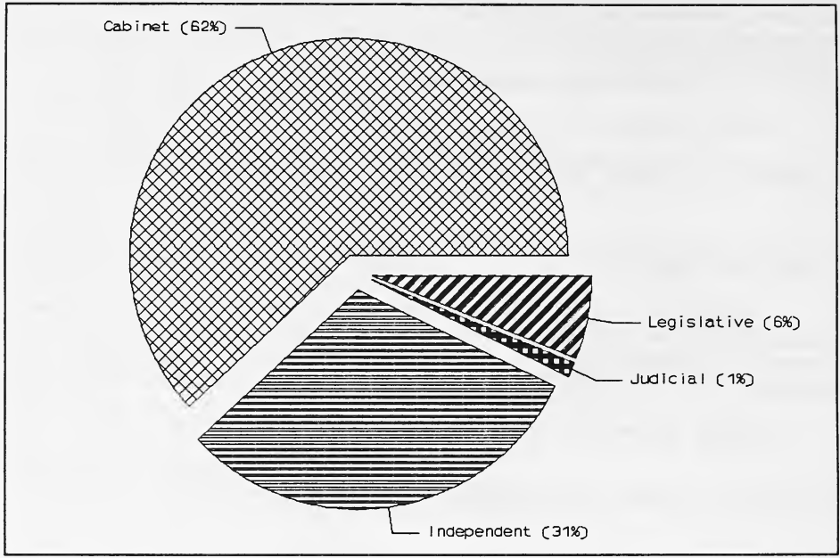
文民機関の CSPP を政府の部門別に示した円グラフです。Cabinet（閣僚級省庁）62%、Independent（独立機関）31%、Legislative（立法府）6%、Judicial（司法府）1% です。
Figure III-1 - Civilian Agency CSPP Distribution by Branch of Government
図 III-1 - 政府部門別の文民機関 CSPP の分布
C. Civilian Agency Plan Profile
C. 文民機関の計画の概況
This section presents the civilian agency data as well as the data for the 55 plans that were submitted by January 8, 1989 by DoD. The data is presented in the same format used in OMB Bulletin 88-16: Basic System Identification, Sensitivity of Information Handled, and System Security Measures. Needs and Additional Comments, a fourth area covered in the Bulletin, is addressed in Section IV.R, among lessons learned from the review process.
本節では、文民機関のデータと、1989 年 1 月 8 日までに DoD から提出された 55 件の計画のデータを示します。データは、OMB Bulletin 88-16 で用いられている形式、すなわち基本的なシステムの識別、取り扱う情報の機微性、システムのセキュリティ対策の順に示します。通達が対象とする第 4 の領域であるニーズと追加のコメントは、レビュー過程で得られた教訓の一つとして第 IV.R 節で扱います。
1. Basic System Identification
1. 基本的なシステムの識別
The system identification categories addressed in this section are listed below along with the allowable entries. Further information is available in Appendix C, OMB Bulletin 88-16.
本項で扱うシステム識別の区分を、許容される記入内容とともに以下に示します。詳細は付録 C の OMB Bulletin 88-16 を参照してください。
System Category: Major Application System (MAS) or General ADP Support System (GADPS)
システム区分: 主要アプリケーションシステム（MAS）または汎用 ADP 支援システム（GADPS）
Operational Status: Operational, under development, or both
運用状況: 運用中、開発中、またはその両方
General Description: A brief (one or two) paragraph of the function and purpose of the system.
一般的な説明: システムの機能と目的についての、短い（1 段落または 2 段落の）記述。
System Environment: Although this section addressed all aspects of the environment, only the data on hardware was clear enough to be presented.
システム環境: この項はあらゆる側面の環境を扱っていましたが、提示できるほど明確だったのはハードウェアに関するデータだけでした。
Further breakdowns by system category and operational status are presented in Section III.D.
システム区分と運用状況によるさらに詳しい内訳は、第 III.D 節に示します。
Figure III-2 shows that approximately two-thirds of the CSPPs are for Major Application Systems (MAS). The remaining one-third are categorized as General ADP Support Systems (GADPS).
図 III-2 は、CSPP のおよそ 3 分の 2 が主要アプリケーションシステム（MAS）についてのものであることを示しています。残りの 3 分の 1 は、汎用 ADP 支援システム（GADPS）に分類されています。
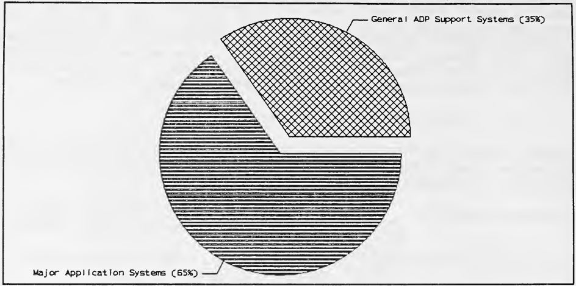
CSPP をシステムの区分別に示した円グラフです。Major Application Systems（主要アプリケーションシステム）65%、General ADP Support Systems（汎用 ADP 支援システム）35% です。
Figure III-2 - Distribution of CSPPs by System Category
図 III-2 - システム区分別の CSPP の分布
Figure III-3 shows that most of the CSPPs reported on operational systems.
図 III-3 は、CSPP の大半が運用中のシステムについて報告していたことを示しています。
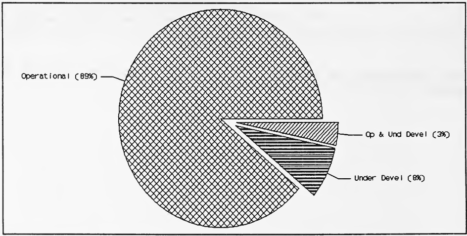
CSPP を運用状況別に示した円グラフです。Operational（運用中）89%、Under Devel（開発中）8%、Op & Und Devel（運用中または開発中）3% です。
Figure III-3 - Distribution of CSPPs by Operational Status
図 III-3 - 運用状況別の CSPP の分布
The entries for General Description and System Environment were based on key words. Key wording was based on the content of the plan. However, the reviewer was often required to extrapolate based on knowledge and experience. Multiple entries were allowed for each field. For example, more than one type of hardware can be in use in a system. Therefore, the percentages can total more than 100 percent. Similar categories of key words were combined to present clearer trends to the data.
一般的な説明とシステム環境の記入内容は、キーワードに基づいていました。キーワードは、計画の内容に基づいていました。しかし、レビュー担当者は、知識と経験に基づいて推定することをしばしば求められました。各項目には複数の記入が認められていました。たとえば、1 つのシステムで複数の種類のハードウェアが使用されている場合があります。そのため、割合の合計が 100 パーセントを超えることがあります。データの傾向をより明確に示すために、類似したキーワードの区分はまとめました。
Table III-5 shows that financial, managerial, and administrative information are most often identified in the CSPPs.
表 III-5 は、CSPP で最も多く特定されているのが、財務、管理、事務の情報であることを示しています。
| GENERAL DESCRIPTION/PURPOSE | PERCENTAGE |
|---|---|
| Financial | 29 |
| Management Information | 28 |
| Administration | 16 |
| Personnel | 11 |
| Office Automation | 10 |
| Recordkeeping/Reporting | 9 |
| Engineering & Science | 8 |
| ADP/AIS Facility | 8 |
| Law Enforcement/Judicial | 6 |
| Health and Safety | 6 |
| Transportation/Travel | 5 |
| Miscellaneous Support | 5 |
| Science Applications | 5 |
| Audit | 5 |
| Telecommunication/Remote Process | 5 |
| Procurement | 3 |
| Miscellaneous | 3 |
| Insurance | 2 |
| Earth Science | 2 |
| Not Reported | 2 |
| 168 * |
| 一般的な説明・目的 | 割合 |
|---|---|
| 財務 | 29 |
| 管理情報 | 28 |
| 事務 | 16 |
| 人事 | 11 |
| オフィスオートメーション | 10 |
| 記録保持・報告 | 9 |
| 工学・科学 | 8 |
| ADP/AIS 施設 | 8 |
| 法執行・司法 | 6 |
| 保健・安全 | 6 |
| 運輸・旅行 | 5 |
| 各種支援 | 5 |
| 科学アプリケーション | 5 |
| 監査 | 5 |
| 電気通信・リモート処理 | 5 |
| 調達 | 3 |
| その他 | 3 |
| 保険 | 2 |
| 地球科学 | 2 |
| 報告なし | 2 |
| 168 * |
Table III-5 - Distribution by General Description/Purpose
表 III-5 - 一般的な説明・目的別の分布
* This table contains non-mutually exclusive fields causing the total to exceed 100%. An amount over 100% represents the existence of plans which reported more than one item for this category.
* この表は、相互に排他的ではない項目を含むため、合計が 100% を超えます。100% を超える分は、この区分について複数の項目を報告した計画があることを表しています。
Table III-6 shows generic types of computer hardware reported by the CSPPs.
表 III-6 は、CSPP が報告したコンピューターハードウェアの一般的な種類を示しています。
| SYSTEM ENVIRONMENT/HARDWARE | PERCENTAGE |
|---|---|
| Mainframe | 47 |
| Networked | 36 |
| Microcomputer-based | 29 |
| Minicomputer | 20 |
| Database Management System | 6 |
| 138 * |
| システム環境・ハードウェア | 割合 |
|---|---|
| メインフレーム | 47 |
| ネットワーク接続 | 36 |
| マイクロコンピューターベース | 29 |
| ミニコンピューター | 20 |
| データベース管理システム | 6 |
| 138 * |
Table III-6 - Distribution by Environment/Hardware
表 III-6 - 環境・ハードウェア別の分布
* This table contains non-mutually exclusive fields causing the total to exceed 100%. An amount over 100% represents the existence of plans which reported more than one item for this category.
* この表は、相互に排他的ではない項目を含むため、合計が 100% を超えます。100% を超える分は、この区分について複数の項目を報告した計画があることを表しています。
2. Sensitivity of Information Handled
2. 取り扱う情報の機微性
The information sensitivity addressed in this section is broken down into two parts:
本項で扱う情報の機微性は、2 つの部分に分けられます。
Part 1
第 1 部
Type of Information: Generic types of sensitive information handled by the system.
情報の種類: システムが取り扱う機微情報の一般的な種類。
Impacts: The potential damage which might occur through error, unauthorized disclosure, modification, or unavailability
影響: 誤り、不正な開示、改ざん、または利用不能によって生じうる損害
Part 2
第 2 部
System Protection Requirements: The need for confidentiality, integrity, and availability.
システム保護要件: 機密性、完全性、可用性の必要性。
Like general description and system environment, entries for sensitivity of information were based on key words derived from the plan contents. Here, too, the reviewer was often required to extrapolate based on knowledge and experience. Multiple entries were allowed for each field. Therefore, the percentages can total more than 100 percent. Similar categories of key words were combined to present clearer trends to the data.
一般的な説明やシステム環境と同様に、情報の機微性の記入内容は、計画の内容から導き出したキーワードに基づいていました。ここでも、レビュー担当者は、知識と経験に基づいて推定することをしばしば求められました。各項目には複数の記入が認められていました。そのため、割合の合計が 100 パーセントを超えることがあります。データの傾向をより明確に示すために、類似したキーワードの区分はまとめました。
The generic types of information are shown in Table III-7. This table is based on plans for which the review team was able to extract type of information data.
情報の一般的な種類を表 III-7 に示します。この表は、レビューチームが情報の種類のデータを抽出できた計画に基づいています。
| INFORMATION SENSITIVITY TYPE OF INFORMATION | PERCENTAGE |
|---|---|
| Privacy Act Data | 44 |
| Mission Critical | 33 |
| Financial/ | 23 |
| Proprietary | 10 |
| Management Private | 9 |
| Sensitive Until Released | 7 |
| Audit/Investigative | 7 |
| Technologically Sensitive | 5 |
| Sensitive/Restrictive | 2 |
| Non-Sensitive | 2 |
| Nuclear | 2 |
| 144 * |
| 情報の機微性 情報の種類 | 割合 |
|---|---|
| プライバシー法データ | 44 |
| 任務遂行上重要 | 33 |
| 財務・予算・政府資産 | 23 |
| 専有情報 | 10 |
| 管理上の非公開情報 | 9 |
| 公表まで機微 | 7 |
| 監査・調査 | 7 |
| 技術的に機微 | 5 |
| 機微・制限付き | 2 |
| 非機微 | 2 |
| 核 | 2 |
| 144 * |
Table III-7 - Distribution by Type of Information
表 III-7 - 情報の種類別の分布
* This table contains non-mutually exclusive fields causing the total to exceed 100%. An amount over 100% represents the existence of plans which reported more than one item for this category.
* この表は、相互に排他的ではない項目を含むため、合計が 100% を超えます。100% を超える分は、この区分について複数の項目を報告した計画があることを表しています。
Table III-8 shows the loss or harm that could result from inadvertent or deliberate disclosure, alteration, or destruction of the data. This table is based on plans for which the review team was able to extract impact data.
表 III-8 は、データの不注意または意図的な開示、改ざん、破壊によって生じうる損失または損害を示しています。この表は、レビューチームが影響のデータを抽出できた計画に基づいています。
| INFORMATION SENSITIVITY - IMPACT | PERCENTAGE |
|---|---|
| Impairment of Agency in Performance of Mission | 34 |
| Inaccurate Information/Reporting | 23 |
| Lawsuit | 22 |
| Inconvenience to Gov't in Performance of Mission | 13 |
| Loss of Gov't Assets | 12 |
| Embarrassment to Agency/Loss of Confidence | 10 |
| Personal/Corporate Gain | 10 |
| Life Threatening/Death | 3 |
| Prohibited Technology Transfer | 1 |
| 128 * |
| 情報の機微性 - 影響 | 割合 |
|---|---|
| 機関の任務遂行の阻害 | 34 |
| 不正確な情報・報告 | 23 |
| 訴訟 | 22 |
| 政府の任務遂行の支障 | 13 |
| 政府資産の喪失 | 12 |
| 機関の体面の失墜・信頼の喪失 | 10 |
| 個人・企業の利益 | 10 |
| 生命への脅威・死亡 | 3 |
| 禁止された技術移転 | 1 |
| 128 * |
Table III-8 - Distribution by Impact
表 III-8 - 影響別の分布
* This table contains non-mutually exclusive fields causing the total to exceed 100%. An amount over 100% represents the existence of plans which reported more than one item for this category.
* この表は、相互に排他的ではない項目を含むため、合計が 100% を超えます。100% を超える分は、この区分について複数の項目を報告した計画があることを表しています。
Figure III-4 and Table III-9 show overall federal management decisions about the relative importance of protection requirements for each of the three categories of sensitivity (confidentiality, integrity, and availability). See IV.S (What was Reported VS. What was Communicated) for more information.
図 III-4 と表 III-9 は、3 つの機微性の区分（機密性、完全性、可用性）のそれぞれについての保護要件の相対的な重要度に関する、連邦政府全体の管理上の決定を示しています。詳細は IV.S（報告された内容と伝達された内容）を参照してください。
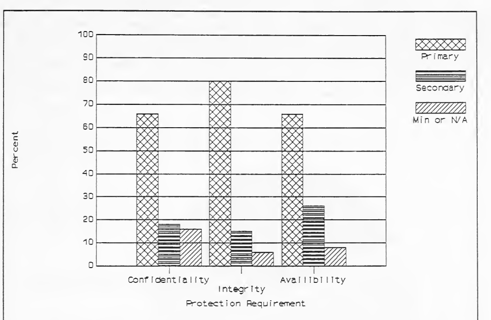
保護要件ごとの重要度の割合を示す棒グラフです（縦軸は Percent で 0〜100、10 刻み。横軸は Protection Requirement（保護要件）で、Confidentiality（機密性）、Integrity（完全性）、Availibility（可用性。原本の綴りのまま）の 3 群。凡例は Primary（主要）、Secondary（副次的）、Min or N/A（最小または該当なし））。Confidentiality は Primary 約 66、Secondary 約 18、Min or N/A 約 16、Integrity は Primary 約 80、Secondary 約 15、Min or N/A 約 6、Availibility は Primary 約 66、Secondary 約 26、Min or N/A 約 8 です。棒には値ラベルがありません。
Figure III-4 - Distribution by Protection Requirements
図 III-4 - 保護要件別の分布
| PROTECTION REQUIREMENTS | PRIMARY | SECONDARY | MINIMAL OR N/A |
|---|---|---|---|
| CONFIDENTIALITY | 66% | 18% | 16% |
| INTEGRITY | 80% | 15% | 5% |
| AVAILABILITY | 66% | 26% | 8% |
| 保護要件 | 主要 | 副次的 | 最小限または該当なし |
|---|---|---|---|
| 機密性 | 66% | 18% | 16% |
| 完全性 | 80% | 15% | 5% |
| 可用性 | 66% | 26% | 8% |
Table III-9 - Distribution by Protection Requirements
表 III-9 - 保護要件別の分布
3. System Security Measures
3. システムのセキュリティ対策
This section of OMB Bulletin 88-16 addressed two questions: the method of risk assessment used and the security measure status.
OMB Bulletin 88-16 のこの節は、用いたリスク評価の方法と、セキュリティ対策の状況という 2 つの問いを扱っていました。
The risk assessment field was used to report on the nature of performed risk assessments. Respondents could indicate whether a "formal," "other," or "formal and other" assessment methodology was used. The distribution is shown in Figure III-5. This field, however, did not address whether a risk assessment had actually been performed. In fact, of the plans that reported some risk assessment methodology, 19% did not report that a risk assessment was "in place or planned" under the management controls section.
リスク評価の欄は、実施されたリスク評価の性質を報告するために用いられました。回答者は、「正式な」、「その他の」、または「正式およびその他の」評価手法のいずれが用いられたかを示すことができました。分布は図 III-5 に示します。ただし、この欄は、リスク評価が実際に実施されたかどうかを扱っていませんでした。実際、何らかのリスク評価手法を報告した計画のうち、19% は、管理策の項で、リスク評価が「導入済みまたは計画中」であると報告していませんでした。
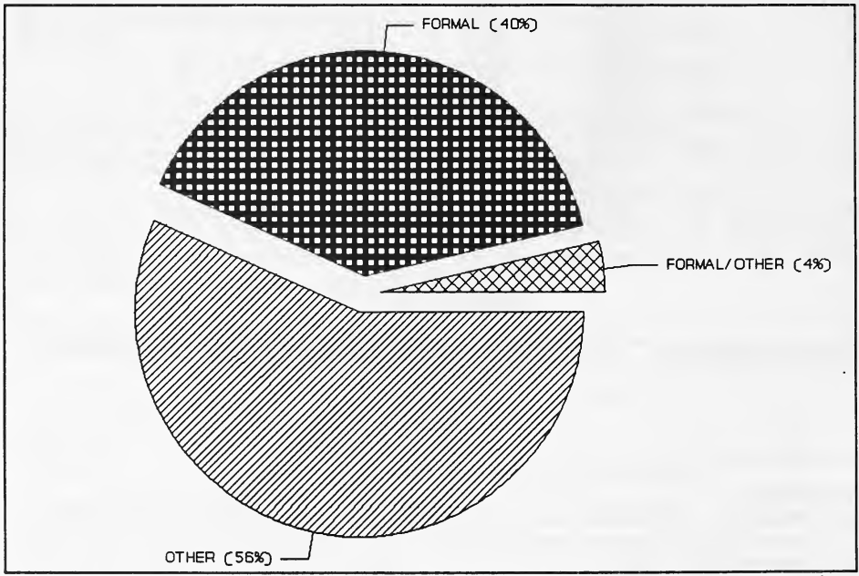
CSPP が報告したリスク評価の種類を示す円グラフです。OTHER（その他）56%、FORMAL（正式な方法）40%、FORMAL/OTHER（両方）4% です。
Figure III-5 - Percentage of CSPPs Reporting Type of Risk Assessments
図 III-5 - リスク評価の種類を報告した CSPP の割合
The status of the reported security measures are presented in Tables III-10 and III-11 and Figures III-6 through III-38 following the tables. These tables and figures divide the CSPPs into General ADP Support Systems (GADPS) (Table III-10 and Figures III-6 through III-22) and Major Application Systems (MAS) (Table III-11 and Figures III-23 through III-38).
報告されたセキュリティ対策の状況は、表 III-10 および III-11 と、表に続く図 III-6 から図 III-38 に示します。これらの表と図は、CSPP を、汎用 ADP 支援システム（GADPS）（表 III-10 と図 III-6 から図 III-22）と、主要アプリケーションシステム（MAS）（表 III-11 と図 III-23 から図 III-38）に分けています。
As shown in Table III-10 and Table III-11 and Figures III-6 through III-38, the vast majority of the controls are reported either in place or in place and planned. The notable exception is certification/accreditation, which is reported less than 60 percent in place or in place and planned. Also, integrity and confidentiality controls for General ADP Support System (GADPS) are reported only approximately 80% in place or planned. OMB Bulletin 88-16 defined these controls narrowly as encryption, message authentication, and other technical mechanisms. On the other hand, integrity controls for Major Application Systems (MAS), which were 94% in place and planned, include a broad array of data validation mechanisms, such as edit checks and processing integrity checks.
表 III-10 と表 III-11、および図 III-6 から図 III-38 に示すとおり、管理策の大多数は、導入済み、または導入済みかつ計画中として報告されています。注目すべき例外は認証・認定で、導入済み、または導入済みかつ計画中として報告されているのは 60 パーセント未満です。また、汎用 ADP 支援システム（GADPS）の完全性と機密性の管理策は、導入済みまたは計画中として報告されているのが約 80% にとどまります。OMB Bulletin 88-16 は、これらの管理策を、暗号化、メッセージ認証、その他の技術的な仕組みとして狭く定義していました。一方、主要アプリケーションシステム（MAS）の完全性の管理策は、導入済みかつ計画中が 94% であり、編集チェックや処理の完全性チェックなど、広範なデータ妥当性確認の仕組みを含んでいます。
Note: Since many of the plans contained blanks in the control lists, the total numbers of CSPPs reported for the various controls are not the same.
注: 多くの計画で管理策の一覧に空欄があったため、各種の管理策について報告された CSPP の総数は同じではありません。
| System Security Measures GENERAL ADP SUPPORT SYSTEMS (GADPS) | |||||
|---|---|---|---|---|---|
| CONTROLS | TOTAL | IN PLACE | IN PLACE &PLANNED | PLANNED | N/A |
| Management Controls | |||||
| Assignment of Security Responsibility | 520 | 90% | 7% | 2% | 1% |
| Personnel Select/Screening | 494 | 78% | 10% | 3% | 9% |
| Risk Analysis/Assessment | 468 | 65% | 15% | 16% | 4% |
| Development Controls | |||||
| Certification/ | 462 | 42% | 8% | 19% | 31% |
| Security/Acquisition Specs | 469 | 71% | 6% | 4% | 19% |
| Operational Controls | |||||
| Audit & Variance Detection | 474 | 68% | 7% | 9% | 16% |
| Documentation | 495 | 81% | 9% | 6% | 4% |
| Physical/Environ Protect | 487 | 86% | 9% | 4% | 1% |
| Production, I/O Controls | 477 | 78% | 5% | 5% | 12% |
| Emergency,Backup,Contingency | 508 | 64% | 19% | 14% | 3% |
| System Software/Maintenance | 485 | 82% | 7% | 5% | 6% |
| Security Awareness/Training | 520 | 60% | 27% | 11% | 2% |
| Technical Controls | |||||
| Authorization/Access Control | 517 | 83% | 5% | 6% | 6% |
| Audit Trail Mechanisms | 492 | 74% | 7% | 6% | 13% |
| Confidentiality Controls | 475 | 67% | 5% | 8% | 20% |
| Integrity Controls | 460 | 68% | 5% | 6% | 21% |
| User ID & Authentication | 515 | 79% | 8% | 5% | 8% |
| システムのセキュリティ対策 汎用 ADP 支援システム（GADPS） | |||||
|---|---|---|---|---|---|
| 管理策 | 合計 | 導入済み | 導入済みかつ計画中 | 計画中 | 該当なし |
| 管理面の管理策 | |||||
| セキュリティ責任の割当て | 520 | 90% | 7% | 2% | 1% |
| 要員の選定・審査 | 494 | 78% | 10% | 3% | 9% |
| リスク分析・評価 | 468 | 65% | 15% | 16% | 4% |
| 開発面の管理策 | |||||
| 認証・認定 | 462 | 42% | 8% | 19% | 31% |
| セキュリティ・調達仕様 | 469 | 71% | 6% | 4% | 19% |
| 運用面の管理策 | |||||
| 監査・逸脱検知 | 474 | 68% | 7% | 9% | 16% |
| 文書化 | 495 | 81% | 9% | 6% | 4% |
| 物理的・環境的保護 | 487 | 86% | 9% | 4% | 1% |
| 本番運用、入出力管理策 | 477 | 78% | 5% | 5% | 12% |
| 緊急時、バックアップ、コンティンジェンシー | 508 | 64% | 19% | 14% | 3% |
| システムソフトウェア・保守 | 485 | 82% | 7% | 5% | 6% |
| セキュリティ意識向上・トレーニング | 520 | 60% | 27% | 11% | 2% |
| 技術面の管理策 | |||||
| 認可・アクセス制御 | 517 | 83% | 5% | 6% | 6% |
| 監査証跡の仕組み | 492 | 74% | 7% | 6% | 13% |
| 機密性管理策 | 475 | 67% | 5% | 8% | 20% |
| 完全性管理策 | 460 | 68% | 5% | 6% | 21% |
| 利用者 ID・認証 | 515 | 79% | 8% | 5% | 8% |
Table III-10 - Distribution by Security Control Measures and Status for General ADP Support Systems
表 III-10 - 汎用 ADP 支援システムのセキュリティ管理策と状況別の分布
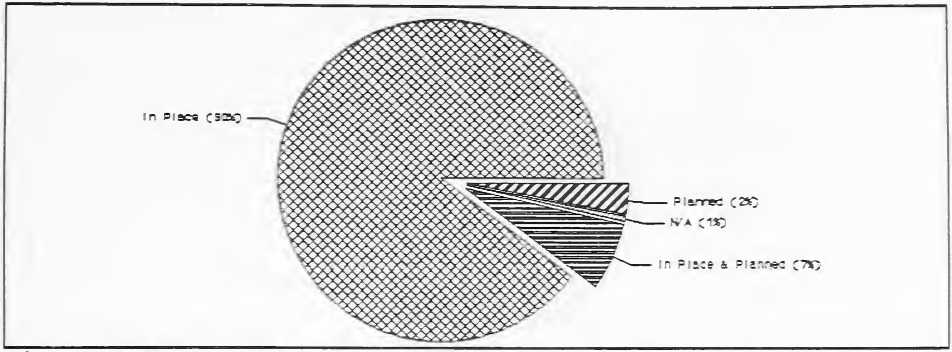
セキュリティ責任の割り当て（GADPS）の状況を示す円グラフです。In Place（実施済み）90%、In Place & Planned（実施済みかつ計画中）7%、Planned（計画中）2%、N/A（該当なし）1% です。
Figure III-6 - Assign. of Security Responsibility-GADPS
図 III-6 - セキュリティ責任の割当て-GADPS
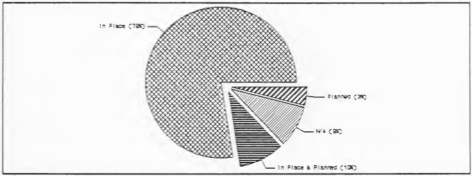
人員の選考と審査（GADPS）の状況を示す円グラフです。In Place（実施済み）78%、In Place & Planned（実施済みかつ計画中）10%、Planned（計画中）3%、N/A（該当なし）9% です。
Figure III-7 - Personnel Selection and Screening-GADPS
図 III-7 - 要員の選定と審査-GADPS
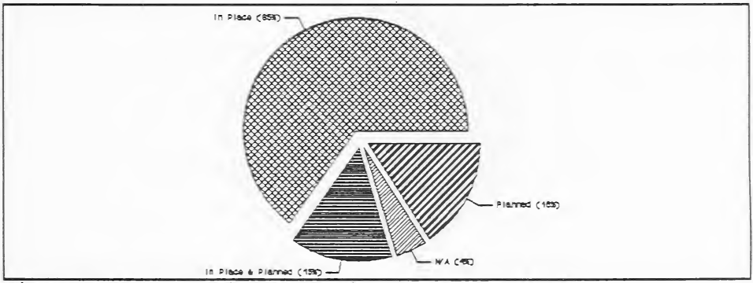
リスク分析・評価（GADPS）の状況を示す円グラフです。In Place（実施済み）65%、In Place & Planned（実施済みかつ計画中）15%、Planned（計画中）16%、N/A（該当なし）4% です。
Figure III-8 - Risk Analysis/Assessment-GADPS
図 III-8 - リスク分析・評価-GADPS
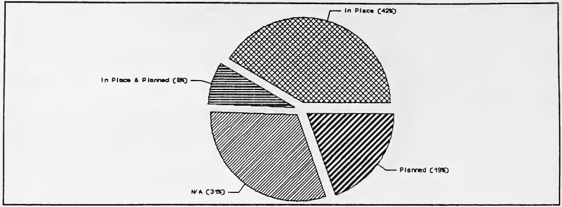
認証と認定（GADPS）の状況を示す円グラフです。In Place（実施済み）42%、In Place & Planned（実施済みかつ計画中）8%、Planned（計画中）19%、N/A（該当なし）31% です。
Figure III-9 - Certification and Accreditation-GADPS
図 III-9 - 認証および認定-GADPS
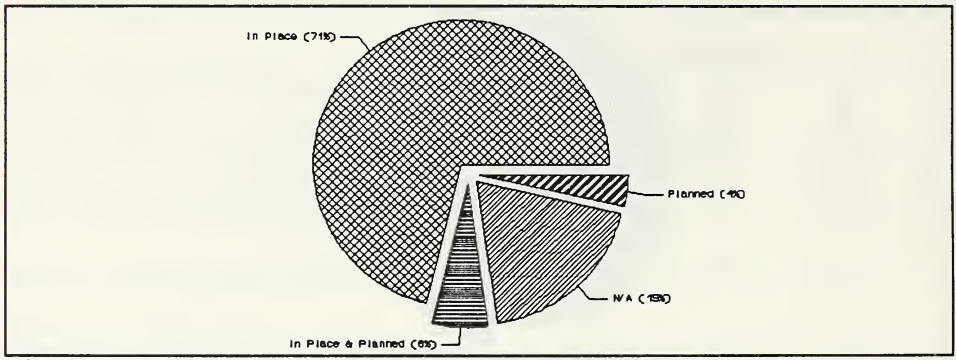
セキュリティと調達の仕様（GADPS）の状況を示す円グラフです。In Place（実施済み）71%、In Place & Planned（実施済みかつ計画中）6%、Planned（計画中）4%、N/A（該当なし）19% です。
Figure III-10 - Security and Acquisition Specs-GADPS
図 III-10 - セキュリティおよび調達仕様-GADPS
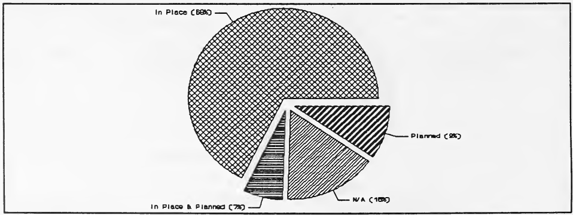
監査・差異の検出（GADPS）の状況を示す円グラフです。In Place（実施済み）68%、In Place & Planned（実施済みかつ計画中）7%、Planned（計画中）9%、N/A（該当なし）16% です。
Figure III-11 - Audit/Variance Detection-GADPS
図 III-11 - 監査・逸脱検知-GADPS
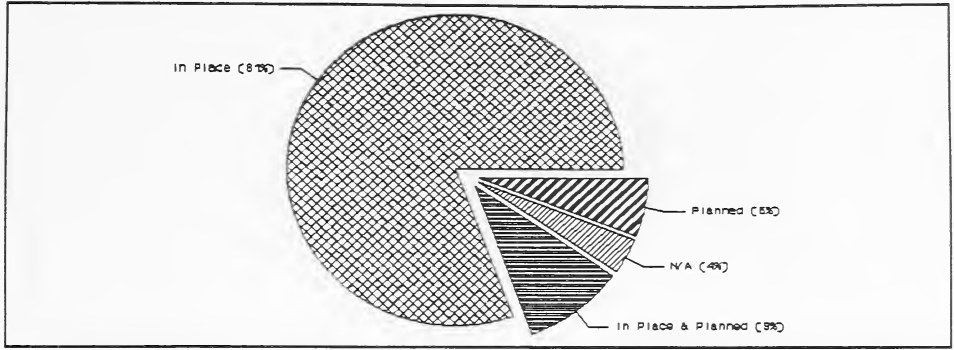
文書化（GADPS）の状況を示す円グラフです。In Place（実施済み）81%、In Place & Planned（実施済みかつ計画中）9%、Planned（計画中）6%、N/A（該当なし）4% です。
Figure III-12 - Documentation-GADPS
図 III-12 - 文書化-GADPS
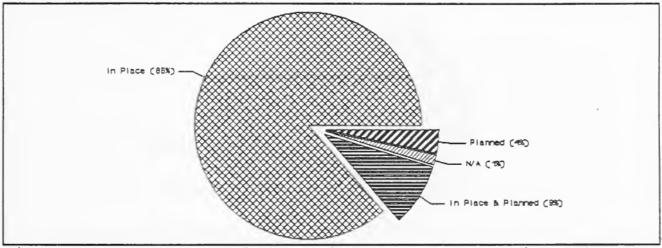
物理的・環境的保護（GADPS）の状況を示す円グラフです。In Place（実施済み）86%、In Place & Planned（実施済みかつ計画中）9%、Planned（計画中）4%、N/A（該当なし）1% です。
Figure III-13 - Physical/Environmental Protection-GADPS
図 III-13 - 物理的・環境的保護-GADPS
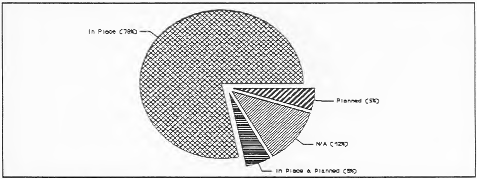
運用処理・入出力の管理（GADPS）の状況を示す円グラフです。In Place（実施済み）78%、In Place & Planned（実施済みかつ計画中）5%、Planned（計画中）5%、N/A（該当なし）12% です。
Figure III-14 - Production, I/O Controls-GADPS
図 III-14 - 本番運用、入出力管理策-GADPS
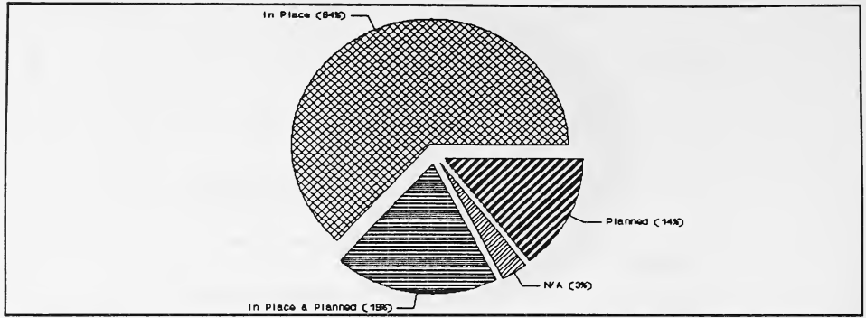
緊急時対応・バックアップ・継続計画（GADPS）の状況を示す円グラフです。In Place（実施済み）64%、In Place & Planned（実施済みかつ計画中）19%、Planned（計画中）14%、N/A（該当なし）3% です。
Figure III-15 - Emergency, Backup, and Cont. Planning-GADPS
図 III-15 - 緊急時、バックアップ、および継続計画策定-GADPS
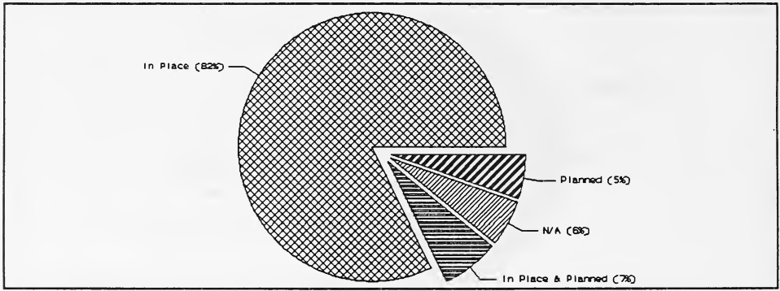
システムソフトウェアと保守（GADPS）の状況を示す円グラフです。In Place（実施済み）82%、In Place & Planned（実施済みかつ計画中）7%、Planned（計画中）5%、N/A（該当なし）6% です。
Figure III-16 - System Software and Maintenance-GADPS
図 III-16 - システムソフトウェアと保守-GADPS
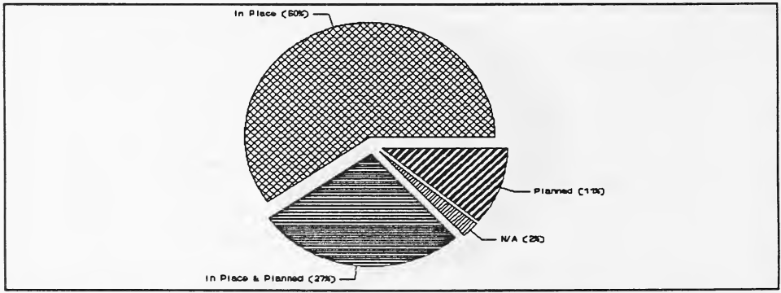
セキュリティの意識向上と訓練（GADPS）の状況を示す円グラフです。In Place（実施済み）60%、In Place & Planned（実施済みかつ計画中）27%、Planned（計画中）11%、N/A（該当なし）2% です。
Figure III-17 - Security Awareness and Training-GADPS
図 III-17 - セキュリティ意識向上とトレーニング-GADPS
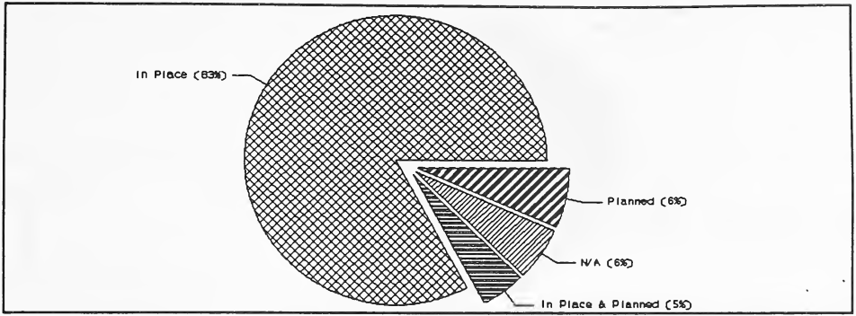
認可とアクセス制御（GADPS）の状況を示す円グラフです。In Place（実施済み）83%、In Place & Planned（実施済みかつ計画中）5%、Planned（計画中）6%、N/A（該当なし）6% です。
Figure III-18 - Authorization and Access Controls-GADPS
図 III-18 - 認可とアクセス制御-GADPS
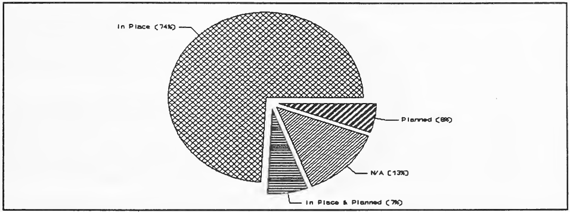
監査証跡の仕組み（GADPS）の状況を示す円グラフです。In Place（実施済み）74%、In Place & Planned（実施済みかつ計画中）7%、Planned（計画中）6%、N/A（該当なし）13% です。
Figure III-19 - Audit Trail Mechanisms-GADPS
図 III-19 - 監査証跡の仕組み-GADPS
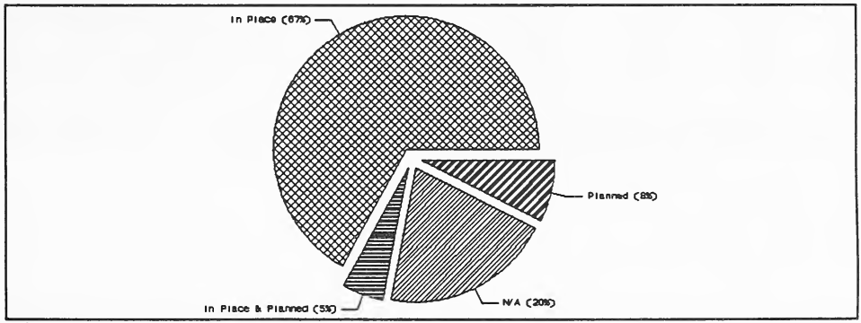
機密性の管理策（GADPS）の状況を示す円グラフです。In Place（実施済み）67%、In Place & Planned（実施済みかつ計画中）5%、Planned（計画中）8%、N/A（該当なし）20% です。
Figure III-20 - Confidentiality Controls-GADPS
図 III-20 - 機密性管理策-GADPS
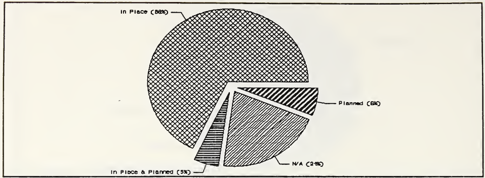
完全性の管理策（GADPS）の状況を示す円グラフです。In Place（実施済み）68%、In Place & Planned（実施済みかつ計画中）5%、Planned（計画中）6%、N/A（該当なし）21% です。
Figure III-21 - Integrity Controls-GADPS
図 III-21 - 完全性管理策-GADPS
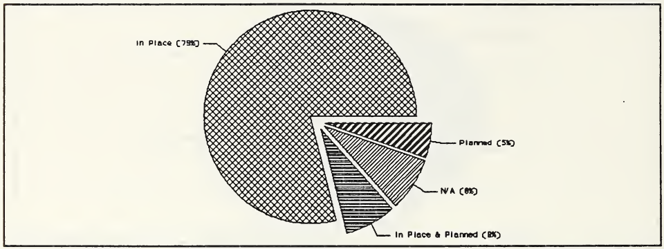
利用者の識別・認可（GADPS）の状況を示す円グラフです。In Place（実施済み）79%、In Place & Planned（実施済みかつ計画中）8%、Planned（計画中）5%、N/A（該当なし）8% です。
Figure III-22 - User Identification/Authorizations-GADPS
図 III-22 - 利用者の識別・認可-GADPS
| System Security Measures MAJOR APPLICATION SYSTEMS (MAS) | |||||
|---|---|---|---|---|---|
| CONTROLS | TOTAL | IN PLACE | IN PLACE &PLANNED | PLANNED | N/A |
| Management Controls | |||||
| Assignment of Security Responsibility | 986 | 91% | 4% | 5% | 0% |
| Personnel Select/Screening | 958 | 76% | 10% | 4% | 10% |
| Risk Analysis/Assessment | 953 | 71% | 10% | 16% | 3% |
| Development Controls | |||||
| Design Review/Testing | 935 | 65% | 8% | 7% | 20% |
| Certification/ | 931 | 47% | 7% | 18% | 28% |
| Security/Acquisition Specs | 932 | 65% | 9% | 7% | 19% |
| Operational Controls | |||||
| Audit & Variance Detection | 934 | 72% | 6% | 10% | 12% |
| Documentation | 959 | 81% | 9% | 9% | 1% |
| Production, I/O Controls | 953 | 82% | 6% | 7% | 5% |
| Emergency,Backup,Contingency | 976 | 68% | 10% | 18% | 4% |
| System Software/Maintenance | 951 | 84% | 6% | 6% | 4% |
| Security Awareness/Training | 970 | 57% | 24% | 17% | 2% |
| Technical Controls | |||||
| Authorization/Access Control | 977 | 85% | 6% | 6% | 3% |
| Audit Trail Mechanisms | 947 | 71% | 7% | 8% | 14% |
| Integrity Controls | 953 | 81% | 7% | 6% | 6% |
| User ID & Authentication | 986 | 84% | 6% | 6% | 4% |
| システムのセキュリティ対策 主要アプリケーションシステム（MAS） | |||||
|---|---|---|---|---|---|
| 管理策 | 合計 | 導入済み | 導入済みかつ計画中 | 計画中 | 該当なし |
| 管理面の管理策 | |||||
| セキュリティ責任の割当て | 986 | 91% | 4% | 5% | 0% |
| 要員の選定・審査 | 958 | 76% | 10% | 4% | 10% |
| リスク分析・評価 | 953 | 71% | 10% | 16% | 3% |
| 開発面の管理策 | |||||
| 設計レビュー・テスト | 935 | 65% | 8% | 7% | 20% |
| 認証・認定 | 931 | 47% | 7% | 18% | 28% |
| セキュリティ・調達仕様 | 932 | 65% | 9% | 7% | 19% |
| 運用面の管理策 | |||||
| 監査・逸脱検知 | 934 | 72% | 6% | 10% | 12% |
| 文書化 | 959 | 81% | 9% | 9% | 1% |
| 本番運用、入出力管理策 | 953 | 82% | 6% | 7% | 5% |
| 緊急時、バックアップ、コンティンジェンシー | 976 | 68% | 10% | 18% | 4% |
| システムソフトウェア・保守 | 951 | 84% | 6% | 6% | 4% |
| セキュリティ意識向上・トレーニング | 970 | 57% | 24% | 17% | 2% |
| 技術面の管理策 | |||||
| 認可・アクセス制御 | 977 | 85% | 6% | 6% | 3% |
| 監査証跡の仕組み | 947 | 71% | 7% | 8% | 14% |
| 完全性管理策 | 953 | 81% | 7% | 6% | 6% |
| 利用者 ID・認証 | 986 | 84% | 6% | 6% | 4% |
Table III-11 - Distribution by Security Control Measures and Status for Major Application Systems
表 III-11 - 主要アプリケーションシステムのセキュリティ管理策と状況別の分布
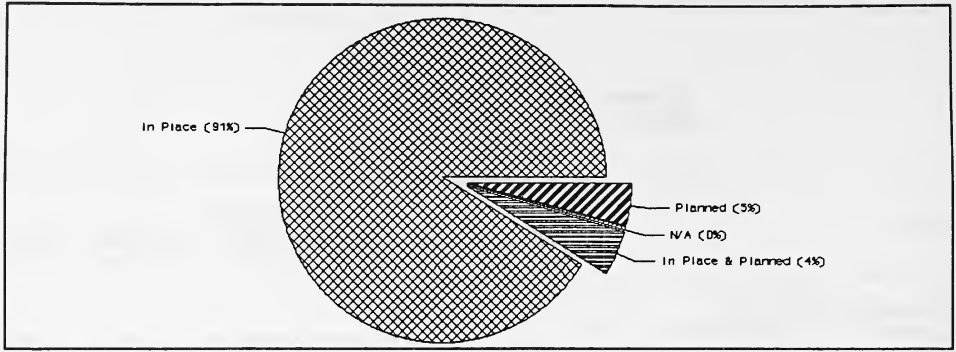
セキュリティ責任の割り当て（MAS）の状況を示す円グラフです。In Place（実施済み）91%、In Place & Planned（実施済みかつ計画中）4%、Planned（計画中）5%、N/A（該当なし）0% です。
Figure III-23 - Assignment of Security Responsibility-MAS
図 III-23 - セキュリティ責任の割当て-MAS
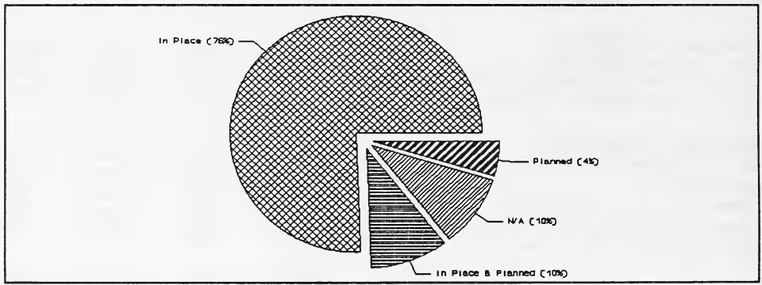
人員の選考と審査（MAS）の状況を示す円グラフです。In Place（実施済み）76%、In Place & Planned（実施済みかつ計画中）10%、Planned（計画中）4%、N/A（該当なし）10% です。
Figure III-24 - Personnel Selection and Screening-MAS
図 III-24 - 要員の選定と審査-MAS
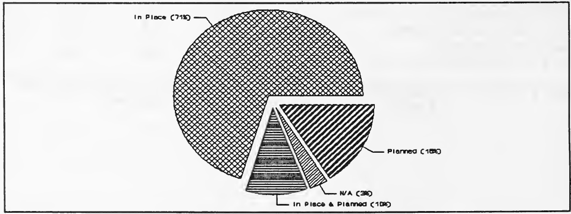
リスク分析・評価（MAS）の状況を示す円グラフです。In Place（実施済み）71%、In Place & Planned（実施済みかつ計画中）10%、Planned（計画中）16%、N/A（該当なし）3% です。
Figure III-25 - Risk Analysis/Assessment-MAS
図 III-25 - リスク分析・評価-MAS
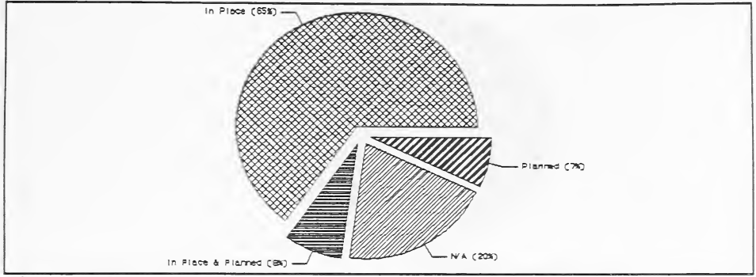
設計の審査と試験（MAS）の状況を示す円グラフです。In Place（実施済み）65%、In Place & Planned（実施済みかつ計画中）8%、Planned（計画中）7%、N/A（該当なし）20% です。
Figure III-26 - Design Review and Testing-MAS
図 III-26 - 設計レビューとテスト-MAS
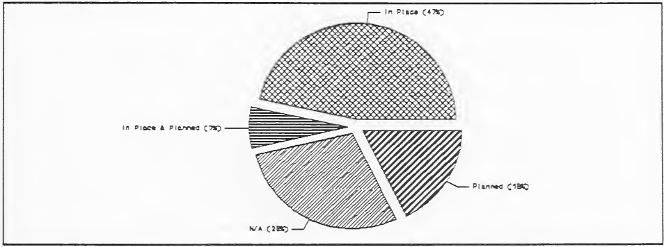
認証と認定（MAS）の状況を示す円グラフです。In Place（実施済み）47%、In Place & Planned（実施済みかつ計画中）7%、Planned（計画中）18%、N/A（該当なし）28% です。
Figure III-27 - Certification and Accreditation-MAS
図 III-27 - 認証および認定-MAS
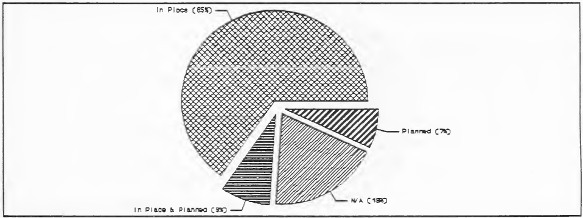
セキュリティと調達の仕様（MAS）の状況を示す円グラフです。In Place（実施済み）65%、In Place & Planned（実施済みかつ計画中）9%、Planned（計画中）7%、N/A（該当なし）19% です。
Figure III-28 - Security and Acquisition Specifications-MAS
図 III-28 - セキュリティおよび調達仕様-MAS
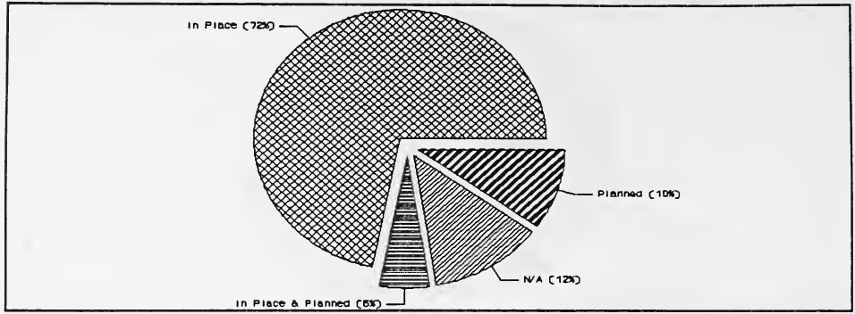
監査と差異の検出（MAS）の状況を示す円グラフです。In Place（実施済み）72%、In Place & Planned（実施済みかつ計画中）6%、Planned（計画中）10%、N/A（該当なし）12% です。
Figure III-29 - Audit and Variance Detection-MAS
図 III-29 - 監査と逸脱検知-MAS
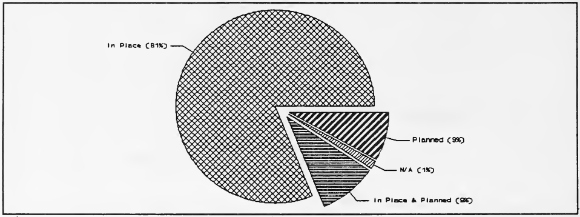
文書化（MAS）の状況を示す円グラフです。In Place（実施済み）81%、In Place & Planned（実施済みかつ計画中）9%、Planned（計画中）9%、N/A（該当なし）1% です。
Figure III-30 - Documentation-MAS
図 III-30 - 文書化-MAS
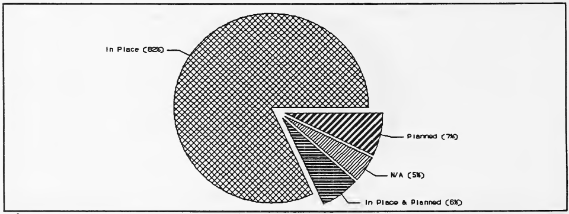
運用処理・入出力の管理（MAS）の状況を示す円グラフです。In Place（実施済み）82%、In Place & Planned（実施済みかつ計画中）6%、Planned（計画中）7%、N/A（該当なし）5% です。
Figure III-31 - Production, I/O Controls-MAS
図 III-31 - 本番運用、入出力管理策-MAS
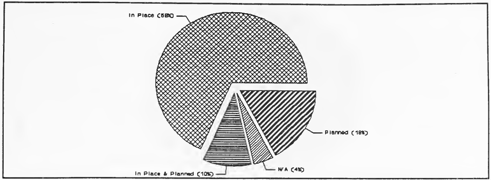
緊急時対応・バックアップ・継続計画（MAS）の状況を示す円グラフです。In Place（実施済み）68%、In Place & Planned（実施済みかつ計画中）10%、Planned（計画中）18%、N/A（該当なし）4% です。
Figure III-32 - Emergency, Backup, & Cont. Planning-MAS
図 III-32 - 緊急時、バックアップ、および継続計画策定-MAS
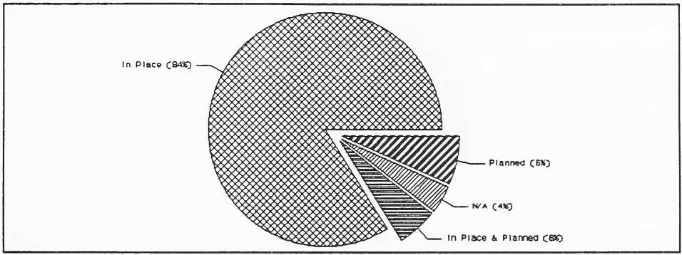
システムソフトウェアと保守（MAS）の状況を示す円グラフです。In Place（実施済み）84%、In Place & Planned（実施済みかつ計画中）6%、Planned（計画中）6%、N/A（該当なし）4% です。
Figure III-33 - System Software and Maintenance-MAS
図 III-33 - システムソフトウェアと保守-MAS
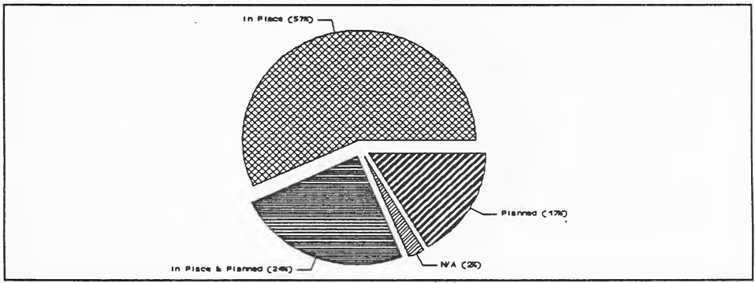
セキュリティの意識向上と訓練（MAS）の状況を示す円グラフです。In Place（実施済み）57%、In Place & Planned（実施済みかつ計画中）24%、Planned（計画中）17%、N/A（該当なし）2% です。
Figure III-34 - Security Awareness and Training-MAS
図 III-34 - セキュリティ意識向上とトレーニング-MAS
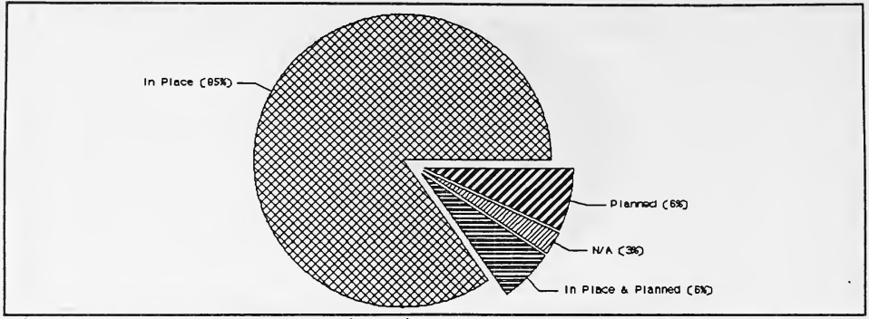
認可とアクセス制御（MAS）の状況を示す円グラフです。In Place（実施済み）85%、In Place & Planned（実施済みかつ計画中）6%、Planned（計画中）6%、N/A（該当なし）3% です。
Figure III-35 - Authorization and Access Controls-MAS
図 III-35 - 認可とアクセス制御-MAS
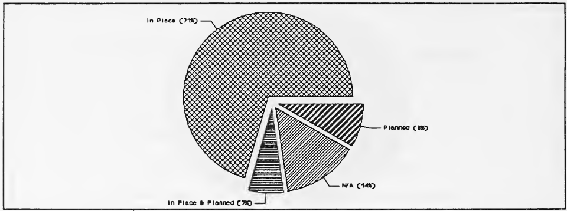
監査証跡の仕組み（MAS）の状況を示す円グラフです。In Place（実施済み）71%、In Place & Planned（実施済みかつ計画中）7%、Planned（計画中）8%、N/A（該当なし）14% です。
Figure III-36 - Audit Trail Mechanisms-MAS
図 III-36 - 監査証跡の仕組み-MAS
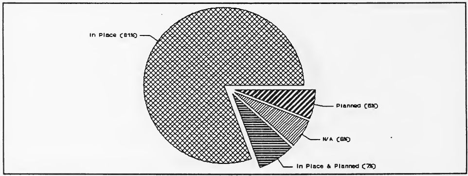
完全性の管理策（MAS）の状況を示す円グラフです。In Place（実施済み）81%、In Place & Planned（実施済みかつ計画中）7%、Planned（計画中）6%、N/A（該当なし）6% です。
Figure III-37 - Integrity Controls-MAS
図 III-37 - 完全性管理策-MAS
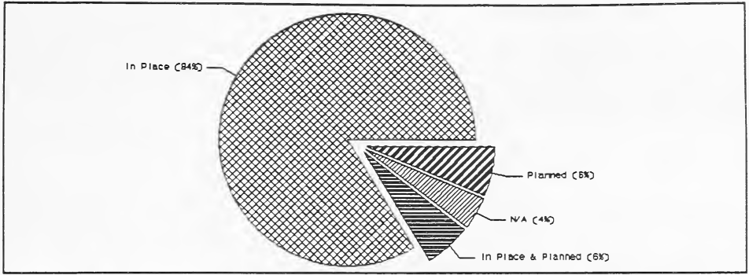
利用者の識別と認可（MAS）の状況を示す円グラフです。In Place（実施済み）84%、In Place & Planned（実施済みかつ計画中）6%、Planned（計画中）6%、N/A（該当なし）4% です。
Figure III-38 - User Identification and Authorization-MAS
図 III-38 - 利用者の識別と認可-MAS
D. Data Groupings
D. データのグループ分け
This section presents the civilian CSPP data for the basic system identification broken down according to system category and branch of government. The basic system identification fields are: system category and operational status.
本節では、基本的なシステムの識別に関する文民機関の CSPP データを、システム区分と政府部門別に分けて示します。基本的なシステムの識別の欄は、システム区分と運用状況です。
1. System Category
1. システム区分
The following Figures III-39 and III-40 present a further breakdown of system category and operational status. Note: Sixty-five percent of the CSPPs were Major Application Systems (MAS) and 35% of the CSPPs were General ADP Systems (GADPS).
以下の図 III-39 と III-40 は、システム区分と運用状況のさらに詳しい内訳を示しています。注: CSPP の 65% は主要アプリケーションシステム（MAS）、35% は汎用 ADP システム（GADPS）でした。
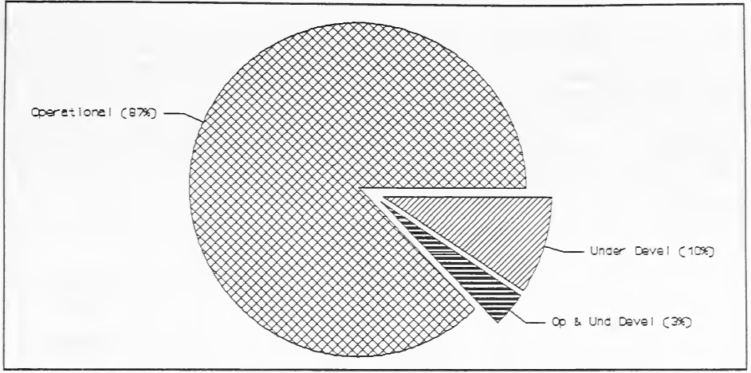
MAS の計画を運用状況別に示した円グラフです。Operational（運用中）87%、Under Devel（開発中）10%、Op & Und Devel（運用中かつ開発中）3% です。
Figure III-39 - Distribution by Operational Status - MAS
図 III-39 - 運用状況別の分布 - MAS
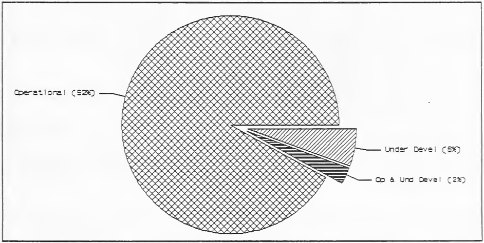
GADPS の計画を運用状況別に示した円グラフです。Operational（運用中）92%、Under Devel（開発中）6%、Op & Und Devel（運用中かつ開発中）2% です。
Figure III-40 - Distribution by Operational Status - GADPS
図 III-40 - 運用状況別の分布 - GADPS
2. Branch of Government
2. 政府部門
Figures III-41 and III-42 and Tables III-12 and III-13 show the CSPP distribution for system category and operational status by branch of government. The executive branch has been separated into cabinet and independent establishments. A list of the agencies in each group and the number of plans in that group is provided in Section III.B. For ease of comparison the "ALL" grouping represents the overall distribution for all civilian agency plans for each of the respective categories. In these figures, the data is presented as a percentage of each branch.
図 III-41 と III-42、および表 III-12 と III-13 は、政府の各部門別に、システム区分および運用状況ごとの CSPP の分布を示しています。行政府は、内閣の機関と独立機関に分けています。各グループに属する機関の一覧と、そのグループの計画数は、第 III.B 節に示しています。比較しやすいよう、「ALL」のグループは、それぞれの区分について、すべての文民機関の計画全体の分布を表しています。これらの図では、各部門内の割合としてデータを示しています。
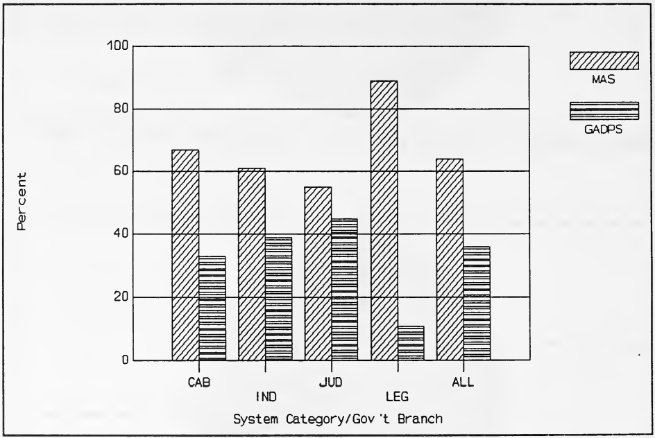
政府の部門ごとに MAS と GADPS の計画の割合を示す棒グラフです（縦軸は Percent で 0〜100、20 刻み。横軸は System Category/Gov 't Branch。凡例は MAS と GADPS）。CAB、IND、JUD、LEG、ALL の順に、MAS の棒は約 67、61、55、89、64、GADPS の棒は約 33、39、45、11、36 です。棒に数値の記入はありません。
Figure III-41 - Distribution by System Category & Branch
図 III-41 - システム区分および政府部門別の分布
| SYSTEM CATEGORY | CABINET | INDEPENDENT | JUDICIAL | LEGISLATIVE | ALL |
|---|---|---|---|---|---|
| MAS | 67% | 61% | 55% | 89% | 65% |
| GADPS | 33% | 39% | 45% | 11% | 35% |
| システム区分 | 内閣 | 独立機関 | 司法府 | 立法府 | 全体（ALL） |
|---|---|---|---|---|---|
| MAS | 67% | 61% | 55% | 89% | 65% |
| GADPS | 33% | 39% | 45% | 11% | 35% |
Table III-12 - Distribution by System Category & Branch
表 III-12 - システム区分および政府部門別の分布
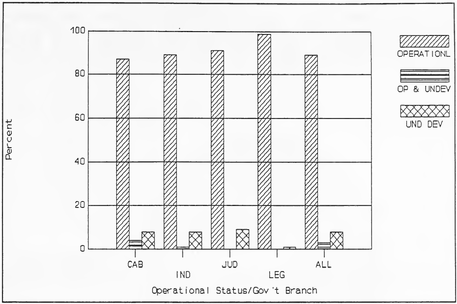
政府の部門ごとに、計画の運用状況の割合を示す棒グラフです（縦軸は Percent で 0〜100、20 刻み。横軸は Operational Status/Gov 't Branch。凡例は OPERATIONL、OP & UNDEV、UND DEV）。CAB、IND、JUD、LEG、ALL の順に、OPERATIONL（運用中）の棒は約 87、89、91、99、89 で、OP & UNDEV（運用中かつ開発中）と UND DEV（開発中）の棒はいずれも 10 未満です。棒に数値の記入はありません。
Figure III-42 - Distribution by Operational Status & Branch
図 III-42 - 運用状況および政府部門別の分布
| OPERATIONAL STATUS | CABINET | INDEPENDENT | JUDICIAL | LEGISLATIVE | ALL |
|---|---|---|---|---|---|
| OPERATIONAL | 87% | 89% | 91% | 99% | 89% |
| OP & UND DEV | 4% | 1% | 0% | 0% | 3% |
| UND DEV | 8% | 8% | 9% | 1% | 8% |
| 運用状況 | 内閣 | 独立機関 | 司法府 | 立法府 | 全体（ALL） |
|---|---|---|---|---|---|
| 運用中 | 87% | 89% | 91% | 99% | 89% |
| 運用中かつ開発中（OP & UND DEV） | 4% | 1% | 0% | 0% | 3% |
| 開発中（UND DEV） | 8% | 8% | 9% | 1% | 8% |
Table III-13 - Distribution by Operational Status & Branch
表 III-13 - 運用状況および政府部門別の分布
E. Department of Defense Plans
E. 国防総省の計画
Figures III-43 and III-44 and Table III-14 show the distribution of the later 438 DoD submissions, which included 27,937 plans. As explained in Section II.D, Department of Defense CSPP Review Process, more detailed data on the DoD submissions could not be maintained.
図 III-43 と III-44、および表 III-14 は、後期の DoD の提出物 438 件（計画 27,937 件を含む）の分布を示しています。第 II.D 節「国防総省の CSPP レビュー過程」で説明したとおり、DoD の提出物についてのより詳細なデータは維持できませんでした。
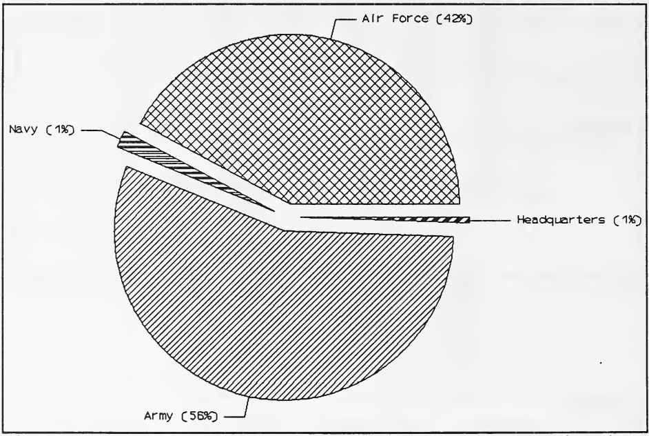
DoD の計画を組織別に示した円グラフです。Army（陸軍）56%、Air Force（空軍）42%、Navy（海軍）1%、Headquarters（本部）1% です。
Figure III-43 - Distribution of Plans by DoD Organizations
図 III-43 - 国防総省の組織別の計画の分布
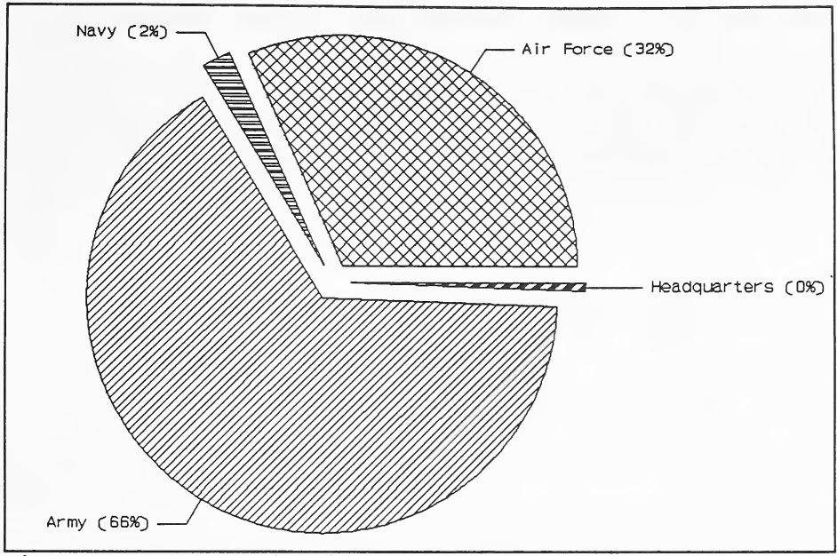
DoD の提出を組織別に示した円グラフです。Army（陸軍）66%、Air Force（空軍）32%、Navy（海軍）2%、Headquarters（本部）0% です。
Figure III-44 - Distribution of Submissions by DoD Organizations
図 III-44 - 国防総省の組織別の提出物の分布
| ORGANIZATION | PLANS | SUBMISSIONS | ||
|---|---|---|---|---|
| Number | Percentage | Number | Percentage | |
| AIR FORCE | 11,869 | 42 | 139 | 32 |
| ARMY | 15,570 | 56 | 288 | 66 |
| NAVY | 395 | 1 | 9 | 2 |
| HEADQUARTERS | 103 | <1 | 2 | <1 |
| TOTAL | 27,937 | 100 | 438 | 100 |
| 組織 | 計画 | 提出物 | ||
|---|---|---|---|---|
| 件数 | 割合 | 件数 | 割合 | |
| 空軍 | 11,869 | 42 | 139 | 32 |
| 陸軍 | 15,570 | 56 | 288 | 66 |
| 海軍 | 395 | 1 | 9 | 2 |
| 本部 | 103 | <1 | 2 | <1 |
| 合計 | 27,937 | 100 | 438 | 100 |
Table III-14 - Distribution of Plans by DoD Organizations
表 III-14 - 国防総省の組織別の計画の分布
IV. OBSERVATIONS, COMMENTS, AND LESSONS LEARNED - CIVILIAN AGENCY PLANS
IV. 所見、コメント、および得られた教訓 - 文民機関の計画
The following are observations about the submitted plans and the CSPP review. These include comments made by the review team to the respondents and their agencies. Because the DoD submissions consisted mainly of accreditation documentation prepared for other purposes, the remarks below are based primarily, but not exclusively, on civilian agency submissions.
以下は、提出された計画と CSPP レビューについての所見です。これには、レビューチームが回答者とその機関に対して述べたコメントが含まれます。DoD の提出物は主としてほかの目的で作成された認定文書で構成されていたため、以下の所見は、主として、ただしそれのみではなく、文民機関の提出物に基づいています。
A. A Learning Process
A. 学習の過程
The preparation and review of the CSPPs unquestionably involved a learning process for all concerned. Large numbers of plans appeared to represent "good faith" efforts, although a small yet noticeable number did not. However, even the good faith efforts did not necessarily produce fully satisfactory computer security plans. In retrospect, the instructions to the respondents should have included the rationale for the requested information, or provided examples, or made clearer what was expected in terms of amounts and levels of detail.
CSPP の作成とレビューは、疑いなく、関係者全員にとって学習の過程でした。多くの計画は「誠意ある」取り組みを表しているように見えましたが、数は少ないものの目立つ数の計画はそうではありませんでした。しかし、誠意ある取り組みであっても、十分に満足できるコンピューターセキュリティ計画が必ずしも得られたわけではありません。振り返ってみれば、回答者への指示には、求める情報の根拠を含めるか、例を示すか、あるいは量と詳細度の面で何が期待されているのかをより明確にしておくべきでした。
In some instances, respondents answered questions directly, but the questions, and thus the answers, were open to wide interpretation. One example was the question on whether a formal risk analysis was performed. OMB Bulletin 88-16 did not describe what is meant by a formal vs. an informal risk analysis. Each of the control measures in the bulletin was similarly open to interpretation both as to the meaning of the control and variations in its use under different operating environments. For instance, production and I/O controls in a mainframe environment may be quite different from those in a personal computer office environment.
場合によっては、回答者は質問に直接答えていましたが、質問、したがって回答が、幅広い解釈の余地を残していました。一例は、正式なリスク分析が実施されたかどうかという質問です。OMB Bulletin 88-16 は、正式なリスク分析と非公式なリスク分析が何を意味するのかを説明していませんでした。通達にある各管理策も同様に、管理策の意味と、異なる運用環境での使われ方の違いの両面で、解釈の余地がありました。たとえば、メインフレーム環境における生産処理および入出力の管理策は、パーソナルコンピューターのオフィス環境のものとは大きく異なる場合があります。
The review team worked with what it was given. It was, therefore, only able to comment on the "goodness" of the plans "as submitted." It was unable to objectively judge how well the plans are being implemented, or the effectiveness of the reported protections. It is clear that better ways need to be developed to describe and correlate computer security plans with effective implementation and cost-effective controls.
レビューチームは、与えられたものをもとに作業しました。そのため、「提出されたままの」計画の「良し悪し」についてのみ、コメントすることができました。計画がどの程度うまく実施されているか、あるいは報告された保護策の有効性を、客観的に判断することはできませんでした。コンピューターセキュリティ計画を、効果的な実施および費用対効果の高い管理策と関連付けて記述し、相関させるための、よりよい方法を開発する必要があることは明らかです。
B. Consistency/Uniformity and Agency-Level Involvement
B. 一貫性・統一性と機関レベルの関与
There was a decided lack of uniformity among and within agencies regarding a basic understanding of computer security planning issues and of agency and federal policies and requirements. Wide variations were noted in substance, format, completeness, consistency, and compliance with OMB Bulletin 88-16. In some cases, these variations brought into question whether there was agencywide guidance on the preparation of the plans or agencywide review of the transmitted documents. The variations may also be indicative of differing interpretations of the type and amount of detail required, as noted in the preceding section. The variations may also reflect differences in the degree of diligence with which the effort was approached. In general, the review team noted considerably more uniformity at the service, bureau, or subagency level.
コンピューターセキュリティ計画策定の問題と、機関および連邦の方針・要件についての基本的な理解に関して、機関間でも機関内でも、明確な統一性の欠如がありました。内容、形式、完全性、一貫性、OMB Bulletin 88-16 への準拠において、大きなばらつきが認められました。場合によっては、これらのばらつきから、計画の作成について機関全体のガイダンスがあったのか、あるいは送付された文書について機関全体のレビューがあったのかが疑われました。このばらつきは、前項で述べたように、求められる詳細の種類と量についての解釈の違いを示している可能性もあります。また、ばらつきは、取り組みにあたっての熱心さの程度の違いを反映している可能性もあります。全体として、レビューチームは、軍種、局または下位機関のレベルでは、はるかに高い統一性があることに気づきました。
C. Multiple Perspectives and Involvement
C. 複数の視点と関与
One of the hopes of the review team was that the plans would reflect the joint involvement of ADP, computer security, and, significantly, applications communities in computer security planning. While application end users and management may not have technical computer or computer security expertise, they know what information needs to be protected and the reasons for the protection requirements. It was disappointing to the review team that this joint involvement did not happen to the degree envisioned, or at least was not reflected in the plans. It is clear from the submissions that more user and management involvement in computer security planning is necessary. Further, it is apparent that increased cooperative effort is needed in this area among those providing guidance and direction, and those responsible for implementing computer security at the system, subagency, and agency levels.
レビューチームの期待の一つは、計画が、コンピューターセキュリティ計画策定への ADP、コンピューターセキュリティ、そして重要なことにアプリケーションの各コミュニティの共同関与を反映することでした。アプリケーションのエンドユーザーや管理層は、コンピューターやコンピューターセキュリティの技術的な専門知識を持っていないかもしれませんが、どの情報を保護する必要があるのか、そして保護要件の理由を知っています。この共同関与が、想定していた程度には実現しなかった、あるいは少なくとも計画に反映されていなかったことは、レビューチームにとって残念でした。提出物から、コンピューターセキュリティ計画策定に、利用者と管理層がより多く関与する必要があることは明らかです。さらに、この領域では、ガイダンスと方向性を示す者と、システム、下位機関、機関の各レベルでコンピューターセキュリティを実施する責任を負う者との間で、協力的な取り組みを強化する必要があることも明白です。
One example of this lack of multiple perspective is a plan for a central mainframe. The plan described this system as a general support system with no special types of sensitive data. However, other plans from the same agency described applications that ran on the mainframe, including a personnel system subject to the Privacy Act. The agency's mainframe planner did not seem to have coordinated with the application managers.
複数の視点が欠けていた例の一つは、中央のメインフレームの計画です。この計画は、このシステムを、特別な種類の機微データを持たない汎用支援システムとして説明していました。しかし、同じ機関のほかの計画には、プライバシー法の対象となる人事システムを含め、そのメインフレーム上で動作するアプリケーションが記述されていました。その機関のメインフレームの計画担当者は、アプリケーションの管理者と調整していなかったようです。
D. Compliance with OMB Bulletin 88-16
D. OMB Bulletin 88-16 への準拠
In general, most of the agency submissions were compliant with OMB Bulletin 88-16 by addressing, to some degree, the minimal level of information requested by the bulletin. It is encouraging that many of the controls to protect sensitive systems were reported to be already in place or planned, and appeared to be consistent with the identified system functions, environment, and security needs. However, some respondents appeared to have just "checked the boxes" addressing control measures, thereby presenting a falsely optimistic picture.
全体として、機関の提出物の大半は、通達が求める最低限の水準の情報にある程度対応しているという点で、OMB Bulletin 88-16 に準拠していました。機微なシステムを保護するための管理策の多くが、すでに導入済みか計画中であると報告され、特定されたシステムの機能、環境、セキュリティニーズと整合しているように見えたことは、心強いことです。しかし、回答者の中には、管理策に対応するにあたって単に「チェックボックスを埋めた」だけと思われるものもあり、それによって実態以上に楽観的な姿を示していました。
E. Completeness of the Submission
E. 提出物の完全性
The Act left to the agency's discretion whether each of its systems was or was not sensitive. The review team was concerned that for some agency submissions the plans appeared to represent isolated systems rather than the full range of systems subject to the Computer Security Act and OMB Bulletin 88-16. Some submissions were not as complete as one might expect. The review team deferred to the agencies and OMB the issue of reexamining and reevaluating whether all of an organization's sensitive systems were appropriately identified and reported on, and typically did not comment on this area.
各システムが機微であるかどうかは、本法により機関の裁量に委ねられていました。レビューチームは、一部の機関の提出物について、計画が、コンピューターセキュリティ法と OMB Bulletin 88-16 の対象となるシステムの全範囲ではなく、孤立したシステムを表しているように見えることを懸念しました。一部の提出物は、期待されるほど完全ではありませんでした。組織のすべての機微なシステムが適切に特定され、報告されているかどうかを再検討し再評価する問題は、レビューチームは機関と OMB に委ね、通常はこの領域についてコメントしませんでした。
F. Level of Aggregation
F. 集約のレベル
OMB Bulletin 88-16 permitted agencies to aggregate groups of systems having sufficiently similar characteristics and security requirements, allowing them to be managed and reportable as a single system. The review team felt that many respondents made appropriate use of this allowance. However, there were aggregations reported with which the review team did not agree, and others that the review team felt were not within the "spirit" of the provision. These instances raised questions for the review team regarding appropriate aggregation and the appropriate definition or "boundaries" of a "system" for computer security planning purposes.
OMB Bulletin 88-16 は、機関が、十分に類似した特性とセキュリティ要件を持つシステム群を集約し、単一のシステムとして管理し、報告できるようにすることを認めていました。レビューチームは、多くの回答者がこの許容を適切に用いたと考えました。しかし、レビューチームが同意しない集約が報告された例や、この規定の「趣旨」の範囲内にないとレビューチームが考えた例もありました。これらの例は、レビューチームに、適切な集約と、コンピューターセキュリティ計画策定の目的上の「システム」の適切な定義、すなわち「境界」についての疑問を生じさせました。
The review team encountered "point of view" problems with this category. Is a mainframe complex running several applications to be considered an aggregation of major applications, an aggregation of several mainframes or a single ADP support facility? Similar questions can be raised for very large applications that encompass diverse hardware and sub-applications. Various points of view caused agencies to report quite differently on systems that were essentially alike.
レビューチームは、この区分で「視点」の問題に直面しました。複数のアプリケーションを動作させるメインフレームの複合体は、主要アプリケーションの集約、複数のメインフレームの集約、あるいは単一の ADP 支援施設のいずれと見なすべきでしょうか。多様なハードウェアとサブアプリケーションを包含する非常に大規模なアプリケーションについても、同様の疑問を提起できます。さまざまな視点により、本質的に同じようなシステムについて、機関ごとにまったく異なる報告がされました。
G. Agency Overviews and Agencywide Computer Security Framework and Policy
G. 機関の概要と機関全体のコンピューターセキュリティの枠組みおよび方針
An overview can be a useful tool in communicating, both internally and externally, agencywide security measures and concerns. Overviews typically address: agencywide computer security policies, procedures, standards, and requirements; the agencywide computer security and privacy program structure and operations; agencywide computer security and privacy controls and protections which may not be reflected in the agency plans for individual systems; agency-level concerns about the plan submission process and requirements; and agency-level needs for guidance, standards, and technology. Such documents can clarify how the individual elements contribute to a unified agency approach to computer security.
概要は、機関全体のセキュリティ対策と懸念を、内部にも外部にも伝えるうえで有用な手段となりえます。概要は通常、次の事項を扱います。機関全体のコンピューターセキュリティ方針、手順、標準、要件。機関全体のコンピューターセキュリティおよびプライバシープログラムの構造と運営。個々のシステムについての機関の計画には反映されていない可能性のある、機関全体のコンピューターセキュリティおよびプライバシーの管理策と保護策。計画の提出過程と要件についての機関レベルの懸念。ガイダンス、標準、技術についての機関レベルのニーズ。このような文書は、個々の要素が、コンピューターセキュリティに対する機関としての統一されたアプローチにどのように寄与するのかを明らかにすることができます。
Most agencies did not provide an overview of their computer security and privacy program. Such documents would have been helpful to the review team in better understanding the agency submissions. In their absence, it was often unclear whether an agencywide computer security policy had been issued. Also unclear were the meanings of acronyms and ratings and other codes that were sometimes used throughout a submission.
ほとんどの機関は、コンピューターセキュリティおよびプライバシープログラムの概要を提供しませんでした。そのような文書があれば、レビューチームが機関の提出物をよりよく理解するうえで役に立ったでしょう。それがなかったため、機関全体のコンピューターセキュリティ方針が発行されているのかどうかが、しばしば不明確でした。また、提出物のあちこちで使われていた略語、格付け、その他のコードの意味も不明確でした。
H. Do the Plans Themselves Represent a Vulnerability?
H. 計画そのものによる脆弱性リスク
The question arose as to whether the plans, which reported on security concerns, themselves represented a vulnerability. The review team felt that this issue was adequately addressed through the combination of: 1) the instructions in OMB Bulletin 88-16 regarding the fact that the submitted plan was "not intended to be a detailed technical description of system content, risks, or security mechanisms"; and 2) the administrative and review procedures which placed a premium on the confidentiality of the plans. In the few instances where the review team felt that there was potential vulnerability, this was noted in the review and comments.
セキュリティ上の懸念を報告する計画そのものが脆弱性になるのではないか、という疑問が生じました。レビューチームは、この問題は、次の 2 点の組合せによって十分に対処されていると考えました。1）提出される計画は「システムの内容、リスク、セキュリティの仕組みについての詳細な技術的記述であることを意図していない」という OMB Bulletin 88-16 の指示。2）計画の機密性を最優先とする運用上およびレビュー上の手順。潜在的な脆弱性があるとレビューチームが考えた少数の例では、それがレビューとコメントに記録されました。
I. Comprehensiveness of System Description
I. システム記述の包括性
Although over 60 percent of the plans provided adequate system and environment descriptions, for many plans this was a weak area. While 79 percent of the plans identified hardware, 60 percent did not identify application software or types of system software, and 13 percent did not describe their systems in mission-related or functional terms. While some aspects of the environment descriptions were sufficient, 30 percent of the plans did not present descriptions of the user community. The environment description should include some indication of the level of user sophistication and information on the physical, operational, and technical environment of the system. It should additionally cover special circumstances, such as use of a data processing center outside the agency's control, or whether the center supports a substantial external customer base, and whether the user community includes individuals external to the government or government contractors. These factors may be extremely important in determining the nature and relevancy of implemented and planned security controls.
計画の 60 パーセント超が適切なシステムと環境の記述を提供していましたが、多くの計画にとって、これは弱い領域でした。計画の 79 パーセントがハードウェアを特定していた一方で、60 パーセントはアプリケーションソフトウェアやシステムソフトウェアの種類を特定しておらず、13 パーセントは自らのシステムを任務または機能の観点で記述していませんでした。環境の記述の一部の側面は十分でしたが、計画の 30 パーセントは利用者コミュニティの記述を示していませんでした。環境の記述には、利用者の習熟度の水準の目安と、システムの物理的、運用的、技術的環境についての情報を含めるべきです。さらに、機関の管理下にないデータ処理センターの使用、そのセンターが相当数の外部顧客を支えているかどうか、利用者コミュニティに政府外の個人や政府の請負業者が含まれているかどうかといった、特別な事情も対象とすべきです。これらの要因は、導入済みおよび計画中のセキュリティ管理策の性質と関連性を判断するうえで、きわめて重要となる場合があります。
Examples of problems in this area included general descriptions such as "engineering system," and environment descriptions such as "the model XYZ computer is kept in a computer room with air conditioning and raised flooring." While these descriptions provide information about the system, they do not adequately address the nature of the system in the context of their mission and their operating environment.
この領域の問題の例としては、「工学システム」といった一般的な説明や、「XYZ 型コンピューターは、空調と二重床を備えた計算機室に設置されている」といった環境の記述がありました。これらの記述はシステムに関する情報を提供していますが、任務と運用環境の文脈におけるシステムの性質を十分に扱っていません。
J. System and Information Sensitivity
J. システムと情報の機微性
Based on observations made during the review process many agencies had great difficulty and struggled with describing their security needs of both their system and their information sensitivity. Descriptions of information sensitivity should include a general description of the value of the information; the potential damage which might occur through error, unauthorized disclosure or modification, or unavailability; and a statement of the generic threats to which the system or information may be vulnerable. It is the combination of the system's functions, environment, and sensitivity which permits management to determine the requirements for and evaluate the relevancy of implemented and planned security controls. Agencies' problems in describing their system and information sensitivity revolved around two areas, incomplete descriptions and overemphasis on confidentiality.
レビュー過程で行われた観察に基づくと、多くの機関は、システムと情報の機微性に関するセキュリティニーズを記述するのに、大きな困難を抱え、苦労していました。情報の機微性の記述には、情報の価値の一般的な説明、誤り、不正な開示や改ざん、または利用不能によって生じうる損害、そしてシステムまたは情報が脆弱である可能性のある一般的な脅威についての記述を含めるべきです。管理層が、導入済みおよび計画中のセキュリティ管理策の要件を判断し、その関連性を評価できるのは、システムの機能、環境、機微性の組合せがあるからです。機関がシステムと情報の機微性を記述する際の問題は、不完全な記述と、機密性の過度の強調という 2 つの領域に集中していました。
1. Incomplete Descriptions
1. 不完全な記述
The first area was a lack of description. Forty-eight percent of the plans either did not address all three protection requirements of confidentiality, integrity, or availability; or adequate explanations of reported protection requirements were not provided. This was especially the case when a plan only indicated that the system contained "Privacy Act" or "financial" data. An understanding of the needs for protection is essential to determining the proper controls to implement.
第一の領域は、記述の欠如でした。計画の 48 パーセントは、機密性、完全性、可用性の 3 つの保護要件のすべてを扱っていないか、報告された保護要件についての適切な説明を提供していませんでした。これは、計画が、システムが「プライバシー法」または「財務」のデータを含むとのみ示していた場合に、特に当てはまりました。保護の必要性を理解することは、実施すべき適切な管理策を判断するために不可欠です。
2. Overemphasis on Confidentiality
2. 機密性の過度の強調
The second area of agency difficulty in describing their system and information sensitivity was confusion within the descriptions. A number of plans confused or equated "sensitivity" as meaning only "confidentiality." Some plans expressed the notion that unless there is a confidentiality or privacy requirement (as opposed to requirements for integrity and availability), the system is not sensitive. An example of this is a plan for a payroll system which stated that confidentiality was the primary requirement and integrity and availability were secondary or minimal. While this may be the actual protection requirements hierarchy for this system, the "normal" payroll system strongly emphasizes availability. Given the powerful monetary incentive, the protection of payroll systems from fraud is also "normally" a very important requirement. The descriptions from that plan provided no explanation of the ranking.
機関がシステムと情報の機微性を記述する際の第二の困難は、記述の中の混乱でした。多くの計画は、「機微性」を「機密性」のみを意味するものとして混同または同一視していました。一部の計画は、（完全性や可用性の要件ではなく）機密性またはプライバシーの要件がなければ、そのシステムは機微ではないという考え方を示していました。この一例が給与システムの計画で、機密性が主要な要件であり、完全性と可用性は副次的または最小限であると述べていました。これはこのシステムにおける実際の保護要件の優先順位かもしれませんが、「通常の」給与システムは可用性を強く重視します。金銭的な動機が強いことを考えれば、給与システムを不正から保護することも、「通常は」非常に重要な要件です。その計画の記述には、この順位付けについての説明がありませんでした。
Table IV-1 compares the protection requirements as stated in the plans with the type of information processed. The levels for reporting the protection requirements were: Primary, Secondary, and Minimal (including Not applicable). Although the related descriptions of many plans do not adequately address information sensitivity, the table shows that overall, that a significant percentage (84, 95, 92) identified confidentiality, integrity, and availability (respectively) as being either a primary or secondary. Protection requirements reported for financial systems, mission critical systems, and systems that contain Privacy Act or proprietary data are also presented for comparison.
表 IV-1 は、計画に記載された保護要件と、処理される情報の種類を比較したものです。保護要件を報告する水準は、主要、副次的、最小限（該当なしを含む）でした。多くの計画の関連する記述は情報の機微性を十分に扱っていませんが、表は、全体として、かなりの割合（それぞれ 84、95、92）が、機密性、完全性、可用性を主要または副次的のいずれかとして特定していることを示しています。比較のため、財務システム、任務遂行上重要なシステム、プライバシー法データまたは専有データを含むシステムについて報告された保護要件も示します。
(Note: The numbers are given in percentages. The items in the table are not mutually exclusive. A payroll system could show up as both a financial system and a Privacy Act system. In some instances the sum of the percentages for a protection requirement/type of information combination does not add up to 100 percent due to rounding.)
（注: 数値は割合です。表の項目は相互に排他的ではありません。給与システムは、財務システムとしても、プライバシー法のシステムとしても現れることがあります。保護要件と情報の種類の組合せによっては、四捨五入のため、割合の合計が 100 パーセントにならない場合があります。）
| TYPE OF INFO. | CONFIDENTIALITY | INTEGRITY | AVAILABILITY | ||||||
|---|---|---|---|---|---|---|---|---|---|
| PRI | SEC | MIN | PRI | SEC | MIN | PRI | SEC | MIN | |
| (Percentage) | |||||||||
| ALL PLANS | 66 | 18 | 16 | 80 | 15 | 5 | 66 | 26 | 8 |
| FINANCIAL | 73 | 14 | 12 | 89 | 7 | 2 | 69 | 26 | 3 |
| MISSION CRITICAL | 59 | 20 | 20 | 80 | 14 | 4 | 71 | 26 | 2 |
| PRIVACY | 83 | 10 | 6 | 83 | 11 | 5 | 65 | 26 | 8 |
| PROPRIETARY | 77 | 17 | 5 | 81 | 12 | 5 | 78 | 12 | 8 |
| 情報の種類 | 機密性 | 完全性 | 可用性 | ||||||
|---|---|---|---|---|---|---|---|---|---|
| 主要 | 副次的 | 最小限 | 主要 | 副次的 | 最小限 | 主要 | 副次的 | 最小限 | |
| （割合） | |||||||||
| 全計画 | 66 | 18 | 16 | 80 | 15 | 5 | 66 | 26 | 8 |
| 財務 | 73 | 14 | 12 | 89 | 7 | 2 | 69 | 26 | 3 |
| 任務遂行上重要 | 59 | 20 | 20 | 80 | 14 | 4 | 71 | 26 | 2 |
| プライバシー | 83 | 10 | 6 | 83 | 11 | 5 | 65 | 26 | 8 |
| 専有情報 | 77 | 17 | 5 | 81 | 12 | 5 | 78 | 12 | 8 |
TABLE IV-1 - Percent Comparison of Protection Requirements and Type of Information Processed
表 IV-1 - 保護要件と処理される情報の種類の割合の比較
K. Risk Assessment
K. リスク評価
Forty-four percent of the plans reported that formal risk assessments had been performed. Others, however, reported that no risk assessment had been done, and some even indicated that a risk assessment was not applicable for their systems. In general, the plans did not communicate a clear understanding and appreciation of the significance of risk assessment and risk management activities in computer security planning.
計画の 44 パーセントが、正式なリスク評価が実施されたと報告していました。しかし、リスク評価は行われていないと報告したものもあり、自らのシステムにはリスク評価は該当しないと示したものさえありました。全体として、計画は、コンピューターセキュリティ計画策定におけるリスク評価とリスクマネジメント活動の重要性についての明確な理解と認識を伝えていませんでした。
As noted in Section IV.A, A Learning Process, there may have been some confusion over OMB Bulletin 88-16's definition of a formal risk assessment. The review team noted that, in many cases, the benefits of more structured risk assessments might be worth considering. A formal, fully structured risk analysis might consist of identifying assets; determining vulnerabilities; estimating the likelihood of exploitation; computing expected annual loss; surveying applicable controls and their costs; and projecting the annual savings resulting from the controls. OMB Circular A-130 requires periodic review and recertification of sensitive applications and periodic risk analysis for "information technology installations."
第 IV.A 節「学習の過程」で述べたとおり、OMB Bulletin 88-16 の正式なリスク評価の定義について、混乱があった可能性があります。レビューチームは、多くの場合、より構造化されたリスク評価の利点を検討する価値があるかもしれないと指摘しました。正式で完全に構造化されたリスク分析は、資産の特定、脆弱性の判定、悪用される可能性の推定、年間予想損失額の算定、適用可能な管理策とその費用の調査、管理策によって生じる年間節約額の予測から構成されることがあります。OMB Circular A-130 は、機微なアプリケーションの定期的なレビューと再認証、および「情報技術施設」の定期的なリスク分析を求めています。
One particular problem the review team noted was an agency tendency to think of risk analysis as something that is done after system development is complete. At least one entire subagency's plans reported that a risk assessment was planned to follow system testing.
レビューチームが指摘した特定の問題の一つは、リスク分析をシステム開発の完了後に行うものと考える機関の傾向でした。少なくとも 1 つの下位機関全体の計画が、リスク評価はシステムのテストの後に行う予定であると報告していました。
L. Training and Awareness
L. トレーニングと意識向上
Respondents reported wide variation in their computer security training and awareness programs. Some plans reported that computer security awareness and training measures were in place or planned, but indicated that the agency would provide training only to computer system personnel, security personnel, or some other limited group within the organization. Similarly, only a very limited number of plans specifically reported that training was received by application managers, whose appreciation of computer security is particularly needed. (Note: OMB Bulletin 88-16 did not require plans to be explicit as to who received the training.) The Act, as well as good computer security management practice, requires security awareness and training for all employees involved in the design, management, development, operation, or use of a federal computer system. This must include periodic computer security awareness and skills training. A fully developed training and awareness program can be a cornerstone for an organization's effective computer security program. In general, while less that 3 percent of the plans did not report these as either in place or planned, there did not seem to be a full appreciation of computer security awareness and training.
回答者は、コンピューターセキュリティのトレーニングと意識向上のプログラムについて、大きなばらつきがあることを報告しました。一部の計画は、コンピューターセキュリティの意識向上およびトレーニングの対策が導入済みか計画中であると報告しましたが、機関がトレーニングを提供するのは、コンピューターシステムの要員、セキュリティ要員、あるいは組織内のほかの限られた集団のみであることを示していました。同様に、コンピューターセキュリティの理解が特に必要な、アプリケーションの管理者がトレーニングを受けたと具体的に報告した計画は、ごく限られていました。（注: OMB Bulletin 88-16 は、計画に、誰がトレーニングを受けたのかを明示するよう求めていませんでした。）本法は、そして優れたコンピューターセキュリティ管理の実践も、連邦コンピューターシステムの設計、管理、開発、運用、または利用に関わるすべての職員に対するセキュリティの意識向上とトレーニングを求めています。これには、定期的なコンピューターセキュリティの意識向上と技能のトレーニングを含めなければなりません。十分に整備されたトレーニングおよび意識向上プログラムは、組織の効果的なコンピューターセキュリティプログラムの礎となりえます。全体として、これらを導入済みまたは計画中のいずれとも報告しなかった計画は 3 パーセント未満でしたが、コンピューターセキュリティの意識向上とトレーニングを十分に理解しているようには見えませんでした。
M. Applicable Laws, Regulations, and Guidance
M. 適用される法律、規則、およびガイダンス
OMB Bulletin 88-16 describes applicable laws and regulations as those documents that "establish specific requirements for confidentiality [and integrity and availability] of information in the system," and applicable guidance as "standards and other guidance used in the design, implementation, or operation of the protective measures used in the system..." Most plans included many references under either or both of these categories. This indicated a good level of awareness of federal and agency policy and directives. However, numerous plans showed little awareness of agencywide direction in this area. There appeared to be confusion as to whether agency documents were required to be referenced. The Privacy Act was very widely referenced. However, other plans which could have referenced the Privacy Act, or OMB Circular A-130, or agency policy implementing these directives, did not do so. A number of plans referred only to "standard industry practice" or "federal guidance." See Appendices G and H for listings of applicable laws and regulations and applicable guidance, respectively, reported by the CSPPs.
OMB Bulletin 88-16 は、適用される法律と規則を、「システム内の情報の機密性［および完全性と可用性］について具体的な要件を定める」文書として、適用されるガイダンスを、「システムで用いる保護対策の設計、実装、または運用に用いる標準およびその他のガイダンス…」として説明しています。ほとんどの計画は、これらの区分のいずれかまたは両方で、多くの参照を含めていました。これは、連邦および機関の方針・指令についての認識が良好な水準にあることを示していました。しかし、多くの計画は、この領域での機関全体の方向性をほとんど認識していないことを示していました。機関の文書を参照することが求められているのかどうかについて、混乱があったようです。プライバシー法は非常に広く参照されていました。しかし、プライバシー法、OMB Circular A-130、またはこれらの指令を実施する機関の方針を参照できたはずのほかの計画が、参照していませんでした。いくつかの計画は、「標準的な業界の慣行」または「連邦のガイダンス」にのみ言及していました。CSPP が報告した適用される法律および規則と、適用されるガイダンスの一覧は、それぞれ付録 G と H を参照してください。
N. Security Controls
N. セキュリティ管理策
A significant majority of the plans reported that many, or all, security controls were in place or planned. Two percent of the plans did not adequately address the system control measures or their status, as specified in OMB Bulletin 88-16. Additionally, a number of plans suggested an imperfect understanding of the meaning and effective use of the controls. Many plans for operational systems stated that development controls were not applicable. Twenty-nine percent of the plans stated that certification and accreditation were not applicable. When the plans provided narrative about the controls, it was often apparent that the controls were not understood. Many of the plans confused audit and variance detection, an operational control, with audit trails and journaling, a technical control. Since most of the plans simply checked the boxes to indicate the status of the controls (as opposed to providing narrative description), the review team was unable to determine what the plan meant by the controls and, therefore, whether the controls were appropriate to system security requirements.
計画の大多数は、多くの、あるいはすべてのセキュリティ管理策が導入済みか計画中であると報告していました。計画の 2 パーセントは、OMB Bulletin 88-16 が指定するシステムの管理策とその状況を十分に扱っていませんでした。さらに、いくつかの計画は、管理策の意味と効果的な使い方についての理解が不完全であることを示唆していました。運用中のシステムについての多くの計画は、開発面の管理策は該当しないと述べていました。計画の 29 パーセントは、認証・認定は該当しないと述べていました。計画が管理策について文章で説明していた場合、管理策が理解されていないことが明らかであることがしばしばありました。多くの計画は、運用面の管理策である監査・逸脱検知を、技術面の管理策である監査証跡やジャーナリングと混同していました。ほとんどの計画は、管理策の状況を示すために単にチェックボックスを埋めただけで（文章による説明を提供するのではなく）、レビューチームは、計画が管理策によって何を意味しているのか、したがって管理策がシステムのセキュリティ要件に適切であるのかを判断できませんでした。
One percent to 14 percent of the plans described one or more of the operational controls to be not applicable. (For example, 14 percent reported audit and variance detection to be not applicable and 7 percent reported production controls to be not applicable. Some plans indicated that one or more technical or one or more development controls were not applicable (4-20 percent and 19-29 percent of the CSPPs, respectively)). While there may be legitimate reasons why some controls may be unnecessary in a given situation, the absence of some controls raises the question as to whether there exists a full appreciation of what the specified controls represent, or their significance. A recommendation frequently made by the review team was that those responsible for the individual plans fully document the in-place controls to facilitate periodic reevaluation, internal audit, and oversight agency review.
計画の 1 パーセントから 14 パーセントは、運用面の管理策の 1 つ以上が該当しないと記述していました。（たとえば、14 パーセントは監査・逸脱検知が該当しないと報告し、7 パーセントは本番運用の管理策が該当しないと報告しました。一部の計画は、技術面の管理策の 1 つ以上、または開発面の管理策の 1 つ以上が該当しないと示していました（それぞれ CSPP の 4〜20 パーセントと 19〜29 パーセント）。）特定の状況で一部の管理策が不要である正当な理由があることもありますが、一部の管理策がないことは、指定された管理策が何を表しているのか、またはその重要性を十分に理解しているのかという疑問を生じさせます。レビューチームがしばしば行った勧告は、個々の計画の責任者が、定期的な再評価、内部監査、監督機関によるレビューを容易にするために、導入済みの管理策を十分に文書化することでした。
O. Implementation Dates for Planned Controls
O. 計画された管理策の実施日
OMB Bulletin 88-16 requested that for planned security measures, a general description of the measure and an expected operational date be provided. In general, this was done, but a few plans did not report these for the planned controls identified. Such dates should reflect the system protection requirement priorities of confidentiality, integrity, and availability in terms of primary, secondary, or minimal concern. Where all three system protection requirement categories are considered primary, timely implementation of security controls covering all three categories, although difficult, may be necessary.
OMB Bulletin 88-16 は、計画中のセキュリティ対策について、その対策の一般的な説明と運用開始の予定日を提供するよう求めていました。全体として、これは行われていましたが、特定された計画中の管理策についてこれらを報告していない計画も少数ありました。そのような日付は、機密性、完全性、可用性というシステム保護要件の優先順位を、主要、副次的、最小限という懸念の度合いで反映すべきです。システム保護要件の 3 つの区分がすべて主要と見なされる場合、3 つの区分すべてを対象とするセキュリティ管理策を適時に実施することは、困難ですが、必要となる場合があります。
P. Internal Consistency of the Plans
P. 計画の内部整合性
There were apparent internal inconsistencies among the information reported in a number of plans. This was often seen in the relationship between the stated requirement for confidentiality, integrity, and/or availability, and the reported control measures supporting the requirement were indicated to be not applicable. For example, some plans reported a requirement for confidentiality, but did not report controls to support that requirement. Another example is when development controls were reported to be not applicable for systems under development. One agency submitted a plan for a system that appeared to the review team to be sensitive from it description, but the plans reported it to be not sensitive in that confidentiality, integrity, and availability were all not applicable.
多くの計画で、報告された情報の間に明らかな内部の不整合がありました。これは、機密性、完全性、可用性またはそのいずれかの記載された要件と、その要件を支える報告済みの管理策が該当しないと示されていることとの関係に、しばしば見られました。たとえば、一部の計画は、機密性の要件を報告しながら、その要件を支える管理策を報告していませんでした。もう一つの例は、開発中のシステムについて、開発面の管理策が該当しないと報告されていた場合です。ある機関は、その説明からはレビューチームには機微であるように見えるシステムの計画を提出しましたが、計画は、機密性、完全性、可用性のすべてが該当しないとして、非機微と報告していました。
Q. System Boundaries: Telecommunications and Networking, System Interfaces, and Contractors
Q. システム境界: 電気通信とネットワーキング、システムインターフェース、請負業者
Many plans described systems that involve some form of interaction with entities outside of the systems' physical, logical, or organizational boundaries. This included systems in which telecommunications and networking are integral, systems in which data is transferred to or from other organizations, and systems that utilize contractor support or facilities. Very rarely did these plans present an adequate description of the environments or sensitivities, or a full appreciation of the exposures associated with system boundaries. (Note that while OMB Bulletin 88-16 was explicit regarding contractor and other systems, it did not specifically address telecommunications and networking and system interfaces.)
多くの計画は、システムの物理的、論理的、または組織的な境界の外にある主体と何らかの形で相互作用するシステムを記述していました。これには、電気通信とネットワーキングが不可欠なシステム、他の組織との間でデータが転送されるシステム、請負業者の支援または施設を利用するシステムが含まれていました。これらの計画が、環境や機微性の適切な記述、あるいはシステム境界に関連するエクスポージャーの十分な認識を示すことは、きわめてまれでした。（OMB Bulletin 88-16 は、請負業者やその他のシステムについては明示していましたが、電気通信とネットワーキング、およびシステムインターフェースについては具体的に扱っていませんでした。）
This lack of description may reflect a general confusion as to the boundaries and limits of responsibility for a given system. Although OMB Circular A-130 clearly states that an agency is responsible for all automated information systems "whether maintained in-house or commercially," the plans often did not reflect an understanding of how to manage systems which crossed physical, logical, or organizations boundaries.
この記述の欠如は、あるシステムについての責任の境界と限界についての全般的な混乱を反映している可能性があります。OMB Circular A-130 は、機関が、すべての自動化情報システムについて、「自前で維持されているか商業的に維持されているかを問わず」責任を負うと明確に述べていますが、計画には、物理的、論理的、または組織的な境界をまたぐシステムをどのように管理するかについての理解が反映されていないことがしばしばありました。
In a number of instances, the review team urged the plan respondent or agency to include, in any planned risk assessment activity, full consideration of the telecommunications and networking environment and its relationships with other organizations.
レビューチームは、複数の事例で、計画の回答者または機関に対し、計画するリスク評価活動には、電気通信およびネットワーク環境と、他の組織との関係を十分に考慮に入れるよう促しました。
R. Needs and Additional Comments
R. ニーズと追加のコメント
It was disappointing that only a very few plans took advantage of the opportunity to provide needs and additional comments. If used effectively, this section could have been used to indicate any needs for specific guidance, standards, or other tools to improve the protection of systems being reported, or the protection of agency systems, on the whole.
ニーズと追加のコメントを提供する機会を活用した計画がごくわずかだったことは残念でした。この節は、効果的に用いれば、報告対象のシステムの保護、あるいは機関のシステム全体の保護を改善するための、具体的なガイダンス、標準、その他のツールへのニーズを示すために使えたはずです。
Of the plans received, fewer than 100 reported needs and additional comments. Of those responding, the most frequently mentioned concerns were regarding guidance on computer security training and the need for policies for sensitive data on microcomputers. Table IV-2 presents the specific concerns reported.
受領した計画のうち、ニーズと追加のコメントを報告したものは 100 件未満でした。回答があったもののうち、最も多く挙げられた懸念は、コンピューターセキュリティのトレーニングに関するガイダンスと、マイクロコンピューター上の機微データに関する方針の必要性でした。表 IV-2 は、報告された具体的な懸念を示しています。
| NEEDS AND ADDITIONAL COMMENTS | |
|---|---|
| CONCERNS | NUMBER |
| Security training for all users | 11 |
| Policies and written procedures for dealing with sensitive data on a microcomputer | 11 |
| Funding needed for increased computer security | 8 |
| Guidance on responsibilities, duties, and qualifications for a database administrator | 7 |
| Government policy covering authentication and accountability of reports | 7 |
| Audit process | 5 |
| Password control | 5 |
| Computer security responsibility defined and delineated | 4 |
| Control of data and software coming in from the outside | 4 |
| More communication and technical support between the user and the technical people | 4 |
| Sample of required security reports and plans, reflecting actual formats and plans | 4 |
| User responsibility for a system they have no control over | 4 |
| Information on cleaning data from hard disk | 3 |
| Automated tool to highlight variances | 2 |
| Automated tool for statistical analysis | 2 |
| Current security manual rewrite to reflect state-of-the-art in computers and security | 2 |
| Electronic storage for eliminating paper | 2 |
| Faster response on modification requests | 2 |
| Authorized interactive assessment program | 2 |
| Database management system | 2 |
| System replacement | 2 |
| User authentication | 2 |
| Procedures for storage of floppy disks with sensitive data | 1 |
| Encourage development of hardware, software, and techniques for computer security by vendors | 1 |
| Method of finding cost-effective security approaches | 1 |
| ニーズと追加のコメント | |
|---|---|
| 懸念 | 件数 |
| 全利用者のセキュリティトレーニング | 11 |
| マイクロコンピューター上の機微データを扱うための方針と文書化された手順 | 11 |
| コンピューターセキュリティ強化のために必要な資金 | 8 |
| データベース管理者の責任、職務、資格に関するガイダンス | 7 |
| 報告書の認証と説明責任を対象とする政府の方針 | 7 |
| 監査の過程 | 5 |
| パスワード管理 | 5 |
| コンピューターセキュリティの責任の定義と明確化 | 4 |
| 外部から入ってくるデータとソフトウェアの管理 | 4 |
| 利用者と技術担当者の間のコミュニケーションと技術支援の強化 | 4 |
| 実際の形式と計画を反映した、必要なセキュリティ報告書と計画のサンプル | 4 |
| 自分では制御できないシステムに対する利用者の責任 | 4 |
| ハードディスクからのデータ消去に関する情報 | 3 |
| 逸脱を強調表示する自動化ツール | 2 |
| 統計分析のための自動化ツール | 2 |
| コンピューターとセキュリティの最新技術を反映した、現行のセキュリティマニュアルの書き直し | 2 |
| 紙をなくすための電子的な保管 | 2 |
| 変更要求への迅速な対応 | 2 |
| 認可された対話型の評価プログラム | 2 |
| データベース管理システム | 2 |
| システムの置き換え | 2 |
| 利用者認証 | 2 |
| 機微データを含むフロッピーディスクの保管手順 | 1 |
| ベンダーによるコンピューターセキュリティのためのハードウェア、ソフトウェア、技術の開発の奨励 | 1 |
| 費用対効果の高いセキュリティ手法を見つける方法 | 1 |
TABLE IV-2 - Needs and Additional Comments
表 IV-2 - ニーズと追加のコメント
S. What Was Reported vs. What Was Communicated
S. 報告された内容と伝達された内容
As discussed earlier, eighty-four percent of the plans reported confidentiality as a primary or secondary protection requirement, but 95 percent and 92 percent reported integrity or availability as primary or secondary, respectively. However, the review team members did not get the sense of a full appreciation of integrity and availability concerns from the plans themselves. Similarly, although nearly all the plans reported that they had done some sort of risk assessment (formal, other, both) or that they had risk assessment controls in place or planned, the plans, in general, did not communicate a sense that risk assessment was a significant factor in determining security measures or that it was used as an active tool in security planning.
先に述べたとおり、計画の 84 パーセントが機密性を主要または副次的な保護要件として報告し、95 パーセントと 92 パーセントがそれぞれ完全性と可用性を主要または副次的として報告していました。しかし、レビューチームの構成員は、計画そのものから、完全性と可用性についての懸念が十分に認識されているという感触を得られませんでした。同様に、ほぼすべての計画が、何らかの種類のリスク評価（正式、その他、またはその両方）を実施した、あるいはリスク評価の管理策が導入済みか計画中であると報告していましたが、計画は全体として、リスク評価がセキュリティ対策を決定するうえでの重要な要因であるという、あるいはセキュリティ計画策定の能動的なツールとして用いられているという感触を伝えていませんでした。
V. OBSERVATIONS, COMMENTS, AND LESSONS LEARNED - DEPARTMENT OF DEFENSE PLANS
V. 所見、コメント、および得られた教訓 - 国防総省の計画
A. DoD Compliance with OMB Bulletin 88-16
A. DoD の OMB Bulletin 88-16 への準拠
As previously stated, the DoD submissions did not provide information based on OMB Bulletin 88-16. Generally, the documents did not include a description of the system, its environment, the system protection requirements, or the types of security measures that were in place or planned. While the submissions contained useful information on existing security measures, they basically did not reflect the planning which resulted in these protections. The review team was not always able to determine the confidentiality, integrity, and availability requirements of the systems. Without an understanding of the sensitivity of the system or its data, the review team could not comment on the adequacy of the controls in place or planned.
先に述べたとおり、DoD の提出物は OMB Bulletin 88-16 に基づく情報を提供していませんでした。一般に、文書には、システムの説明、その環境、システム保護要件、あるいは導入済みまたは計画中のセキュリティ対策の種類が含まれていませんでした。提出物には既存のセキュリティ対策に関する有用な情報が含まれていましたが、基本的に、これらの保護をもたらした計画策定を反映していませんでした。レビューチームは、システムの機密性、完全性、可用性の要件を常に判断できたわけではありません。システムまたはそのデータの機微性を理解しなければ、レビューチームは、導入済みまたは計画中の管理策の妥当性についてコメントすることができませんでした。
B. Consistency/Uniformity
B. 一貫性・統一性
Within each submission, there was generally a consistency in the format and content of the documents. For this reason, the review team felt that one response per submission rather than one response per plan was appropriate. Most of the plans included some combination of the following documentation: accreditation requests and/or approvals to operate, risk management reviews, facility security profiles, risk analysis checklists, system description sheets, standard operating procedures, letters of certification, equipment lists, and formal risk analyses. Checklists usually addressed physical controls and procedures, but did not indicate any planning that resulted in the procedures being implemented. In spite of the variety and magnitude of the submissions, the review team reviewed the documents and noted any evidence that might indicate that sensitive information was not afforded the proper protection.
各提出物の中では、文書の形式と内容に一般に一貫性がありました。そのため、レビューチームは、計画ごとに 1 つの回答ではなく、提出物ごとに 1 つの回答が適切であると考えました。ほとんどの計画は、次の文書のいくつかの組合せを含んでいました。運用のための認定の申請または承認、リスクマネジメントのレビュー、施設セキュリティプロファイル、リスク分析チェックリスト、システム記述書、標準運用手順、認証の書簡、機器の一覧、正式なリスク分析。チェックリストは通常、物理的な管理策と手順を扱っていましたが、それらの手順が実施されるに至った計画策定を示すものはありませんでした。提出物の多様さと規模にもかかわらず、レビューチームは文書をレビューし、機微情報が適切な保護を受けていないことを示すおそれのある証拠があれば記録しました。
C. Training and Awareness
C. トレーニングと意識向上
Most of the DoD plans did not indicate the existence of a security awareness and training program. A few plans indicated that security officers had received training, and a smaller number indicated that security officers had not received training. Since the Computer Security Act specifically mandates security awareness and training, the review team noted such in its response whenever the plans did not explicitly state that initial and periodic computer security training was in place for all users of the system.
DoD の計画の大半は、セキュリティの意識向上およびトレーニングのプログラムの存在を示していませんでした。少数の計画は、セキュリティ担当官がトレーニングを受けたことを示し、それより少数の計画は、セキュリティ担当官がトレーニングを受けていないことを示していました。コンピューターセキュリティ法がセキュリティの意識向上とトレーニングを具体的に義務付けているため、レビューチームは、計画が、システムのすべての利用者について初期および定期的なコンピューターセキュリティトレーニングが導入されていると明示していない場合には、その都度、回答の中でそれを指摘しました。
D. Applicable Laws, Regulations, and Guidance
D. 適用される法律、規則、およびガイダンス
The submissions generally displayed an understanding of the DoD computer security regulations such as DoD Reg 5200.28, Army Reg 380-380, Air Force Reg 205-16, and Navy OPNAVINST 5239.1A. Several plans included copies of the base Standard Operating Procedures, which were also reviewed for insight into the base's planning process.
提出物は一般に、DoD Reg 5200.28、Army Reg 380-380、Air Force Reg 205-16、Navy OPNAVINST 5239.1A といった DoD のコンピューターセキュリティ規則への理解を示していました。いくつかの計画には、基地の標準運用手順の写しが含まれており、これも基地の計画策定の過程を知るためにレビューされました。
E. Sensitivity/Criticality
E. 機微性・重要度
Many plans used sensitivity and criticality codes to label the sensitivity of the systems. Several different sets of codes were used, even within the same service. The sensitivity code generally corresponded to need for confidentiality, while the criticality code generally corresponded to the need for availability. While the codes allowed the review team to recognize whether these security requirements were primary, secondary, or minimal, there usually was no further explanation of system sensitivity.
多くの計画は、システムの機微性を示すために、機微性コードと重要度コードを用いていました。同じ軍種の中でも、いくつかの異なるコード体系が用いられていました。機微性コードは一般に機密性の必要性に対応し、重要度コードは一般に可用性の必要性に対応していました。コードにより、レビューチームはこれらのセキュリティ要件が主要、副次的、最小限のいずれであるかを認識できましたが、システムの機微性についてのそれ以上の説明は通常ありませんでした。
F. Security Controls
F. セキュリティ管理策
Since the DoD submissions did not provide the information requested by OMB Bulletin 88-16, they did not include data concerning most of the system security controls. Due to this lack of information, the review team only made recommendations concerning controls that were noted as not in place when other indications suggested that they may have been necessary. For example, a few plans indicated that the system's data were critical; yet the plans also noted that they had no contingency plans.
DoD の提出物は OMB Bulletin 88-16 が求める情報を提供していなかったため、システムのセキュリティ管理策の大半に関するデータは含まれていませんでした。この情報の欠如により、レビューチームは、ほかの兆候から必要である可能性が示唆される場合に、導入されていないと記されていた管理策についてのみ、勧告を行いました。たとえば、いくつかの計画は、システムのデータが重要であると示していましたが、同じ計画がコンティンジェンシー計画はないとも記していました。
G. Telecommunications and Networking
G. 電気通信とネットワーキング
Many personal computers were accredited to operate in a stand-alone mode, but the equipment list would include modems or the plan would reference electronic mail and local area network connections. There was rarely any mention of security controls that are necessary due to telecommunications and networking.
多くのパーソナルコンピューターは、スタンドアロンモードでの運用が認定されていましたが、機器の一覧にはモデムが含まれていたり、計画に電子メールやローカルエリアネットワーク接続への言及があったりしました。電気通信とネットワーキングのために必要となるセキュリティ管理策への言及は、ほとんどありませんでした。
H. Accreditation Consistency
H. 認定の一貫性
In some cases, there was a lack of consistency between the letters of accreditation and the supporting documents within a submission. In several plans, systems were accredited to run at a designated sensitivity level that was different from the sensitivity of the data described in the system description. Other submissions revealed that systems accredited to process only unclassified information actually processed "limited" classified data. (See Section V.I, Classified Systems, below.) Within several large submissions, all the accreditation documents were stamped with the same date, usually very close to the date that the plans were sent to the review team, a fact that called into question whether all systems had, in fact, been accredited prior to the submissions.
場合によっては、提出物の中で、認定の書簡と裏付けとなる文書との間に一貫性が欠けていました。いくつかの計画では、システムが、システム記述に記載されたデータの機微性とは異なる指定の機微性レベルでの運用を認定されていました。ほかの提出物では、非機密情報のみを処理するよう認定されたシステムが、実際には「限定的な」機密データを処理していることが明らかになりました。（下の第 V.I 節「機密システム」を参照してください。）いくつかの大規模な提出物では、すべての認定文書に同じ日付の印が押されており、その日付は通常、計画がレビューチームに送付された日付にきわめて近く、すべてのシステムが実際に提出の前に認定されていたのかどうかという疑問を生じさせました。
I. Classified Systems
I. 機密システム
While this project reviewed sensitive unclassified system plans, several plans were received for systems that did "limited" classified processing. Security officers apparently treated these systems as unclassified because "no classified data would be stored on the hard disk." These security officers did not indicate an awareness of the possibility that some computer programs store temporary files on the hard disk. Realistically, classified data may be written to the hard disk without their knowledge. Although these files were deleted, the data remains on the hard disk and can be recovered. The review team reported this and recommended that proper sanitization procedures be completed after any classified processing takes place on these systems.
本プロジェクトは機微な非機密システムの計画をレビューしましたが、「限定的な」機密処理を行うシステムについての計画がいくつか提出されました。セキュリティ担当官は、「機密データはハードディスクに保存されない」ことを理由に、これらのシステムを非機密として扱っていたようです。これらのセキュリティ担当官は、一部のコンピュータープログラムが一時ファイルをハードディスクに保存する可能性があることを認識していることを示していませんでした。現実には、機密データが、彼らの知らないうちにハードディスクに書き込まれている可能性があります。これらのファイルは削除されていても、データはハードディスクに残っており、復元することができます。レビューチームはこれを報告し、これらのシステムで機密処理が行われた後には、適切なサニタイズ手順を完了するよう勧告しました。
VI. CONCLUSIONS
VI. 結論
A. Conclusion: Many Positive Signs,......
A. 結論: 多くの前向きな兆候、……
While the review team found many areas where improvements can be made in protecting federal information systems and where planning to accomplish this needs to be done, the team was highly encouraged by many positive signs. Aside from DoD submissions, the CSPPs basically conformed with OMB Bulletin 88-16. Most controls needed to protect sensitive systems were reported to be already in place or planned, and these appeared to be consistent with identified system functions, environment, and security needs. Ninety-eight percent of the plans reported security awareness and training as in place or planned. Similarly ninety-seven percent reported risk assessment activity as in place or planned. Likewise, a high percentage of plans reported requirements for confidentiality, integrity, and availability as primary or secondary (84.0 percent, 94.9 percent, and 92.4 percent, respectively). This indicated some consideration of these requirements, although not necessarily a full understanding of them.
連邦の情報システムの保護において改善できる領域や、そのための計画策定が必要な領域が多くあることをレビューチームは見いだしましたが、多くの前向きな兆候には大いに心強さを感じました。DoD の提出物を除き、CSPP は基本的に OMB Bulletin 88-16 に沿っていました。機微なシステムを保護するために必要な管理策の大半は、すでに導入済みか計画中であると報告され、特定されたシステムの機能、環境、セキュリティニーズと整合しているように見えました。計画の 98 パーセントが、セキュリティの意識向上とトレーニングを導入済みまたは計画中として報告していました。同様に、97 パーセントがリスク評価活動を導入済みまたは計画中として報告していました。同じく、高い割合の計画が、機密性、完全性、可用性の要件を主要または副次的として報告していました（それぞれ 84.0 パーセント、94.9 パーセント、92.4 パーセント）。これは、これらの要件についてある程度の検討がされていたことを示していますが、必ずしも十分に理解されていたことを示すものではありません。
B. Conclusion: .....But Some Areas for Improvement
B. 結論: ……しかし改善すべき領域もある
Despite the above positive signs, it appeared that some respondents just "checked the boxes," perhaps presenting a falsely optimistic picture in some areas. Many agencies appeared to report on isolated systems rather than all the agency programs that might be subject to the Act and OMB Bulletin 88-16. In some cases, it was questionable whether there was agencywide guidance on the preparation of the plans or agency review of the submission. Also unclear is the extent of agency-level computer security policy and guidance. Further, most plans did not reflect the joint involvement of ADP, computer security, and applications communities in computer security planning.
上記の前向きな兆候にもかかわらず、回答者の中には単に「チェックボックスを埋めた」だけのものがあり、一部の領域では実態以上に楽観的な姿を示している可能性があるように見えました。多くの機関は、本法と OMB Bulletin 88-16 の対象となりうる機関のすべてのプログラムではなく、孤立したシステムについて報告しているように見えました。場合によっては、計画の作成について機関全体のガイダンスがあったのか、あるいは提出物に対する機関のレビューがあったのかが疑わしいものでした。機関レベルのコンピューターセキュリティ方針とガイダンスの範囲も不明確です。さらに、ほとんどの計画は、コンピューターセキュリティ計画策定における ADP、コンピューターセキュリティ、アプリケーションの各コミュニティの共同関与を反映していませんでした。
Significantly, the plans rarely addressed security concerns regarding telecommunications and networking, interfaces with other systems, and the use of contractors and contractor facilities. This may reflect a general confusion as to the boundaries and limits of responsibility for a given system. Many plans equated sensitivity only with privacy or confidentiality, and did not fully address requirements for integrity and availability. Most plans, although reporting risk assessments, did not fully communicate an appreciation of the role of risk management activities in computer security planning. Although most plans reported computer security awareness and training, many did not indicate that all applicable employees received periodic training. Additionally, the relationship and importance of incorporating computer security as an integral part of systems being developed and acquired was not clearly communicated to the review team through the plans.
重要なことに、計画は、電気通信とネットワーキング、他システムとのインターフェース、請負業者とその施設の利用に関するセキュリティ上の懸念にはほとんど触れていませんでした。これは、あるシステムについての責任の境界と限界についての全般的な混乱を反映している可能性があります。多くの計画は、機微性をプライバシーまたは機密性のみと同一視しており、完全性と可用性の要件に十分に対処していませんでした。ほとんどの計画は、リスク評価を報告してはいたものの、コンピューターセキュリティ計画策定におけるリスクマネジメント活動の役割への理解を十分に伝えていませんでした。ほとんどの計画はコンピューターセキュリティの意識向上とトレーニングを報告していましたが、該当するすべての職員が定期的なトレーニングを受けていることを示した計画は多くありませんでした。さらに、開発および取得されるシステムの不可欠な一部としてコンピューターセキュリティを組み込むことの関係と重要性は、計画を通じてレビューチームに明確には伝わってきませんでした。
It is unclear whether the plans submitted to NIST and NSA under OMB Bulletin 88-16 were true computer security planning instruments, or only artifacts produced to satisfy an external submission requirement. It is hoped that, regardless, the exercise served to increase the level of awareness regarding federal computer security planning. Some CSPPs clearly communicated that those who prepared them knew what they were doing and "had their act together." Other plans, whether or not they said the right words or checked the right boxes, did not promote a similar level of confidence.
OMB Bulletin 88-16 に基づいて NIST と NSA に提出された計画が、真のコンピューターセキュリティ計画策定の手段であったのか、それとも外部への提出要件を満たすために作られた成果物にすぎなかったのかは、不明確です。いずれにせよ、この取り組みが、連邦のコンピューターセキュリティ計画策定についての意識の水準を高める役割を果たしたことが期待されます。一部の CSPP は、作成者が自分たちのしていることを理解しており、「準備が整っている」ことを明確に伝えていました。ほかの計画は、しかるべき言葉を述べていても、しかるべきボックスにチェックを入れていても、同様の信頼感を高めるものではありませんでした。
The review team concluded that there was no such thing as a model plan. Legitimate, situation-dependent considerations led to many different implementations and strategies. Similarly, it was clear that "good" plans did not have to report every control in place or planned, but rather only needed to demonstrate that due consideration had been given in addressing all of a system's protection requirements.
レビューチームは、模範となる計画というものは存在しないと結論付けました。状況に応じた正当な考慮により、多くの異なる実装と戦略がもたらされていました。同様に、「良い」計画は、導入済みまたは計画中のすべての管理策を報告する必要はなく、システムのすべての保護要件への対処において、しかるべき考慮が払われたことを示すだけでよいことも明らかでした。
C. Recommendations for Agencies
C. 機関への勧告
Based on the needs that became apparent during the plan review, the review team recommends the following:
計画レビューの間に明らかになったニーズに基づき、レビューチームは次のことを勧告します。
1.Agency management should ensure that computer security has the highest level of management involvement. This involvement is also important in the computer security planning process. Computer security benefits from the multiple perspectives of and input from agency IRM, computer security, and functional, user, and applications personnel.
1.機関の管理層は、コンピューターセキュリティに最高レベルの管理層の関与があることを確保すべきです。この関与は、コンピューターセキュリティ計画策定の過程においても重要です。コンピューターセキュリティは、機関の IRM、コンピューターセキュリティ、および業務機能、利用者、アプリケーションの担当者の複数の視点と意見から恩恵を受けます。
2.Agency management should identify and describe the security needs of their systems which contain sensitive information.
2.機関の管理層は、機微情報を含む自らのシステムのセキュリティニーズを特定し、記述すべきです。
3.Agency management should recognize the importance of computer security and its required planning. This recognition should be aggressively communicated to their staffs, perhaps using their computer security and awareness training programs as one of the vehicles.
3.機関の管理層は、コンピューターセキュリティとそのために必要な計画策定の重要性を認識すべきです。この認識は、職員に対して積極的に伝えるべきであり、その手段の一つとして、コンピューターセキュリティおよび意識向上トレーニングのプログラムを用いてもよいです。
4.Agencies should incorporate computer security planning with other information systems planning activities through agency policies and procedures regarding system development and acquisition. Development controls, as identified in OMB Bulletin 88-16, (including those security controls related to acquisitions) as a group represented a lower level of awareness and implementation among the reported plans. (Note that for each of development controls, 19 percent to 29 percent of the CSPPs reported one or more as not applicable.)
4.機関は、システムの開発と取得に関する機関の方針と手順を通じて、コンピューターセキュリティ計画策定をほかの情報システム計画策定の活動と一体化すべきです。OMB Bulletin 88-16 で特定されている開発面の管理策（取得に関連するセキュリティ管理策を含む）は、全体として、報告された計画の中で、認識と実施の水準がより低いことを表していました。（開発面の管理策のそれぞれについて、CSPP の 19 パーセントから 29 パーセントが、1 つ以上を該当しないと報告したことに注意してください。）
5.Agencies should consider the protection requirements for integrity and availability on an equal basis with that of confidentiality.
5.機関は、完全性と可用性の保護要件を、機密性の保護要件と同等のものとして考慮すべきです。
6.Agencies should assess risks and select and implement realistic controls throughout the system life cycle. This involves awareness of technology changes with regard system hardware and software. This awareness also requires a knowledge of new technology and new methods for protecting and recovering from system threats. Agencies also should fully document in-place controls to ease periodic reevaluation, internal audit, and oversight agency review.
6.機関は、システムのライフサイクルを通じて、リスクを評価し、現実的な管理策を選択して実施すべきです。これには、システムのハードウェアとソフトウェアに関する技術の変化を把握することが含まれます。この把握には、システムへの脅威から保護し、脅威から復旧するための新しい技術と新しい方法についての知識も必要です。機関はまた、定期的な再評価、内部監査、監督機関によるレビューを容易にするために、導入済みの管理策を十分に文書化すべきです。
7.Agencies should implement certification and accreditation programs. There is a lack of awareness of FIPS PUB 102, Guideline for Computer Security Certification and Accreditation. A knowledge of certification requirements in OMB Circular A-130 is not clear. Agencies may use OMB Circular A-130 as the basis for these programs.
7.機関は、認証および認定のプログラムを実施すべきです。FIPS PUB 102「Guideline for Computer Security Certification and Accreditation」についての認識が不足しています。OMB Circular A-130 における認証要件についての知識があるかどうかは明らかではありません。機関は、これらのプログラムの基礎として OMB Circular A-130 を用いてもよいです。
8.Agencies should clarify the boundaries and limits of responsibility for each system, and should include, in any planned risk assessment activity, full consideration of the telecommunications and networking environment and relationships with contractors and other organizations.
8.機関は、各システムについての責任の境界と限界を明確にすべきであり、計画するリスク評価活動には、電気通信およびネットワーク環境、ならびに請負業者やその他の組織との関係を十分に考慮に入れるべきです。
9.Agencies should stress security awareness and training for their employees. This includes all employees involved in the design, management, development, operation, or use of federal computer systems containing sensitive information.
9.機関は、職員に対してセキュリティの意識向上とトレーニングを重視すべきです。これには、機微情報を含む連邦コンピューターシステムの設計、管理、開発、運用、または利用に関わるすべての職員が含まれます。
10.Agencies should develop computer security policy and operative guidance. Such policy and guidance should fully reflect and comprehensively address an encompassing view of computer security. The Computer Security Act, OMB Circular A-130, and OMB Bulletins 88-16 and 89-17, "Federal Information Systems and Technology Planning," and their successors all contain this view. The policy should directly address the full scope of computer security planning and risk management activities. It must incorporate an application system perspective, and give more detailed consideration to confidentiality, integrity, and availability protection requirements.
10.機関は、コンピューターセキュリティ方針と運用上のガイダンスを策定すべきです。そのような方針とガイダンスは、コンピューターセキュリティについての包括的な見方を十分に反映し、網羅的に扱うべきです。コンピューターセキュリティ法、OMB Circular A-130、OMB Bulletin 88-16 および 89-17「Federal Information Systems and Technology Planning」、ならびにそれらの後継文書は、いずれもこの見方を含んでいます。方針は、コンピューターセキュリティ計画策定とリスクマネジメント活動の全範囲を直接扱うべきです。方針は、アプリケーションシステムの視点を取り入れなければならず、機密性、完全性、可用性の保護要件をより詳細に考慮しなければなりません。
D. NIST Plans
D. NIST の計画
Building upon the computer security planning activities begun under the Act and OMB Bulletin 88-16, NIST is evolving a strategy for providing guidance to federal agencies in identifying and protecting sensitive information systems. This strategy shifts emphasis to the implementation of computer security plans, particularly those developed under OMB Bulletin 88-16. It provides for visits by OMB, NIST, and NSA staff. This group will provide direct comments, advice, and technical assistance relative to the agency's implementation of the Act. Among the items to be discussed at these meetings will be the agencies' responses to OMB Bulletin 89-17. This bulletin required agencies to include a summary of their security plans in the agencies's five-year information technology plans. See Appendix E for a copy of OMB Bulletin 89-17.
本法と OMB Bulletin 88-16 のもとで始まったコンピューターセキュリティ計画策定の活動を土台として、NIST は、連邦機関が機微な情報システムを特定し保護するためのガイダンスを提供する戦略を練り上げつつあります。この戦略は、重点をコンピューターセキュリティ計画、特に OMB Bulletin 88-16 のもとで作成された計画の実施に移すものです。この戦略では、OMB、NIST、NSA の職員による訪問が予定されています。この職員らは、機関による本法の実施に関して、直接のコメント、助言、技術支援を提供します。これらの会合で議論される事項には、OMB Bulletin 89-17 への機関の対応があります。この通達は、機関に対し、5 か年の情報技術計画にセキュリティ計画の要約を含めることを求めていました。OMB Bulletin 89-17 の写しは付録 E を参照してください。
In addition to the agency visits described above, NIST has initiated the following computer security projects to help agencies more easily and effectively comply with the Computer Security Act:
上記の機関訪問に加えて、NIST は、機関がコンピューターセキュリティ法により容易かつ効果的に準拠できるよう、次のコンピューターセキュリティプロジェクトに着手しました。
1.NIST will develop standardized specifications and language for federal government computer security services contracts. Agencies and government contractors would be able to use these specifications as a basis for a common understanding of each described activity. The existence of the standard specifications and language will promote easier access to more consistent, quality computer security services.
1.NIST は、連邦政府のコンピューターセキュリティサービス契約のための標準化された仕様と文言を作成します。機関と政府の請負業者は、これらの仕様を、記述された各活動についての共通理解の基礎として用いることができるようになります。標準的な仕様と文言が存在することで、より一貫した質の高いコンピューターセキュリティサービスにいっそう容易にアクセスできるようになります。
2.NIST will develop a guidance document on computer security in the ADP procurement cycle. This will include security during procurement planning, the use of risk analysis in specification development, methods to procure security features and assurances, and clauses that can be used to protect the government from contractor error or negligence.
2.NIST は、ADP 調達サイクルにおけるコンピューターセキュリティに関するガイダンス文書を作成します。これには、調達計画策定中のセキュリティ、仕様策定でのリスク分析の利用、セキュリティ機能と保証を調達する方法、および請負業者の誤りや過失から政府を保護するために使える条項が含まれます。
3.NIST has recently published guidance on the use of Trusted Systems.
3.NIST は最近、Trusted Systems の使用に関するガイダンスを公表しました。
4.NIST will develop guidance on computer security planning.
4.NIST は、コンピューターセキュリティ計画策定に関するガイダンスを作成します。
5.NIST has developed, and will continue to operate, a computer incident response center in order to address viruses, worms, and other malicious software attacks.
5.NIST は、ウイルス、ワーム、その他の悪意のあるソフトウェアによる攻撃に対処するため、コンピューターインシデント対応センターを整備しており、今後も運用していきます。
6.NIST will support and coordinate computer security resource and response centers nationwide.
6.NIST は、全国のコンピューターセキュリティ資源・対応センターを支援し、調整します。
7.NIST will enhance and operate the NCSL Computer Security Bulletin Board System.
7.NIST は、NCSL コンピューターセキュリティ掲示板システムを強化し、運用します。
8.NIST will operate the NIST/NSA Risk Management Laboratory and prepare further guidelines on risk management.
8.NIST は、NIST/NSA リスクマネジメント研究所を運用し、リスクマネジメントに関するさらなるガイドラインを作成します。
9.NIST will develop guidance and recommendations on assuring information integrity in computer systems. (See Appendix I for references on NIST Special Publications 500-160 and 500-168 for reports on NIST sponsored data integrity workshops. Also see Appendix E for OMB Circular 89-17.)
9.NIST は、コンピューターシステムにおける情報の完全性を保証することに関するガイダンスと勧告を作成します。（NIST が後援したデータ完全性ワークショップの報告書については、付録 I にある NIST Special Publications 500-160 と 500-168 の参考文献を参照してください。OMB Circular 89-17 については付録 E も参照してください。）
In addition to the above plans, NIST has already developed a number of guidelines and other resources to help federal managers secure their computer systems. Significant among these are three awareness guides addressing the needs of executives, managers, and users, and a training guide which identifies federal employees who require training and recommends what training they should receive. See Section I.E, Additional Sources of Information, for information on NIST publications, the NCSL Computer Security Bulletin Board System, the NIST/NSA Risk Management Laboratory, and NSA's National Computer Security Center (NCSC) Bulletin Board on DOCKMASTER. Also see Appendix I, References, for other sources of information on computer security.
上記の計画に加えて、NIST はすでに、連邦の管理者がコンピューターシステムを保護するのを助けるガイドラインやその他の資源を数多く作成しています。その中で重要なものとして、経営幹部、管理者、利用者のニーズを扱う 3 つの意識向上ガイドと、トレーニングが必要な連邦職員を特定し、どのようなトレーニングを受けるべきかを勧告するトレーニングガイドがあります。NIST の刊行物、NCSL コンピューターセキュリティ掲示板システム、NIST/NSA リスクマネジメント研究所、および DOCKMASTER 上の NSA の国家コンピューターセキュリティセンター（NCSC）掲示板についての情報は、第 I.E 節「追加の情報源」を参照してください。コンピューターセキュリティに関するその他の情報源については、付録 I「参考文献」も参照してください。
E. Lessons and Benefits
E. 教訓と利点
Federal managers have specific computer security requirements that are similar to their counterparts in the private sector. We believe that private sector organizations can learn and benefit from the federal experience in implementing the Computer Security Act. In both environments, a vigorous computer security awareness program is important at all levels in the organization. Also, in both environments, the active involvement of user, management, ADP, and computer security communities in computer security planning could help end some of the existing and potential barriers to effective computer security. Such collective involvement would also help ensure cost-effective control measures commensurate with system function, system sensitivity, security requirements, and analyzed and considered risks.
連邦の管理者が負う具体的なコンピューターセキュリティ要件は、民間部門の同等の立場にある人々の要件と似ています。民間部門の組織は、コンピューターセキュリティ法の実施における連邦政府の経験から学び、恩恵を受けることができると私たちは考えています。どちらの環境でも、組織のあらゆるレベルで活発なコンピューターセキュリティ意識向上プログラムが重要です。また、どちらの環境でも、利用者、管理層、ADP、コンピューターセキュリティの各コミュニティがコンピューターセキュリティ計画策定に積極的に関与すれば、効果的なコンピューターセキュリティを妨げている既存の障壁や、今後生じる可能性のある障壁の一部を取り除く助けになります。このように関係者が協力して関与することは、システムの機能、機微性、セキュリティ要件、ならびに分析し検討したリスクに見合う費用対効果の高い管理策の実現にも役立ちます。
F. Some Closing Thoughts
F. 結びにあたっての考察
Agencies need to be aware of developments taking place in the national and international standards arena regarding system interoperability and data interchange. These developments will likely impact information system product availability, protection requirements, and protection alternatives as agencies do their near-, mid-, and long-term IRM and computer security planning. The Government Open Systems Interconnection Profile (GOSIP), NIST FIPS PUB 146, and the development of security standards for the Portable Operating System Interface for Computer Environments (POSIX) may be of help in addressing some of these needs.
機関は、システムの相互運用性とデータ交換に関して国内および国際の標準の分野で進んでいる動向を認識する必要があります。これらの動向は、機関が短期・中期・長期の IRM とコンピューターセキュリティの計画を策定する際に、情報システム製品の入手可能性、保護要件、保護の選択肢に影響を及ぼす可能性があります。Government Open Systems Interconnection Profile（GOSIP）、NIST FIPS PUB 146、および Portable Operating System Interface for Computer Environments（POSIX）のセキュリティ標準の策定は、これらのニーズの一部に対処するうえで役立つ場合があります。
Finally, because agency awareness of problems is fundamental to the solution, this exercise has been valuable. Computer security officers and IRM officials have indicated that the CSPP preparation and review activity has raised the level of awareness about computer security in all parts of their organizations. These activities have made it easier for them to promote computer security. (See Appendix J, Examples of Agency Reactions to CSPP Reviews.) The CSPP review project significantly raised the level of federal awareness about the protection of sensitive information and the importance of computer security planning. In the final analysis, this contribution may be among the most meaningful results of the project.
最後に、機関が問題を認識することが解決の基礎となるため、この取り組みは価値のあるものでした。コンピューターセキュリティ担当官と IRM 担当官は、CSPP の作成とレビューの活動が、組織のあらゆる部分でコンピューターセキュリティについての意識の水準を高めたと述べています。これらの活動により、彼らはコンピューターセキュリティを推進しやすくなりました。（付録 J「CSPP レビューに対する機関の反応の例」を参照してください。）CSPP レビュープロジェクトは、機微情報の保護とコンピューターセキュリティ計画策定の重要性についての連邦政府の意識を大幅に高めました。最終的には、この貢献がプロジェクトの最も意義深い成果の一つとなるかもしれません。
LIST OF APPENDICES
付録の一覧
•A. THE COMPUTER SECURITY ACT
•A. コンピューターセキュリティ法
•B. OMB CIRCULAR A-130, APPENDIX
•B. OMB CIRCULAR A-130、付録
•C. OMB BULLETIN
•C. OMB BULLETIN
•D. CSPP REVIEW PROJECT PLAN EVALUATION GUIDE
•D. CSPP レビュープロジェクト計画評価ガイド
•E. OMB BULLETIN 89-17
•E. OMB BULLETIN 89-17
•F. ABBREVIATIONS AND ACRONYMS
•F. 略語および頭字語
•G. APPLICABLE LAWS AND REGULATIONS AS REPORTED BY CSPPs
•G. CSPP が報告した適用される法律および規則
•H. APPLICABLE GUIDANCE AS REPORTED BY CSPPs
•H. CSPP が報告した適用されるガイダンス
•I. REFERENCES
•I. 参考文献
•J. EXAMPLES OF AGENCY REACTIONS TO CSPP REVIEWS
•J. CSPP レビューに対する機関の反応の例
APPENDIX A — THE COMPUTER SECURITY ACT OF 1987
付録 A — 1987 年コンピューターセキュリティ法
COMPUTER SECURITY ACT OF 1987
1987 年コンピューターセキュリティ法
Public Law 100-235 100th Congress
公法 100-235 第 100 議会
An Act
法律
To provide for a computer standards program within the National Bureau of Standards, to provide for Government-wide computer security, and to provide for the training in security matters of persons who are involved in the management, operation, and use of Federal computer systems, and for other purposes.
米国標準局（NBS）内にコンピューター標準プログラムを設け、政府全体のコンピューターセキュリティを確保し、連邦コンピューターシステムの管理、運用、利用に関わる者にセキュリティ事項の訓練を行うとともに、その他の目的を定める法律。
Be it enacted by the Senate and House of Representatives of the United States of America in Congress assembled,
合衆国の上院および下院が議会として会合し、次のとおり制定します。
SECTION 1. SHORT TITLE.
第 1 条 略称
This Act may be cited as the “Computer Security Act of 1987”.
この法律は、「1987 年コンピューターセキュリティ法」として引用することができます。
SEC. 2. PURPOSE.
第 2 条 目的
(a) In General.—The Congress declares that improving the security and privacy of sensitive information in Federal computer systems is in the public interest, and hereby creates a means for establishing minimum acceptable security practices for such systems, without limiting the scope of security measures already planned or in use.
(a) 総則.—議会は、連邦コンピューターシステムにおける機微情報のセキュリティとプライバシーを向上させることが公共の利益にかなうことを宣言し、すでに計画または使用されているセキュリティ対策の範囲を制限することなく、そのようなシステムについて最低限受け入れられるセキュリティ慣行を確立する手段をここに創設します。
(b) Specific Purposes.—The purposes of this Act are—
(b) 具体的な目的.—この法律の目的は次のとおりです—
(1) by amending the Act of March 3, 1901, to assign to the National Bureau of Standards responsibility for developing standards and guidelines for Federal computer systems, including responsibility for developing standards and guidelines needed to assure the cost-effective security and privacy of sensitive information in Federal computer systems, drawing on the technical advice and assistance (including work products) of the National Security Agency, where appropriate;
(1) 1901 年 3 月 3 日の法律を改正し、必要に応じて国家安全保障局の技術的助言と支援（成果物を含む）を活用しながら、連邦コンピューターシステムにおける機微情報の費用対効果の高いセキュリティとプライバシーを確保するために必要な標準とガイドラインを策定する責任を含め、連邦コンピューターシステムの標準とガイドラインを策定する責任を米国標準局に割り当てること。
(2) to provide for promulgation of such standards and guidelines by amending section 111(d) of the Federal Property and Administrative Services Act of 1949;
(2) 1949 年連邦財産・行政サービス法第 111 条(d)を改正することにより、そのような標準とガイドラインの公布を定めること。
(3) to require establishment of security plans by all operators of Federal computer systems that contain sensitive information; and
(3) 機微情報を含む連邦コンピューターシステムのすべての運用者に、セキュリティ計画の策定を求めること。
(4) to require mandatory periodic training for all persons involved in management, use, or operation of Federal computer systems that contain sensitive information.
(4) 機微情報を含む連邦コンピューターシステムの管理、利用、または運用に関わるすべての者に、義務的かつ定期的なトレーニングを求めること。
SEC. 3. ESTABLISHMENT OF COMPUTER STANDARDS PROGRAM.
第 3 条 コンピューター標準プログラムの設置
The Act of March 3, 1901 (15 U.S.C. 271-278h), is amended—
1901 年 3 月 3 日の法律（15 U.S.C. 271-278h）を次のとおり改正します。—
(1) in section 2(f), by striking out “and” at the end of paragraph (18), by striking out the period at the end of paragraph (19) and inserting in lieu thereof: “; and”, and by inserting after such paragraph the following:
(1) 第 2 条(f)において、(18)の末尾の「及び」を削除し、(19)の末尾のピリオドを削除してこれに代えて「、及び」を挿入し、当該号の後に次を挿入します。
“(20) the study of computer systems (as that term is defined in section 20(d) of this Act) and their use to control machinery and processes.”;
「(20) コンピューターシステム（この法律第 20 条(d)で定義される用語による）と、機械および工程を制御するためのその利用に関する研究。」
(2) by redesignating section 20 as section 22, and by inserting after section 19 the following new sections:
(2) 第 20 条を第 22 条に条番号を改め、第 19 条の後に次の新しい条を挿入します。
“Sec. 20. (a) The National Bureau of Standards shall—
「第 20 条 (a) 米国標準局は、次のことを行わなければなりません。
“(1) have the mission of developing standards, guidelines, and associated methods and techniques for computer systems;
「(1) コンピューターシステムのための標準、ガイドライン、および関連する方法と技術を策定することを任務とすること。
“(2) except as described in paragraph (3) of this subsection (relating to security standards), develop uniform standards and guidelines for Federal computer systems, except those systems excluded by section 2315 of title 10, United States Code, or section 3502(2) of title 44, United States Code;
「(2) 本項の(3)（セキュリティ標準に関するもの）に述べる場合を除き、合衆国法典第 10 編第 2315 条または合衆国法典第 44 編第 3502 条(2)により除外されるシステムを除く、連邦コンピューターシステムのための統一的な標準とガイドラインを策定すること。
“(3) have responsibility within the Federal Government for developing technical, management, physical, and administrative standards and guidelines for the cost-effective security and privacy of sensitive information in Federal computer systems except—
「(3) 次のものを除き、連邦コンピューターシステムにおける機微情報の費用対効果の高いセキュリティとプライバシーのための技術的、管理的、物理的、および行政上の標準とガイドラインを策定する責任を、連邦政府内で負うこと。
“(A) those systems excluded by section 2315 of title 10, United States Code, or section 3502(2) of title 44, United States Code; and
「(A) 合衆国法典第 10 編第 2315 条または合衆国法典第 44 編第 3502 条(2)により除外されるシステム。および
“(B) those systems which are protected at all times by procedures established for information which has been specifically authorized under criteria established by an Executive order or an Act of Congress to be kept secret in the interest of national defense or foreign policy,
「(B) 国防または外交政策の利益のために秘密とすることが、大統領令または議会の法律によって定められた基準に基づき特に認められた情報のために確立された手順により、常に保護されているシステム。
the primary purpose of which standards and guidelines shall be to control loss and unauthorized modification or disclosure of sensitive information in such systems and to prevent computer-related fraud and misuse;
これらの標準とガイドラインの主たる目的は、そのようなシステムにおける機微情報の喪失、不正な改ざん、または開示を抑制し、コンピューターに関連する不正行為と誤用を防止することとします。
“(4) submit standards and guidelines developed pursuant to paragraphs (2) and (3) of this subsection, along with recommendations as to the extent to which these should be made compulsory and binding, to the Secretary of Commerce for promulgation under section 111(d) of the Federal Property and Administrative Services Act of 1949;
「(4) 本項の(2)および(3)に従って策定した標準とガイドラインを、それらをどの程度強制的で拘束力のあるものとすべきかについての勧告とともに、1949 年連邦財産・行政サービス法第 111 条(d)に基づく公布のため、商務長官に提出すること。
“(5) develop guidelines for use by operators of Federal computer systems that contain sensitive information in training their employees in security awareness and accepted security practice, as required by section 5 of the Computer Security Act of 1987; and
「(5) 1987 年コンピューターセキュリティ法第 5 条が求めるところにより、機微情報を含む連邦コンピューターシステムの運用者が、職員に対しセキュリティの意識向上と認められたセキュリティ慣行についてトレーニングを行う際に用いるガイドラインを策定すること。及び
“(6) develop validation procedures for, and evaluate the effectiveness of, standards and guidelines developed pursuant to paragraphs (1), (2), and (3) of this subsection through research and liaison with other government and private agencies.
「(6) 本項の(1)、(2)、および(3)に従って策定した標準とガイドラインについて、研究と、ほかの政府機関および民間機関との連絡を通じて、妥当性確認の手順を策定し、その有効性を評価すること。
“(b) In fulfilling subsection (a) of this section, the National Bureau of Standards is authorized—
「(b) 本条(a)の履行にあたり、米国標準局は、次のことを行う権限を有します。
“(1) to assist the private sector, upon request, in using and applying the results of the programs and activities under this section;
「(1) 要請に応じて、民間部門が本条に基づくプログラムと活動の成果を利用し適用するのを支援すること。
“(2) to make recommendations, as appropriate, to the Administrator of General Services on policies and regulations proposed pursuant to section 111(d) of the Federal Property and Administrative Services Act of 1949;
「(2) 1949 年連邦財産・行政サービス法第 111 条(d)に基づいて提案された方針と規則について、必要に応じて、一般調達庁長官に勧告を行うこと。
“(3) as requested, to provide to operators of Federal computer systems technical assistance in implementing the standards and guidelines promulgated pursuant to section 111(d) of the Federal Property and Administrative Services Act of 1949;
「(3) 要請に応じて、1949 年連邦財産・行政サービス法第 111 条(d)に基づいて公布された標準とガイドラインを実施する際の技術支援を、連邦コンピューターシステムの運用者に提供すること。
“(4) to assist, as appropriate, the Office of Personnel Management in developing regulations pertaining to training, as required by section 5 of the Computer Security Act of 1987;
「(4) 1987 年コンピューターセキュリティ法第 5 条が求める、トレーニングに関する規則を人事管理局が策定するのを、必要に応じて支援すること。
“(5) to perform research and to conduct studies, as needed, to determine the nature and extent of the vulnerabilities of, and to devise techniques for the cost-effective security and privacy of sensitive information in Federal computer systems; and
「(5) 連邦コンピューターシステムにおける脆弱性の性質と程度を判断し、機微情報の費用対効果の高いセキュリティとプライバシーのための技術を考案するために、必要に応じて研究を行い、調査を実施すること。及び
“(6) to coordinate closely with other agencies and offices (including, but not limited to, the Departments of Defense and Energy, the National Security Agency, the General Accounting Office, the Office of Technology Assessment, and the Office of Management and Budget)—
「(6) 他の機関および部局（国防総省、エネルギー省、国家安全保障局、会計検査院、技術評価局、行政管理予算局を含みますが、これらに限らない）と緊密に連携すること。—
“(A) to assure maximum use of all existing and planned programs, materials, studies, and reports relating to computer systems security and privacy, in order to avoid unnecessary and costly duplication of effort; and
「(A) コンピューターシステムのセキュリティとプライバシーに関する既存および計画中のすべてのプログラム、資料、調査、報告書を最大限に活用し、不必要で費用のかかる作業の重複を避けることを確保するため。及び
“(B) to assure, to the maximum extent feasible, that standards developed pursuant to subsection (a) (3) and (5) are consistent and compatible with standards and procedures developed for the protection of information in Federal computer systems which is authorized under criteria established by Executive order or an Act of Congress to be kept secret in the interest of national defense or foreign policy.
「(B) (a)の(3)および(5)に従って策定される標準が、国防または外交政策の利益のために秘密とすることが、大統領令または議会の法律によって定められた基準に基づき認められている連邦コンピューターシステムの情報の保護のために策定された標準および手順と、実行可能な限り最大限に一貫し、両立することを確保するため。
“(c) For the purposes of—
「(c) 次の目的のために、
“(1) developing standards and guidelines for the protection of sensitive information in Federal computer systems under subsections (a)(1) and (a)(3), and
「(1) (a)(1)および(a)(3)に基づき、連邦コンピューターシステムにおける機微情報の保護のための標準とガイドラインを策定すること、及び
“(2) performing research and conducting studies under subsection (b)(5),
「(2) (b)(5)に基づき、研究を行い調査を実施すること、
the National Bureau of Standards shall draw upon computer system technical security guidelines developed by the National Security Agency to the extent that the National Bureau of Standards determines that such guidelines are consistent with the requirements for protecting sensitive information in Federal computer systems.
米国標準局は、国家安全保障局が策定したコンピューターシステムの技術的セキュリティガイドラインが、連邦コンピューターシステムにおける機微情報を保護するための要件と一貫していると米国標準局が判断する範囲で、そのガイドラインを活用しなければなりません。
“(d) As used in this section—
「(d) 本条で用いる用語は、次のとおりです。—
“(1) the term ‘computer system’—
「(1) 「コンピューターシステム」とは、—
“(A) means any equipment or interconnected system or subsystems of equipment that is used in the automatic acquisition, storage, manipulation, management, movement, control, display, switching, interchange, transmission, or reception, of data or information; and
「(A) データまたは情報の自動的な取得、保存、操作、管理、移動、制御、表示、切替え、交換、送信、または受信に用いられる、あらゆる機器、または機器の相互接続されたシステムもしくはサブシステムをいいます。および
“(B) includes—
「(B) 次のものを含みます。—
“(i) computers;
「(i) コンピューター。
“(ii) ancillary equipment;
「(ii) 付属機器。
“(iii) software, firmware, and similar procedures;
「(iii) ソフトウェア、ファームウェア、および類似の手順。
“(iv) services, including support services; and
「(iv) 支援サービスを含むサービス。及び
“(v) related resources as defined by regulations issued by the Administrator for General Services pursuant to section 111 of the Federal Property and Administrative Services Act of 1949;
「(v) 1949 年連邦財産・行政サービス法第 111 条に基づき一般調達庁長官が発する規則で定められた関連資源。
“(2) the term ‘Federal computer system’—
「(2) 「連邦コンピューターシステム」とは、—
“(A) means a computer system operated by a Federal agency or by a contractor of a Federal agency or other organization that processes information (using a computer system) on behalf of the Federal Government to accomplish a Federal function; and
「(A) 連邦機関、または連邦政府に代わって連邦の機能を遂行するために（コンピューターシステムを用いて）情報を処理する連邦機関の請負業者もしくはその他の組織が運用するコンピューターシステムをいい、及び
“(B) includes automatic data processing equipment as that term is defined in section 111(a)(2) of the Federal Property and Administrative Services Act of 1949;
「(B) その用語が1949 年連邦財産・行政サービス法第 111 条(a)(2)で定義されている自動データ処理機器を含みます。
“(3) the term ‘operator of a Federal computer system’ means a Federal agency, contractor of a Federal agency, or other organization that processes information using a computer system on behalf of the Federal Government to accomplish a Federal function;
「(3) 「連邦コンピューターシステムの運用者」とは、連邦政府に代わって連邦の機能を遂行するためにコンピューターシステムを用いて情報を処理する、連邦機関、連邦機関の請負業者、またはその他の組織をいいます。
“(4) the term ‘sensitive information’ means any information, the loss, misuse, or unauthorized access to or modification of which could adversely affect the national interest or the conduct of Federal programs, or the privacy to which individuals are entitled under section 552a of title 5, United States Code (the Privacy Act), but which has not been specifically authorized under criteria established by an Executive order or an Act of Congress to be kept secret in the interest of national defense or foreign policy; and
「(4) 「機微情報」とは、その喪失、誤用、不正アクセス、または改ざんが、国益、連邦プログラムの運営、または合衆国法典第 5 編第 552a 条（プライバシー法）に基づいて個人が受ける権利を有するプライバシーに悪影響を及ぼしうる情報で、国防または外交政策の利益のために秘密とすることが、大統領令または議会の法律によって定められた基準に基づき特に認められていないものをいいます。および
“(5) the term ‘Federal agency’ has the meaning given such term by section 3(b) of the Federal Property and Administrative Services Act of 1949.
「(5) 「連邦機関」とは、1949 年連邦財産・行政サービス法第 3 条(b)でこの用語に与えられた意味を有します。
“Sec. 21. (a) There is hereby established a Computer System Security and Privacy Advisory Board within the Department of Commerce. The Secretary of Commerce shall appoint the chairman of the Board. The Board shall be composed of twelve additional members appointed by the Secretary of Commerce as follows:
「第 21 条 (a) 商務省内に、コンピューターシステムセキュリティおよびプライバシー諮問委員会をここに設置します。商務長官は、委員会の委員長を任命します。委員会は、商務長官が次のとおり任命する 12 名の追加の委員で構成されます。
“(1) four members from outside the Federal Government who are eminent in the computer or telecommunications industry, at least one of whom is representative of small or medium sized companies in such industries;
「(1) コンピューターまたは電気通信産業で著名な、連邦政府外の委員 4 名。うち少なくとも 1 名は、これらの産業における小規模または中規模の企業を代表する者とします。
“(2) four members from outside the Federal Government who are eminent in the fields of computer or telecommunications technology, or related disciplines, but who are not employed by or representative of a producer of computer or telecommunications equipment; and
「(2) コンピューターまたは電気通信技術の分野、あるいは関連する学問分野で著名ですが、コンピューターまたは電気通信機器の製造者に雇用されておらず、またその代表でもない、連邦政府外の委員 4 名。及び
“(3) four members from the Federal Government who have computer systems management experience, including experience in computer systems security and privacy, at least one of whom shall be from the National Security Agency.
「(3) コンピューターシステムのセキュリティとプライバシーに関する経験を含め、コンピューターシステム管理の経験を有する連邦政府の委員 4 名。うち少なくとも 1 名は、国家安全保障局の者でなければなりません。
“(b) The duties of the Board shall be—
「(b) 委員会の任務は、次のとおりです。—
“(1) to identify emerging managerial, technical, administrative, and physical safeguard issues relative to computer systems security and privacy;
「(1) コンピューターシステムのセキュリティとプライバシーに関連して新たに生じる、管理的、技術的、行政上、および物理的な保護措置の問題を特定すること。
“(2) to advise the Bureau of Standards and the Secretary of Commerce on security and privacy issues pertaining to Federal computer systems; and
「(2) 連邦コンピューターシステムに関するセキュリティとプライバシーの問題について、標準局と商務長官に助言すること。及び
“(3) to report its findings to the Secretary of Commerce, the Director of the Office of Management and Budget, the Director of the National Security Agency, and the appropriate committees of the Congress.
「(3) その所見を、商務長官、行政管理予算局長、国家安全保障局長、および議会の適切な委員会に報告すること。
“(c) The term of office of each member of the Board shall be four years, except that—
「(c) 委員会の各委員の任期は 4 年とします。ただし、—
“(1) of the initial members, three shall be appointed for terms of one year, three shall be appointed for terms of two years, three shall be appointed for terms of three years, and three shall be appointed for terms of four years; and
「(1) 最初の委員のうち、3 名は任期 1 年、3 名は任期 2 年、3 名は任期 3 年、3 名は任期 4 年で任命されます。および
“(2) any member appointed to fill a vacancy in the Board shall serve for the remainder of the term for which his predecessor was appointed.
「(2) 委員会の欠員を補充するために任命された委員は、その前任者が任命された任期の残りの期間を務めます。
“(d) The Board shall not act in the absence of a quorum, which shall consist of seven members.
「(d) 委員会は、定足数（7 名の委員で構成されます）を欠く場合には、行動してはなりません。
“(e) Members of the Board, other than full-time employees of the Federal Government, while attending meetings of such committees or while otherwise performing duties at the request of the Board Chairman while away from their homes or a regular place of business, may be allowed travel expenses in accordance with subchapter I of chapter 57 of title 5, United States Code.
「(e) 委員会の委員のうち、連邦政府の常勤職員を除く者は、これらの委員会の会合に出席している間、または委員長の要請により自宅もしくは通常の事業所を離れて職務を遂行している間、合衆国法典第 5 編第 57 章第 I 節に従って、旅費が認められる場合があります。
“(f) To provide the staff services necessary to assist the Board in carrying out its functions, the Board may utilize personnel from the National Bureau of Standards or any other agency of the Federal Government with the consent of the head of the agency.
「(f) 委員会がその職務を遂行するのを助けるために必要な職員サービスを提供するため、委員会は、米国標準局または連邦政府の他の機関の職員を、当該機関の長の同意を得て利用することができます。
“(g) As used in this section, the terms ‘computer system’ and ‘Federal computer system’ have the meanings given in section 20(d) of this Act.”; and
「(g) 本条で用いる「コンピューターシステム」および「連邦コンピューターシステム」の用語は、この法律第 20 条(d)で与えられた意味を有します。」および
(3) by adding at the end thereof the following new section:
(3) その末尾に次の新しい条を追加します。
“Sec. 23. This Act may be cited as the National Bureau of Standards Act.”.
「第 23 条 この法律は、「米国標準局法」として引用することができます。」
SEC. 4. AMENDMENT TO BROOKS ACT.
第 4 条 ブルックス法の改正
Section 111(d) of the Federal Property and Administrative Services Act of 1949 (40 U.S.C. 759(d)) is amended to read as follows:
1949 年連邦財産・行政サービス法第 111 条(d)（40 U.S.C. 759(d)）を、次のとおり改めます。
“(d)(1) The Secretary of Commerce shall, on the basis of standards and guidelines developed by the National Bureau of Standards pursuant to section 20(a) (2) and (3) of the National Bureau of Standards Act, promulgate standards and guidelines pertaining to Federal computer systems, making such standards compulsory and binding to the extent to which the Secretary determines necessary to improve the efficiency of operation or security and privacy of Federal computer systems. The President may disapprove or modify such standards and guidelines if he determines such action to be in the public interest. The President’s authority to disapprove or modify such standards and guidelines may not be delegated. Notice of such disapproval or modification shall be submitted promptly to the Committee on Government Operations of the House of Representatives and the Committee on Governmental Affairs of the Senate and shall be published promptly in the Federal Register. Upon receiving notice of such disapproval or modification, the Secretary of Commerce shall immediately rescind or modify such standards or guidelines as directed by the President.
「(d)(1) 商務長官は、米国標準局法第 20 条(a)(2)および(3)に基づき米国標準局が策定した標準とガイドラインに基づいて、連邦コンピューターシステムに関する標準とガイドラインを公布しなければならず、商務長官が連邦コンピューターシステムの運用効率またはセキュリティとプライバシーを向上させるために必要と判断する範囲で、それらの標準を強制的で拘束力のあるものとします。大統領は、公共の利益にかなうと判断する場合には、そのような標準とガイドラインを不承認とし、または修正することができます。そのような標準とガイドラインを不承認とし、または修正する大統領の権限は、委任してはなりません。そのような不承認または修正の通知は、速やかに下院政府活動委員会および上院政府問題委員会に提出され、速やかに連邦官報に公表されなければなりません。そのような不承認または修正の通知を受けた場合、商務長官は、大統領が指示するとおりに、そのような標準またはガイドラインを直ちに廃止し、または修正しなければなりません。
“(2) The head of a Federal agency may employ standards for the cost-effective security and privacy of sensitive information in a Federal computer system within or under the supervision of that agency that are more stringent than the standards promulgated by the Secretary of Commerce, if such standards contain, at a minimum, the provisions of those applicable standards made compulsory and binding by the Secretary of Commerce.
「(2) 連邦機関の長は、その機関内または監督下にある連邦コンピューターシステムにおける機微情報の費用対効果の高いセキュリティとプライバシーについて、商務長官が公布した標準より厳格な標準を採用することができます。ただし、そのような標準が、少なくとも、商務長官が強制的で拘束力のあるものとした該当する標準の規定を含んでいる場合に限ります。
“(3) The standards determined to be compulsory and binding may be waived by the Secretary of Commerce in writing upon a determination that compliance would adversely affect the accomplishment of the mission of an operator of a Federal computer system, or cause a major adverse financial impact on the operator which is not offset by Government-wide savings. The Secretary may delegate to the head of one or more Federal agencies authority to waive such standards to the extent to which the Secretary determines such action to be necessary and desirable to allow for timely and effective implementation of Federal computer systems standards. The head of such agency may redelegate such authority only to a senior official designated pursuant to section 3506(b) of title 44, United States Code. Notice of each such waiver and delegation shall be transmitted promptly to the Committee on Government Operations of the House of Representatives and the Committee on Governmental Affairs of the Senate and shall be published promptly in the Federal Register.
「(3) 強制的で拘束力のあるものとされた標準は、遵守することが連邦コンピューターシステムの運用者の任務の遂行に悪影響を及ぼすか、または政府全体の節約によって相殺されない重大な財務上の悪影響を運用者に与えると判断された場合には、商務長官が書面で適用を免除することができます。長官は、連邦コンピューターシステムの標準の適時かつ効果的な実施を可能にするために必要かつ望ましいと長官が判断する範囲で、そのような標準の適用を免除する権限を、1 つ以上の連邦機関の長に委任することができます。当該機関の長は、その権限を、合衆国法典第 44 編第 3506 条(b)に基づき指定された上級職員にのみ再委任することができます。そのような免除および委任のそれぞれの通知は、速やかに下院政府活動委員会および上院政府問題委員会に送付され、速やかに連邦官報に公表されなければなりません。
“(4) The Administrator shall revise the Federal information resources management regulations (41 CFR ch. 201) to be consistent with the standards and guidelines promulgated by the Secretary of Commerce under this subsection.
「(4) 長官は、連邦情報資源管理規則（41 CFR ch. 201）を、本項に基づき商務長官が公布した標準およびガイドラインと一貫するよう改訂しなければなりません。
“(5) As used in this subsection, the terms ‘Federal computer system’ and ‘operator of a Federal computer system’ have the meanings given in section 20(d) of the National Bureau of Standards Act.”.
「(5) 本項で用いる「連邦コンピューターシステム」および「連邦コンピューターシステムの運用者」の用語は、米国標準局法第 20 条(d)で与えられた意味を有します。」
SEC. 5. FEDERAL COMPUTER SYSTEM SECURITY TRAINING.
第 5 条 連邦コンピューターシステムのセキュリティトレーニング
(a) In General.—Each Federal agency shall provide for the mandatory periodic training in computer security awareness and accepted computer security practice of all employees who are involved with the management, use, or operation of each Federal computer system within or under the supervision of that agency. Such training shall be—
(a) 総則.—各連邦機関は、その機関内または監督下にある各連邦コンピューターシステムの管理、利用、または運用に関わるすべての職員に対し、コンピューターセキュリティの意識向上と認められたコンピューターセキュリティ慣行について、義務的かつ定期的なトレーニングを行わなければなりません。このトレーニングは、次のいずれかでなければなりません。—
(1) provided in accordance with the guidelines developed pursuant to section 20(a)(5) of the National Bureau of Standards Act (as added by section 3 of this Act), and in accordance with the regulations issued under subsection (c) of this section for Federal civilian employees; or
(1) （この法律第 3 条により追加された）米国標準局法第 20 条(a)(5)に基づいて策定されたガイドラインに従って、また連邦の文民職員については本条(c)に基づいて発せられる規則に従って、提供されるもの。または
(2) provided by an alternative training program approved by the head of that agency on the basis of a determination that the alternative training program is at least as effective in accomplishing the objectives of such guidelines and regulations.
(2) そのガイドラインおよび規則の目的を達成するうえで、少なくとも同等に効果的であるとの判断に基づいて、当該機関の長が承認した代替のトレーニングプログラムによって提供されるもの。
(b) Training Objectives.—Training under this section shall be started within 60 days after the issuance of the regulations described in subsection (c). Such training shall be designed—
(b) トレーニングの目的.—本条に基づくトレーニングは、(c)に定める規則の発出から 60 日以内に開始されなければなりません。このトレーニングは、次の目的のために設計されなければなりません。—
(1) to enhance employees’ awareness of the threats to and vulnerability of computer systems; and
(1) コンピューターシステムへの脅威と脆弱性についての職員の意識を高めること。及び
(2) to encourage the use of improved computer security practices.
(2) 改善されたコンピューターセキュリティ慣行の利用を促すこと。
(c) Regulations.—Within six months after the date of the enactment of this Act, the Director of the Office of Personnel Management shall issue regulations prescribing the procedures and scope of the training to be provided Federal civilian employees under subsection (a) and the manner in which such training is to be carried out.
(c) 規則.—この法律の制定日から 6 か月以内に、人事管理局長は、(a)に基づき連邦の文民職員に提供されるトレーニングの手順と範囲、およびそのトレーニングを実施する方法を定める規則を発しなければなりません。
SEC. 6. ADDITIONAL RESPONSIBILITIES FOR COMPUTER SYSTEMS SECURITY AND PRIVACY.
第 6 条 コンピューターシステムのセキュリティとプライバシーに関する追加の責任
(a) Identification of Systems That Contain Sensitive Information.—Within 6 months after the date of enactment of this Act, each Federal agency shall identify each Federal computer system, and system under development, which is within or under the supervision of that agency and which contains sensitive information.
(a) 機微情報を含むシステムの特定.—この法律の制定日から 6 か月以内に、各連邦機関は、その機関内または監督下にあり、機微情報を含む、各連邦コンピューターシステムと開発中のシステムを特定しなければなりません。
(b) Security Plan.—Within one year after the date of enactment of this Act, each such agency shall, consistent with the standards, guidelines, policies, and regulations prescribed pursuant to section 111(d) of the Federal Property and Administrative Services Act of 1949, establish a plan for the security and privacy of each Federal computer system identified by that agency pursuant to subsection (a) that is commensurate with the risk and magnitude of the harm resulting from the loss, misuse, or unauthorized access to or modification of the information contained in such system. Copies of each such plan shall be transmitted to the National Bureau of Standards and the National Security Agency for advice and comment. A summary of such plan shall be included in the agency’s five-year plan required by section 3505 of title 44, United States Code. Such plan shall be subject to disapproval by the Director of the Office of Management and Budget. Such plan shall be revised annually as necessary.
(b) セキュリティ計画.—この法律の制定日から 1 年以内に、そのような各機関は、1949 年連邦財産・行政サービス法第 111 条(d)に基づいて定められた標準、ガイドライン、方針、および規則と一貫する形で、(a)に基づいて当該機関が特定した各連邦コンピューターシステムについて、当該システムに含まれる情報の喪失、誤用、不正アクセス、または改ざんによって生じる損害のリスクと規模に見合った、セキュリティとプライバシーのための計画を策定しなければなりません。そのような各計画の写しは、助言とコメントを受けるために、米国標準局と国家安全保障局に送付されなければなりません。そのような計画の要約は、合衆国法典第 44 編第 3505 条が求める当該機関の 5 か年計画に含まれなければなりません。そのような計画は、行政管理予算局長による不承認の対象となります。そのような計画は、必要に応じて毎年改訂されなければなりません。
SEC. 7. DEFINITIONS.
第 7 条 定義
As used in this Act, the terms “computer system”, “Federal computer system”, “operator of a Federal computer system”, “sensitive information”, and “Federal agency” have the meanings given in section 20(d) of the National Bureau of Standards Act (as added by section 3 of this Act).
この法律で用いる「コンピューターシステム」、「連邦コンピューターシステム」、「連邦コンピューターシステムの運用者」、「機微情報」、および「連邦機関」の用語は、（この法律第 3 条により追加された）米国標準局法第 20 条(d)で与えられた意味を有します。
SEC. 8. RULES OF CONSTRUCTION OF ACT.
第 8 条 この法律の解釈の規則
Nothing in this Act, or in any amendment made by this Act, shall be construed—
この法律のいかなる規定、またはこの法律によって行われたいかなる改正も、次のように解釈してはなりません。—
(1) to constitute authority to withhold information sought pursuant to section 552 of title 5, United States Code; or
(1) 合衆国法典第 5 編第 552 条に基づいて求められた情報を開示しない権限を構成すること。または
(2) to authorize any Federal agency to limit, restrict, regulate, or control the collection, maintenance, disclosure, use, transfer, or sale of any information (regardless of the medium in which the information may be maintained) that is—
(2) 次の情報（その情報が保持される媒体を問わない）の収集、維持、開示、利用、移転、または販売を制限し、制約し、規制し、または統制する権限を連邦機関に与えること、すなわち—
(A) privately-owned information;
(A) 私有の情報。
(B) disclosable under section 552 of title 5, United States Code, or other law requiring or authorizing the public disclosure of information; or
(B) 合衆国法典第 5 編第 552 条、または情報の公開を求め、もしくは認めるその他の法律に基づいて開示可能な情報。または
(C) public domain information.
(C) パブリックドメインの情報。
Approved January 8, 1988.
1988 年 1 月 8 日承認。
LEGISLATIVE HISTORY—H.R. 145:
立法の経過—H.R. 145:
HOUSE REPORTS: No. 100-153, Pt. 1 (Comm. on Science, Space, and Technology) and Pt. 2 (Comm. on Government Operations).
下院報告書: No. 100-153, Pt. 1（科学・宇宙・技術委員会）および Pt. 2（政府活動委員会）。
CONGRESSIONAL RECORD, Vol. 133 (1987):
議会記録、第 133 巻（1987 年）:
June 22, considered and passed House.
6 月 22 日、下院で審議のうえ可決。
Dec. 21, considered and passed Senate.
12 月 21 日、上院で審議のうえ可決。
APPENDIX B — OMB CIRCULAR A-130
付録 B — OMB CIRCULAR A-130
MANAGEMENT OF FEDERAL INFORMATION RESOURCES
APPENDIX III
SECURITY OF FEDERAL AUTOMATED INFORMATION SYSTEMS
連邦情報資源の管理
付録 III
連邦の自動化情報システムのセキュリティ
APPENDIX III TO OMB CIRCULAR NO. A-130 — SECURITY OF FEDERAL AUTOMATED INFORMATION SYSTEMS
OMB CIRCULAR NO. A-130 付録 III — 連邦の自動化情報システムのセキュリティ
1. Purpose
1. 目的
This Appendix establishes a minimum set of controls to be included in Federal automated information systems security programs; assigns responsibilities for the security of agency automated information systems; and clarifies the relationship between such agency security programs and internal control systems established in accordance with OMB Circular No. A-123, Internal Control Systems. The Appendix revises procedures formerly contained in Transmittal Memorandum No. 1 to OMB Circular No. A-71, now rescinded, and incorporates responsibilities from applicable national security directives.
この付録は、連邦の自動化情報システムのセキュリティプログラムに含めるべき最低限の管理策の組を定め、機関の自動化情報システムのセキュリティについての責任を割り当て、そのような機関のセキュリティプログラムと、OMB Circular No. A-123「Internal Control Systems」に従って確立された内部統制システムとの関係を明確にします。この付録は、現在は撤回されているOMB Circular No. A-71のTransmittal Memorandum No. 1に以前含まれていた手順を改訂し、該当する国家安全保障指令からの責任を取り込んでいます。
2. Definitions
2. 定義
a. The term "automated information system" means an information system (defined in Section 6d of the Circular) that is automated.
a. 「自動化情報システム」の用語は、（この通達の第 6d 項で定義される）情報システムのうち、自動化されたものを意味します。
b. The term "information technology installation" means one or more computer or office automation systems including related telecommunications, peripheral and storage units, central processing units, and operating and support system software. Information technology installations may range from information technology facilities such as large centralized computer centers to individual stand-alone microprocessors such as personal computers.
b. 「情報技術設備」とは、関連する電気通信、周辺装置および記憶装置、中央処理装置、ならびにオペレーティングシステムおよび支援システムソフトウェアを含む、1つ以上のコンピューターシステムまたはオフィスオートメーションシステムを意味します。情報技術設備は、大規模な集中型計算機センターのような情報技術施設から、パーソナルコンピューターのような個別のスタンドアロン型マイクロプロセッサーまで、さまざまな形態をとります。
c. The term "sensitive data" means data that require protection due to the risk and magnitude of loss or harm that could result from inadvertent or deliberate disclosure, alteration, or destruction of the data. The term includes data whose improper use or disclosure could adversely affect the ability of an agency to accomplish its mission, proprietary data, records about individuals requiring protection under the Privacy Act, and data not releasable under the Freedom of Information Act.
c. 「機微データ」の用語は、データの不注意または意図的な開示、改ざん、または破壊から生じうる損失または損害のリスクと規模のために、保護が必要なデータを意味します。この用語には、不適切な使用または開示が機関の任務を遂行する能力に悪影響を及ぼしうるデータ、専有データ、プライバシー法のもとで保護が必要な個人に関する記録、および情報公開法に基づいて公開できないデータが含まれます。
d. The term "sensitive application" means an application of information technology that requires protection because it processes sensitive data, or because of the risk and magnitude of loss or harm that could result from improper operation or deliberate manipulation of the application.
d. 「機微なアプリケーション」の用語は、機微データを処理するため、またはそのアプリケーションの不適切な運用または意図的な操作から生じうる損失または損害のリスクと規模のために、保護が必要な情報技術のアプリケーションを意味します。
e. The term "security specifications" means a detailed description of the safeguards required to protect a sensitive application.
e. 「セキュリティ仕様」の用語は、機微なアプリケーションを保護するために必要な保護措置の詳細な記述を意味します。
3. Automated Information Systems Security Programs
3. 自動化情報システムのセキュリティプログラム
Agencies shall assure an adequate level of security for all agency automated information systems, whether maintained in-house or commercially. Specifically, agencies shall:
機関は、自前で維持されているか商業的に維持されているかを問わず、すべての機関の自動化情報システムについて、適切な水準のセキュリティを確保しなければなりません。具体的には、機関は次のことを行わなければなりません。
•Assure that automated information systems operate effectively and accurately;
•自動化情報システムが効果的かつ正確に動作することを確保すること。
•Assure that there are appropriate technical, personnel, administrative, environmental, and telecommunications safeguards in automated information systems; and
•自動化情報システムに、適切な技術的、要員面、管理上、環境上、および電気通信上の保護措置があることを確保すること。および
•Assure the continuity of operation of automated information systems that support critical agency functions.
•機関の重要な機能を支える自動化情報システムの運用の継続性を確保すること。
Agencies shall implement and maintain an automated information systems security program, including the preparation of policies, standards, and procedures. This program will be consistent with government-wide policies, procedures, and standards issued by the Office of Management and Budget, the Department of Commerce, the Department of Defense, the General Services Administration, and the Office of Personnel Management. Agency programs shall incorporate additional requirements for securing national security information in accordance with appropriate national security directives. Agency programs shall, at a minimum, include four primary elements: applications security, personnel security, information technology installation security, and security awareness and training.
機関は、方針、標準、手順の作成を含め、自動化情報システムのセキュリティプログラムを実施し、維持しなければなりません。このプログラムは、行政管理予算局、商務省、国防総省、一般調達局、人事管理局が発する政府全体の方針、手順、標準と一貫したものとします。機関のプログラムは、適切な国家安全保障指令に従って国家安全保障情報を保護するための追加の要件を取り込まなければなりません。機関のプログラムは、少なくとも、アプリケーションのセキュリティ、要員のセキュリティ、情報技術施設のセキュリティ、およびセキュリティの意識向上とトレーニングという 4 つの主要な要素を含まなければなりません。
a. Applications Security
a. アプリケーションのセキュリティ
(1) Management Control Process and Sensitivity Evaluation. Agencies shall establish a management control process to assure that appropriate administrative, physical, and technical safeguards are incorporated into all new applications, and into significant modifications to existing applications. Management officials who are the primary users of applications should evaluate the sensitivity of new or existing applications being substantially modified. For those applications considered sensitive, the management control process shall, at a minimum, include security specifications and design reviews and systems tests.
(1) 管理統制の過程と機微性の評価。機関は、すべての新しいアプリケーション、および既存のアプリケーションへの重要な変更に、適切な管理上、物理的、および技術的な保護措置が組み込まれることを確保するための、管理統制の過程を確立しなければなりません。アプリケーションの主たる利用者である管理職員は、新しいアプリケーション、または大幅に変更される既存のアプリケーションの機微性を評価すべきです。機微と見なされるアプリケーションについては、管理統制の過程は、少なくとも、セキュリティ仕様、設計レビュー、およびシステムテストを含まなければなりません。
(a) Security Specifications. Agencies shall define and approve security requirements and specifications prior to acquiring or starting formal development of the applications. The results of risk analyses performed at the information technology installation where the applications will be processed should be taken into account when defining and approving security specifications for the applications. Other vulnerabilities of the applications, such as in telecommunications links, shall also be considered in defining security requirements. The views and recommendations of the information technology user organization, the information technology installation, and the individual responsible for security at the installation shall be considered prior to the approval of security specifications for the applications.
(a) セキュリティ仕様。機関は、アプリケーションを取得する、または正式な開発を開始する前に、セキュリティ要件と仕様を定義し、承認しなければなりません。アプリケーションのセキュリティ仕様を定義し承認する際には、そのアプリケーションが処理される情報技術施設で実施されたリスク分析の結果を考慮に入れるべきです。通信回線など、アプリケーションのほかの脆弱性も、セキュリティ要件の定義において考慮しなければなりません。アプリケーションのセキュリティ仕様を承認する前に、情報技術の利用者組織、情報技術施設、および施設のセキュリティ責任者の見解と勧告を考慮しなければなりません。
(b) Design Reviews and System Tests. Agencies shall conduct and approve design reviews and system tests, prior to placing the application into operation, to assure the proposed design meets the approved security specifications. The objective of the system tests should be to verify that required administrative, technical, and physical safeguards are operationally adequate. The results of the design reviews and system tests shall be fully documented and maintained in the official agency records.
(b) 設計レビューとシステムテスト。機関は、提案された設計が承認されたセキュリティ仕様を満たすことを確保するため、アプリケーションを運用に入れる前に、設計レビューとシステムテストを実施し、承認しなければなりません。システムテストの目的は、必要な管理上、技術的、および物理的な保護措置が、運用上適切であることを検証することであるべきです。設計レビューとシステムテストの結果は、十分に文書化し、機関の公式記録に保存しなければなりません。
(c) Certification. Upon completion of the system tests, an agency official shall certify that the system meets all applicable Federal policies, regulations, and standards, and that the results of the tests demonstrate that the installed security safeguards are adequate for the application.
(c) 認証。システムテストの完了後、機関の職員は、システムがすべての適用される連邦の方針、規則、標準を満たしていること、およびテストの結果が、導入されたセキュリティ保護措置がアプリケーションにとって適切であることを示していることを、認証しなければなりません。
(2) Periodic Review and Recertification. Agencies shall conduct periodic audits or reviews of sensitive applications and recertify the adequacy of security safeguards. Audits or reviews shall evaluate the adequacy of implemented safeguards, assure they are functioning properly, identify vulnerabilities that could heighten threats to sensitive data or valuable resources, and assist with the implementation of new safeguards where required. They are intended to provide a basis for recertification of the security of the application. Recertification shall be fully documented and maintained in the official agency records. Audits or reviews and recertifications shall be performed at least every three years. They should be considered as part of agency vulnerability assessments and internal control reviews conducted in accordance with OMB Circular No. A-123. Security or other control weaknesses identified shall be included in the annual internal control assurance letter and report required by Circular No. A-123.
(2) 定期的なレビューと再認証。機関は、機微なアプリケーションの定期的な監査またはレビューを実施し、セキュリティ保護措置の妥当性を再認証しなければなりません。監査またはレビューでは、実施された保護措置の妥当性を評価し、それらが適切に機能していることを確認し、機微データや貴重な資源への脅威を高めうる脆弱性を特定し、必要な場合には新たな保護措置の実施を支援しなければなりません。これらは、アプリケーションのセキュリティ再認証の基礎を提供することを意図しています。再認証は、十分に文書化し、機関の公式記録に保存しなければなりません。監査またはレビューおよび再認証は、少なくとも3年ごとに実施しなければなりません。これらは、OMB Circular No. A-123に従って実施される機関の脆弱性評価および内部統制レビューの一部として考慮すべきです。特定されたセキュリティまたはその他の管理上の弱点は、Circular No. A-123が求める年次の内部統制保証書簡および報告書に含めなければなりません。
(3) Contingency Plans. Agencies shall establish policies and assign responsibilities to assure that appropriate contingency plans are developed and maintained by end users of information technology applications. The intent of such plans is to assure that users can continue to perform essential functions in the event their information technology support is interrupted. Such plans should be consistent with disaster recovery and continuity of operations plans maintained by the installation at which the application is processed.
(3) コンティンジェンシー計画。機関は、情報技術アプリケーションのエンドユーザーによって、適切なコンティンジェンシー計画が策定され維持されることを確保するための方針を定め、責任を割り当てなければなりません。そのような計画の意図は、情報技術の支援が中断した場合に、利用者が重要な機能を引き続き遂行できることを確保することです。そのような計画は、アプリケーションが処理される施設が維持する災害復旧および運用継続の計画と整合すべきです。
b. Personnel Security. Agencies shall establish and manage personnel security policies and procedures to assure an adequate level of security for Federal automated information systems. Such policies and procedures shall include requirements for screening all individuals participating in the design, development, operation, or maintenance of sensitive applications as well as those having access to sensitive data. The level of screening required by these policies should vary from minimal checks to full background investigations, depending upon the sensitivity of the information to be handled and the risk and magnitude of loss or harm that could be caused by the individual. These policies shall be established for both Federal and contractor personnel. Personnel security policies for Federal employees shall be consistent with policies issued by the Office of Personnel Management.
b. 要員のセキュリティ。機関は、連邦の自動化情報システムについて適切な水準のセキュリティを確保するため、要員のセキュリティの方針と手順を確立し、管理しなければなりません。そのような方針と手順は、機微なアプリケーションの設計、開発、運用、または保守に関わるすべての個人と、機微データにアクセスする個人を審査するための要件を含まなければなりません。これらの方針が求める審査の水準は、取り扱う情報の機微性と、その個人が引き起こしうる損失または損害のリスクと規模に応じて、最小限の確認から完全な身元調査まで異なるべきです。これらの方針は、連邦職員と請負業者の要員の両方について確立しなければなりません。連邦職員についての要員のセキュリティの方針は、人事管理局が発する方針と一貫したものでなければなりません。
c. Information Technology Installation Security. Agencies shall assure that an appropriate level of security is maintained at all information technology installations operated by or on behalf of the Federal Government (e.g., government-owned, contractor-operated installations).
c. 情報技術施設のセキュリティ。機関は、連邦政府が、または連邦政府に代わって運用するすべての情報技術施設（例: 政府所有で請負業者が運用する施設）で、適切な水準のセキュリティが維持されることを確保しなければなりません。
(1) Assigning Responsibility. Agencies shall assign responsibility for the security of each installation to a management official knowledgeable in information technology and security matters.
(1) 責任の割当て。機関は、各施設のセキュリティの責任を、情報技術とセキュリティの事項に精通した管理職員に割り当てなければなりません。
(2) Periodic Risk Analysis. Agencies shall establish and maintain a program for the conduct of periodic risk analyses at each installation to ensure that appropriate, cost effective safeguards are incorporated into existing and new installations. The objective of a risk analysis is to provide a measure of the relative vulnerabilities and threats to an installation so that security resources can be effectively distributed to minimize potential loss. Risk analyses may vary from an informal review of a microcomputer installation to a formal, fully quantified risk analysis of a large scale computer system. The results of these analyses should be documented and taken into consideration by management officials when certifying sensitive applications processed at the installation. Such analyses should also be consulted during the evaluation of general controls over the management of information technology installations conducted in accordance with OMB Circular No. A-123. A risk analysis shall be performed:
(2) 定期的なリスク分析。機関は、既存および新規の施設に適切で費用対効果の高い保護措置が組み込まれることを確実にするため、各施設で定期的なリスク分析を実施するプログラムを確立し、維持しなければなりません。リスク分析の目的は、潜在的な損失を最小限に抑えるようセキュリティ資源を効果的に配分できるよう、施設に対する相対的な脆弱性と脅威の尺度を提供することです。リスク分析は、マイクロコンピューター施設の非公式なレビューから、大規模コンピューターシステムの正式で完全に定量的なリスク分析まで、さまざまでありえます。これらの分析の結果は、文書化し、施設で処理される機微なアプリケーションを認証する際に、管理職員が考慮に入れるべきです。そのような分析は、OMB Circular No. A-123 に従って実施される情報技術施設の管理に対する全般統制の評価の際にも、参照すべきです。リスク分析は、次の場合に実施しなければなりません。
(a) Prior to the approval of design specifications for new installations;
(a) 新しい施設の設計仕様を承認する前。
(b) Whenever a significant change occurs to the installations (e.g., adding a local area network; changing from batch to online processing; adding dial-up capability). Agency criteria for defining significant change shall be commensurate with the sensitivity of the data processed by the installation.
(b) 施設に重要な変更が生じるとき（例: ローカルエリアネットワークの追加、バッチ処理からオンライン処理への変更、ダイヤルアップ機能の追加）。重要な変更を定義する機関の基準は、施設で処理されるデータの機微性に見合ったものでなければなりません。
(c) At periodic intervals established by the agency commensurate with the sensitivity of the data processed, but not to exceed every five years if no risk analysis has been performed during that period.
(c) 処理されるデータの機微性に見合って機関が定める定期的な間隔。ただし、その期間中にリスク分析が実施されていない場合は、間隔は5年を超えてはなりません。
(3) Disaster and Continuity Plan. Agencies shall maintain disaster recovery and continuity of operations plans for all information technology installations. The objective of these plans should be to provide reasonable continuity of data processing support should events occur that prevent normal operations at the installation. For large installations and installations that support essential agency functions, the plans should be fully documented and operationally tested periodically, at a frequency commensurate with the risk and magnitude of loss or harm that could result from disruption of information technology support.
(3) 災害および継続計画。機関は、すべての情報技術設備について、災害復旧および運用継続の計画を維持しなければなりません。これらの計画の目的は、施設での通常の運用を妨げる事象が発生した場合に、データ処理支援の合理的な継続性を提供することであるべきです。大規模な設備と、機関の重要な機能を支える設備については、計画を十分に文書化し、情報技術支援の中断から生じうる損失または損害のリスクと規模に見合った頻度で、定期的に運用テストを実施すべきです。
(4) Acquisition Specifications. Agencies shall assure that appropriate technical, administrative, physical, and personnel security requirements are included in specifications for the acquisition or operation of information technology installations, equipment, software, and related services, whether procured by the agency or by GSA. These security requirements shall be reviewed and approved by the management official responsible for security at the installation making the acquisition.
(4) 取得仕様。機関は、機関が調達するか GSA が調達するかを問わず、情報技術施設、機器、ソフトウェア、および関連サービスの取得または運用の仕様に、適切な技術的、管理上、物理的、および要員面のセキュリティ要件が含まれることを確保しなければなりません。これらのセキュリティ要件は、取得を行う施設のセキュリティ責任者である管理職員が、レビューし承認しなければなりません。
d. Security Awareness and Training Programs. Agencies shall establish a security awareness and training program to assure that agency and contractor personnel involved in the management, operation, programming, maintenance, or use of information technology are aware of their security responsibilities and know how to fulfill them. Users of information technology systems should be apprised of the vulnerabilities of such systems and trained in techniques to enhance security.
d. セキュリティの意識向上およびトレーニングのプログラム。機関は、情報技術の管理、運用、プログラミング、保守、または利用に関わる機関と請負業者の要員が、自らのセキュリティ責任を認識し、それを果たす方法を知っていることを確保するため、セキュリティの意識向上およびトレーニングのプログラムを確立しなければなりません。情報技術システムの利用者には、そのようなシステムの脆弱性を知らせ、セキュリティを強化するための技術についてトレーニングを受けさせるべきです。
4. Assignment of Responsibilities
4. 責任の割当て
a. Department of Commerce. The Secretary of Commerce shall:
a. 商務省。商務長官は、次のことを行わなければなりません。
(1) Develop and issue standards and guidelines for assuring the security of Federal automated information systems;
(1) 連邦の自動化情報システムのセキュリティを確保するための標準とガイドラインを策定し、発すること。
(2) Establish standards, approved in accordance with applicable national security directives, for systems used to process sensitive information the loss of which could adversely affect the national security interest; and
(2) 喪失が国家安全保障上の利益に悪影響を及ぼしうる機微情報の処理に用いられるシステムについて、適用される国家安全保障指令に従って承認された標準を定めること。
(3) Provide technical assistance to Federal agencies in implementing Department of Commerce standards and guidelines.
(3) 商務省の標準とガイドラインの実施について、連邦機関に技術支援を提供すること。
b. Department of Defense. The Secretary of Defense shall:
b. 国防総省。国防長官は、次のことを行わなければなりません。
(1) Act, in accordance with applicable national security directives, as executive agent of the government for the security of telecommunications and automated information systems that process information the loss of which could adversely affect the national security interest; and
(1) 適用される国家安全保障指令に従い、喪失が国家安全保障上の利益に悪影響を及ぼしうる情報を処理する電気通信および自動化情報システムのセキュリティについて、政府の執行機関として行動すること；および
(2) Provide technical material and assistance to Federal agencies concerning security of Federal telecommunications and automated information systems.
(2) 連邦の電気通信および自動化情報システムのセキュリティに関する技術資料と支援を、連邦機関に提供すること。
c. General Services Administration. The Administrator of General Services shall:
c. 一般調達庁。一般調達庁長官は、次のことを行わなければなりません。
(1) Issue policies and regulations for the physical and environmental security of computer rooms in Federal buildings consistent with standards issued by the Department of Commerce and the Department of Defense.
(1) 商務省と国防総省が発する標準と一貫した形で、連邦の建物にある計算機室の物理的および環境的セキュリティについての方針と規則を発すること。
(2) Assure that agency procurement requests for computers, software, telecommunications services, and related services include security requirements. Delegations of procurement authority to agencies by GSA under mandatory programs, dollar threshold delegations, certification programs, or other so-called blanket delegations shall include requirements for agency specification of security requirements.
(2) コンピューター、ソフトウェア、電気通信サービス、および関連サービスに関する機関の調達要求に、セキュリティ要件が含まれることを確保すること。GSA が、義務的プログラム、金額基準による委任、認証プログラム、またはその他のいわゆる包括的な委任に基づいて機関に調達権限を委任する場合には、機関によるセキュリティ要件の仕様化の要件を含めなければなりません。
(3) Assure that information technology equipment, software, computer room construction, guard or custodial services, telecommunications services, and any other related services procured by GSA meet the security requirements established and specified by the user agency and are consistent with other applicable policies and standards issued by OMB, the Department of Commerce, the Department of Defense, and the Office of Personnel Management.
(3) GSA が調達する情報技術機器、ソフトウェア、計算機室の建設、警備または管理サービス、電気通信サービス、およびその他の関連サービスが、利用する機関が定め指定したセキュリティ要件を満たし、OMB、商務省、国防総省、人事管理局が発するその他の適用される方針および標準と一貫していることを確保すること。
(4) Issue appropriate standards for the security of Federal telecommunications systems. Standards related to systems used to communicate sensitive information, the loss of which could adversely affect the national security interest, shall be developed and issued in accordance with applicable national security directives.
(4) 連邦の電気通信システムのセキュリティに関する適切な標準を発すること。喪失が国家安全保障上の利益に悪影響を及ぼしうる機微情報の通信に用いられるシステムに関する標準は、適用される国家安全保障指令に従って策定され発されなければなりません。
d. Office of Personnel Management. The Director, Office of Personnel Management, shall maintain personnel security policies for Federal personnel associated with the design, programming, operation, maintenance, or use of Federal automated information systems. Requirements for personnel checks imposed by these policies should vary commensurate with the risk and magnitude of loss or harm that could be caused by the individual. The checks may range from merely normal reemployment screening procedures to full background investigations.
d. 人事管理局。人事管理局長は、連邦の自動化情報システムの設計、プログラミング、運用、保守、または利用に関わる連邦職員について、要員のセキュリティ方針を維持しなければなりません。これらの方針が課す要員確認の要件は、その個人が引き起こしうる損失または損害のリスクと規模に見合って異なるべきです。確認は、通常の再雇用時の審査手続のみから、全面的な身元調査まで、さまざまでありえます。
5. Reports
5. 報告
In their annual internal control report to the President and the Congress, required under OMB Circular No. A-123, agencies shall:
OMB Circular No. A-123 が求める、大統領と議会への年次の内部統制報告書において、機関は次のことを行わなければなりません。
a. Describe any security or other control weaknesses identified during audits or reviews of sensitive applications or when conducting risk analyses of installations; and
a. 機微なアプリケーションの監査またはレビューの際、または施設のリスク分析を実施する際に特定された、セキュリティまたはその他の管理上の弱点を記述すること；および
b. Provide assurance that there is adequate security of agency automated information systems.
b. 機関の自動化情報システムに適切なセキュリティがあることの保証を提供すること。
APPENDIX C — OMB BULLETIN 88-16
付録 C — OMB BULLETIN 88-16
GUIDANCE FOR PREPARATION AND SUBMISSION OF SECURITY PLANS FOR FEDERAL COMPUTER SYSTEMS CONTAINING SENSITIVE INFORMATION
機微情報を含む連邦コンピューターシステムのセキュリティ計画の作成と提出のためのガイダンス
EXECUTIVE OFFICE OF THE PRESIDENT
OFFICE OF MANAGEMENT AND BUDGET
WASHINGTON, D.C. 20503
大統領府
行政管理予算局
ワシントン D.C. 20503
July 6, 1988
1988 年 7 月 6 日
OMB BULLETIN NO. 88-16
OMB BULLETIN NO. 88-16
TO THE HEADS OF EXECUTIVE DEPARTMENTS AND ESTABLISHMENTS
行政各省および行政機関の長各位
SUBJECT: Guidance for Preparation and Submission of Security Plans for Federal Computer Systems Containing Sensitive Information
件名: 機微情報を含む連邦コンピューターシステムのセキュリティ計画の作成と提出のためのガイダンス
1.Purpose. The purpose of this Bulletin is to provide guidance to agencies on preparing and submitting computer security plans required by the Computer Security Act of 1987.
1.目的。この通達の目的は、1987 年コンピューターセキュリティ法が求めるコンピューターセキュリティ計画を作成し提出するにあたってのガイダンスを、機関に提供することです。
2.Authority. The Computer Security Act of 1987 (P.L. 100-235), referred to in this Bulletin as "the Act," requires Federal agencies to identify each computer system which contains sensitive information and to prepare a plan for the security and privacy of each such system. The Act further requires that agencies submit their security plans to NBS and NSA for advice and comment and makes such plans subject to OMB disapproval.
2.根拠。1987 年コンピューターセキュリティ法（P.L. 100-235。この通達では「本法」といいます）は、連邦機関に対し、機微情報を含む各コンピューターシステムを特定し、そのような各システムのセキュリティとプライバシーのための計画を作成することを求めています。本法はさらに、機関に対し、助言とコメントを受けるためにセキュリティ計画を NBS と NSA に提出することを求め、そのような計画を OMB による不承認の対象としています。
3.Definitions. See Appendix A.
3.定義。付録 A を参照してください。
4.Objectives of Security Plan Review Process. The security plan review process is designed to reduce the risk and magnitude of harm that could result from the loss, misuse or unauthorized access to or modification of information in Federal computer systems. It is intended to help agencies identify and assess:
4.セキュリティ計画レビュー過程の目標。セキュリティ計画レビュー過程は、連邦コンピューターシステム内の情報の喪失、誤用、不正アクセスまたは改変によって生じうる損害のリスクと規模を低減するよう設計されています。この過程は、機関が次の事項を特定し評価するのを支援することを意図しています。
•the nature and extent of sensitive information systems in government agencies and the security requirements of such systems;
•政府機関における機微な情報システムの性質と範囲、およびそのようなシステムのセキュリティ要件。
•the adequacy of security planning and basic administrative and technical approaches used in protecting sensitive systems;
•機微なシステムの保護に用いられるセキュリティ計画策定と基本的な管理上および技術上のアプローチの妥当性。
•the requirements for additional guidance, standards, assistance, training, and new technology to improve protection of sensitive and valuable information resources.
•機微で貴重な情報資源の保護を改善するための、追加のガイダンス、標準、支援、トレーニング、新技術の要件。
5.Applicability. This Bulletin applies to Federal agencies as defined in Section 3(b) of the Federal Property and Administrative Services Act of 1949, as amended.
5.適用範囲。この通達は、改正された 1949 年連邦財産・行政サービス法第 3 条(b)で定義される連邦機関に適用されます。
a. Contractor and Other Systems - The Act requires that agencies identify and prepare security plans for all Federal computer systems which contain sensitive information. This includes systems that process sensitive information operated by a contractor or other organization on behalf of the Federal Government to accomplish a Federal function. Plans for these systems must be included in the agency's submission; they are not to be submitted separately by the contractor or other organization.
a. 請負業者およびその他のシステム - 本法は、機関に対し、機微情報を含むすべての連邦コンピューターシステムを特定し、そのセキュリティ計画を作成することを求めています。これには、連邦の機能を遂行するために、連邦政府に代わって請負業者またはその他の組織が運用する、機微情報を処理するシステムが含まれます。これらのシステムの計画は、機関の提出物に含めなければなりません。請負業者またはその他の組織が別途提出するものではありません。
b. Classified Systems - The provisions of the Act and this guidance do not apply to systems containing classified information, systems involving intelligence activities, cryptologic activities related to national security, direct command and control of military forces, equipment that is integral to a weapons system or direct fulfill- ment of military or intelligence missions (excluded by 10 U.S.C. 2315), or mixed classified/unclassified systems, provided such systems are always operated under rules for protecting classified information.
b. 機密システム - 本法の規定とこのガイダンスは、機密情報を含むシステム、情報活動に関わるシステム、国家安全保障に関連する暗号活動に関わるシステム、軍隊の直接の指揮統制を行うシステム、兵器システムに不可欠な機器、または軍事もしくは情報任務を直接遂行するシステム（10 U.S.C. 2315 により除外）、あるいは機密情報と非機密情報が混在するシステムには適用されません。ただし、これらのシステムが常に機密情報を保護するための規則の下で運用されている場合に限ります。
6.Action Required. In accordance with the Act, each agency must:
6.必要な措置。本法に従い、各機関は次のことを行わなければなりません。
•By July 8, 1988 - identify systems under its supervision which contain sensitive information, and
•1988 年 7 月 8 日までに - 機微情報を含む、自らの監督下にあるシステムを特定すること。および
•By January 8, 1989 - prepare security plans for each identified system and submit them to NBS and NSA for advice and comment.
•1989 年 1 月 8 日までに - 特定された各システムのセキュリティ計画を作成し、助言とコメントを受けるために NBS と NSA に提出すること。
Guidance for identifying systems and preparing security plans is provided below and in Appendix B.
システムの特定とセキュリティ計画の作成に関するガイダンスは、以下および付録 B に示します。
7.Identification of Systems Containing Sensitive Information. It is the responsibility of each agency to identify systems which contain sensitive information by applying the definition of "sensitive information" (See Appendix A) in the context of its own mission.
7.機微情報を含むシステムの特定。「機微情報」の定義（付録 A を参照）を自らの任務の文脈に当てはめて、機微情報を含むシステムを特定することは、各機関の責任です。
a. Identifying and Delineating Systems. The key to the security plan submission process lies in the identification and delineation of systems which contain sensitive information. Agencies must draw the logical boundaries around such systems for planning and reporting purposes.
a. システムの特定と線引き。セキュリティ計画の提出過程の鍵は、機微情報を含むシステムの特定と線引きにあります。機関は、計画と報告の目的のために、そのようなシステムの周囲に論理的な境界を引かなければなりません。
Separate submissions do not have to be prepared for systems which have essentially the same function, characteristics, security needs, and security plans. Agencies may, for the purpose of these submissions, treat two or more systems as a single system. Agencies will be required to indicate in their security plans which systems are actually a group of systems treated as one.
本質的に同じ機能、特性、セキュリティニーズ、およびセキュリティ計画を持つシステムについては、別々の提出物を作成する必要はありません。機関は、これらの提出物の目的上、2 つ以上のシステムを単一のシステムとして扱ってもよいです。機関は、セキュリティ計画の中で、どのシステムが実際には 1 つとして扱われたシステム群であるかを示さなければなりません。
It is not intended that agencies report separately on every minicomputer or small computer system (or even every mainframe). However, it should also be clear that treating all of an entire agency's systems as a single generic group would, except for a small agency with homogeneous systems, be inconsistent with the objectives of this Bulletin.
機関がすべてのミニコンピューターや小規模コンピューターシステム（さらにはすべてのメインフレーム）について別々に報告することは意図されていません。しかし、均質なシステムを持つ小規模な機関を除き、機関の全システムを単一の包括的なグループとして扱うことが、この通達の目標に反することも明らかなはずです。
b. Categories of Systems. For the purpose of reporting, systems should be grouped into two basic categories: 1) major application systems and 2) general ADP support systems as described below.
b. システムの区分。報告のため、システムは、以下で説明する 2 つの基本区分、すなわち 1）主要アプリケーションシステムと 2）汎用 ADP 支援システムに分類すべきです。
Major application systems are systems that perform clearly defined functions and for which there are clearly identifiable security considerations and needs. Such a system might comprise many individual application programs and hardware, software, and telecommunications components at more than one site. Examples might include a major agency benefits payment system, or a group of systems all supporting a specific agency program.
主要アプリケーションシステムは、明確に定義された機能を果たし、明確に特定できるセキュリティ上の考慮事項とニーズがあるシステムです。そのようなシステムは、複数の拠点にある多くの個別のアプリケーションプログラムと、ハードウェア、ソフトウェア、電気通信の構成要素で構成される場合があります。例としては、機関の主要な給付金支払システムや、特定の機関のプログラムをすべて支える一群のシステムがあります。
General ADP support systems consist of hardware and software that provide general ADP support for a variety of users and applications. Individual application systems are less easily distinguished than in the previous category but such applications may contain sensitive data. Even if none of the individual applications are sensitive, the support system itself could be considered sensitive if it provides critical support for the mission of the agency.
汎用 ADP 支援システムは、さまざまな利用者とアプリケーションに汎用の ADP 支援を提供するハードウェアとソフトウェアで構成されます。個々のアプリケーションシステムは、前の区分よりも区別しにくいものですが、そのようなアプリケーションは機微データを含む場合があります。個々のアプリケーションがいずれも機微でなかったとしても、支援システム自体が機関の任務にとって重要な支援を提供する場合には、機微と見なされることがあります。
Several types of systems may be covered by this category. Examples include:
この区分には、いくつかの種類のシステムが該当する場合があります。例としては、次のものがあります。
•an agency computer center, facility, or site
•機関の計算機センター、設備、または拠点
•an agency-wide data network
•機関全体のデータネットワーク
•a local area network
•ローカルエリアネットワーク
•a grouping of personal computer workstations, perhaps connected by a local area network.
•パーソナルコンピューターのワークステーションの集まり（ローカルエリアネットワークで接続されている場合もあります）。
8.Format and Content of Security Plans. In accordance with the Act, agencies are required to prepare and submit a plan for each identified system. Each system plan must include a basic description of the purpose, environment, and sensitivity of the system and the security measures intended to protect the system and its data. These plans are not to be simply statements of agency security policy. They should indicate security requirements and how the agency intends to meet those requirements.
8.セキュリティ計画の形式と内容。本法に従い、機関は、特定された各システムの計画を作成し、提出することが求められます。各システムの計画には、システムの目的、環境、機微性と、システムとそのデータを保護することを意図したセキュリティ対策の基本的な説明を含めなければなりません。これらの計画は、単なる機関のセキュリティ方針の表明ではありません。計画は、セキュリティ要件と、機関がその要件をどのように満たすつもりであるかを示すべきです。
In addition to the individual plans, an agency, at its option, may include a brief overview of its security and privacy program which identifies agency-wide security measures or concerns.
個々の計画に加えて、機関は、任意で、機関全体のセキュリティ対策または懸念を特定する、セキュリティおよびプライバシープログラムの簡潔な概要を含めてもよいです。
Agencies are requested to prepare their system plans in accordance with the structure and format described in Appendix B.
機関は、付録 B に記述された構造と形式に従ってシステムの計画を作成することが求められます。
9.Submission of Materials.
9.資料の提出。
a. Submission Date. In accordance with the Act, agency submissions should be received by January 8, 1989.
a. 提出期日。本法に従い、機関の提出物は 1989 年 1 月 8 日までに受領すべきです。
b. Submission Address. Agency submissions should be sent to the following address.
b. 提出先。機関の提出物は、次の宛先に送付すべきです。
Computer Security Plan Review Team
National Bureau of Standards
Technology Building
Gaithersburg, MD 20899
Computer Security Plan Review Team
National Bureau of Standards
Technology Building
Gaithersburg, MD 20899
c. Handling of Submissions. Submissions will be jointly reviewed by NBS and NSA staff, and advice and comment will be transmitted directly back to the submitting agency. All submitted materials will be treated as For Official Use Only (FOUO) information.
c. 提出物の取扱い。提出物は NBS と NSA の職員が共同でレビューし、助言とコメントは、提出元の機関に直接送り返されます。提出されたすべての資料は、公務限定（For Official Use Only、FOUO）の情報として扱われます。
d. Automated Submissions. Agencies wishing to submit their plans by automated media should contact Dennis D. Steinauer for more information.
d. 自動化された提出。自動化された媒体で計画を提出したい機関は、詳細について Dennis D. Steinauer に連絡すべきです。
10.Information Contacts. Questions regarding format or submission should be directed to Dennis D. Steinauer, telephone: (301) 975-3357. Other questions regarding this Bulletin should be directed to Edward C. Springer, telephone: (202) 395-4814.
10.連絡先。形式または提出に関する質問は、Dennis D. Steinauer（電話: (301) 975-3357）宛てにしてください。この通達に関するその他の質問は、Edward C. Springer（電話: (202) 395-4814）宛てにしてください。
James C. Miller III
Director
James C. Miller III
局長
Attachments
添付資料
OMB Bulletin No. 88-16 Appendix A — DEFINITIONS
OMB Bulletin No. 88-16 付録 A — 定義
For the purposes of this guidance, the following definitions from the Act apply.
このガイダンスの目的上、本法の次の定義が適用されます。
"'Computer System' means any equipment or interconnected system or subsystems of equipment that is used in the automatic acquisition, storage, manipulation, management, movement, control, display, switching, interchange, transmission, or reception, of data or information; and includes:
「コンピューターシステム」とは、データまたは情報の自動的な取得、保存、操作、管理、移動、制御、表示、切替え、交換、送信、または受信に用いられる、あらゆる機器、または機器の相互接続されたシステムもしくはサブシステムをいい、次のものを含みます。
•computers;
•コンピューター；
•ancillary equipment;
•付属機器；
•software, firmware, and similar procedures;
•ソフトウェア、ファームウェア、および類似の手順；
•services, including support services; and
•支援サービスを含むサービス；および
•related resources as defined by regulations issued by the Administrator of General Services pursuant to section 111 of the Federal Property and Administrative Service Act of 1949."
•1949 年連邦財産・行政サービス法第 111 条に基づき一般調達庁長官が発する規則で定められた関連資源。」
"'Federal Computer System' means a computer system operated by a Federal agency or by a contractor of a Federal agency or other organization that processes information (using a computer system) on behalf of the Federal government to accomplish a Federal function and includes automatic data processing equipment as that term is defined in section 111(a)(2) of the Federal Property and Administrative Services Act of 1949."
「連邦コンピューターシステム」とは、連邦機関、または連邦政府に代わって連邦の機能を遂行するために（コンピューターシステムを用いて）情報を処理する連邦機関の請負業者もしくはその他の組織が運用するコンピューターシステムをいい、1949 年連邦財産・行政サービス法第 111 条(a)(2)で定義される自動データ処理機器を含みます。」
"'Sensitive Information' means any information, the loss, misuse, or unauthorized access to or modification of which could adversely affect the national interest or the conduct of Federal programs, or the privacy to which individuals are entitled under section 552a of title 5, United States Code (the Privacy Act), but which has not been specifically authorized under criteria established by an Executive order or an Act of Congress to be kept secret in the interest of national defense or foreign policy."
「機微情報」とは、その喪失、誤用、不正なアクセスまたは改変が、国益、連邦プログラムの遂行、または合衆国法典第5編第552a条（プライバシー法）に基づき個人が権利を有するプライバシーに悪影響を及ぼしうる情報であって、大統領令または連邦議会制定法で定められた基準に基づき、国防または外交政策の利益のために秘密としておくことが特に認められていないものをいいます。」
In addition, the following definition from the Federal Property and Administrative Services Act of 1949, as amended, applies.
さらに、改正された 1949 年連邦財産・行政サービス法の次の定義が適用されます。
"The term 'Federal agency' means any executive agency or any establishment in the legislative or judicial branch of the government (except the Senate, the House of Representatives, and the Architect of the Capitol and any activities under his direction)." (40 U.S.C. 472)
「『連邦機関』とは、あらゆる行政機関、または政府の立法府もしくは司法府に属するあらゆる機関（上院、下院、連邦議会議事堂建築官、およびその指揮下にある活動を除く）をいいます。」（40 U.S.C. 472）
OMB Bulletin No. 88-16 Appendix B — INSTRUCTIONS FOR PREPARING SYSTEM SECURITY PLANS
OMB Bulletin No. 88-16 付録 B — システムセキュリティ計画の作成のための指示
GENERAL
全般
The purpose of the agency system security plan is to provide a basic overview of the security and privacy requirements of the subject system and the agency's plan for meeting those requirements. It is not intended to be a detailed technical description of system content, risks, or security mechanisms. Each security plan should have four sections:
機関のシステムセキュリティ計画の目的は、対象システムのセキュリティとプライバシーの要件と、それらの要件を満たすための機関の計画の基本的な概要を提供することです。システムの内容、リスク、セキュリティの仕組みについての詳細な技術的記述であることは意図していません。各セキュリティ計画は、4 つの節を持つべきです。
•Basic System Identification
•基本的なシステムの識別
•Sensitivity of Information
•情報の機微性
•System Security Measures
•システムのセキュリティ対策
•Needs and Additional Comments
•ニーズと追加のコメント
As indicated in the main body of this guidance, an agency may submit an overview of its overall security program. This overview is optional and is not a substitute for individual security plans. The format and content of the agency's overview, if provided, is left to the discretion of the submitting agency. However, the overview should not exceed five pages in length.
このガイダンスの本文で示したとおり、機関は、全体的なセキュリティプログラムの概要を提出してもよいです。この概要は任意であり、個々のセキュリティ計画の代わりにはなりません。機関の概要を提出する場合、その形式と内容は提出する機関の裁量に委ねられます。ただし、概要は5ページを超えてはなりません。
This appendix contains a description of the intended scope, content, and format of each section of individual system security plans.
この付録には、個々のシステムセキュリティ計画の各節について、意図される範囲、内容、形式の説明が含まれています。
1. BASIC SYSTEM IDENTIFICATION
1. 基本的なシステムの識別
This section of the plan contains basic identifying information about the system. It should include the following information.
計画のこの節には、システムについての基本的な識別情報が含まれます。次の情報を含めるべきです。
Reporting Department or Agency
報告する省または機関
Organizational Subcomponent - Bureau or subagency
組織の下位部門 - 局または下位機関
Operating Organization - The name of the organization responsible for direct operation or supervision of the system, if different from above. For example, this might be a contractor.
運用組織 - 上記と異なる場合は、システムの直接の運用または監督に責任を負う組織の名称。たとえば、請負業者であることがあります。
System Name/Title
システム名・表題
System Category - One of the following:
システム区分 - 次のいずれか:
•Major application
•主要アプリケーション
•General ADP support system
•汎用 ADP 支援システム
Level of Aggregation - One of the following:
集約のレベル - 次のいずれか:
•Single identifiable system.
•特定可能な単一のシステム。
•Group of similar systems having sufficiently similar characteristics and security requirements as to be managed and reportable as a single system.
•単一のシステムとして管理し報告できるほど、特性とセキュリティ要件が十分に類似している、類似システムの群。
Operational Status - One of the following:
運用状況 - 次のいずれか:
•Operational - system is currently in operation.
•運用中 - システムが現在運用されています。
•Under Development - system is currently under design, development, or implementation.
•開発中 - システムが現在、設計、開発、または実装の段階にあります。
General Description/Purpose - A brief (1-2 paragraph) description of the function and purpose of the system.
一般的な説明・目的 - システムの機能と目的についての、簡潔な（1〜2 段落の）説明。
System Environment and Special Considerations - A brief general description of the physical, operational, and technical environment in which the system operates. The location, types of computer hardware and software involved, types of users served, or other special considerations should be described. For example, if an application makes substantial use of a data processing facility outside the direct control of the agency, this should be indicated. Similarly, if a general ADP support system (e.g., a data center) serves a substantial external (non-agency) customer base, this should also be indicated.
システム環境と特別な考慮事項 - システムが動作する物理的、運用的、技術的な環境の簡潔な一般的説明。場所、関係するコンピューターハードウェアとソフトウェアの種類、対象とする利用者の種類、その他の特別な考慮事項を記述すべきです。たとえば、アプリケーションが機関の直接の管理下にないデータ処理施設を相当程度利用する場合は、そのことを示すべきです。同様に、汎用 ADP 支援システム（例: データセンター）が相当数の外部（機関外）の顧客基盤にサービスを提供している場合も、そのことを示すべきです。
Information Contact(s) - The name and telephone number of one or more persons designated to be the point of contact for this system. The designated persons should have sufficient knowledge of the system to be able to provide the review team with additional information or points of contact, as needed.
連絡先 - このシステムの連絡窓口として指定された 1 名以上の氏名と電話番号。指定された者は、必要に応じてレビューチームに追加の情報や連絡窓口を提供できるほど、システムについて十分な知識を持つべきです。
2. SENSITIVITY OF INFORMATION HANDLED
2. 取り扱う情報の機微性
This section should provide a description of the types of information handled by the system and should provide the basis for the system's security requirements. It should contain the following information:
この節は、システムが取り扱う情報の種類の説明を提供し、システムのセキュリティ要件の基礎を提供すべきです。次の情報を含めるべきです。
General Description of Information Sensitivity - Describe, in general terms, of the nature of the information handled by the system and the need for protective measures.
情報の機微性の一般的な説明 - システムが取り扱う情報の性質と保護対策の必要性を、一般的な用語で記述します。
Applicable Laws or Regulations Affecting the System - List any laws or regulations that establish specific requirements for confidentiality of information in the system. Examples might include the Privacy Act or a specific statute or regulation affecting information the agency processes (e.g., tax or census data). Note: This should not be a list of technical standards (e.g., FIPS 46) which determine how certain types of security mechanisms are to be implemented once the need for such protection has been determined. For similar reasons, the Computer Security Act of 1987 should not be listed.
システムに影響する適用法令 - システム内の情報の機密性について具体的な要件を定める法律または規則を挙げます。例としては、プライバシー法や、機関が処理する情報に影響する特定の法令または規則（例: 税務データや国勢調査データ）があります。注: これは、そのような保護の必要性が決まった後に、特定の種類のセキュリティの仕組みをどのように実装するかを定める技術標準（例: FIPS 46）の一覧にしてはなりません。同様の理由から、1987 年コンピューターセキュリティ法は挙げるべきではありません。
System Protection Requirements - A system may need protection for one or more of the following reasons:
システム保護要件 - システムは、次の 1 つ以上の理由で保護が必要となる場合があります。
•Confidentiality - The system contains information that requires protection from unauthorized disclosure. Examples: For Official Use Only, timed or controlled dissemination (e.g., crop report data), personal data (covered by Privacy Act), confidential (proprietary) business information.
•機密性 - システムが、不正な開示から保護する必要のある情報を含んでいます。例: 公務限定、時限的または管理された配布（例: 作物報告データ）、個人データ（プライバシー法の対象）、機密（専有）の事業情報。
•Integrity - The system contains information which must be protected from unauthorized modification. Examples: Funds transfer systems.
•完全性 - システムが、不正な改ざんから保護しなければならない情報を含んでいます。例: 資金移動システム。
•Availability - The system contains information or provides services which must be available on a timely basis to meet mission requirements or to avoid other types of losses (e.g., financial). Example: Operational control or monitoring systems.
•可用性 - システムが、任務の要件を満たすため、またはほかの種類の損失（例: 財務上の損失）を避けるために、適時に利用可能でなければならない情報を含んでいるか、サービスを提供しています。例: 運用管理システムまたは監視システム。
A given system may contain several types of information, thus affecting the relative importance of each type of protection for that system. The purpose of this section is to indicate the type and relative importance of protection needed for the identified system.
あるシステムは複数の種類の情報を含む場合があり、そのシステムにおける各種の保護の相対的な重要度に影響します。この節の目的は、特定されたシステムに必要な保護の種類と相対的な重要度を示すことです。
For each of the three categories listed above (Confidentiality, Integrity, Availability), indicate if the protection requirement is:
上記の 3 つの区分（機密性、完全性、可用性）のそれぞれについて、保護要件が次のいずれであるかを示してください。
•Primary (i.e., a primary security concern of the system),
•主要（すなわち、システムの主要なセキュリティ上の懸念事項）
•Secondary, or
•副次的、または
•Minimal concern or not applicable
•最小限の懸念事項または該当なし
"Primary" may be indicated for more than one of the categories, if appropriate.
適切な場合には、複数の区分に「主要」を示してもよいです。
3. SYSTEM SECURITY MEASURES
3. システムのセキュリティ対策
This section should describe the measures (in place or planned) that are intended to meet the protection requirements of the system. The types of protective measures should be consistent with the requirements described in the previous section.
この節は、システムの保護要件を満たすことを意図した（導入済みまたは計画中の）対策を記述すべきです。保護対策の種類は、前の節で記述した要件と整合すべきです。
Risk Assessment - How were the risks and associated protection requirements for this system determined? Indicate whether by:
リスク評価 - このシステムのリスクと関連する保護要件は、どのように決定されましたか。次のいずれによるかを示してください。
•Formal risk analysis, or
•正式なリスク分析、または
•Other means (Please describe)
•その他の手段（記述してください）
Applicable Guidance - Indicate, to the extent practical, specific standards or other guidance used in the design, implementation, or operation of the protective measures used on the system (e.g., relevant Federal or industry standards).
適用されるガイダンス - 実行可能な範囲で、システムで用いる保護対策の設計、実装、または運用に用いた具体的な標準やその他のガイダンス（例: 関連する連邦標準または業界標準）を示してください。
Security Measure Status - Basic categories of protective measures are outlined below. For each category of protective measure, there should be an indication of the applicability and status of that category of control measure in the identified system.
セキュリティ対策の状況 - 保護対策の基本区分を以下に示します。保護対策の各区分について、特定されたシステムにおける、その区分の管理策の適用可否と状況を示すべきです。
•In Place - Control measures of the type described are in place and operational, and judged to be effective. Do not decribe the details of the specific control measures.
•導入済み - 記述された種類の管理策が導入され、運用されており、有効であると判断されています。具体的な管理策の詳細は記述しないでください。
•Planned - Specific control measures (new, enhanced, etc.) are planned for the system. A general description of the planned measures and expected operational dates should be provided.
•計画中 - 具体的な管理策（新規、強化など）がシステムについて計画されています。計画中の対策の一般的な説明と、運用開始の予定日を提供すべきです。
•In Place and Planned - Some measures are in place, while others are planned. A general description of the planned measures and expected operational dates should be provided.
•導入済みかつ計画中 - 一部の対策は導入済みで、ほかの対策は計画中です。計画中の対策の一般的な説明と、運用開始の予定日を提供すべきです。
•Not applicable - This type of control measure is not needed or appropriate for this system.
•該当なし - この種類の管理策は、このシステムには不要または不適切です。
It should be noted that for an operational system, some specific controls of a given type may be "In Place" while others may be "Planned". For a system under development, it is expected that most measures will be "Planned". For each area in which controls are planned rather than operational, there should be a brief description of the measures planned for the system and the expected operational date(s).
運用中のシステムでは、ある種類の特定の管理策の一部は「導入済み」で、ほかは「計画中」である場合があることに留意すべきです。開発中のシステムでは、ほとんどの対策が「計画中」であることが想定されます。管理策が運用されておらず計画中である各領域については、システムについて計画している対策と、運用開始の予定日の簡潔な説明を示すべきです。
Security Measures
セキュリティ対策
Following are two lists of basic categories of control: one for major application systems and one for general ADP support systems. Use the list of categories that corresponds to the type of system this plan describes.
以下に、管理策の基本区分の 2 つの一覧を示します。主要アプリケーションシステム用と、汎用 ADP 支援システム用です。この計画が記述するシステムの種類に対応する区分の一覧を使用してください。
SECURITY MEASURES - MAJOR APPLICATION SYSTEMS
セキュリティ対策 - 主要アプリケーションシステム
The following categories of security controls should be addressed for systems which have been identified as Major application systems.
主要アプリケーションシステムと特定されたシステムについては、次の区分のセキュリティ管理策を扱うべきです。
MANAGEMENT CONTROLS - overall management controls of the application system.
管理面の管理策 - アプリケーションシステム全体を対象とする管理策。
Assignment of Security Responsibility
Risk/Sensitivity Assessment
Personnel Selection/Screening
セキュリティ責任の割当て
リスク・機微性の評価
要員の選定・審査
DEVELOPMENT CONTROLS - procedures to build protection into the application system during system development.
開発面の管理策 - システム開発の間に、アプリケーションシステムに保護を組み込むための手順。
Security Specifications
Design Review and Testing
Certification/Accreditation
セキュリティ仕様
設計レビューとテスト
認証・認定
OPERATIONAL CONTROLS - day-to-day procedures and mechanisms to protect operational application systems.
運用面の管理策 - 運用中のアプリケーションシステムを保護するための日常的な手順と仕組み。
Production, I/O Controls
Contingency Planning
Audit and Variance Detection
Software Maintenance Controls
Documentation
本番運用、入出力管理策
コンティンジェンシー計画策定
監査と逸脱検知
ソフトウェア保守の管理策
文書化
SECURITY AWARENESS AND TRAINING - security awareness and training of users and technical staff concerning the application system.
セキュリティの意識向上とトレーニング - アプリケーションシステムに関する、利用者と技術職員に対するセキュリティの意識向上とトレーニング。
Security Awareness and Training Measures
セキュリティ意識向上およびトレーニング対策
TECHNICAL CONTROLS - hardware and software controls to provide automated protections.
技術面の管理策 - 自動化された保護を提供するハードウェアとソフトウェアの管理策。
User Identification and Authentication
Authorization/Access Controls
Data Integrity/Validation Controls
Audit Trails and Journaling
利用者の識別と認証
認可・アクセス制御
データの完全性・妥当性確認の管理策
監査証跡とジャーナリング
SUPPORT SYSTEM SECURITY MEASURES - adequate security measures are provided by the facility(ies), network, etc. where the application system is processed.
支援システムのセキュリティ対策 - アプリケーションシステムが処理される施設、ネットワークなどにより、適切なセキュリティ対策が提供されていること。
Security Measures for Support System(s)
支援システムのセキュリティ対策
SECURITY MEASURES - GENERAL ADP SUPPORT SYSTEMS
セキュリティ対策 - 汎用 ADP 支援システム
The following categories of security controls should be addressed for systems which have been identified as General ADP Support Systems.
汎用 ADP 支援システムと特定されたシステムについては、次の区分のセキュリティ管理策を扱うべきです。
MANAGEMENT CONTROLS - overall management controls of the support system.
管理面の管理策 - 支援システム全体を対象とする管理策。
Assignment of Security Responsibility
Risk Analysis/Assessment
Personnel Selection/Screening
セキュリティ責任の割当て
リスク分析・評価
要員の選定・審査
DEVELOPMENT/INSTALLATION - procedures to build protection into the computer system.
開発・設置 - コンピューターシステムに保護を組み込むための手順。
Acquisition Specifications
Certification/Accreditation
取得仕様
認証・認定
OPERATIONAL CONTROLS - day-to-day procedures and mechanisms to protect operational systems.
運用面の管理策 - 運用中のシステムを保護するための日常的な手順と仕組み。
Physical and Environmental Protection
Production, I/O Controls
Emergency, Backup and Contingency Plans
Audit and Variance Detection
System Software Controls
Documentation
物理的・環境的保護
本番運用、入出力管理策
緊急時、バックアップ、およびコンティンジェンシー計画
監査と逸脱検知
システムソフトウェアの管理策
文書化
SECURITY AWARENESS AND TRAINING - security awareness and training of technical staff and users of the system.
セキュリティの意識向上とトレーニング - システムの技術職員と利用者に対するセキュリティの意識向上とトレーニング。
Security Awareness and Training Measures
セキュリティ意識向上およびトレーニングの対策
TECHNICAL CONTROLS - hardware and software controls in the system to provide automated protections.
技術面の管理策 - 自動化された保護を提供する、システム内のハードウェアとソフトウェアの管理策。
User Identification and Authentication
Authorization/Access Controls
Audit Trail Mechanisms
Confidentiality Controls (e.g., encryption)
Integrity Controls (e.g., message authentication)
利用者の識別と認証
認可・アクセス制御
監査証跡の仕組み
機密性管理策（例: 暗号化）
完全性管理策（例: メッセージ認証）
APPLICATION SYSTEM CONTROLS - adequate security measures are in application systems which operate on the subject general purpose system.
アプリケーションシステムの管理策 - 対象の汎用システム上で動作するアプリケーションシステムに、適切なセキュリティ対策があること。
Security measures for application systems.
アプリケーションシステムのセキュリティ対策。
4. NEEDS AND ADDITIONAL COMMENTS
4. ニーズと追加のコメント
This final section is intended to provide an opportunity to include additional comments about the security of the subject system. Of particular value will be identification of the needs for specific guidance, standards, or other tools to improve protection for the subject system.
この最後の節は、対象システムのセキュリティについての追加のコメントを記載する機会を提供することを意図しています。対象システムの保護を改善するための、具体的なガイダンス、標準、その他のツールへのニーズを特定することは、特に価値があります。
APPENDIX D — CSPP REVIEW PROJECT PLAN EVALUATION GUIDE
付録 D — CSPP レビュープロジェクト計画評価ガイド
Computer Security Plan Review Project
コンピューターセキュリティ計画レビュープロジェクト
Plan Evaluation Guide
計画評価ガイド
Table of Contents
目次
•III. Data Collection Instructions
•III. データ収集の指示
•VI. Plan Analysis
•VI. 計画の分析
•D. Part 4 - NEEDS AND ADDITIONAL COMMENTS
•D. 第 4 部 - ニーズと追加のコメント
•VII. Preparing the Final Agency Summary
•VII. 機関の最終要約の作成
APPENDICES
付録
•OMB Bulletin No. 88-16 — Appendix A
•OMB Bulletin No. 88-16 — 付録 A
•OMB Questions and Answers — Appendix B
•OMB の質疑応答 — 付録 B
•Computer Security Act of 1987 — Appendix C
•1987 年コンピューターセキュリティ法 — 付録 C
•Computer Security Act Conference Report — Appendix D
•コンピューターセキュリティ法協議委員会報告書 — 付録 D
•OMB Circular A-130 — Appendix E
•OMB Circular A-130 — 付録 E
•Keyword Reference Tables — Appendix F
•キーワード参照表 — 付録 F
I. INTRODUCTION
I. 序論
This guide is provided for use during the review and analysis of computer security and privacy plans (CSPPs) required to be submitted pursuant to Public Law (P.L.) 100-235, The Computer Security Act of 1987 (CSA). The CSA requires that Federal agencies identify each computer system which processes, stores, or transmits sensitive information. The CSA further requires that agencies prepare a CSPP for each such system. These plans are to be submitted to the National Institute for Standards and Technology (NIST, formerly National Bureau of Standards) and the National Security Agency (NSA) for advice and comment. On July 6, 1988, the Office of Management and Budget (OMB) issued Bulletin Number 88-16 (OMB 88-16), providing guidance to the heads of executive departments and agencies in the preparation and submission of the CSPPs. It should be noted that Congressional and Independent agencies have NOT been exempted from the CSA requirements. These organizations are also required to comply with the submission requirements as outlined in OMB 88-16.
このガイドは、公法（P.L.）100-235「1987 年コンピューターセキュリティ法」（CSA）に基づいて提出が求められるコンピューターセキュリティおよびプライバシー計画（CSPP）のレビューと分析に用いるために提供されます。CSA は、連邦機関に対し、機微情報を処理、保存、または送信する各コンピューターシステムを特定することを求めています。CSA はさらに、機関に対し、そのような各システムの CSPP を作成することを求めています。これらの計画は、助言とコメントを受けるために、国立標準技術研究所（NIST。旧称は米国標準局）と国家安全保障局（NSA）に提出されることになっています。1988 年 7 月 6 日、行政管理予算局（OMB）は、行政各省および機関の長に対し、CSPP の作成と提出についてのガイダンスを示す Bulletin Number 88-16（OMB 88-16）を発行しました。議会機関および独立機関は CSA の要件を免除されていない（NOT）ことに留意すべきです。これらの組織も、OMB 88-16 に示された提出要件に従うことが求められます。
In order to limit the level of effort required to efficiently review each plan submitted, and to ensure a cost effective and consistent approach to the review and comment process, NIST and NSA have agreed to establish a single review process, jointly staffed and managed by NIST and NSA staff. Staff selected by the two reviewing agencies are to play a key role in completing the first cycle of review and comment in implementing this landmark legislation. These key staff have been organized into review teams. Teams will be assigned responsibility for reviewing and providing comments and recommendations on the submissions received from covered agencies.
提出された各計画を効率的にレビューするために必要な作業量を抑え、レビューとコメントの過程に対する費用対効果が高く一貫したアプローチを確保するため、NIST と NSA は、NIST と NSA の職員が共同で人員を配置し管理する、単一のレビュー過程を設けることに合意しました。2 つのレビュー機関が選んだ職員は、この画期的な法律を実施するにあたっての、レビューとコメントの最初のサイクルを完了させるうえで、重要な役割を果たすことになっています。これらの主要な職員は、レビューチームに編成されています。チームには、対象となる機関から受領した提出物をレビューし、コメントと勧告を提供する責任が割り当てられます。
This Analysis Guide (Guide) is provided for use by review team leaders and team members in evaluating agency computer security program summaries and sensitive system plans. As with any guide, it is not intended to provide a fixed, prescriptive framework for assessing and responding to agency submissions. Rather, it should be viewed as a road map to be used by team leaders and reviewers, providing focus for the review process.
この分析ガイド（ガイド）は、レビューチームのリーダーと構成員が、機関のコンピューターセキュリティプログラムの要約と機微なシステムの計画を評価する際に用いるために提供されます。あらゆるガイドと同様に、機関の提出物を評価し、それに対応するための、固定的で規定的な枠組みを提供することは意図していません。むしろ、チームリーダーとレビュー担当者が用いる道しるべであり、レビュー過程に焦点を与えるものと見なすべきです。
Team leaders and members have a wide range of experiences and skills in data processing and computer security. All project members are expected to draw upon each other's expertise in completing their analyses.
チームリーダーと構成員は、データ処理とコンピューターセキュリティに関する幅広い経験と技能を有しています。プロジェクトの全構成員は、分析を完了するにあたり、互いの専門知識を活用することが期待されます。
Both NIST and NSA view this first review activity as critical to the success of the CSA in increasing the protections afforded to sensitive Federal information. All members of the review staff are expected to apply the highest standards of personal and professional competence to the completion of this crucial task.
NIST と NSA は、この最初のレビュー活動を、機微な連邦情報に与えられる保護を高めるうえでの CSA の成功にとって重要なものと見なしています。レビュー職員の全構成員は、この重要な任務の完了にあたり、個人としても専門職としても最高水準の能力を発揮することが期待されます。
II. ROLES AND RESPONSIBILITIES
II. 役割と責任
Each member of the CSPP Review Project team has a key role to play in the successful completion of the Project. This chapter provides a brief description of the roles and responsibilities of Project participants in order that they may better understand the Project structure as well as their specific responsibilities in making it a success.
CSPP レビュープロジェクトチームの各構成員は、プロジェクトの成功裏の完了において重要な役割を果たします。この章は、プロジェクト参加者がプロジェクトの構造と、プロジェクトを成功させるための自らの具体的な責任をよりよく理解できるよう、その役割と責任を簡潔に説明します。
General Responsibilities
全般的な責任
For the duration of their assignment to the Project, all U.S. Government personnel are expected to adhere to accepted standards of conduct for federal employees.
プロジェクトへの配属期間中、すべての米国政府職員は、連邦職員として認められた行動規範を守ることが期待されます。
Working Relationships - The CSPP Review Project is organized (informally) as shown in Figure 1 on the following page. The Project staff is made up of management, administrative, clerical, technical, and professional personnel from NIST and NSA. These individuals bring a variety of backgrounds, knowledge, training, and experience to the Project.
業務上の関係 - CSPP レビュープロジェクトは、次ページの図 1 に示すように（非公式に）編成されています。プロジェクトの職員は、NIST と NSA の管理、事務、庶務、技術、専門の各職員で構成されています。これらの職員は、さまざまな経歴、知識、訓練、経験をプロジェクトにもたらします。
Successful completion of what can only be described as a monumental task, within the prescribed time frames, will require that all Project staff be prepared to bring an extra measure of courtesy, respect, and consideration to their tasks. The Project managers expect that all interactions will remain on a professional, business level, with each of us maintaining our focus on the primary objective of the Project:
定められた期間内に、まさに途方もない任務としか言いようのないものを成功裏に完了するには、プロジェクトの全職員が、自らの職務に特別な礼儀、敬意、配慮を払う用意をしていることが必要です。プロジェクトマネージャーは、すべてのやり取りが専門職としての業務の水準にとどまり、私たち一人一人がプロジェクトの第一の目的に焦点を保ち続けることを期待しています。
assisting Federal agencies in improving the security of sensitive Federal information which is stored, processed, or transmitted using computer resources.
コンピューター資源を用いて保存、処理、または送信される機微な連邦情報のセキュリティを、連邦機関が向上させるのを支援すること。
Confidentiality of Information - By submitting their CSPPs to the Project, agencies have entrusted us with information which may be extremely sensitive. All CSPPs must be treated as sensitive to disclosure by all Project staff.
情報の機密性 - 機関は、CSPP をプロジェクトに提出することで、きわめて機微である可能性のある情報を私たちに託しました。プロジェクトの全職員は、すべての CSPP を、開示されると機微情報が明らかになるものとして扱わなければなりません。
All CSPPs submitted for review will be logged, assigned a tracking number, and the assigned location for each plan will be tracked throughout the review process. Materials should be kept in locked or protected areas when they are not being specifically worked on and must be secured before you depart from the project site at the close of business each day.
レビューのために提出されたすべての CSPP は記録され、追跡番号が割り当てられ、各計画の割当て場所はレビュー過程の全体を通じて追跡されます。資料は、特に作業中でない間は施錠された、または保護された場所に保管すべきであり、毎日の業務終了時にプロジェクトの現場を離れる前に保護しなければなりません。
Project staff and support contractors are not to discuss the content of CSPPs, analyses, or opinions regarding submitted materials or analyses with any individual not currently assigned to and working on the Project. All information to be disseminated outside of the Project with regard to the CSPPs, including analyses, reports, summaries, analyses, etc. should be specifically channelled through the Project Managers. Extra care should also be taken not to discuss any classified computer security information in either agency analyses or conversation with project staff.
プロジェクトの職員と支援請負業者は、CSPP の内容、提出された資料に関する分析や意見、または提出された資料の分析に関する意見について、現在プロジェクトに配属されて作業していない者と議論してはなりません。分析、報告書、要約など、CSPP に関してプロジェクト外に伝達されるすべての情報は、プロジェクトマネージャーを通じて伝達すべきです。また、機関の分析においても、プロジェクト職員との会話においても、機密のコンピューターセキュリティ情報について議論しないよう、特に注意すべきです。
![Organization chart titled COMPUTER SECURITY & PRIVACY PLAN REVIEW PROJECT, with a thick rule under the title. A box NATIONAL INSTITUTE OF STANDARDS AND TECHNOLOGY has an arrow down to the box NIST Project Manager, and a box NATIONAL SECURITY AGENCY has an arrow down to the box NSA Project Manager. A horizontal line joins the two project managers; from it a vertical line runs down, with branches to Preliminary Review Team and Administrative & Clerical Staff on the left and Contractor Staff on the right. At the bottom the line splits to a row of review-team boxes, each with Team Leader above Review Team: Review Team #1 on the left and Review Team #6 on the right, with three dots between them for the teams in between.](assets/ir-4409/p0135-figure-01.png)
「COMPUTER SECURITY & PRIVACY PLAN REVIEW PROJECT」と題した組織図で、題の下に太い横線があります。NATIONAL INSTITUTE OF STANDARDS AND TECHNOLOGY（国立標準技術研究所）の箱から NIST Project Manager（NIST のプロジェクト責任者）の箱へ、NATIONAL SECURITY AGENCY（国家安全保障局）の箱から NSA Project Manager（NSA のプロジェクト責任者）の箱へ、それぞれ下向きの矢印があります。2 人の責任者は横線で結ばれ、そこから下へ伸びる縦線の左側に Preliminary Review Team（予備審査チーム）と Administrative & Clerical Staff（管理・事務職員）、右側に Contractor Staff（契約事業者の職員）がつながっています。縦線の下端は審査チームの列に分かれ、各箱は上段が Team Leader（チームリーダー）、下段が Review Team です。左端が Review Team #1、右端が Review Team #6 で、間のチームは 3 つの点で省略されています。
Figure 1 - Project Organization
図 1 - プロジェクトの組織
Contractor Support - Because we will be working closely, on a day-to-day basis with contractor staff and will be housed in contractor provided space, it is appropriate to remind all Project staff that contractor personnel perform work against a task order, and that all changes, modifications, etc. to that work must be made by the task managers. For the CSPP Review Project, the task managers are the Project Managers from NIST and NSA, Mr. Douglas Hunt and Mr. Christopher Bythewood, respectively.
請負業者の支援 - 私たちは日常的に請負業者の職員と緊密に作業し、請負業者が提供するスペースで業務を行うため、プロジェクトの全職員に対し、請負業者の要員は作業指示書に基づいて作業を行い、その作業への変更、修正などはすべてタスクマネージャーが行わなければならないことを、あらためて伝えておくのが適切です。CSPP レビュープロジェクトでは、タスクマネージャーは、NIST と NSA のそれぞれのプロジェクトマネージャーである Mr. Douglas Hunt と Mr. Christopher Bythewood です。
Team Members
チーム構成員
Professional and technical staff assigned as review team members have two primary responsibilities:
レビューチームの構成員として配属された専門職員と技術職員は、2 つの主な責任を負います。
1.Completing the review and analysis of agency Computer Security and Privacy Plans (CSPPs); and
1.機関のコンピューターセキュリティおよびプライバシー計画（CSPP）のレビューと分析を完了すること。および
2.Preparing comments and recommendations to submitting agencies based upon their analysis of each CSPP.
2.各 CSPP の分析に基づいて、提出元の機関へのコメントと勧告を作成すること。
Because of the nature of tasks facing the Project team, activities which are primarily administrative or clerical in nature may, from time-to-time, be assigned to professional and technical staff. Project staff are expected to accept and carry out all assignments in the most professional and responsible manner possible.
プロジェクトチームが直面する任務の性質上、主として事務的または庶務的な性質の活動が、随時、専門職員と技術職員に割り当てられる場合があります。プロジェクト職員は、すべての割当てを、可能な限り最も専門職らしく責任ある態度で引き受け、遂行することが期待されます。
All team members are expected to extend their full cooperation and support to their designated Team Leader, accepting and completing all assigned review activities in a professional manner. Additionally, team members are expected to provide assistance, support, and cooperation to their professional and technical colleagues in the completion of their assigned review, data extraction, and tracking responsibilities.
すべてのチーム構成員は、指名されたチームリーダーに全面的な協力と支援を提供し、割り当てられたすべてのレビュー活動を専門職として引き受けて完了することが期待されます。さらに、チーム構成員は、割り当てられたレビュー、データ抽出、追跡の責任を完了するにあたり、専門職・技術職の同僚に対して、援助、支援、協力を提供することが期待されます。
Team Leaders
チームリーダー
The Project Managers will designate a Leader for each review team. In addition to their CSPP review responsibilities, Team Leaders will be expected to organize and coordinate the assignment and completion of review activities for their team. Team Leaders are expected to provide guidance to team members in the review and evaluation process, as well as ensure that the highest professional standards are maintained, while making every effort to meet established time constraints.
プロジェクトマネージャーは、各レビューチームのリーダーを指名します。CSPP のレビューの責任に加えて、チームリーダーは、チームのレビュー活動の割当てと完了を組織し、調整することが期待されます。チームリーダーは、レビューと評価の過程においてチーム構成員に指導を行うとともに、定められた時間的制約を満たすためにあらゆる努力を払いながら、最高水準の専門職としての基準が維持されることを確保することが期待されます。
Team Leaders will have the additional responsibility of reviewing agency computer security program overviews and summaries, and for reviewing the analyses and recommendations of their team members regarding each CSPP, to ensure that they are consistent with this guide. Team leaders will also be expected to prepare an Agency Analysis Summary based upon their review of the agency program summary and the analyses and recommendations of their team for each CSPP.
チームリーダーには、機関のコンピューターセキュリティプログラムの概要と要約をレビューし、各 CSPP に関するチーム構成員の分析と勧告が、このガイドと一貫していることを確保するためにレビューする責任が、追加で課されます。チームリーダーはまた、機関プログラムの要約のレビューと、各 CSPP に関するチームの分析と勧告に基づいて、機関分析要約を作成することが期待されます。
III. DATA COLLECTION
III. データ収集
COMPLETE DATA COLLECTION INSTRUCTIONS TO BE PROVIDED UPON COMPLETION OF DATA BASE DESIGN AND PROGRAMMING
データベースの設計およびプログラミング完了後に提供される完全なデータ収集手順
Initial Logging Procedures
最初の記録手順
Each separate document contained in the submission will be stamped with a unique sequence number and the beginning and ending sequence numbers will be entered into the document log. Upon receipt at the Glenwood site, submissions will be assigned for logging into the plan tracking system by submitting agency. In order to ensure that all submissions from an agency are properly logged, the same personal computer system will be used to log all documents received from a given agency.
提出物に含まれる個々の文書には、一意の連番が押印され、最初と最後の連番が文書記録簿に記入されます。Glenwood の現場で受領した提出物は、提出元の機関ごとに、計画追跡システムへの記録のために割り当てられます。機関からのすべての提出物が適切に記録されることを確保するため、特定の機関から受領したすべての文書の記録には、同一のパーソナルコンピューターシステムが使用されます。
Data collected during initial entry into the tracking system include the document sequence number, the reporting department or agency; agency acronym; the responsible organizational subcomponent; the operating organization and an indication if this is a contractor; and the system name/title.
追跡システムへの最初の入力時に収集されるデータには、文書の連番、報告する省または機関、機関の略称、責任を負う組織の下位部門、運用組織とそれが請負業者であるかどうかの表示、システム名・表題が含まれます。
Keyword Instructions
キーワードの指示
Keywords are to be selected from the listing of words provided by the data capture program or in Appendix F to this guide. Keywords capturing the primary elements and concepts of the item should be entered in the space provided on the CSPP data capture sheet or directly into the CSPP database, as appropriate. If the reviewer identifies a more appropriate and/or additional keyword(s) for an item, he/she should note the new keyword(s) on the data capture forms or in the area provided in the automated data entry program, and bring it to the attention of their team leader for addition to the listings and the capture program.
キーワードは、データ取得プログラムが提供する語の一覧、またはこのガイドの付録 F から選択することになっています。項目の主要な要素と概念を捉えたキーワードは、必要に応じて、CSPP データ取得シートに用意された欄、または直接 CSPP データベースに入力すべきです。レビュー担当者が、ある項目についてより適切なキーワード、または追加のキーワードを見いだした場合は、データ取得用紙または自動データ入力プログラムに用意された領域にその新しいキーワードを記録し、一覧と取得プログラムに追加するため、そのキーワードをチームリーダーに知らせるべきです。
IV. PRELIMINARY REVIEW
IV. 予備レビュー
As CSPPs are received by the project they will be logged and each document will be automatically assigned a tracking number. At the completion of logging activities the agency submission will be forwarded for preliminary review. During this process, project staff will review the CSPPs included in the agency submission to ensure that they are complete enough to be forwarded for complete review and analysis. At the same time, staff conducting the preliminary review will capture a significant portion of the CSPP data items not requiring keyword identification.
CSPP がプロジェクトに受領されると、記録され、各文書に追跡番号が自動的に割り当てられます。記録活動が完了すると、機関の提出物は予備レビューに回されます。この過程で、プロジェクトの職員は、機関の提出物に含まれる CSPP をレビューし、完全なレビューと分析に回せる程度に完全であることを確認します。同時に、予備レビューを行う職員は、キーワードによる識別を必要としない CSPP のデータ項目のかなりの部分を取得します。
To be adequate for review team action the submission may not consist of a single plan covering all agency systems, except in the case of small and micro agencies (those having a few hundred employees or less). Additionally, CSPPs must, at a minimum, contain:
レビューチームが対応するのに十分であるためには、提出物が、小規模および超小規模の機関（職員が数百名以下の機関）の場合を除き、機関のすべてのシステムを対象とする単一の計画で構成されていてはなりません。さらに、CSPP は、最低限、次のものを含まなければなりません。
1.A system description that identifies at least "generic" types of information (e.g.: payroll, personnel, administrative) and at least "generic" types of processing to be accomplished (e.g.: financial management, decision support).
1.少なくとも「一般的な」種類の情報（例: 給与、人事、管理）と、少なくとも実施される「一般的な」種類の処理（例: 財務管理、意思決定支援）を特定するシステムの説明。
2.A description of the reasons the system has been identified as sensitive, and an indication that at least one of the indicated sensitivity reasons (confidentiality, integrity, and availability) is a primary concern.
2.システムが機微と特定された理由の説明と、示された機微性の理由（機密性、完全性、可用性）の少なくとも 1 つが主要な懸念事項であることを示す記載。
3.At least some controls identified as "in place" or "planned".
3.少なくとも一部の管理策が「導入済み」または「計画中」と特定されていること。
Plans not meeting the above criteria should be separated from the agency submission and forwarded to the Project Managers.
上記の基準を満たさない計画は、機関の提出物から分離し、プロジェクトマネージャーに回付すべきです。
V. AGENCY PROGRAM OVERVIEW ANALYSIS
V. 機関プログラム概要の分析
In addition to requiring the submission of CSPPs for systems processing sensitive information, OMB Bulletin 88-16 provides agencies the option of including a "brief overview of its security and privacy program which identifies agencywide security measures or concerns." It is anticipated that agencies, particularly larger agencies, will elect to provide a program overview.
OMB Bulletin 88-16 は、機微情報を処理するシステムの CSPP の提出を求めることに加えて、機関に、「機関全体のセキュリティ対策または懸念を特定する、セキュリティおよびプライバシープログラムの簡潔な概要」を含めるという選択肢を与えています。機関、特に大規模な機関は、プログラムの概要を提供することを選ぶと予想されます。
While no specific format or content has been prescribed for the program overview, it is anticipated that the overview documents submitted will typically address the following major topics:
プログラムの概要について特定の形式や内容は定められていませんが、提出される概要文書は、通常、次の主要な話題を扱うと予想されます。
•agencywide computer security policies, procedures, standards, and requirements;
•機関全体のコンピューターセキュリティ方針、手順、標準、要件。
•the agencywide computer security and privacy program structure and operations;
•機関全体のコンピューターセキュリティおよびプライバシープログラムの構造と運営。
•agencywide computer security and privacy controls and protections which may not be adequately reflected in the individual plans; and
•個々の計画には十分に反映されていない可能性のある、機関全体のコンピューターセキュリティおよびプライバシーの管理策と保護策。および
•agency level concerns with the CSPP process and requirements and agency level needs for guidance, standards, and technology.
•CSPP の過程と要件についての機関レベルの懸念、およびガイダンス、標準、技術についての機関レベルのニーズ。
Agency CSPPs should be developed within the context of an agencywide computer security program. Without clear agency policy, procedures, standards, and requirements for computer security it is likely that individual CSPPs may not be comprehensive. The Overview sets the context within which each of the CSPPs from an agency must be analyzed.
機関の CSPP は、機関全体のコンピューターセキュリティプログラムの文脈の中で策定すべきです。コンピューターセキュリティについての明確な機関の方針、手順、標準、要件がなければ、個々の CSPP は包括的でない場合があります。概要は、機関からの各 CSPP を分析する際の文脈を設定します。
Team leaders (see chapter II) are expected to complete the review of agency Overview submissions. In addition to providing their comments and recommendations with regard to the agency security policy and program, this will provide the team leader with a more complete context for the preparation of the final agency summary (see Chapter VI).
チームリーダー（第 II 章を参照）は、機関の概要提出物のレビューを完了することが期待されています。機関のセキュリティ方針とプログラムに関するコメントや勧告を提供することに加え、このレビューによって、チームリーダーは機関の最終要約（第 VI 章を参照）を作成するための、より十分な文脈を得ることができます。
Specific areas for attention during the review of the agency program summary are:
機関プログラムの要約のレビューで注意すべき具体的な領域は、次のとおりです。
Agencywide Policy or Directive
機関全体の方針または指令
The essential elements of an effective and complete agencywide computer security policy or directive are:
効果的で完全な機関全体のコンピューターセキュリティ方針または指令の本質的な要素は、次のとおりです。
•a specific statement of an agency position on the protection of automated information and processing resources;
•自動化された情報と処理資源の保護についての、機関の立場の具体的な表明。
•assignment of specific responsibilities for computer and automated information to agency senior management officials;
•コンピューターと自動化された情報についての具体的な責任の、機関の上級管理職員への割当て。
•establishment of a single focus for the agencywide implementation, coordination, and monitoring of the policy or directive; and
•方針または指令の機関全体での実施、調整、監視のための、単一の窓口の設置。および
•establishment of broad, general requirements for implementing the policy or directive.
•方針または指令を実施するための、広範で一般的な要件の設定。
The reviewer should attempt to determine if there is an agencywide computer security policy or directive, and if so, whether a copy is included in the agency program summary. If a copy of the policy or directive has not been included the reviewer should note this and briefly iterate the elements listed above in the final agency summary and recommendations. In the event that the policy has been provided but significant deficiencies are identified, recommendations for improvement should be included.
レビュー担当者は、機関全体のコンピューターセキュリティ方針または指令があるかどうかを判断し、ある場合は、その写しが機関プログラムの要約に含まれているかどうかを確認すべきです。方針または指令の写しが含まれていない場合、レビュー担当者はそのことを記録し、機関の最終要約と勧告の中で、上記の要素について簡潔に述べるべきです。方針が提供されていても重大な不備が特定された場合には、改善のための勧告を含めるべきです。
While we should not attempt to instruct agencies as to what their specific policies should be, who should carry them out, or what should be required, it is important that all of the essential elements be present and provide a reasonable basis on which to implement an agency computer security program.
機関に対し、具体的な方針をどのようなものにすべきか、誰がそれを実施すべきか、何を要件とすべきかを指示すべきではありませんが、すべての本質的な要素が備わっており、機関のコンピューターセキュリティプログラムを実施するための合理的な基礎となることが重要です。
Computer Security Program Structure
コンピューターセキュリティプログラムの構造
In order to be most effective, an agencywide computer security program should be structured so as to provide:
最も効果的であるためには、機関全体のコンピューターセキュリティプログラムは、次のものを提供するよう構成すべきです。
•high visibility and access to the agency's most senior management for computer security program management;
•コンピューターセキュリティプログラムの管理のための、機関の最上級の管理層への高い可視性とアクセス。
•direct policy and management relationships between senior computer security program managers and policy makers, and computer security program officials throughout the agency;
•上級コンピューターセキュリティプログラム管理者と政策決定者との間、および上級管理者と機関全体のコンピューターセキュリティプログラム担当職員との間の、直接的な方針上および管理上の関係。
•oversight and accountability for the implementation of computer security requirements and standards at the system level; and
•システムレベルでのコンピューターセキュリティ要件と標準の実施に対する、監督と説明責任。および
•a formal management and reporting structure which provides for formal periodic reporting to senior agency management.
•機関の上級管理層への正式かつ定期的な報告を定める、正式な管理および報告の構造。
The reviewer should attempt to identify the overall agency program structure and the extent to which the above elements can be achieved through that structure. Lines of authority and responsibility should be clear and unencumbered by potential conflicts of interest, particularly at the senior and suborganizational program management levels. Such conflicts are most likely to occur if computer security management personnel are located within computer support or operations organizations, or even within the physical security office.
レビュー担当者は、機関全体のプログラムの構造と、その構造を通じて上記の要素をどの程度達成できるかを特定するよう努めるべきです。権限と責任の系統は、特に上級およびその下位組織のプログラム管理のレベルにおいて、明確であり、利益相反となりうるものに妨げられていないべきです。そのような利益相反は、コンピューターセキュリティの管理要員が、コンピューター支援組織や運用組織、さらには物理セキュリティ部門の中にいる場合に、最も生じやすくなります。
The review process should not attempt to direct a particular agency organizational alignment. It should be used, however, to identify the possible blurring of lines of authority, responsibility, and accountability which could result in a less effective agencywide program.
レビュー過程は、特定の機関の組織編成を指示しようとすべきではありません。ただし、機関全体のプログラムの有効性を低下させうる、権限、責任、説明責任の系統の曖昧化の可能性を特定するために用いるべきです。
If the reviewer identifies potential weaknesses in the structure presented in the program summary, these should be identified in both the comments to the program overview and in the final summary analysis. In the event that the reviewer cannot determine the agency's computer security program structure from the materials provided, this should be noted in the program overview analysis and the agency should be reminded of the important elements of such a program in the final agency analysis.
レビュー担当者が、プログラム要約に示された構造に潜在的な弱点を見いだした場合には、プログラム概要へのコメントと最終要約分析の両方で、それらを特定すべきです。提供された資料から機関のコンピューターセキュリティプログラムの構造を判断できない場合には、そのことをプログラム概要の分析に記録し、最終的な機関分析で、そのようなプログラムの重要な要素を機関に改めて知らせるべきです。
Agencywide Controls and Protections
機関全体の管理策と保護策
An agencywide computer security program may well provide certain baseline protections and controls for the entire agency. (This will be particularly true in small to medium sized agencies with a limited number of systems and processing locations.) If, during the review of the agency program overview, it is determined that such controls and protections have been provided on an agencywide basis, the Team Leader should note these items and immediately apprise his/her team members of these items.
機関全体のコンピューターセキュリティプログラムは、機関全体に一定のベースラインの保護策と管理策を提供している場合があります。（これは、システムと処理拠点の数が限られた、小規模から中規模の機関では特に当てはまります。）機関プログラムの概要のレビューの間に、そのような管理策と保護策が機関全体の基準で提供されていると判断された場合、チームリーダーは、これらの項目を記録し、直ちにチーム構成員にこれらの項目を知らせるべきです。
In addition to the standard review items identified in Chapter 5 for consideration in relation to all identified controls and protections, the following issues should be considered in relation to agencywide controls and protections:
特定されたすべての管理策と保護策に関して検討するために第 5 章で示した標準的なレビュー項目に加えて、機関全体の管理策と保護策に関しては、次の事項を検討すべきです。
1.The responsibility for implementing agencywide controls should be clearly established; and
1.機関全体の管理策を実施する責任が明確に確立されているべきです。および
2.A mechanism or procedure for monitoring the implementation and effectiveness of agencywide controls should be established.
2.機関全体の管理策の実施と有効性を監視するための仕組みまたは手順が確立されているべきです。
The reviewer should include the results of her/his analysis of and recommendations regarding agencywide controls and protections in the comments analysis of the agency program overview. Where possible significant deficiencies are identified in the agencywide controls or their implementation, these should also be included in the final agency summary.
レビュー担当者は、機関全体の管理策と保護策に関する自らの分析結果と勧告を、機関プログラム概要のコメント分析に含めるべきです。機関全体の管理策またはその実施に重大な不備が見つかった場合は、可能な範囲で、それらも最終的な機関要約に含めるべきです。
Agency Level Concerns
機関レベルの懸念
Agencies may have global concerns over the CSPP process, or needs for guidance, standards, and computer security related technology. The reviewer should include any such comments in their sheet and ensure that they are highlighted for the Project Managers' attention.
機関は、CSPPのプロセス全般に関する懸念や、ガイダンス、標準、コンピューターセキュリティ関連技術へのニーズを抱えている場合があります。レビュー担当者は、そのようなコメントを自分の分析シートに記載し、プロジェクトマネージャーの注意を引くよう明示すべきです。
VI. Plan Analysis Guide
VI. 計画分析ガイド
The review and analysis of individual CSPPs is the heart of the entire review process. As indicated in OMB Bulletin 88-16, the three primary objectives of the plan review process are to identify and assess the extent to which agencies have
個々の CSPP のレビューと分析は、レビュー過程全体の核心です。OMB Bulletin 88-16 に示されているとおり、計画レビュー過程の 3 つの主要な目標は、機関が次のことをどの程度行っているかを特定し、評価することです。
•identified the nature and extent of their sensitive information and systems and assessed the security requirements for those systems, and
•自らの機微情報とシステムの性質と範囲を特定し、それらのシステムのセキュリティ要件を評価したこと。および
•initiated security planning and implemented basic technical and administrative approaches to protect their sensitive systems;
•セキュリティ計画策定に着手し、機微なシステムを保護するための基本的な技術上および管理上のアプローチを実施したこと。
and to assist the Computer Security Advisory Board, NIST, and NSA in
また、コンピューターセキュリティ諮問委員会、NIST、NSA を次の点で支援することです。
•identifying requirements for additional guidance, standards, training, new technology, or other assistance to improve the protection of sensitive and valuable information resources.
•機微で貴重な情報資源の保護を改善するための、追加のガイダンス、標準、トレーニング、新技術、その他の支援の要件を特定すること。
As described in OMB Bulletin 88-16, the CSPPs are not intended to provide a detailed statement of security protections in place for any system. Rather, the CSA established the CSPP preparation requirements to provide a framework within which agencies can assess their computer security needs, and identify and implement cost effective protections which meet those needs. The reports required by OMB Bulletin 88-16 are intended to provide "a basic overview of the security and privacy requirements of the [identified] system[s] and the agency's plan for meeting those requirements."
OMB Bulletin 88-16に述べられているとおり、CSPPは、いずれかのシステムに導入されているセキュリティ保護策の詳細な記述を提供することを意図していません。むしろ、CSAがCSPPの作成要件を定めたのは、機関が自らのコンピューターセキュリティのニーズを評価し、それらのニーズを満たす費用対効果の高い保護策を特定して実施するための枠組みを提供するためです。OMB Bulletin 88-16が求める報告書は、「［特定された］システムのセキュリティとプライバシーの要件、およびそれらの要件を満たすための機関の計画の基本的な概要」を提供することを意図しています。
As indicated in Chapter IV of this guide, Preliminary Review, prior to assignment to a review team, all CSPPs receive a preliminary review top ensure that at least a minimum amount of information is included. At the same time, as much information as possible will have been captured on a preliminary review data sheet or entered directly into the plan review database. Some of the following review areas include instructions for capturing similar information. It is not necessary to recapture or records information already recorded during the preliminary review. In some cases, however, the preliminary reviewer could not readily identify some items, these will be left blank. The reviewer should attempt to discover this information during his/her analysis of the plan.
このガイドの第 IV 章「予備レビュー」に示されているとおり、すべてのCSPPは、レビューチームに割り当てられる前に、少なくとも最低限の情報が含まれていることを確認するための予備レビューを受けます。同時に、可能な限り多くの情報が予備レビュー用データシートに収集されるか、計画レビューデータベースに直接入力されています。以下のレビュー項目の一部には、同様の情報を収集するための指示があります。予備レビュー中にすでに記録された情報を再収集したり、再度記録したりする必要はありません。ただし、場合によっては、予備レビュー担当者が一部の項目を容易に特定できず、それらが空欄のままになっていることがあります。レビュー担当者は、計画の分析中にこの情報を見つけるよう努めるべきです。
If a reviewer receives a plan which is not accompanied by a preliminary review data sheet they should notify their team leader who will request that a copy be printed.
レビュー担当者が、予備レビュー用データシートが添付されていない計画を受け取った場合は、チームリーダーに通知すべきです。チームリーダーは写しの印刷を要請します。
All CSPPs are to contain four basic parts:
すべての CSPP は、4 つの基本部分を含むことになっています。
1.Basic System Identification - This part contains the information necessary to identify the basic system characteristics and its operating environment.
1.基本的なシステムの識別 - この部分には、システムの基本的な特性とその運用環境を識別するために必要な情報が含まれます。
2.Sensitivity of Information Handled - This should provide a report of the nature of the sensitivities and an overview of the protection requirements.
2.取り扱う情報の機微性 - これは、機微性の性質の報告と、保護要件の概要を提供すべきです。
3.System Security Measures - This part should reflect the methods used to determine the specific protection requirements and should identify the control areas in which protections have been implemented or are planned to be implemented.
3.システムのセキュリティ対策 - この部分は、具体的な保護要件を決定するために用いた方法を反映し、保護が実施されている、または実施が計画されている管理策の領域を特定すべきです。
4.Needs and Additional Comments - Agencies may provide additional comments relative to the security needs and protections for the system, as well as an indication of requirements for additional guidance, standards, technology, training, or other assistance.
4.ニーズと追加のコメント - 機関は、システムのセキュリティニーズと保護策に関する追加のコメント、および追加のガイダンス、標準、技術、トレーニング、その他の支援に関する要件の有無を示すことができます。
In completing their analysis of agency CSPPs reviewers are expected to reach broad, general conclusions and make generalized recommendations with respect to the control areas and general types of protections which may be appropriate for a given system. In completing their analysis, careful consideration should be given to the generic functions performed by the system and the environment in which it operates.
機関の CSPP の分析を完了するにあたり、レビュー担当者は、広範で一般的な結論に達し、特定のシステムに適切である可能性のある管理策の領域と保護策の一般的な種類に関して、一般化した勧告を行うことが期待されます。分析を完了するにあたっては、システムが果たす一般的な機能と、システムが動作する環境を慎重に考慮すべきです。
The NIST and NSA are not charged with compliance responsibilities. Reviewers are, therefore, not expected to determine whether or not agencies are complying with the CSA, but for providing comments and suggestions for improving the agencies security planning.
NISTとNSAは、準拠に関する責任を負っていません。したがって、レビュー担当者には、機関がCSAに準拠しているかどうかを判断することではなく、機関のセキュリティ計画策定を改善するためのコメントや提案を行うことが期待されています。
As a first step, the reviewer should read the entire CSPP to obtain an overall perspective on the system and the plan, and ensure that the plan is complete. The reviewer's first impressions of the system and the adequacy of the plan should be recorded at this time. These first impressions should serve as an aid in focusing attention during the detailed review which follows. The summary should consist of no more than one or two paragraphs.
最初のステップとして、レビュー担当者は、システムと計画について全体的な見通しを得て、計画が完全であることを確認するために、CSPP全体を読むべきです。この時点で、システムと計画の妥当性に関するレビュー担当者の第一印象を記録すべきです。これらの第一印象は、その後の詳細なレビューで注意を向ける際の助けとなるべきです。要約は1段落または2段落以内とすべきです。
If, during the initial plan review, major sections of the CSPP are found to be missing or seriously deficient, the reviewer should immediately notify his/her team leader. Because of time and resource constraints, review team members are not to contact agencywide or specific system information contacts. Team Leaders are expected to initiate all such contacts, and only in cases where such contacts are ABSOLUTELY ESSENTIAL TO THE PREPARATION OF ANY MEANINGFUL RESPONSE to the submitted materials. Otherwise, the missing or deficient information should be noted in the analysis. A request for resubmission may also be included in the recommendations to the agency.
最初の計画レビュー中に、CSPPの主要な節が欠けている、または深刻な不備があると判明した場合、レビュー担当者は直ちにチームリーダーに通知すべきです。時間と資源の制約があるため、レビューチームの構成員は、機関全体または特定システムの情報連絡先に連絡してはなりません。チームリーダーは、そのような連絡をすべて開始することが期待されていますが、提出資料に対して何らかの意味のある回答を作成するうえで絶対に不可欠な（ABSOLUTELY ESSENTIAL）場合に限られます。それ以外の場合は、欠けている情報または不備のある情報を分析に記録すべきです。機関への勧告に、再提出の要請を含めることもできます。
A. Part 1 - BASIC SYSTEM IDENTIFICATION
A. 第 1 部 - 基本的なシステムの識別
This section of the CSPP should contain basic identifying information about the system. As indicated above, the purpose of the CSPP is to provide a broad overview of the security and privacy requirements of the subject system and a report of plans for meeting those requirements. This section is not intended to be a detailed technical description of system hardware, content, interconnections, or functions. It should, however, provide sufficient information to understand the:
CSPP のこの節は、システムについての基本的な識別情報を含むべきです。上述のとおり、CSPP の目的は、対象システムのセキュリティとプライバシーの要件の幅広い概要と、それらの要件を満たすための計画の報告を提供することです。この節は、システムのハードウェア、内容、相互接続、機能の詳細な技術的記述であることを意図していません。ただし、次のことを理解するのに十分な情報を提供すべきです。
•primary purpose of the system,
•システムの主な目的、
•the generic types of hardware and applications which it supports,
•システムが支える一般的な種類のハードウェアとアプリケーション、
•the nature of the users,
•利用者の特性、
•the general operating environment,
•一般的な運用環境、
•the generic functions carried out by the system, and
•システムが実行する一般的な機能、および
•any special circumstances which may have a direct bearing on the security or privacy requirements.
•セキュリティまたはプライバシーの要件に直接関係しうる特別な事情。
The review of this section should focus on the above points. Reviewers should note any areas where insufficient information has been provided and make suggestions for improvement. If the information provided is too sparse to gain even a minimal familiarity with the nature and environment of the system, it may not be possible to adequately review the following sections on sensitivity and security measures. In this event, the reviewer should attempt to complete their analysis, noting this situation and highlighting it for special attention during the team leader's preparation of the summary analysis report.
この節のレビューは、上記の点に焦点を当てるべきです。レビュー担当者は、情報が不十分な領域を記録し、改善案を提示すべきです。提供された情報が少なすぎて、システムの性質と環境について最低限の理解さえ得られない場合、その後の機微性とセキュリティ対策に関する節を適切にレビューできないことがあります。この場合、レビュー担当者は分析を完了するよう努め、この状況を記録するとともに、チームリーダーが要約分析報告書を作成する際に特に注意を払うよう明示すべきです。
Specific sections required to be contained in this part of the CSPP, and guidance for reviewing their contents are presented below.
CSPP のこの部分に含めることが求められる具体的な節と、その内容をレビューするためのガイダンスを、以下に示します。
Reporting Department or Agency
報告する省または機関
Self-explanatory
自明
Organizational Subcomponent
組織の下位部門
A variety of responses may be anticipated here. Generally, a regional office, installation, bureau, or other component of the agency should be specified. Multiple entries may also be expected where the agency has grouped similar systems which are organizationally and geographically distributed. If the latter situation occurs, close attention should be paid to the system description and statement of security requirements to assess the appropriateness of the aggregation.
ここでは、さまざまな回答が予想されます。一般に、地方事務所、施設、局、または機関のその他の構成部門を指定すべきです。機関が、組織的にも地理的にも分散した類似のシステムをグループ化している場合は、複数の記入が予想されることもあります。後者の場合は、集約が適切かどうかを評価するため、システムの説明とセキュリティ要件の記述に細心の注意を払うべきです。
Where the CSPP is identified as an aggregate planning report (see "Level of Aggregation" subsection, below), the subcomponents responsible for operating the systems which have been aggregated should be identified in this section.
CSPP が集約的な計画報告書であると特定されている場合（下の「集約のレベル」の小項を参照）には、集約されたシステムの運用に責任を負う下位部門を、この節で特定すべきです。
Operating Organization
運用組織
Agencies are expected to provide the name of the organizational component or external organization directly responsible for operating the identified system. If this appears to be the name of a contractor or other, non-federal organization, the "Contractor" item should be marked "yes" on the data capture sheet.
機関は、特定されたシステムの運用に直接責任を負う組織の構成部門、または外部組織の名称を提供することが期待されます。それが請負業者またはその他の非連邦組織の名称であると思われる場合は、データ取得シートの「請負業者」の項目に「はい」と印を付けるべきです。
System Name/Title
システム名・表題
Self-explanatory
自明
System Category
システム区分
OMB Bulletin 88-16 requires that agencies identify systems as either
OMB Bulletin 88-16 は、機関に、システムを次のいずれかとして特定することを求めています。
•Major Application Systems
•主要アプリケーションシステム
These are systems that perform defined functions for which there are clearly identifiable security considerations and needs. Such a system might actually comprise many individual application programs and hardware, software, and telecommunications components.
これらは、明確に特定できるセキュリティ上の考慮事項とニーズがある、定義された機能を果たすシステムです。そのようなシステムは、実際には、多くの個別のアプリケーションプログラムと、ハードウェア、ソフトウェア、電気通信の構成要素で構成される場合があります。
•General ADP Support System
•汎用 ADP 支援システム
These consist of hardware and software that provide general ADP support for a variety of users and applications. Individual application systems may be less easily distinguished than in the previous category, but such applications may contain sensitive data. Even if none of the individual applications are sensitive, the support system itself may be considered sensitive if overall, the aggregate of applications and support provided are critical to the mission of the agency.
これらは、さまざまな利用者とアプリケーションに汎用の ADP 支援を提供するハードウェアとソフトウェアで構成されます。個々のアプリケーションシステムは、前の区分よりも区別しにくい場合がありますが、そのようなアプリケーションは機微データを含む場合があります。個々のアプリケーションがいずれも機微でなかったとしても、全体として、アプリケーションと提供される支援の集合が機関の任務にとって重要である場合には、支援システム自体が機微と見なされることがあります。
The identified "System Category" determines which security control list must be addressed by the agency in part 4 of the CSPP. Reviewers should consider whether the category selected is consistent with the description and purpose of the system provided below.
特定された「システム区分」は、CSPP の第 4 部で機関が扱わなければならないセキュリティ管理策の一覧を決定します。レビュー担当者は、選択された区分が、以下に示すシステムの説明と目的と整合しているかどうかを検討すべきです。
Level of Aggregation
集約のレベル
The information processing resource aggregation process is critical to the development of the CSPP and occurs at two distinct points in the plan development process. First, agencies must "draw logical boundaries" around the various processing, communications, storage, and related resources to define a "system" for planning purposes.
情報処理資源の集約プロセスはCSPPの策定にとって重要であり、計画策定プロセスの2つの異なる段階で行われます。第一に、機関は、計画策定の目的上の「システム」を定義するため、さまざまな処理、通信、記憶、および関連資源の周囲に「論理的な境界を引かなければなりません」。
Second, rather than have agencies prepare separate submissions for each separate system which has "essentially the same function, characteristics, security needs, and security plans," such systems may be treated as a single system for reporting purposes. This is the aggregation level to be identified under this section.
第二に、「本質的に同じ機能、特性、セキュリティニーズ、およびセキュリティ計画」を持つ個々のシステムごとに機関が別々の提出物を作成する代わりに、そのようなシステムは報告の目的上、単一のシステムとして扱ってもよいです。これが、この節で特定する集約のレベルです。
Such "aggregate" reports are required to be specifically identified. There is NO requirement, however, for agencies to include a listing or other delineation of the number of similar systems which have been aggregated. The reviewer should carefully consider, when reviewing the system description, below, whether systems aggregated for reporting purposes appear to meet the conditions specified above.
そのような「集約された」報告は、個別に特定する必要があります。ただし、集約された類似システムの数の一覧やその他の明示を機関が含める要件はありません（NO）。レビュー担当者は、以下のシステムの説明をレビューする際に、報告の目的で集約されたシステムが上記の条件を満たしているように見えるかどうかを慎重に検討すべきです。
Operational Status
運用状況
Systems must be identified as either:
システムは、次のいずれかとして特定しなければなりません。
•operational, i.e., currently in operation; or
•運用中、すなわち現在運用中であること、または
•under development, i.e., currently under design, development, or implementation.
•開発中、すなわち現在、設計、開発、または実装の段階にあること。
It should be noted that the operational status of a system can have a substantial impact on the identification and implementation of security controls and protections. Systems may also be operational and under development at the same time, when partial implementation or major modifications are planned.
システムの運用状況が、セキュリティ管理策と保護策の特定および実施に大きな影響を及ぼし得ることに留意すべきです。部分的な実装や大幅な変更が計画されている場合、システムが運用中であると同時に開発中でもあることがあります。
The operational status of a system can directly affect the ability of the agency to even identify needed controls. For example, a system which is still in the early design stages will almost certainly not have as well documented and complete set of controls and protections as will one that is in the implementation phase. Reviewers should keep the system status in mind throughout their review of the remainder of the CSPP.
システムの運用状況は、機関が必要な管理策を特定できるかどうかに直接影響を及ぼす場合があります。たとえば、まだ初期の設計段階にあるシステムには、実装段階にあるシステムほど十分に文書化され、完全な管理策と保護策の一式が備わっていないことは、ほぼ確実です。レビュー担当者は、CSPP の残りの部分をレビューする間、システムの状況を念頭に置くべきです。
General Description/Purpose
一般的な説明・目的
This item is key to assessing the appropriateness of security controls identified in Part 3, below, and the appropriateness of filing an aggregated report. Without a reasonable understanding of the purpose and functions of the system (or systems in an aggregate report), evaluating the possible security needs and identifying possible security controls would be impossible.
この項目は、以下の第 3 部で特定されたセキュリティ管理策の適切性と、集約された報告を提出することの適切性を評価するうえでの鍵となります。システム（集約された報告ではシステム群）の目的と機能についての合理的な理解がなければ、考えられるセキュリティニーズを評価し、考えられるセキュリティ管理策を特定することは不可能でしょう。
Agencies are to provide a 1 or 2 paragraph description of the function and purpose of the system. This is NOT intended to be a detailed technical description or a complete functional description of all of the components, subsystems, and processes, or even significant applications which are supported. This description should be judged to be sufficient when it provides the reviewer with a reasonable picture of the nature of the system(s) and the major functions it (they) supports.
機関は、システムの機能と目的について1段落または2段落の説明を提供することになっています。これは、詳細な技術的記述でも、すべての構成要素、サブシステム、プロセス、さらには支援対象となる重要なアプリケーションの機能を完全に記述するものでもありません。この説明によって、レビュー担当者がシステムの性質とシステムが支える主要な機能について妥当な全体像を把握できる場合、十分であると判断すべきです。
In addition to her/his analysis and recommendations with regard to this subsection, the reviewer is expected to select one or more of keywords which capture the nature of the system. (See Chapter III for keyword instructions.)
この小項に関する分析と勧告に加えて、レビュー担当者は、システムの性質を捉えるキーワードを1つ以上選択することが求められます。（キーワードの指示については第III章を参照してください。）
System Environment and Special Considerations
システム環境と特別な考慮事項
The physical, operational, and technical environment of the subject system are to be described in this section. Specific items of interest are:
対象システムの物理的、運用的、技術的な環境は、この節で記述することになっています。特に注目する項目は、次のとおりです。
1.The physical and geographic location of the system. Characteristics of the proximate location such as laboratories, central computing facility, mobile or airborne, etc.; and the natural environment such as weightless in space, on the San Andreas fault, north pole, underwater, etc., are important.
1.システムの物理的および地理的な場所。研究所、中央計算施設、移動式または航空機搭載型など、近接する場所の特性や、宇宙空間の無重力状態、サンアンドレアス断層上、北極、水中などの自然環境は重要です。
2.The types of computer hardware included in the system. It is NOT necessary for agencies to specify the manufacturers or models of their hardware. A generic description such as minicomputers networked using fiber optics, or mainframes supporting a variety of DASD, tape, optical and other peripherals, are acceptable. Care should be taken to note the presence or absence of communications or network hardware.
2.システムに含まれるコンピューターハードウェアの種類。機関がハードウェアの製造元やモデルを指定する必要はありません。光ファイバーでネットワーク接続されたミニコンピューターや、さまざまなDASD、テープ装置、光学装置その他の周辺装置を支えるメインフレームなど、一般的な説明で構いません。通信ハードウェアまたはネットワークハードウェアの有無に注意を払うべきです。
3.The types of computer software supported by or allowed to be processed on the system should be identified generically. Such characteristics as "off-the-shelf" licensed software performing financial transactions, proprietary contractor developed, in-house developed software, end-user applications, or shareware/freeware should be provided.
3.システムが支える、またはシステム上で処理することが認められているコンピューターソフトウェアの種類は、一般的な形で特定すべきです。金融取引を行う「既製の」ライセンスソフトウェア、請負業者が開発した専有ソフトウェア、内製ソフトウェア、エンドユーザーアプリケーション、シェアウェア・フリーウェアといった特性を提供すべきです。
4.The nature of the user community should be indicated. Specifically, such characteristics as whether or not the user community includes individuals external to the Government or Government contractors may be extremely important in determining the nature of protections required. Likewise, some indication as to the technical nature or the user community should be provided (i.e., their level of sophistication with regard to computer programming and system operation).
4.利用者コミュニティの性質を示すべきです。特に、利用者コミュニティに政府外の個人や政府請負業者が含まれているかどうかといった特性は、必要な保護の性質を判断するうえできわめて重要な場合があります。同様に、利用者コミュニティの技術的な性質、すなわちコンピュータープログラミングとシステム運用に関する習熟度についても、何らかの説明を提供すべきです。
Since the operating environment has a major impact on the risks associated with operating any system, reviewers should give special attention to this subsection. Information provided should be sufficient, combined with that provided under the "General Description/Purpose" subsection, above, to permit the reviewer to gain a general understanding of the operation and use of the system(s) covered by the CSPP, and the resources which have been included in identifying the system(s). Additionally, this subsection should provide sufficient information for the reviewer to make a preliminary judgement as to the appropriateness of an "aggregated report".
運用環境は、あらゆるシステムの運用に伴うリスクに大きな影響を及ぼすため、レビュー担当者は、この小項に特別な注意を払うべきです。提供される情報は、上記の「一般的な説明・目的」の小項で提供される情報と合わせて、レビュー担当者が、CSPP の対象となるシステムの運用と利用、およびシステムを特定する際に含められた資源について、全般的な理解を得るのに十分であるべきです。さらに、この小項は、レビュー担当者が「集約された報告」の適切性について予備的な判断を行うのに十分な情報を提供すべきです。
Information Contact(s)
連絡先
Self-explanatory
自明
NOTE: Required contact with the agencywide or system information contact are to be carried out by team leaders.
注: 機関全体またはシステムの情報連絡窓口への必要な連絡は、チームリーダーが行うことになっています。
B. Part 2 - SENSITIVITY OF INFORMATION HANDLED
B. 第 2 部 - 取り扱う情報の機微性
Generally, sensitivity means the
一般に、機微性とは、
characteristic of an asset that implies it is valuable to the organization using it. It also implies that the asset is vulnerable to accidental or deliberate threats.
資産の特性であって、その資産を利用する組織にとって価値があることを意味するものです。また、その資産が偶発的または意図的な脅威に対して脆弱であることも意味します。
The determination of unclassified information sensitivity is a management judgment. Agencies are expected to use this part of the CSPP to provide a general description of the value of the information, the reasons for the sensitivity, and the areas within which the information may be vulnerable. Agencies should not provide information which is specific or detailed enough that its disclosure would pose a major threat if the CSPP were to be disclosed. Reviewers look for:
非機密情報の機微さの判断は、管理上の判断です。機関は、CSPPのこの部分を用いて、情報の価値、機微である理由、および情報が脆弱となり得る領域について一般的に説明することが期待されています。CSPPが開示された場合に重大な脅威となるほど具体的または詳細な情報を提供すべきではありません。レビュー担当者は次の点を確認します。
•an overview of the generic types of information handled by the system(s);
•システムが取り扱う情報の一般的な種類の概要。
•a general statement of the potential damage which might occur through error, unauthorized disclosure or modification, or unavailability; and
•誤り、不正な開示や改変、または利用不能によって生じうる損害についての一般的な記述。
•a statement of generic threats to which the system or information may be particularly vulnerable.
•システムまたは情報が特に脆弱となりうる一般的な脅威の記述。
Sufficient information should be provided to determine the general relevance and potential effectiveness of the security controls specified, when viewed in the context of the system functions and operational environment.
システムの機能と運用環境の文脈で見たときに、指定されたセキュリティ管理策の全般的な関連性と潜在的な有効性を判断するのに十分な情報を提供すべきです。
Particular care should be taken by the reviewer to understand the nature of the system sensitivities in light of the foregoing discussions of the functions carried out by the system and the environment in which it operates. It is only the combination of functions, environment, and sensitivity which leads management to recognize requirements to establish security controls.
レビュー担当者は、システムが実行する機能と、システムが動作する環境についての前述の議論に照らして、システムの機微性の性質を理解するよう、特に注意を払うべきです。管理層に、セキュリティ管理策を確立する要件を認識させるのは、機能、環境、機微性の組合せだけです。
General Description of Information Sensitivity
情報の機微性の一般的な説明
Agencies are to provide a general description of the types of information handled by the system and the perceived needs for protective measures. For example, a budget system identified as a major application might have the following description:
機関は、システムが取り扱う情報の種類と、保護対策の必要性についての認識を、一般的に説明することになっています。たとえば、主要アプリケーションと特定された予算システムには、次のような説明があるかもしれません。
This system supports budget preparation and analysis activities and process sensitive data related to financial information and applications, commercial information received in confidence, or trade secrets (e.g.: proprietary). Data in this system are most sensitive to inaccuracy or error, and the system is time-critical (i.e., it must be available and produce required results within certain time frames to meet statutory requirements).
このシステムは、予算の作成と分析の活動を支援し、財務情報やアプリケーションに関連する機微データ、秘密として受領した商業情報、または営業秘密（例：専有の情報）を処理します。このシステムのデータは、不正確さや誤りに対して最も機微であり、システムは時間制約が重要です（すなわち、法定要件を満たすため、一定の時間枠内に利用可能となり、必要な結果を出さなければなりません）。
Inaccuracy or errors in the data, or unavailability of the system would adversely affect the conduct of agency programs through delaying payments to vendors or employees, and could cause significant damage to the agency's ability to fulfill statutory responsibilities. A major error or unavailability could have an impact on agency operations and activities that could total between $100 thousand and $10 million.
データの不正確さや誤り、またはシステムの利用不能は、ベンダーや職員への支払いの遅延を通じて、機関のプログラムの運営に悪影響を及ぼし、機関が法定の責任を果たす能力に重大な損害を与える可能性があります。重大な誤りまたは利用不能は、機関の業務と活動に、合計で 10 万ドルから 1,000 万ドルの影響を及ぼす可能性があります。
In addition to her/his analysis and recommendations with regard to this section, the reviewer is expected to identify one or more keywords which capture the nature of the
この節に関する分析と勧告に加えて、レビュー担当者は、次の性質を捉えるキーワードを 1 つ以上特定することが期待されます。
1.The information processed;
1.処理される情報。
2.The potential damage which could occur; and
2.生じうる損害。および
3.Any generic threats identified.
3.特定された一般的な脅威。
(See Chapter III for keyword instructions.)
（キーワードの指示は第 III 章を参照してください。）
Applicable Laws or Regulations Affecting the System
システムに影響する適用法令
Any laws or regulations that establish specific requirements for protection of the system or its data or applications should be reflected in this section. Examples might include the Privacy Act, the National Resource Protection Act, the Fair Trade Practices Act, or agency published regulations, such as those directing State governments on the processing of welfare or other benefit payments, specifying requirements for the protection or handling of the information and applications. The Privacy Act, for example, contains requirements for both confidentiality and accuracy of information.
システムまたはそのデータやアプリケーションの保護に関する具体的な要件を定める法律や規則は、この節に反映すべきです。例としては、Privacy Act、National Resource Protection Act、Fair Trade Practices Act、または、福祉その他の給付金の支払い処理について州政府に指示し、情報やアプリケーションの保護または取扱いに関する要件を定める、機関が公表した規則などがあります。たとえば、Privacy Actには情報の機密性と正確性の両方に関する要件が含まれています。
The reviewer is expected to select the code for any identified laws or regulations as shown in Appendix F. Any laws, rules or regulations not shown in the Appendix should be coded as "Other". A title and citation should be provided in the space on the CSPP data capture forms.
レビュー担当者は、特定された法律や規則について、付録 F に示すコードを選択することが期待されます。付録に示されていない法律、規則、規制は、「その他」としてコード化すべきです。表題と引用は、CSPP のデータ取得用紙の欄に記入すべきです。
System Protection Requirements
システム保護要件
Systems processing, storing, or transmitting sensitive information or applications may require protection from:
機微情報またはアプリケーションを処理、保存、または送信するシステムは、次のものからの保護が必要となる場合があります。
•Unauthorized disclosure (confidentiality protection);
•不正な開示（機密性の保護）。
•Unauthorized (including erroneous) modifications which leave data or applications in a condition which is less reliable than that expected by a user (integrity); and/or
•データやアプリケーションを、利用者が期待するよりも信頼性の低い状態にする不正な（誤りを含む）変更（完全性）。および／または
•Unavailability when required (denial of service).
•必要なときに利用できないこと（サービス拒否）。
In order to make responsible management judgement relative to cost effective protections that are to be implemented for a sensitive system, agencies must assess the relative importance of the various security controls and protection mechanisms available. This is particularly true where systems process multiple types of information, each of which may have its own particular sensitivities.
機微なシステムのために実施する費用対効果の高い保護策に関して、責任ある管理上の判断を行うには、機関は、利用可能なさまざまなセキュリティ管理策と保護の仕組みの相対的な重要度を評価しなければなりません。これは、システムが複数の種類の情報を処理し、その各々に固有の機微性がある場合に、特に当てはまります。
The purpose of this section of the system CSPP is to indicate the relative importance of required protections. Specifically, agencies are to indicate for each of the three general categories of sensitivity (confidentiality, integrity, and availability) whether the protection requirements are considered to be primary, secondary, or of minimal concern (not applicable).
システムの CSPP のこの節の目的は、必要な保護の相対的な重要度を示すことです。具体的には、機関は、機微性の 3 つの一般的な区分（機密性、完全性、可用性）のそれぞれについて、保護要件が主要、副次的、または最小限の懸念事項（該当なし）のいずれと考えられるかを示すことになっています。
Reviewers may encounter a variety of presentations for this section. Some agencies may have embedded this determination in the narrative description section, above. Others may provide a simple matrix. Reviewers are to make every effort to identify the sensitivity category(ies) and their relative importance, and code them in the matrix on the analysis summary sheet. It should be noted that more than one of the three categories may be appropriately identified as a "Primary" concern.
レビュー担当者は、この節について、さまざまな提示のされ方に出会う場合があります。機関によっては、この判断を、上記の文章による説明の節に埋め込んでいる場合があります。単純なマトリクスを提供する機関もあるでしょう。レビュー担当者は、機微性の区分とその相対的な重要度を特定し、分析要約シートのマトリクスにコード化するために、あらゆる努力を払うことになっています。3 つの区分のうち複数が、適切に「主要」な懸念事項として特定される場合があることに留意すべきです。
While this section represents the agency's management decision about the relative importance of protection requirements, reviewers should consider whether this determination reasonably reflects the functions, environment, identified legal or regulatory requirements, types of information processed, and general sensitivities of the system. This should not be a "second guessing" of agency judgments, but rather a careful expression of concern for the relative priorities which will be assigned system security controls and protections, since this is the only indication provided in the CSPP or the probable level of attention which will be provided to the specific protections.
この節は、保護要件の相対的な重要度に関する機関の管理上の判断を表していますが、レビュー担当者は、この判断がシステムの機能、環境、特定された法律上または規制上の要件、処理される情報の種類、およびシステムの一般的な機微さを合理的に反映しているかどうかを検討すべきです。これは機関の判断を「あとから疑う」ことではなく、システムのセキュリティ管理策と保護策に割り当てられる相対的な優先順位について慎重に懸念を表明するものとすべきです。これは、CSPP の中で、具体的な保護策に払われる可能性の高い注意の水準を示す唯一の指標だからです。
C. Part 3 - System Security Measures
C. 第 3 部 - システムのセキュリティ対策
Having identified the system protection requirements in part 2, above, the agency should identify security measures to address these protection needs. Protections established should be cost effective and based on the specific needs identified in the previous portions of the plan. Agencies are not expected to provide a detailed statement describing the implementation or proposed implementation of the management, procedural, administrative, or technical protections. Rather, OMB Bulletin 88-16 requires that submitted CSPPs indicate:
機関は、上記の第 2 部でシステムの保護要件を特定した後、これらの保護ニーズに対処するセキュリティ対策を特定すべきです。確立される保護策は、費用対効果が高く、計画の前の部分で特定された具体的なニーズに基づいているべきです。機関は、管理面、手続面、行政面、技術面の保護策の実施または実施案を記述する詳細な説明を提供することは期待されていません。むしろ、OMB Bulletin 88-16 は、提出される CSPP が次のことを示すことを求めています。
1.How particular protection measures were decided upon (i.e., formal risk analysis or "other" technique);
1.特定の保護対策がどのように決定されましたか（すなわち、正式なリスク分析または「その他」の手法）。
2.Any applicable guidance for selecting, designing, implementing, and operating the specific security measures; and
2.具体的なセキュリティ対策の選択、設計、実装、および運用に適用されるガイダンス。
3.The implementation status of the measures by specific control categories.
3.具体的な管理策の区分ごとの、対策の実施状況。
This part of the CSPP should be reviewed in light of the description of system functions and environment and the identified protection requirements. In particular, each of the control areas specified in OMB Bulletin 88-16 should be specifically addressed in the agency CSPP. The Bulletin provides separate control lists for each of the two types of systems defined OMB 88-16: Major Application Systems and General ADP Support Systems.
CSPPのこの部分は、システムの機能と環境の説明、および特定された保護要件に照らしてレビューすべきです。特に、OMB Bulletin 88-16で指定された管理策の各領域を、機関のCSPPで具体的に扱うべきです。この通達は、OMB 88-16で定義された2種類のシステム、すなわち主要アプリケーションシステムと汎用ADP支援システムのそれぞれについて、別個の管理策一覧を示しています。
Risk Assessment
リスク評価
Agencies are required to indicate whether the specific system protection requirements were established based upon (1) a formal risk analysis, or (2) some other means. If a technique other than a formal risk analysis was employed, the CSPP should include a general description of the procedure or process.
機関は、具体的なシステム保護要件が、（1）正式なリスク分析、または（2）その他の手段のいずれに基づいて確立されたかを示すことが求められます。正式なリスク分析以外の手法が用いられた場合、CSPP には、その手順または過程の一般的な説明を含めるべきです。
Reviewers should ensure that some indication of the technique used is provided in the CSPP. Their analysis should reflect a judgment as to whether the procedures or technique used appear appropriate for the system and security requirements as described in the previous parts of the plan. Where a technique other than a formal risk assessment has been used, the reviewer is expected to select one or more of keywords which capture the nature of the system. (See Chapter III for keyword instructions.)
レビュー担当者は、CSPP に、用いられた手法の何らかの示唆が示されていることを確保すべきです。その分析には、用いられた手順または手法が、計画の前の部分で記述されたシステムとセキュリティ要件に適切であるように見えるかどうかについての判断を反映すべきです。正式なリスク評価以外の手法が用いられた場合、レビュー担当者は、システムの性質を捉えたキーワードを 1 つ以上選択することが期待されます。（キーワードの指示は第 III 章を参照してください。）
Applicable Guidance
適用されるガイダンス
Agencies are to indicate, "to the extent practical," specific standards or other guidance used in the design, implementation, or operation of the specified protections. Responses in this section may be expected to vary substantially from system to system and from agency to agency. Reviewers are expected to capture specific Federal or industry standards on the analysis sheets. Where agency-specific guidance is referenced, this should be indicated and the general category (keyword) recorded on the analysis sheet. (See Chapter III for keyword instructions.)
機関は、実行可能な範囲で、指定された保護策の設計、実装、または運用に用いた具体的な標準やその他のガイダンスを示すことになっています。この節の回答は、システムごと、機関ごとに大きく異なる場合があります。レビュー担当者は、具体的な連邦政府または業界の標準を分析シートに記録すべきです。機関固有のガイダンスが参照されている場合は、そのことを示し、一般的な区分（キーワード）を分析シートに記録すべきです。（キーワードの指示については第 III 章を参照してください。）
Review team members and leaders are not expected to be familiar with all of the possible Federal, industry, and international laws, standards, agreements, etc. which might relate to a particular CSPP. However, if the reviewer is aware of possibly applicable Federal, international, or industry guidance or standards not cited by the agency, she/he should cite these materials in the CSPP analysis report and recommendations (e.g. Federal Information Processing Standards (FIPS), American National Standards Institute (ANSI)). Agency specific standards (such as DoD or DoC standards or requirements) should not be referenced.
レビューチームの構成員とリーダーは、特定の CSPP に関連しうる、連邦、業界、国際的なすべての法律、標準、協定などに精通していることは期待されません。ただし、機関が引用していない、適用される可能性のある連邦、国際、または業界のガイダンスや標準をレビュー担当者が知っている場合は、それらを CSPP の分析報告書と勧告で引用すべきです（例: 連邦情報処理標準（FIPS）、米国国家規格協会（ANSI））。機関固有の標準（DoD や DoC の標準または要件など）は参照すべきではありません。
Security Measure Status
セキュリティ対策の状況
As indicated in the introduction to this chapter, OMB Bulletin 88-16 has identified specific security control areas which are to be addressed in the CSPP. Two specific, different sets of security controls are provided for Major Application Systems and General ADP Support Systems.
この章の序論で示したとおり、OMB Bulletin 88-16 は、CSPP で扱うことになっている具体的なセキュリティ管理策の領域を特定しています。主要アプリケーションシステムと汎用 ADP 支援システムには、具体的で異なる 2 組のセキュリティ管理策が提供されています。
The CSPP should indicate for each specific security control whether these measures are:
CSPP は、各具体的なセキュリティ管理策について、これらの対策が次のいずれであるかを示すべきです。
•in place for the system;
•システムについて導入済み。
•planned for the system, and if so, an anticipated date of implementation;
•システムについて計画中であり、その場合は実施の予定日。
•both in place and planned, with specific planned implementation dates for planned measures in the control area; or
•導入済みかつ計画中であり、その管理策の領域の計画中の対策について具体的な実施の予定日があるもの。または
•not applicable for the particular system.
•特定のシステムには該当なし。
Reviewers should note that it is expected that some agencies will report some specific measures for "operational systems" which are both "in place" and "planned." This may also be true for some measures in systems "under development," although the majority of controls would be expected to be "planned." Additionally, planned controls are expected to be briefly described. (Descriptions may well be limited to the specific description of the security measures included on the OMB 88-16 listings.)
レビュー担当者は、一部の機関が、「運用中のシステム」について、「導入済み」かつ「計画中」である特定の対策を報告することが予想されることに留意すべきです。これは、「開発中」のシステムの一部の対策についても当てはまる場合がありますが、管理策の大半は「計画中」であることが予想されます。さらに、計画中の管理策は簡潔に記述されることが期待されています。（記述は、OMB 88-16 の一覧に含まれるセキュリティ対策の具体的な記述に限られていてもよいです。）
Since there may be many effective techniques for achieving the desired level of protection in a given control area, the CSPPs are not expected to provide sufficient detail for reviewers to determine the appropriateness of security implementations. However, the reviewer should make a general assessment of whether or not the "in place" and "planned" control areas are consistent with the identified system functions, environment and security needs.
特定の管理策の領域で望ましい水準の保護を達成するための効果的な手法は多数ありうるため、CSPP は、レビュー担当者がセキュリティの実装の適切性を判断するのに十分な詳細を提供することは期待されていません。ただし、レビュー担当者は、「導入済み」と「計画中」の管理策の領域が、特定されたシステムの機能、環境、セキュリティニーズと整合しているかどうかについて、全般的な評価を行うべきです。
The analysis of reported controls should focus on three primary issues:
報告された管理策の分析は、次の 3 つの主要な問題に焦点を当てるべきです。
1.For operational systems, do the indicated controls "in place" appear to address the computer security needs identified in part 2 as associated with the primary sensitivity(ies) (i.e., confidentiality, integrity, and/or availability)?
1.運用中のシステムについて、「導入済み」と示された管理策は、第 2 部で主要な機微性（すなわち、機密性、完全性、可用性またはそのいずれか）に関連するものとして特定されたコンピューターセキュリティのニーズに対処しているように見えますか。
2.Will the indicated "In Place" and "Planned" controls address all security needs in areas indicated as primary or secondary?
2.「導入済み」と「計画中」と示された管理策は、主要または副次的と示された領域のすべてのセキュリティニーズに対処しますか。
3.Do the implementation dates for planned controls appear to reflect the priority assigned for those sensitivity areas (i.e., primary, secondary, not applicable)?
3.計画中の管理策の実施日は、それらの機微性の領域に割り当てられた優先順位（すなわち、主要、副次的、該当なし）を反映しているように見えますか。
Reviewers should provide recommendations regarding control measures included on the OMB Bulletin 88-16 list and their appropriateness for a given system. Recommendations with regard to specific implementations should be avoided.
レビュー担当者は、OMB Bulletin 88-16 の一覧に含まれる管理策と、特定のシステムに対するその適切性について、勧告を行うべきです。具体的な実装に関する勧告は避けるべきです。
D. NEEDS AND ADDITIONAL COMMENTS
D. ニーズと追加のコメント
This part is provided for agencies to provide additional information with regard to the security of the subject system, and to indicate any needs for specific guidance, standards, or other tools to improve the protection of the subject system.
この部分は、機関が対象システムのセキュリティに関する追加の情報を提供し、対象システムの保護を改善するための具体的なガイダンス、標準、その他のツールへのニーズを示すために設けられています。
While no specific analysis of additional information provided in this section about the security of the subject system is required, it should be reviewed carefully to enable the reviewer to gain a better understanding of the system and related protection requirements. Whenever specific needs for additional guidance, standards, or other tools, are identified, the reviewer should mark a "4" on the CSPP jacket, in order to alert the Project Managers.
この節で提供される対象システムのセキュリティに関する追加の情報について、具体的な分析は求められていませんが、レビュー担当者がシステムと関連する保護要件をよりよく理解できるよう、慎重にレビューすべきです。追加のガイダンス、標準、その他のツールへの具体的なニーズが特定された場合は常に、プロジェクトマネージャーに注意を促すため、レビュー担当者は CSPP のジャケットに「4」と記すべきです。
VII. PREPARING THE SUMMARY ANALYSIS AND RECOMMENDATIONS
VII. 要約分析と勧告の作成
The team leader is responsible for preparing the final agency summary analysis and recommendations. This document should be limited to 2 to 3 pages, and should summarize the analyses and recommendations relating to the agency's program overview and the CSPPs. This summary provides a mechanism for focusing the agency's attention on significant computer security planning issues which may have an impact across agency systems.
チームリーダーは、機関の最終的な要約分析と勧告を作成する責任を負います。この文書は 2〜3 ページに限るべきであり、機関のプログラム概要と CSPP に関する分析と勧告を要約すべきです。この要約は、機関のシステム全体に影響しうる、重要なコンピューターセキュリティ計画策定の問題に、機関の注意を集中させる仕組みを提供します。
Specifically, the summary should address the following issues:
具体的には、要約は次の事項を扱うべきです。
1.If no program overview was submitted, determine if there is a substantial disparity in overall approach or specific controls in place or to be implemented for similar systems and environments among the CSPPs submitted. This could indicate a lack of clear policy, guidance, and requirements within the agency.
1.プログラム概要が提出されていない場合は、提出された CSPP の間で、類似のシステムや環境に対する全体的なアプローチまたは導入済みもしくは実施予定の具体的な管理策に、大きな隔たりがあるかどうかを判断します。これは、機関内に明確な方針、ガイダンス、要件がないことを示している可能性があります。
2.If a program overview was submitted by the agency, determine if the CSPPs appear to be consistent with the program as outlined in the summary, as well as consistent with each other (i.e., there should not be a noticeably wide disparity in the approach taken).
2.機関がプログラム概要を提出した場合は、CSPP が、要約に概説されたプログラムと整合しているか、また相互に整合しているかを判断します（すなわち、採用されたアプローチに目立って大きな隔たりがあるべきではありません）。
3.If a significant number of plans submitted are for operational systems, determine whether the majority of controls are "in place" or "planned". A large number of planned controls for operational systems may indicate weak computer security planning activity during the design, development, and testing of systems.
3.提出された計画のかなりの数が運用中のシステムのものである場合は、管理策の大半が「導入済み」か「計画中」かを判断します。運用中のシステムについて計画中の管理策が多数ある場合は、システムの設計、開発、テストの間のコンピューターセキュリティ計画策定の活動が弱かったことを示している可能性があります。
4.If no agency program overview was submitted this may (or may not) indicate that the agency has no comprehensive computer security program. The essential elements of such a program (see Chapter V) should be briefly restated.
4.機関のプログラム概要が提出されていない場合、これは、機関に包括的なコンピューターセキュリティプログラムがないことを示している（またはそうでない）可能性があります。そのようなプログラムの本質的な要素（第 V 章を参照）を、簡潔に再度述べるべきです。
5.Significant problems (or potential problems) which were consistently identified in CSPP reviews should be highlighted and any recommendations for agencywide actions to address the problem should be included in the summary.
5.CSPP のレビューで一貫して特定された重大な問題（または潜在的な問題）は強調表示すべきであり、その問題に対処するための機関全体の措置についての勧告は、要約に含めるべきです。
APPENDIX E — OMB BULLETIN 89-17: FEDERAL INFORMATION SYSTEMS AND TECHNOLOGY PLANNING
付録 E — OMB BULLETIN 89-17: 連邦の情報システムと技術の計画策定
EXECUTIVE OFFICE OF THE PRESIDENT
OFFICE OF MANAGEMENT AND BUDGET
WASHINGTON, D.C. 20503
大統領府
行政管理予算局
ワシントン D.C. 20503
August 22, 1989
1989 年 8 月 22 日
THE DIRECTOR
局長
BULLETIN NO. 89-17
BULLETIN NO. 89-17
TO THE HEADS OF EXECUTIVE DEPARTMENTS AND ESTABLISHMENTS
行政各省および行政機関の長各位
SUBJECT: Federal Information Systems and Technology Planning
件名: 連邦の情報システムと技術の計画策定
1.Purpose. This Bulletin provides guidance and instructions to selected agencies for the preparation and submission of information on their strategic plans for information systems and technology. It also requires all agencies to update the designations of senior officials for Information Resources Management pursuant to Section 3506 of Title 44 U.S. Code and Section 9(a)(9) of OMB Circular No. A-130.
1.目的。この通達は、対象機関に対し、情報システムおよび技術に関する戦略計画の情報を作成し、提出するための指針と指示を示します。また、合衆国法典第44編第3506条およびOMB Circular No. A-130第9項(a)(9)に従い、すべての機関に対し、情報資源管理を担当する上級職員の指定を更新することを求めています。
2.Authority. This Bulletin is issued pursuant to the Budget and Accounting Act of 1921, as amended; the Budget and Accounting Procedures Act of 1950, as amended; and the Paperwork Reduction Act of 1980, as amended.
2.根拠。この通達は、改正された Budget and Accounting Act of 1921、改正された Budget and Accounting Procedures Act of 1950、および改正された Paperwork Reduction Act of 1980 に基づいて発行されます。
3.Background. The 1986 amendments to the Paperwork Reduction Act provided that each agency shall "develop and annually revise a five-year plan, in accordance with appropriate guidance provided by the Director, for meeting the agency's information technology needs." In addition, OMB Circular No. A-130, "Management of Federal Information Resources" (December 12, 1985), provides that agencies shall "[e]stablish multi-year strategic planning processes for acquiring and operating information technology that meet program and mission needs, reflect budget constraints, and form the basis for their budget request." Such plans are necessary to:
3.背景。文書業務削減法の 1986 年の改正は、各機関が「局長が示す適切なガイダンスに従って、機関の情報技術のニーズを満たすための 5 か年計画を策定し、毎年改訂する」ことを定めました。さらに、OMB Circular No. A-130「Management of Federal Information Resources」（1985 年 12 月 12 日）は、機関が「プログラムと任務のニーズを満たし、予算上の制約を反映し、予算要求の基礎となる、情報技術を取得し運用するための複数年の戦略計画策定の過程を確立する」ことを定めています。そのような計画は、次のために必要です。
•Improve agency management by providing timely information to support decision-making and to forecast resource and system requirements.
•意思決定を支え、資源とシステムの要件を予測するための適時の情報を提供することにより、機関の管理を改善すること。
•Support government-wide planning and oversight by providing consistent and complete information concerning major information systems and technology investments.
•主要な情報システムと技術への投資に関する一貫した完全な情報を提供することにより、政府全体の計画策定と監督を支援すること。
The information requested by this Bulletin will be used for several purposes:
この通達が求める情報は、いくつかの目的に使用されます。
•To encourage effective planning by Federal agencies;
•連邦機関による効果的な計画策定を促すこと。
•To provide information on Federal information systems and technology plans to Congress and the public through "A Five-Year Plan for Meeting the Automatic Data Processing and Telecommunications Needs of the Federal Government";
•「A Five-Year Plan for Meeting the Automatic Data Processing and Telecommunications Needs of the Federal Government」を通じて、連邦の情報システムと技術の計画に関する情報を議会と国民に提供すること。
•To provide information for the annual budget review process; and
•年次予算審査の過程で用いる情報を提供すること。
•To support analysis and development of Federal information resources management policies.
•連邦の情報資源管理方針の分析と策定を支援すること。
Information submitted shall be consistent with the 1990 Budget.
提出される情報は、1990 年度予算と一貫していなければなりません。
4.The Computer Security Act of 1987. The Computer Security Act of 1987 (Public Law 100-235) established a number of requirements to assure the security of Federal computer systems that process sensitive information.
4.1987 年コンピューターセキュリティ法。1987 年コンピューターセキュリティ法（公法 100-235）は、機微情報を処理する連邦コンピューターシステムのセキュリティを確保するための、いくつかの要件を定めました。
•By July 8, 1988, agencies were to identify those Federal computer systems within or under their supervision that contain sensitive information;
•1988 年 7 月 8 日までに、機関は、自らの機関内または監督下にある連邦コンピューターシステムのうち、機微情報を含むものを特定することになっていました。
•By September 6, 1988, agencies were to begin a security awareness and training program pursuant to regulations issued by the Office of Personnel Management (OPM);
•1988 年 9 月 6 日までに、機関は、人事管理局（OPM）が発した規則に従って、セキュリティの意識向上およびトレーニングのプログラムを開始することになっていました。
•By January 8, 1989, agencies were to develop computer security plans and submit them to the National Institute of Standards and Technology and the National Security Agency for advice and comment; and,
•1989年1月8日までに、機関はコンピューターセキュリティ計画を策定し、助言とコメントを得るために国立標準技術研究所と国家安全保障局に提出することになっていました。
•A summary of the agency's security plans shall be included in the agency's five-year information technology plans.
•機関のセキュリティ計画の要約は、機関の 5 か年の情報技術計画に含めなければなりません。
In addition to incorporating computer security planning in the agency five-year planning process, agencies are required by this Bulletin to submit summaries of their computer security plans for publication in the government-wide five-year plan.
コンピューターセキュリティ計画策定を機関の 5 か年計画策定の過程に組み込むことに加えて、機関は、この通達により、政府全体の 5 か年計画に掲載するため、コンピューターセキュリティ計画の要約を提出することが求められます。
The terms "computer system," "Federal computer system," and "sensitive information" are defined in Public Law 100-235. Agencies should note that Federal computer systems include contractor, State, and local government computer systems that process information on behalf of the Federal Government to accomplish a Federal function.
「コンピューターシステム」、「連邦コンピューターシステム」、「機微情報」の用語は、公法 100-235 で定義されています。機関は、連邦コンピューターシステムには、連邦の機能を遂行するために連邦政府に代わって情報を処理する、請負業者、州、および地方政府のコンピューターシステムが含まれることに留意すべきです。
5.Definitions. For purposes of this Bulletin, the following definitions apply:
5.定義。この通達の目的上、次の定義が適用されます。
•a. The term "information resources management" means the planning, budgeting, organizing, directing, training, promoting, controlling, and management activities associated with the burden, collection, creation, use, and dissemination of information by agencies, and includes the management of information and related resources such as automatic data processing equipment (as such term is defined in Section 111(a) of the Federal Property and Administrative Services Act of 1949 (40 U.S.C. 759(a)).
•a. 「情報資源管理」とは、機関による情報の負担、収集、作成、利用および普及に関連する計画、予算編成、組織化、指揮、訓練、促進、統制および管理の活動を意味し、情報ならびに自動データ処理機器（この用語は1949年連邦財産・行政サービス法第111条(a)（40 U.S.C. 759(a)）で定義されています）などの関連資源の管理を含みます。
•b. The term "information technology" means the hardware and software used in connection with government information, regardless of the technology involved, whether computers, telecommunications, micrographics, or others. For the purposes of this Bulletin, automatic data processing and telecommunications activities related to certain critical national security missions, as defined in 44 U.S.C. 3502(2) and 10 U.S.C. 2315, are excluded.
•b. 「情報技術」の用語は、コンピューター、電気通信、マイクログラフィックスなど、関係する技術を問わず、政府の情報に関連して用いられるハードウェアとソフトウェアを意味します。この通達の目的上、44 U.S.C. 3502(2) および 10 U.S.C. 2315 で定義される、特定の重要な国家安全保障任務に関連する自動データ処理および電気通信活動は、除外されます。
•c. The term "major information system" means an information system that requires special continuing management attention because of its importance to an agency mission; its high development, operating or maintenance costs; or its significant impact on the administration of agency programs, finances, property, or other resources.
•c. 「主要情報システム」の用語は、機関の任務にとっての重要性、高い開発、運用、または保守の費用、あるいは機関のプログラム、財務、財産、その他の資源の管理に対する重大な影響のために、継続的な特別の管理上の注意を必要とする情報システムを意味します。
•d. The term "major information technology initiative" means an agency project to install, automate or modify a major information system, for which the cost of system development and acquisition (including aggregated totals of like items such as microcomputers) from conception through implementation will exceed $25 million or the cost in any year will exceed $10 million.
•d. 「主要情報技術イニシアチブ」の用語は、主要情報システムを導入し、自動化し、または改修する機関のプロジェクトであって、構想から実装までのシステム開発と取得の費用（マイクロコンピューターなど同種の品目の集計総額を含む）が 2,500 万ドルを超えるか、いずれかの年度の費用が 1,000 万ドルを超えるものを意味します。
The term "major information technology initiative" includes investments in hardware, software, and telecommunications. It also includes actions that are part of the planning stage; e.g., feasibility studies of automation alternatives, benefit-cost analyses, needs assessments, or technology evaluations that may result in a new major information system or substantial modification to an existing major information system.
「主要情報技術イニシアチブ」の用語には、ハードウェア、ソフトウェア、電気通信への投資が含まれます。また、新たな主要情報システム、または既存の主要情報システムの大幅な改修をもたらしうる、自動化の代替案の実現可能性調査、費用便益分析、ニーズ評価、技術評価など、計画段階の一部である措置も含まれます。
•e. The term "strategic planning" means a process of defining agency missions and identifying agency goals, objectives and activities over a specified period of time. With respect to information systems and technology, strategic planning means specifying the application of information technology and other information resources to support identified missions and objectives.
•e. 「戦略計画策定」の用語は、機関の任務を定義し、一定期間にわたる機関の目標、目的、活動を特定する過程を意味します。情報システムと技術に関しては、戦略計画策定は、特定された任務と目的を支えるための、情報技術とその他の情報資源の適用を特定することを意味します。
6.Changes from Previous Years.
6.前年度からの変更点。
•a. Updated designation of senior official for information resources management. Agencies are asked to provide a letter, signed by the agency head, identifying the agency's senior official for information resources management as provided for in the Paperwork Reduction Act. Many of these officials have changed with the change of the Administration.
•a. 情報資源管理の上級職員の指名の更新。機関は、文書業務削減法に定められた、機関の情報資源管理の上級職員を特定する、機関の長が署名した書簡を提出するよう求められます。これらの職員の多くは、政権交代に伴って交代しています。
•b. Strategic Overviews and Summary of Computer Security Plans (Appendix A). Agencies are asked to include, as a part of their strategic overviews of agency information technology plans and priorities, a summary of their computer security plans, as provided for in the Computer Security Act of 1987.
•b. 戦略概要とコンピューターセキュリティ計画の要約（付録 A）。機関は、機関の情報技術計画と優先事項についての戦略概要の一部として、1987 年コンピューターセキュリティ法に定められたコンピューターセキュリティ計画の要約を含めるよう求められます。
•c. Policy Analysis on Image Processing Systems (Appendix B). Last year's requirement for descriptions of projects to create or expand electronic mapping databases is deleted. The results of that initiative are described in Volume II of the 1988 Five-Year Plan for Meeting the Automatic Data Processing and Telecommunications Needs of the Federal Government. A new requirement is added for information on projects to develop image processing systems, in order to compare performance requirements and standards and to identify opportunities to share experience and expertise among agencies.
•c. 画像処理システムに関する政策分析（付録 B）。電子地図データベースを作成または拡張するプロジェクトの記述に関する昨年度の要件は、削除されます。そのイニシアチブの結果は、1988 年度の Five-Year Plan for Meeting the Automatic Data Processing and Telecommunications Needs of the Federal Government の第 II 巻に記載されています。性能要件と標準を比較し、機関間で経験と専門知識を共有する機会を特定するため、画像処理システムを開発するプロジェクトに関する情報についての新しい要件が追加されます。
•d. Policy Analysis on Electronic Data Interchange (Appendix C). A new requirement is added for information on agency initiatives to convert business and financial transactions from paper to electronic form, known as electronic data interchange. The information collected will be used to establish goals and priorities, and to develop a baseline from which to measure progress.
•d. 電子データ交換に関する政策分析（付録 C）。業務および財務の取引を紙から電子形式に変換する、電子データ交換と呼ばれる機関のイニシアチブに関する情報についての新しい要件が追加されます。収集された情報は、目標と優先事項を定め、進捗を測定するための基準値を策定するために用いられます。
7.Coverage. All agencies are required to establish appropriate information technology strategic planning processes and to submit updated designations of senior officials in accordance with paragraph 8.a below. The following agencies are subject to the reporting requirements of this Bulletin enumerated in paragraphs 8.b, 8.c, and 8.d.
7.対象。すべての機関は、適切な情報技術の戦略計画策定の過程を確立し、下記の第 8 項 a に従って、更新した上級職員の指名を提出することが求められます。次の機関は、第 8 項 b、c、d に列挙するこの通達の報告要件の対象となります。
Department of Agriculture
Department of Commerce
Department of Defense
Department of Education
Department of Energy
Department of Health and Human Services
Department of Housing and Urban Development
Department of the Interior
Department of Justice
Department of Labor
Department of State
Department of Transportation
Department of the Treasury
Department of Veterans Affairs
Environmental Protection Agency
General Services Administration
National Aeronautics and Space Administration
Office of Personnel Management
Small Business Administration
National Archives and Records Administration
Federal Emergency Management Agency
National Science Foundation
Nuclear Regulatory Commission
Railroad Retirement Board
United States Information Agency
Agency for International Development
Federal Communications Commission
農務省
商務省
国防総省
教育省
エネルギー省
保健福祉省
住宅都市開発省
内務省
司法省
労働省
国務省
運輸省
財務省
退役軍人省
環境保護庁
一般調達局
航空宇宙局
人事管理局
中小企業庁
国立公文書記録管理局
連邦緊急事態管理庁
全米科学財団
原子力規制委員会
鉄道退職年金委員会
合衆国情報局
国際開発庁
連邦通信委員会
8.Action Required. Not later than 10 weeks from the date of issue, each department and agency listed in paragraph 7, above, shall submit the following to: S. Jay Plager, Administrator, Office of Information and Regulatory Affairs, Office of Management and Budget, 3235 NEOB, Washington, D.C. 20503, in one paper copy:
8.必要な措置。上記第 7 項に挙げた各省および機関は、発行日から 10 週間以内に、次のものを、S. Jay Plager, Administrator, Office of Information and Regulatory Affairs, Office of Management and Budget, 3235 NEOB, Washington, D.C. 20503 宛てに、紙の写し 1 部で提出しなければなりません。
•a. A letter, signed by the head of the agency, identifying the official who has been assigned pursuant to 44 U.S.C. 3506(b) to serve as the senior official for Information Resources Management. If the head of the agency has designated the senior official to a particular position by regulation or order, a copy of the regulation and the name of the current incumbent in the position so designated will suffice.
•a. 44 U.S.C. 3506(b) に従って、情報資源管理の上級職員を務めるよう任命された職員を特定する、機関の長が署名した書簡。機関の長が、規則または命令により、上級職員を特定の職位に指定している場合は、その規則の写しと、そのように指定された職位の現職者の氏名で足ります。
•b. An agency strategic overview in accordance with instructions in Appendix A. This will identify accomplishments in, and planned initiatives for, the improvement of agency information resources management. The overviews will be published in the government-wide Five-Year Plan.
•b. 付録 A の指示に従った、機関の戦略概要。これは、機関の情報資源管理の改善における達成事項と計画中の取組を明らかにします。概要は、政府全体の Five-Year Plan に掲載されます。
In addition to the paper copy of this submission, agencies should submit one single-spaced ASCII version (65 character line length) on a 5 1/4" (double-sided) or 3 1/2" double-density soft-sectored diskette.
この提出物の紙の写しに加えて、機関は、5 1/4" 判（両面）または 3 1/2" 倍密度ソフトセクターのディスケットに、シングルスペースの ASCII 版（1 行 65 文字）を 1 部提出すべきです。
•c. Discussions of image processing initiatives, if applicable, in accordance with instructions in Appendix B.
•c. 該当する場合は、付録 B の指示に従った、画像処理イニシアチブについての説明。
•d. Discussions of EDI initiatives, if applicable, in accordance with instructions in Appendix C.
•d. 該当する場合は、付録 C の指示に従った、EDI イニシアチブについての説明。
9.Information Contact. Questions regarding a specific agency's submission should be directed to the Desk Officer in OMB's Office of Information and Regulatory Affairs who reviews that agency. Questions regarding electronic submission should be directed to Robert Veeder (395-4814). Questions of a more general nature may be directed to Bruce McConnell (395-3785).
9.連絡先。特定の機関の提出物に関する質問は、その機関を審査する OMB の情報・規制問題局の担当官に宛てるべきです。電子的な提出に関する質問は、Robert Veeder（395-4814）に宛てるべきです。より一般的な性質の質問は、Bruce McConnell（395-3785）に宛ててもよいです。
10.Sunset Date. This Bulletin expires March 31, 1990.
10.失効日。この通達は 1990 年 3 月 31 日に失効します。
Richard G. Darman
Director
Richard G. Darman
局長
Attachments
添付資料
Appendix A
Bulletin No. 89-17
付録 A
Bulletin No. 89-17
INSTRUCTIONS FOR PREPARING AGENCY STRATEGIC OVERVIEW INCLUDING SUMMARY OF COMPUTER SECURITY PLANS
コンピューターセキュリティ計画の要約を含む機関の戦略概要の作成のための指示
General. The purpose of the strategic overview is to describe the program priorities of the head of the agency and to discuss how information technology is being used to meet those priorities. In addition, it seeks to identify specific ways agencies are improving, or are planning to improve, the management of their information resources pursuant to 44 U.S.C. 3514 (a)(9)(A). This information should not exceed eight double-spaced pages, and will be published in the 1989 Five-Year Plan.
全般。戦略概要の目的は、機関の長のプログラムの優先事項を記述し、それらの優先事項を満たすために情報技術がどのように用いられているかを論じることです。加えて、44 U.S.C. 3514(a)(9)(A) に従って、機関が情報資源の管理を改善している、または改善する計画である具体的な方法を特定することを目指しています。この情報は、ダブルスペースで 8 ページを超えてはならず、1989 年の Five-Year Plan に掲載されます。
Content. The strategic overview is a narrative with three individual sections captioned as indicated below:
内容。戦略概要は、以下に示す見出しの 3 つの個別の節で構成される叙述文です。
•Summary. Describe the agency's program priorities and explain how agency plans for information systems and technology will support those priorities over the next 5 years. Discuss major changes the agency has made in FY 1988 in its planning for information technology resources and any anticipated changes it will make in the next 5 years. Explain the assumptions the agency is making about changes in its programs and the policies governing them.
•要約。機関のプログラムの優先事項を記述し、情報システムと技術に関する機関の計画が、今後 5 年間にわたってそれらの優先事項をどのように支えるかを説明します。1988 会計年度に機関が情報技術資源の計画策定において行った主要な変更と、今後 5 年間に行うと見込まれる変更を論じます。機関が、そのプログラムの変更とそれを規律する方針について置いている前提を説明します。
•Accomplishments and Initiatives. Describe specific FY 1988 accomplishments in the improvement of, and planned general management initiatives to improve, information resources management in the agency. Agencies may also describe more recent accomplishments if the information is readily available. Particular attention should be given to describing how agency activities will improve the delivery of services to the public. Include brief descriptions both of policy initiatives and of major information technology initiatives. Relate these accomplishments and initiatives to the agency's program priorities. In particular, agencies should tie planned initiatives to the policy priorities identified by the agency head in response to the President's Memorandum of April 11, 1989 to the Heads of Executive Departments, the National Aeronautics and Space Administration, and the Environmental Protection Agency -- "Management by Objectives." Discuss the scope of the accomplishment or initiative, i.e., whether the effects were or are agency-wide or bureau- or system-specific, any reduction of burden on the public, and any quantitative measures of improved efficiency in the collection, creation, use or dissemination of information. Discuss associated milestones and timeframes, where applicable.
•達成事項とイニシアチブ。機関における情報資源管理の改善について、1988 会計年度の具体的な達成事項と、それを改善するための計画中の全般的な管理上のイニシアチブを記述します。情報がすぐに入手できる場合には、機関は、より最近の達成事項を記述してもよいです。機関の活動が国民へのサービス提供をどのように改善するかを記述することに、特に注意を払うべきです。政策上のイニシアチブと主要情報技術イニシアチブの両方について、簡潔な記述を含めます。これらの達成事項とイニシアチブを、機関のプログラムの優先事項に関連付けます。特に、機関は、計画中のイニシアチブを、行政各省、航空宇宙局、環境保護庁の長に宛てた 1989 年 4 月 11 日の大統領覚書「Management by Objectives」に応じて機関の長が特定した政策上の優先事項に結び付けるべきです。達成事項またはイニシアチブの範囲、すなわち、その効果が機関全体、あるいは局やシステムに固有のものであったか、またはあるか、国民の負担の軽減、および情報の収集、作成、利用、普及における効率の向上についての定量的な指標を論じます。該当する場合は、関連するマイルストーンと期間を論じます。
•Summary of Computer Security Plans. Summarize the computer security plans submitted to the National Institute of Standards and Technology and the National Security Agency for advice and comment pursuant to the Computer Security Act of 1987. Include a brief description of:
•コンピューターセキュリティ計画の要約。1987 年コンピューターセキュリティ法に従って、助言とコメントを受けるために国立標準技術研究所と国家安全保障局に提出したコンピューターセキュリティ計画を要約します。次の簡潔な説明を含めます。
•Changes in policies. Describe any changes in security policy within the agency to implement the Computer Security Act of 1987.
•方針の変更。1987 年コンピューターセキュリティ法を実施するために行った、機関内のセキュリティ方針の変更を記述します。
•Improvements in the security of systems to date. Describe changes in the security of the most sensitive Federal computer systems that process unclassified information which have been implemented during the past year.
•これまでに実施されたシステムのセキュリティ改善。非機密情報を処理する、最も機微な連邦コンピューターシステムについて、過去 1 年間に実施されたセキュリティ上の変更を記述します。
•Personnel awareness and training activities. Describe the agency's computer security awareness and training program. Discuss how the implementation of awareness and training is being monitored. By what date will all end users, managers and technicians who are involved with computer systems that contain sensitive information receive security and awareness training?
•要員の意識向上とトレーニング活動。機関のコンピューターセキュリティ意識向上・トレーニングプログラムを記述します。意識向上とトレーニングの実施状況をどのように監視しているかを論じます。機微情報を含むコンピューターシステムに関わるすべてのエンドユーザー、管理者、技術者は、いつまでにセキュリティおよび意識向上のトレーニングを受けますか。
•Agency-wide security priorities. Describe planned priorities (e.g., contingency planning, communications security, access controls, application software quality control) to improve security agency-wide which result from agency assessment of the computer security plans provided to NIST and NSA.
•機関全体のセキュリティの優先事項。NIST と NSA に提出されたコンピューターセキュリティ計画に対する機関の評価の結果として生じる、機関全体のセキュリティを改善するための計画中の優先事項（例: コンティンジェンシー計画策定、通信セキュリティ、アクセス制御、アプリケーションソフトウェアの品質管理）を記述します。
•Material weaknesses. Describe generally key material weaknesses that have been identified under OMB Circular No. A-123 and the Federal Managers Fiscal Integrity Act.
•重大な弱点。OMB Circular No. A-123 と連邦管理者財務完全性法（Federal Managers Fiscal Integrity Act）のもとで特定された主な重大な弱点を、概括的に記述します。
•Actions to assure implementation of security plans. Describe agency plans and activities to assure that system computer security plans are implemented and that material weaknesses are corrected, including any funding and oversight mechanisms to be used.
•セキュリティ計画の実施を確保するための措置。システムのコンピューターセキュリティ計画が実施され、重大な弱点が是正されることを確保するための機関の計画と活動（用いる資金調達および監督の仕組みを含む）を記述します。
Format. (sample)
形式。（見本）
![Sample format of an agency strategic overview: the headings DEPARTMENT OF GOVERNMENT and STRATEGIC OVERVIEW, followed by the captions Summary:, Accomplishments and Initiatives:, and Summary of Computer Security Plans:, and the indented items -- Changes in policies:, -- Improvements in the security of systems to date., -- Personnel awareness and training activities., -- Agency-wide security priorities., -- Material weaknesses., and -- Actions to assure implementation of security plans., each followed by blank ruled lines for the agency's text.](assets/ir-4409/p0167-figure-01.png)
省庁の戦略概要の記入様式の例です。上に DEPARTMENT OF GOVERNMENT と STRATEGIC OVERVIEW の見出しがあり、その下に Summary:、Accomplishments and Initiatives:、Summary of Computer Security Plans: の欄と、字下げした -- Changes in policies:、-- Improvements in the security of systems to date.、-- Personnel awareness and training activities.、-- Agency-wide security priorities.、-- Material weaknesses.、-- Actions to assure implementation of security plans. の各項目が並びます。各欄の後には記入用の罫線が数行ずつあります。
Appendix B
Bulletin No. 89-17
付録 B
Bulletin No. 89-17
INFORMATION ON INVESTMENTS IN IMAGE PROCESSING SYSTEMS
画像処理システムへの投資に関する情報
General: The purpose of this information request is to identify projects which are designed to put paper documents into optical image systems. Agencies are finding that it is increasingly cost-effective to develop these systems to handle and store information which has previously been on paper. However, requirements for speed of retrieval, level of accuracy of images, legal status of image records, and image storage formats are not widely agreed on and a number of parallel development efforts are underway. The results of this survey will be used to compare performance requirements and standards, to identify opportunities to share experience and expertise among agencies, and to publicize projects which may have value beyond the sponsoring agency.
全般: この情報要求の目的は、紙の文書を光学式画像システムに取り込むことを意図したプロジェクトを特定することです。機関は、従来紙で取り扱われていた情報を処理し保存するためにこれらのシステムを開発することが、ますます費用対効果の高いものになっていることに気づいています。しかし、検索の速度、画像の正確さの水準、画像記録の法的地位、画像の保存形式についての要件は広く合意されておらず、いくつもの並行する開発の取り組みが進行しています。この調査の結果は、性能要件と標準を比較し、機関間で経験と専門知識を共有する機会を特定し、後援する機関の範囲を超えて価値を持ちうるプロジェクトを周知するために用いられます。
Definition: For the purposes of this Appendix, optical image systems electronically convert, store in digitized form, process, manipulate, and retrieve (to screen or in printed form) information originally created on paper. These systems preserve the essential visual and spatial characteristics and appearance of the original (on paper) information, including handwriting, drawings, form designs, and other non-standard input.
定義: この付録の目的上、光学式画像システムとは、もともと紙で作成された情報を電子的に変換し、デジタル化した形式で保存し、処理・操作し、（画面表示または印刷形式で）取得するものをいいます。これらのシステムは、手書き、図面、帳票のデザイン、その他の非標準入力を含め、（紙の）原情報の本質的な視覚的・空間的特性と外観を保持します。
Facsimile machines used solely to transmit documents and microfiche systems are not included.
文書の送信のみに用いるファクシミリ装置と、マイクロフィッシュシステムは含まれません。
Coverage: The information requested below shall be provided:
対象範囲: 以下に求める情報を提供しなければなりません。
1.For each project where the expected cost exceeds $1 million in one fiscal year, or $3 million during fiscal years 1989-1993.
1.予想される費用が 1 会計年度に 100 万ドルを超える、または 1989〜1993 会計年度に 300 万ドルを超える各プロジェクト。
2.For smaller, precedent-setting prototype projects, which the agency believes may lead to larger systems in the future.
2.将来、より大規模なシステムにつながる可能性があると機関が考える、規模の小さな、先例となる試作プロジェクト。
Content: For each project, report the following information:
内容: 各プロジェクトについて、次の情報を報告します。
1.Name of the project, and a description of the purpose and scope.
1.プロジェクトの名称、および目的と範囲の説明。
2.Mission requirement the system is designed to satisfy.
2.システムが満たすことを意図する任務の要件。
3.Estimated costs (capital investment and operations) for each fiscal year 1989-1993.
3.1989〜1993 会計年度の各年度の見積費用（資本投資と運用）。
4.Description of input (typewritten text, invoices, receipts, forms, drawings, etc.). If practical, attach examples of documents that illustrate the various types of information that will be captured. For example, if documents contain both text and image, provide a sample of that type of document.
4.入力（タイプ打ちのテキスト、請求書、領収書、帳票、図面など）の説明。実行可能であれば、取得されるさまざまな種類の情報を示す文書の例を添付してください。たとえば、文書にテキストと画像の両方が含まれる場合は、その種類の文書のサンプルを提供してください。
5.Description of the origin of the input including both the type and location of organizations supplying the documents and the technology that the supplier uses to create the documents, if known.
5.入力の出所の説明。文書を提供する組織の種類と所在地、および判明している場合は提供者が文書の作成に用いる技術を含みます。
6.Description of the conversion and input process, including scanning system, authentication procedures, use of outside contractors, quality control and data loading procedures.
6.スキャニングシステム、認証手順、外部の請負業者の利用、品質管理とデータの読み込みの手順を含む、変換と入力の過程の説明。
7.Proposed accuracy of stored image (150 dots per inch, 200 dots per inch, etc.).
7.保存される画像の想定される精度（150 ドット毎インチ、200 ドット毎インチなど）。
8.Storage format for images (Group 4 FAX, etc.).
8.画像の保存形式（Group 4 FAX など）。
9.Description of proposed work station for retrieval (including screen resolution, number and size of screens, communications speed and protocol, zoom, local storage capacity, etc.).
9.検索のために想定されるワークステーションの説明（画面の解像度、画面の数とサイズ、通信速度とプロトコル、ズーム、ローカルの記憶容量などを含む）。
10.Volume of stored images (in pages and bytes) to be captured initially, total volume online each year FY 1989-1993, volume removed from online access (archived or destroyed) each year FY 1989-1993.
10.保存される画像の量（ページ数とバイト数）。当初に取得される量、1989〜1993 会計年度の各年度のオンラインの総量、1989〜1993 会計年度の各年度にオンラインアクセスから除かれる（アーカイブまたは破棄される）量。
11.Response time for online document retrieval.
11.オンラインでの文書検索の応答時間。
12.Brief description of the operation of the indexing and storage system (index keys, searching techniques, off-the-shelf system, etc.).
12.索引付けと保存のシステムの運用の簡潔な説明（索引キー、検索手法、既製システムなど）。
13.A description of unique functions, capabilities, or performance standards (such as large format hardcopy output, grey scale image enhancement, etc.) required by this system that will make it different from commercially available systems.
13.このシステムが必要とする、市販のシステムとは異なるものにする独自の機能、能力、または性能標準（大判のハードコピー出力、グレースケールの画像強調など）の説明。
14.The name and telephone number of a point of contact who can provide more information.
14.追加の情報を提供できる連絡窓口の氏名と電話番号。
Appendix C
Bulletin No. 89-17
付録 C
Bulletin No. 89-17
INFORMATION ON ELECTRONIC DATA INTERCHANGE
電子データ交換に関する情報
General. The purpose of this information request is to establish a baseline for measuring progress in the conversion of financial and business transactions from paper to electronic form. The baseline will be used to establish goals and priorities for the government in electronic data interchange.
全般。この情報要求の目的は、財務および業務の取引を紙から電子形式に変換する進捗を測定するための基準値を確立することです。この基準値は、電子データ交換における政府の目標と優先事項を定めるために用いられます。
Definition. For purposes of this Appendix, electronic data interchange (EDI) means the conversion of business information from paper to a standard electronic format, and the transmission of that information between industry and the Federal Government using a magnetic tape diskette, or communications facilities. Business information includes the full range of information associated with high volume, repetitive, commercial and business transactions. Examples include:
定義。この付録の目的上、電子データ交換（EDI）とは、業務情報を紙から標準の電子形式に変換し、磁気テープ、ディスケット、または通信設備を用いて、その情報を産業界と連邦政府の間で送信することをいいます。業務情報には、大量で反復的な商業および業務取引に関連する情報の全範囲が含まれます。例としては、次のものがあります。
•financial transactions, such as invoices, remittances and payments, entitlement benefit transfers, payment status inquiries, and payment cancellation requests;
•請求書、送金と支払、受給権給付の移転、支払状況の照会、支払取消しの要求などの財務取引。
•procurement and contract transactions, such as price/sales catalogs, requests for quotations, invitations for bid, requests for proposals, specifications, bids, offers, proposals, trading partner profiles, notices of contract solicitation and award, purchase orders, contract documentation deliverables, regulations, market research data, debarment data, shipping manifests, bills of lading, planning/availability schedules, shipment status reports, change orders, reports of test results, safety data, warehouse activity reports, service history, and warranty data; and,
•価格・販売カタログ、見積依頼書、入札招請書、提案依頼書、仕様書、入札書、申込み、提案書、取引相手のプロファイル、契約募集および契約締結の通知、発注書、契約文書の納入成果物、規則、市場調査データ、取引停止データ、出荷明細書、船荷証券、計画・利用可能性のスケジュール、出荷状況報告書、変更指示書、試験結果の報告書、安全データ、倉庫の作業報告書、サービス履歴、および保証データなどの調達および契約の取引。
•regulatory transactions, such as tariff filings, tax information and filings, and customs and import/export declarations.
•関税の申告、税務情報と申告、通関および輸出入申告書などの規制上の取引。
Content. Provide a list of each existing and planned EDI initiative showing:
内容。既存および計画中の各 EDI イニシアチブの一覧を、次を示して提供してください。
1.name of the project and a description of the purpose and scope;
1.プロジェクトの名称、および目的と範囲の説明。
2.mission requirement that the initiative is designed to satisfy;
2.イニシアチブが満たすことを意図する任務の要件。
3.a description of the transactions being converted;
3.変換される取引の説明。
4.the date (or proposed date) of actual implementation;
4.実際の実施日（または予定日）。
5.the estimated number of organizations that will use EDI: (a) Federal; (b) industry/private. If practical, estimate what portion of private users are small businesses;
5.EDI を利用する組織の見積数: (a) 連邦、(b) 産業界・民間。実行可能であれば、民間の利用者のうち中小企業が占める割合を見積もってください。
6.the estimated number of transactions per year (e.g., number of invoices), and the target percentage that will be EDI for each of the years FY 1990-94.
6.年間の取引件数の見積（例: 請求書の件数）と、1990〜1994 会計年度の各年度の EDI の目標割合。
7.a brief discussion of the estimated costs and benefits of implementing the project;
7.プロジェクトを実施する費用と便益の見積についての簡潔な論述。
8.the standards used (e.g., ASC-X12, EFT (specify), EDIFACT, TDCC, UCS, agency-specific);
8.使用する標準（例: ASC-X12、EFT（指定してください）、EDIFACT、TDCC、UCS、機関固有のもの）。
9.the method for transmitting the information (e.g., floppy disk, tape, telecommunications). If telecommunications are used, be specific (e.g., dial-up over voice line, X.25 via value-added network, X.400 electronic mail);
9.情報の送信方法（例: フロッピーディスク、テープ、電気通信）。電気通信を用いる場合は、具体的に記載してください（例: 音声回線によるダイヤルアップ、付加価値網経由の X.25、X.400 電子メール）。
10.significant problems or interesting solutions associated with this initiative, if any; and
10.このイニシアチブに関連する重大な問題または興味深い解決策（ある場合）。および
11.the name and telephone number of a point of contact who can provide more information.
11.追加の情報を提供できる連絡窓口の氏名と電話番号。
APPENDIX F — ABBREVIATIONS AND ACRONYMS
付録 F — 略語および頭字語
| ABBREVIATION OR ACRONYM | MEANING |
|---|---|
| A&A | Authorization/Access Controls |
| Act | Computer Security Act of 1987 (same as PL 100-235 or CSA) |
| ADP | Automated Data Processing |
| AF | Air Force |
| AIS | Automated Information System |
| Anal | Analysis |
| Assignmt | Assignment |
| Aud Var | Audit and Variance Detection |
| Authoriz(atn) | Authorization |
| Brd | Board |
| CAB | Cabinet |
| Cert | Certification/ |
| Compl | Compliance |
| Conf | Confidentiality Controls |
| Conting | Contingency |
| CSO | Computer Security Officer |
| CSPP | Computer Security and Privacy Plans |
| Ctls | Controls |
| DBMS | Data Base Management System |
| Doc | Documentation |
| DoD | Department of Defense |
| DR&T | Design Review and Testing |
| Emer | Emergency, Backup and Contingency Plans |
| Emerg | Emergency |
| Envir Protect | Environmental Protection |
| GADPS | General Automated Data Processing Support |
| Gov't | Government |
| I/O | Input/Output |
| IEEE | Institute of Electrical and Electronic Engineers |
| Inc. | Incorporated |
| IND | Independent |
| Int | Integrity Controls |
| IRM | Information Resource Management |
| ITR | Information Technology Resource |
| JUD | Judicial |
| LEG | Legislation |
| MAS | Major Application System |
| MIN | Minimal |
| Mini | Minicomputer |
| Misc | Miscellaneous |
| N/A | Not Applicable |
| NBS | National Bureau of Standards (former designation of the National Institute of Standards and Technology) |
| NCSC | National Computer Security Center |
| NIST | National Institute of Standards and Technology (formerly the National Bureau of Standards or NBS) |
| Non-aggreg | Non-aggregated |
| NSA | National Security Agency |
| OMB | Office of Management and Budget |
| Oper & Und | Operational and Under development |
| Oper | Operational |
| OPNAVINST | Operation Navy Instruction |
| PC | Personal Computer |
| Pers | Personnel Selection/Screening |
| Persn | Personnel |
| Phys | Physical and Environmental Protection |
| PL 100-235 | Public Law No. 100-235 (same as CSA or ACT) |
| PRI | Primary |
| Prod | Production(, I/O Controls) |
| Prot | Protection |
| Reg | Regulation |
| Resp | Assignment of Security Responsibility |
| Respon | Responsibility |
| Risks | Risk/Sensitivity Assessment |
| S/W | System Software Controls |
| SAT | Security Awareness and Training |
| Sec | Security |
| SEC | Secondary |
| Secur/AcquisSpecs | Security/Acquisition Specifications |
| Sel | Selection |
| Spec | Special |
| Sys S/W & Maint | System Software and Maintenance |
| Sys | System |
| Telecom | Telecommunications |
| TIS | Trusted Information Systems, Inc. |
| Und Devel | Under Development |
| US | United States |
| Userid | User Identification |
| Va | Variance |
| 略語または頭字語 | 意味 |
|---|---|
| A&A | 認可・アクセス制御 |
| Act | 1987 年コンピューターセキュリティ法（PL 100-235 または CSA と同じ） |
| ADP | 自動データ処理 |
| AF | 空軍 |
| AIS | 自動化情報システム |
| Anal | 分析 |
| Assignmt | 割当て |
| Aud Var | 監査と逸脱検知 |
| Authoriz(atn) | 認可 |
| Brd | 委員会 |
| CAB | 内閣 |
| Cert | 認証・認定 |
| Compl | 準拠 |
| Conf | 機密性管理策 |
| Conting | コンティンジェンシー |
| CSO | コンピューターセキュリティ担当官 |
| CSPP | コンピューターセキュリティおよびプライバシー計画 |
| Ctls | 管理策 |
| DBMS | データベース管理システム |
| Doc | 文書化 |
| DoD | 国防総省 |
| DR&T | 設計レビューとテスト |
| Emer | 緊急時、バックアップ、およびコンティンジェンシー計画 |
| Emerg | 緊急時 |
| Envir Protect | 環境的保護 |
| GADPS | 汎用自動データ処理支援 |
| Gov't | 政府 |
| I/O | 入出力 |
| IEEE | 電気電子技術者協会 |
| Inc. | 株式会社（Incorporated） |
| IND | 独立機関 |
| Int | 完全性管理策 |
| IRM | 情報資源管理 |
| ITR | 情報技術資源 |
| JUD | 司法府 |
| LEG | 立法府 |
| MAS | 主要アプリケーションシステム |
| MIN | 最小限 |
| Mini | ミニコンピューター |
| Misc | その他 |
| N/A | 該当なし |
| NBS | 米国標準局（国立標準技術研究所の旧称） |
| NCSC | 国家コンピューターセキュリティセンター |
| NIST | 国立標準技術研究所（旧称は米国標準局、すなわち NBS） |
| Non-aggreg | 非集約 |
| NSA | 国家安全保障局 |
| OMB | 行政管理予算局 |
| Oper & Und | 運用中かつ開発中 |
| Oper | 運用中 |
| OPNAVINST | 海軍作戦部指令 |
| PC | パーソナルコンピューター |
| Pers | 要員の選定・審査 |
| Persn | 要員 |
| Phys | 物理的・環境的保護 |
| PL 100-235 | 公法第 100-235 号（CSA または Act と同じ） |
| PRI | 主要 |
| Prod | 本番運用（、入出力管理策） |
| Prot | 保護 |
| Reg | 規則 |
| Resp | セキュリティ責任の割当て |
| Respon | 責任 |
| Risks | リスク・機微性の評価 |
| S/W | システムソフトウェアの管理策 |
| SAT | セキュリティの意識向上とトレーニング |
| Sec | セキュリティ |
| SEC | 副次的 |
| Secur/AcquisSpecs | セキュリティ・調達仕様 |
| Sel | 選定 |
| Spec | 特別 |
| Sys S/W & Maint | システムソフトウェアと保守 |
| Sys | システム |
| Telecom | 電気通信 |
| TIS | Trusted Information Systems, Inc. |
| Und Devel | 開発中 |
| US | 米国 |
| Userid | 利用者 ID |
| Va | 逸脱 |
APPENDIX G APPLICABLE LAWS AND REGULATIONS AS REPORTED BY CSPPs
付録 G CSPP が報告した適用される法律および規則
In some instances the same documents may be referenced under different names. In some cases items which should have been approprietely identified under Applicable Guidance were reported by some CSPPs in this catagory. See Appendix H, Applicable Guidance as Reported by CSPPs.
同じ文書が異なる名称で参照されている場合があります。場合によっては、「適用されるガイダンス」で適切に特定されるべき項目が、一部の CSPP によりこの区分で報告されていました。付録 H「CSPP が報告した適用されるガイダンス」を参照してください。
| ACS Dir: Financial Man. Sys. Adams vs. Bennett Administrative Procedures Act ADP Security Manual DM 3140 Agr. Act of 1970, Sec. 812 Agr. Trade Dev.& Assist. Act Agr. Marketing Act of 1946 Agr. Adjustment Act of 1938 Agr. Credit Act of 1987 American Antiquitors Act Antitrust Civil Process Act Arch. Resource Protection Act Arch. Recovery Protection Act Atomic Energy Act Brooks Act Buckley Amend. to Privacy Act Budget Reform Act of 1988 Budget and Acc. Act of 1950 Budget and Acc. Act of 1921 California Info. Practices Act Cash Management Act Chapter 11, Bankruptcy Code Civil Rights Act of 1964 Classification Act Class. and Prot. of RSMS Meas. Clayton Act Clean Drinking Water Act Clean Air Act Commodity Exchange Act Competition in Contracting Act Drug Abuse Prev. & Control Act Compre. Crime Control Act Comp. Fraud & Abuse Act of 1986 Cong. Budget & Imp. Control Act Consumer Product Safety Act Controlled Substance Act Copyright Act of 1980 Crime Control Act of 1984. Debt Collection Act of 1982 DOE 5400.xy DOT/FAA Order 1600.15B DOT/FAA 1300.22A Ed. Dept. Risk Manag. Handbook Ed. Dept. Acquisition Regs. Education Amendment of 1972 Endangered Species Act Executive Order 10450 Executive Order 11490 Executive Order 12356 Executive Order 12352 Executive Order 12291 Executive Order 11478 Executive Order 12498 Explosives Control Act | Export Administration Act Fair Credit Reporting Act Fair Trade Practices Act Federal Reports Act Fed Prop & Admin Services Act Fed Prop Man. Regs Temp. Fed Financial Integrity Act Fed Code of Regs Part 7 - Agr. Fed Power Act Fed Credit Union Act of 1954 Fed Rules of Criminal Procedure Fed Debt Recovery Act Fed Oil&Gas Royalty Man. Act Fed Land Policy & Man. Act Fed Personnel Manual Fed Property Management Regs Fed Info Resources Manag Regs Fed Trade Commission Act Fed Computer Crime Act of 1984 Fed Hazardous Substance Act Financial Privacy Act Financial Manag. Integrity Act Fiscal Procedures of GAO Manual Fish&Wildlife Coordination Act Flammable Fabrics Act Food Stamp Act of 1964 Foreign Corrupt Practice Act FPM Chapter 296, 297, 432, 531 FPM Chapter 451, 731, 732, 736 FPM Chapter 754, 771, 751 Freedom of Info Act of 1974 GAO ORDER 2713.6, 0920.1 GAO Policy and Proc. Manual GAO Privacy REGS GPO Instruction 825.16A Telecom and AIS Sec. Program Gramm Rudman Act Gun Control Act Antitrust Improvements Act HHS Standards of Contact Regs Indian Land Leasing Act of 1909 Indian Mineral Development Act Integrity Act International Traffic in Arms Reg | Interior Prop. Management Regs Internal Revenue Code Invest. Manag. Co. Act of 1940 Investment Advisor Act of 1940 Land Management Planning Act Fisheries Conserv. & Manag Act Marine Mammal Protection Act Meat Import Law (P.L. 96-177) Mineral Leasing Act NASA, JPL Comp Sec Requirements Nat'l Cooperative Research Act Nat'l Credit Union Act of 1934 Nat'l Environmental Policy Act Nat'l Firearms Act Nat'l Historic Pres. Actof 1966 National Housing Act, 1934 Nat'l Resource Protection Act Nat'l Forest Management Act Natural Gas Policy Act of 1978 OCS Lands Act Official Procedures Policy Act OMB Circular A-91 OMB Circular A-129 OMB Circular A-130 OMB Circular A-123 OMB Circular A-102 OMB Circular A-10 OMB Circular A-11 OMB Circular A-110 OMB Circular A-122 OMB Circular A-125 OMB Circular A-127 OMB Circular A-21 OMB Circular A-50 OMB Circular A-71 OMB Circular A-121 OMB Circular A-87 OMB Circular A-73 OMB Circular A-109 Omnibus Trace & Compet. Act OPM FPR Chapter 731, 732 OSHA Act Paperwork Reduction Act |
| ACS Dir: Financial Man. Sys. Adams vs. Bennett Administrative Procedures Act ADP Security Manual DM 3140 Agr. Act of 1970, Sec. 812 Agr. Trade Dev.& Assist. Act Agr. Marketing Act of 1946 Agr. Adjustment Act of 1938 Agr. Credit Act of 1987 American Antiquitors Act Antitrust Civil Process Act Arch. Resource Protection Act Arch. Recovery Protection Act Atomic Energy Act Brooks Act Buckley Amend. to Privacy Act Budget Reform Act of 1988 Budget and Acc. Act of 1950 Budget and Acc. Act of 1921 California Info. Practices Act Cash Management Act Chapter 11, Bankruptcy Code Civil Rights Act of 1964 Classification Act Class. and Prot. of RSMS Meas. Clayton Act Clean Drinking Water Act Clean Air Act Commodity Exchange Act Competition in Contracting Act Drug Abuse Prev. & Control Act Compre. Crime Control Act Comp. Fraud & Abuse Act of 1986 Cong. Budget & Imp. Control Act Consumer Product Safety Act Controlled Substance Act Copyright Act of 1980 Crime Control Act of 1984. Debt Collection Act of 1982 DOE 5400.xy DOT/FAA Order 1600.15B DOT/FAA 1300.22A Ed. Dept. Risk Manag. Handbook Ed. Dept. Acquisition Regs. Education Amendment of 1972 Endangered Species Act Executive Order 10450 Executive Order 11490 Executive Order 12356 Executive Order 12352 Executive Order 12291 Executive Order 11478 Executive Order 12498 Explosives Control Act | Export Administration Act Fair Credit Reporting Act Fair Trade Practices Act Federal Reports Act Fed Prop & Admin Services Act Fed Prop Man. Regs Temp. Fed Financial Integrity Act Fed Code of Regs Part 7 - Agr. Fed Power Act Fed Credit Union Act of 1954 Fed Rules of Criminal Procedure Fed Debt Recovery Act Fed Oil&Gas Royalty Man. Act Fed Land Policy & Man. Act Fed Personnel Manual Fed Property Management Regs Fed Info Resources Manag Regs Fed Trade Commission Act Fed Computer Crime Act of 1984 Fed Hazardous Substance Act Financial Privacy Act Financial Manag. Integrity Act Fiscal Procedures of GAO Manual Fish&Wildlife Coordination Act Flammable Fabrics Act Food Stamp Act of 1964 Foreign Corrupt Practice Act FPM Chapter 296, 297, 432, 531 FPM Chapter 451, 731, 732, 736 FPM Chapter 754, 771, 751 Freedom of Info Act of 1974 GAO ORDER 2713.6, 0920.1 GAO Policy and Proc. Manual GAO Privacy REGS GPO Instruction 825.16A Telecom and AIS Sec. Program Gramm Rudman Act Gun Control Act Antitrust Improvements Act HHS Standards of Contact Regs Indian Land Leasing Act of 1909 Indian Mineral Development Act Integrity Act International Traffic in Arms Reg | Interior Prop. Management Regs Internal Revenue Code Invest. Manag. Co. Act of 1940 Investment Advisor Act of 1940 Land Management Planning Act Fisheries Conserv. & Manag Act Marine Mammal Protection Act Meat Import Law (P.L. 96-177) Mineral Leasing Act NASA, JPL Comp Sec Requirements Nat'l Cooperative Research Act Nat'l Credit Union Act of 1934 Nat'l Environmental Policy Act Nat'l Firearms Act Nat'l Historic Pres. Actof 1966 National Housing Act, 1934 Nat'l Resource Protection Act Nat'l Forest Management Act Natural Gas Policy Act of 1978 OCS Lands Act Official Procedures Policy Act OMB Circular A-91 OMB Circular A-129 OMB Circular A-130 OMB Circular A-123 OMB Circular A-102 OMB Circular A-10 OMB Circular A-11 OMB Circular A-110 OMB Circular A-122 OMB Circular A-125 OMB Circular A-127 OMB Circular A-21 OMB Circular A-50 OMB Circular A-71 OMB Circular A-121 OMB Circular A-87 OMB Circular A-73 OMB Circular A-109 Omnibus Trace & Compet. Act OPM FPR Chapter 731, 732 OSHA Act Paperwork Reduction Act |
| PL 99-500 PL 100-235, PL 73-479 PL 94-492, PL 93-502 PL 96-511, PL 100-297 PL 100-323, PL 92-484 PL 93-1055, PL 93-502 PL 93-577, PL 97-365 PL 95-452, PL 98-369 PL 98-473, PL 100-456 PL 99-474, PL 96-511, PL 98-473 PL 100-225, PL 91-508 PL 93-110 (31 USC 5315) PL 94-472, PL 93-259 PL 93-579, PL 93-599 PL 95-277, PL 99-198 Poison Prev Packaging Act Privacy Act of 1974 Pub Util Holding Co Act of 1935 Railroad Retirement Act RR Unemployment Insurance Act RR Reutilization & Reform Act Records Manag by Fed Agencies Refrigeration Safety Act Refugee Education Assist Act Regulatory Flexibility Act Resource Planning Act Right to Financial Privacy Act Securities Act of 1933 Securities Exchange Act of 1934 Small Business Act Social Security Act Supp. for Pollution Abatement Sur. Mining Cont & Reclam Act Tariff act of 1930 Tax Reform Act The Staggers Act of 1975 Toxic Substances Control Act Trade and Tariff act of 1984 Trade agreements act of 1979 Trade Secrets Act of 1905 Trade Act of 1974 Traffic Act of 1930 Treasury Rules and Regs Treaty on Narcotic Drugs Trust Indenture Act of 1939 US Grain Standards Act USDA ADP Security Manual VA ADP Policies and Handbooks Welfare Laws Wire & Ele Com Interception Witness Security Reform Act of 1984. Witness Protection Act 10 USC 60 12 USC 95a, 22 USC 5315 13 USC (Nat. sec. Info.) 15 USC 1151-1157 15 USC 176a 18 CFR 128, 161, 250, 284, 18 USC 1906 18 USC 2351 18 USC 2510 18 USC 1902 18 CFR 35.13, 270, 273, 18 CFR 154.38, 154.63, 521 18 CFR 157, 260, 385, 388 18 USC 1030 | 18 USC 2071 18 USC 1905, 1906 18 USC 641 18 USC 1343 18 USC 3500, 3521 18 USC 751-75 18 CFR 11, 154.301, 154.310 18 USC 1030(A)(4) 18 USC 2511 26 USC 6103 28 USC 569. 31 USC 5311 35 USC Sec. 181-188 36 CFR Subchapter E 38 USC 4 CFR 81, 83 40 USC 483(b) 44 CFR Chapter 22 44 USC 3501 44 USC Section 3508 44 USC 3501-3520 49 CFR Part 12, 44 5 USC 301 5 CFR Part 351 MP-1, MP-2, MP-3, MP-4, MP-5 MP-1-76, MP-6 MP1 PT1 5 MP1 PT2 13 NMI 1382.17 NMI 1382.17B NMI 1620.7 NMI 2410.7A NCSC 11 NSDD 145 NSDD 97 NTIS #2 NTISS # 2 NTISS # 200 NTISS 3005 NTISSP 2, 200 |
| PL 99-500 PL 100-235, PL 73-479 PL 94-492, PL 93-502 PL 96-511, PL 100-297 PL 100-323, PL 92-484 PL 93-1055, PL 93-502 PL 93-577, PL 97-365 PL 95-452, PL 98-369 PL 98-473, PL 100-456 PL 99-474, PL 96-511, PL 98-473 PL 100-225, PL 91-508 PL 93-110 (31 USC 5315) PL 94-472, PL 93-259 PL 93-579, PL 93-599 PL 95-277, PL 99-198 Poison Prev Packaging Act Privacy Act of 1974 Pub Util Holding Co Act of 1935 Railroad Retirement Act RR Unemployment Insurance Act RR Reutilization & Reform Act Records Manag by Fed Agencies Refrigeration Safety Act Refugee Education Assist Act Regulatory Flexibility Act Resource Planning Act Right to Financial Privacy Act Securities Act of 1933 Securities Exchange Act of 1934 Small Business Act Social Security Act Supp. for Pollution Abatement Sur. Mining Cont & Reclam Act Tariff act of 1930 Tax Reform Act The Staggers Act of 1975 Toxic Substances Control Act Trade and Tariff act of 1984 Trade agreements act of 1979 Trade Secrets Act of 1905 Trade Act of 1974 Traffic Act of 1930 Treasury Rules and Regs Treaty on Narcotic Drugs Trust Indenture Act of 1939 US Grain Standards Act USDA ADP Security Manual VA ADP Policies and Handbooks Welfare Laws Wire & Ele Com Interception Witness Security Reform Act of 1984. Witness Protection Act 10 USC 60 12 USC 95a, 22 USC 5315 13 USC (Nat. sec. Info.) 15 USC 1151-1157 15 USC 176a 18 CFR 128, 161, 250, 284, 18 USC 1906 18 USC 2351 18 USC 2510 18 USC 1902 18 CFR 35.13, 270, 273, 18 CFR 154.38, 154.63, 521 18 CFR 157, 260, 385, 388 18 USC 1030 | 18 USC 2071 18 USC 1905, 1906 18 USC 641 18 USC 1343 18 USC 3500, 3521 18 USC 751-75 18 CFR 11, 154.301, 154.310 18 USC 1030(A)(4) 18 USC 2511 26 USC 6103 28 USC 569. 31 USC 5311 35 USC Sec. 181-188 36 CFR Subchapter E 38 USC 4 CFR 81, 83 40 USC 483(b) 44 CFR Chapter 22 44 USC 3501 44 USC Section 3508 44 USC 3501-3520 49 CFR Part 12, 44 5 USC 301 5 CFR Part 351 MP-1, MP-2, MP-3, MP-4, MP-5 MP-1-76, MP-6 MP1 PT1 5 MP1 PT2 13 NMI 1382.17 NMI 1382.17B NMI 1620.7 NMI 2410.7A NCSC 11 NSDD 145 NSDD 97 NTIS #2 NTISS # 2 NTISS # 200 NTISS 3005 NTISSP 2, 200 |
APPENDIX H APPLICABLE GUIDANCE AS REPORTED BY CSPPs
付録 H CSPP が報告した適用されるガイダンス
In some instances the same documents may be referenced under different names. In some cases items which should have been approprietely identified under Applicable Laws and Regulations were reported by some CSPPs in this catagory. See Appendix G Applicable Laws and Regulations as Reported by CSPPs.
同じ文書が異なる名称で参照されている場合があります。場合によっては、「適用される法律および規則」で適切に特定されるべき項目が、一部の CSPP によりこの区分で報告されていました。付録 G「CSPP が報告した適用される法律および規則」を参照してください。
| Departmental OIRM LAN reference guide NASA G/Ls for Devel of CompuSec Train Pgms NASA G/Ls for Safeguarding NASA Sensitive Systems NASA ADP Risk Analysis G/Ls NASA G/Ls - Certifying Sens. Appl. NASA G/Ls - Contingency Planning NASA Scientific and Technical Information Handbook Systematic Software Devel & Maintenance Boeing CO. 10 CFR, 40 CFR (EPA) 29 CFR (DOL), Occupational Safety and Health 3Com 3Plus Network Administrators Guide 42 CFR Part 60, Health Ed Assistance Loan Program ACS Directive: The Financial Management System ADABAS Application Devel Procedures Manual ADABAS Natural Security Product Procedures ADP Equip Acq Plan ADP Security Manual (DM 3140-1) ADP Security Policy & G/Ls circular ADP Security Standards ADPE Fips Pub ADPF DOE Safety and Security Reg AF Regulation 205-16 AID IRM Standards/Policy AIMS User's Guide ALLIED Corporation Policy and Security Standards Approved Industry Procedures ASCD Handbook "Automated Systems Security" ASCS Handbook "ADP Security Admin Handbook" Audit Standards Account Data Group Advanced Netware/68 Users Guide Agency Policies Agency Regs Agency admin directives 1350, 1355, 1360 Applicable Fed Standards OCC Application Devel Life Cycle STDs | Applications G/Ls BEA SOP BEP Circular #71-00.19 BES Customer Handbook BLM Manuals BPA Information Management Security Manual CAS Accounting/procedures/ manual CAS Guide to ADP Application Control Procedures CDPA Secure OPS Handbook City building ordinances Combination of Fed and Industry standards Contractor supplied software Copyright law CSC-STD-001-83 Census Administrative Manual Census Computer Handbook Census Computer User's Guide Census Manuals Center SOP's Center-level site-specific documents Circular 10-88-78 Classification and Protection of RSMS Measurements Code of Fed Regulations DOC Criteria for Resol. of Intrnl Ctrl Weakness DOC Info. Tech. Handbook DOC Methodology for Certifying Sens. Appl. DOC Security Manual/Handbook of Security Regs Commercial Product-PC Guardian Common Sense Communications Act of 1934 Computer Access Management Plan Computer Security Handbook Computer Security Requirements-CSC-STD-003-85 Computer Security Symposium Contractor Recommendations Contractor site-specific documents D&MS Circular 1-88-78 DCAZ 630-230-19 DCID 1/21 DEA Charter DHHS & PHS Chapters in Gen Admin Manual DHHS ADP Systems Manual (Part 6) | DHHS Accounting Procedures DHHS IRM Manual DIRM Internal Control Procedures DIS Regs 20-12, 21-3, 25-2, 31-4 DLAH 4730.1 DLAM 4215.1, 5200.1, 7000.1 DLMS sections DM & S ADP Security Policy DNA Inst 5200.28C DOB Order 2640.2A AIS Security DOB-M-20-4 DOC Resolution of Material Internal Control Weakness DOC Info. Tech. Handbook DOC Info. Management Handbook DOC Info. Technology Security Manual DOC Methodology for Cert. Sens. Appl. DOC Nat. Security Info Manual DOD password management G/L DOD pubs DOD Trusted CS Eval Criteria, CLASS C2 DODCI Computer System Security Course class notes DOE 13160.2A DOE ADPE Acquisting P.L. 83-D03 DOE and Safety and security rights DOE internal control DOE orders, policies, guide, regs DOE safety & security regs DOE unclass computer security G/LS DOJ Guidance for Conducting a Risk Analysis DOJ orders DOJ Order AIS Security & Policies DOJ Order Security Pgms & Responsibilities DOJ Order Safeguarding Grand Jury Info DOJ Order Safeguarding Tax Returns & Info DOJ Control & Protection of Limited Official Use Info DOJ Order Security Regs for Systems of Records DOJ Order Correspondence Procedures |
| Departmental OIRM LAN reference guide NASA G/Ls for Devel of CompuSec Train Pgms NASA G/Ls for Safeguarding NASA Sensitive Systems NASA ADP Risk Analysis G/Ls NASA G/Ls - Certifying Sens. Appl. NASA G/Ls - Contingency Planning NASA Scientific and Technical Information Handbook Systematic Software Devel & Maintenance Boeing CO. 10 CFR, 40 CFR (EPA) 29 CFR (DOL), Occupational Safety and Health 3Com 3Plus Network Administrators Guide 42 CFR Part 60, Health Ed Assistance Loan Program ACS Directive: The Financial Management System ADABAS Application Devel Procedures Manual ADABAS Natural Security Product Procedures ADP Equip Acq Plan ADP Security Manual (DM 3140-1) ADP Security Policy & G/Ls circular ADP Security Standards ADPE Fips Pub ADPF DOE Safety and Security Reg AF Regulation 205-16 AID IRM Standards/Policy AIMS User's Guide ALLIED Corporation Policy and Security Standards Approved Industry Procedures ASCD Handbook "Automated Systems Security" ASCS Handbook "ADP Security Admin Handbook" Audit Standards Account Data Group Advanced Netware/68 Users Guide Agency Policies Agency Regs Agency admin directives 1350, 1355, 1360 Applicable Fed Standards OCC Application Devel Life Cycle STDs | Applications G/Ls BEA SOP BEP Circular #71-00.19 BES Customer Handbook BLM Manuals BPA Information Management Security Manual CAS Accounting/procedures/ manual CAS Guide to ADP Application Control Procedures CDPA Secure OPS Handbook City building ordinances Combination of Fed and Industry standards Contractor supplied software Copyright law CSC-STD-001-83 Census Administrative Manual Census Computer Handbook Census Computer User's Guide Census Manuals Center SOP's Center-level site-specific documents Circular 10-88-78 Classification and Protection of RSMS Measurements Code of Fed Regulations DOC Criteria for Resol. of Intrnl Ctrl Weakness DOC Info. Tech. Handbook DOC Methodology for Certifying Sens. Appl. DOC Security Manual/Handbook of Security Regs Commercial Product-PC Guardian Common Sense Communications Act of 1934 Computer Access Management Plan Computer Security Handbook Computer Security Requirements-CSC-STD-003-85 Computer Security Symposium Contractor Recommendations Contractor site-specific documents D&MS Circular 1-88-78 DCAZ 630-230-19 DCID 1/21 DEA Charter DHHS & PHS Chapters in Gen Admin Manual DHHS ADP Systems Manual (Part 6) | DHHS Accounting Procedures DHHS IRM Manual DIRM Internal Control Procedures DIS Regs 20-12, 21-3, 25-2, 31-4 DLAH 4730.1 DLAM 4215.1, 5200.1, 7000.1 DLMS sections DM & S ADP Security Policy DNA Inst 5200.28C DOB Order 2640.2A AIS Security DOB-M-20-4 DOC Resolution of Material Internal Control Weakness DOC Info. Tech. Handbook DOC Info. Management Handbook DOC Info. Technology Security Manual DOC Methodology for Cert. Sens. Appl. DOC Nat. Security Info Manual DOD password management G/L DOD pubs DOD Trusted CS Eval Criteria, CLASS C2 DODCI Computer System Security Course class notes DOE 13160.2A DOE ADPE Acquisting P.L. 83-D03 DOE and Safety and security rights DOE internal control DOE orders, policies, guide, regs DOE safety & security regs DOE unclass computer security G/LS DOJ Guidance for Conducting a Risk Analysis DOJ orders DOJ Order AIS Security & Policies DOJ Order Security Pgms & Responsibilities DOJ Order Safeguarding Grand Jury Info DOJ Order Safeguarding Tax Returns & Info DOJ Control & Protection of Limited Official Use Info DOJ Order Security Regs for Systems of Records DOJ Order Correspondence Procedures |
| DOJ Order IRM Program DOT 5200.28-STD DOT CPMIS and Operations Users Manual DOT G/Ls DOT Internal Policies, Regulations & Orders DOT Personnel Users Manuals DOT/OIG Operating Procedures Manual DPI G/LS (MSFC #6218) DR 3140-1 ADP Security Policy Draft EPA Information security manual 1988 DSN DOC 810-39, DSN Computer & Data Sys Security DSN DOC 820-20, Deep Space Network Gen Req. & Policies DTICR 5230.3 DTSA Admin Instruction 18 DVB-M20-4 Debt Collect Act of 1982 Defense Criminal Investigative Service Agent Manual Dept of State security STDS for unclassified AIS Dept of State Foreign Affairs Manual Dept of State System Security Standards #'s 4 & 5 Dept's ADP Risk Management Handbook Dept's ADP Security Manual Dept's Life Cycle Management Manual Dept's Regulation 3140-1 Dept'al ADP Stds Dept'al Accounting Manual Dept'al Directive on "Internal Control Reviews" Dept Reg 1042-42 - Crop Reports Dept of State Foreign Affairs Manual Dept of Interior Manuals 350 DM3-350DM5, 351 DM7-352DM6 Determined by FAA Disaster Recovery Plan Diskette Specs & Formats for 50059 & 52670 data submission DoD 5106.1, 5200.28-STD, 5400, 7110, 7950.1-M, Std 5200.25 DoD Directive 5400-11-4 DoD Password Management G/L-CSC-STD-002-85 DoD Trusted Computer Eval. Criteria-CSC-STD-001-85 DoDD 4100.39-M, 4160.21-M, 5200.28 E.O. 10450 EAP OIRM system design and Devel Guidance EEE Ethernet Specifications EG&G derived STD & Procedures document, August 1986. EPA Acquisition Regs EPA Contracts Mgmt Manual EPA IRM Policy & Privacy Act Manual | EPA Regulation on Confidential Business Info EPA SYSTEM DESIGN & Devel GUIDANCE ESS ADP Security Plan ESS ADP/SOFTWARE Configuration Control Procedure Executive Order 11246 Existing security measures Export Admin Regs FAA DRAFT ORDER 1600 FAS Microcomputer Policy -- Title 12 FASR, Ch.5 FBI Microcomputer Security Policy FCC Rules and Regs FDA 514.11 Confidentality of data/info in new animal drugs FDA Staff Manual Guide 2280.6 FED-STD 1027 Fed MANAGEMENT Fed INTEGRITY USE FIFRA Confidential data handling procedures FIPS PUBS 5,31,38,39,41,46,48,64,65,73,77,81,83 FIPS PUBS 74,87,94,101,102,105,112,113,132 DOE/GSA Safety Reg. EIA STD FOE Safety and security Fire Safety Code FIRME section 2012-7.103-2 (risk analysis guidance) FIRMR FMFIA/Internal Controls FMP 311, ch. 732-735 FMS Security Policy Manual Food, Drug and Cosmetic Act Foreign Affairs Manual (FAM SECT 5, CHAPT 800 & 900) FPM chapters FPR 732 FPSO Configuration Management Plan D-4359 FRCP, Rule 6e, Grand Jury Secrecy of Proceedngs/Discl Fair Credit Reporting Act Fed Agency Responsblty for Maintn'g Records/Individuals Fed Assistance Award Data System Fed Credit Union Act of 1934 Fed Government GAO Title II STD. Fed Managers Financial Integrity Act Fed Personnel Manual Fed Property Mngt Regs Fed Rules of Criminal Procedures 6(e)(1) Fed security stds and approved industry procedures Financial Management G/L Financial Management Sys, Internal Control Sys Financial Managers Integrity Act Foreign Buildings Manual (FBO86) Freedom of Info Act | OMB & Dept OIRM directives GAAP GAAS GAO Accntg Sys Review & Audit Guides GAO G/Ls GAO Policy & Proc Manual for Guidance of Fed Agencies GAO Principles and STD, Rules and Regs GAO (Payroll) Title VI GMI 2410.6A, ASSURING SECURITY/INTGRITY FOR GSFC DP GSA Guidance to the Stand. Solic. Doc. for ADPE GSA Regs & STD GSA TSP Schedule GSA Training Manual GSA-DHHS Security Regs and G/LS GSFC Computer Security Plan Guide to Computer Protection at DOE NASA G/LS for developing ADP risk reduction Gen. Accounting Rules and Regs Gen. Admin. Manual PHS Chapters 45-13 DOJ Guidance on Conducting Risk Analysis of ADP Facility G/Ls developed by OMB, USDA & other Fed agencies H-30-4, H-30-7 HCFA Admin issuance automatic data processing, sys sec polices HCFA Admin Issuances System Guide HHS STD of Conduct Regs HP 9000 Manuals HUD ADP STD & Documentation Manuals HUD Handbook 2400.1 ADP Security Policy & Procedures HUD IPS Documentation STDS Manual HUD ADP Stds & Documentation Manuals IAW FIPS PUBS IBM Manuals IEEE 802.3 IG AUDITS INTERNATIONAL MOU'S IRM P 2100.5 IRS CODE (AS AMENDED) SECTS. 6103(1)(11), 6103(P)(4), & 6402(C) ITAR Immigration and Naturalization Act Info Tech. Security Manual National Finance Center provided guidance Info Resources Management Manual InteCom and VMX Manuals Internal Control Review Directive Internal Management Decision JANAP 128, Fed Personnel Manual 732 JDC - Congressional mandate executed by JDC |
| DOJ Order IRM Program DOT 5200.28-STD DOT CPMIS and Operations Users Manual DOT G/Ls DOT Internal Policies, Regulations & Orders DOT Personnel Users Manuals DOT/OIG Operating Procedures Manual DPI G/LS (MSFC #6218) DR 3140-1 ADP Security Policy Draft EPA Information security manual 1988 DSN DOC 810-39, DSN Computer & Data Sys Security DSN DOC 820-20, Deep Space Network Gen Req. & Policies DTICR 5230.3 DTSA Admin Instruction 18 DVB-M20-4 Debt Collect Act of 1982 Defense Criminal Investigative Service Agent Manual Dept of State security STDS for unclassified AIS Dept of State Foreign Affairs Manual Dept of State System Security Standards #'s 4 & 5 Dept's ADP Risk Management Handbook Dept's ADP Security Manual Dept's Life Cycle Management Manual Dept's Regulation 3140-1 Dept'al ADP Stds Dept'al Accounting Manual Dept'al Directive on "Internal Control Reviews" Dept Reg 1042-42 - Crop Reports Dept of State Foreign Affairs Manual Dept of Interior Manuals 350 DM3-350DM5, 351 DM7-352DM6 Determined by FAA Disaster Recovery Plan Diskette Specs & Formats for 50059 & 52670 data submission DoD 5106.1, 5200.28-STD, 5400, 7110, 7950.1-M, Std 5200.25 DoD Directive 5400-11-4 DoD Password Management G/L-CSC-STD-002-85 DoD Trusted Computer Eval. Criteria-CSC-STD-001-85 DoDD 4100.39-M, 4160.21-M, 5200.28 E.O. 10450 EAP OIRM system design and Devel Guidance EEE Ethernet Specifications EG&G derived STD & Procedures document, August 1986. EPA Acquisition Regs EPA Contracts Mgmt Manual EPA IRM Policy & Privacy Act Manual | EPA Regulation on Confidential Business Info EPA SYSTEM DESIGN & Devel GUIDANCE ESS ADP Security Plan ESS ADP/SOFTWARE Configuration Control Procedure Executive Order 11246 Existing security measures Export Admin Regs FAA DRAFT ORDER 1600 FAS Microcomputer Policy -- Title 12 FASR, Ch.5 FBI Microcomputer Security Policy FCC Rules and Regs FDA 514.11 Confidentality of data/info in new animal drugs FDA Staff Manual Guide 2280.6 FED-STD 1027 Fed MANAGEMENT Fed INTEGRITY USE FIFRA Confidential data handling procedures FIPS PUBS 5,31,38,39,41,46,48,64,65,73,77,81,83 FIPS PUBS 74,87,94,101,102,105,112,113,132 DOE/GSA Safety Reg. EIA STD FOE Safety and security Fire Safety Code FIRME section 2012-7.103-2 (risk analysis guidance) FIRMR FMFIA/Internal Controls FMP 311, ch. 732-735 FMS Security Policy Manual Food, Drug and Cosmetic Act Foreign Affairs Manual (FAM SECT 5, CHAPT 800 & 900) FPM chapters FPR 732 FPSO Configuration Management Plan D-4359 FRCP, Rule 6e, Grand Jury Secrecy of Proceedngs/Discl Fair Credit Reporting Act Fed Agency Responsblty for Maintn'g Records/Individuals Fed Assistance Award Data System Fed Credit Union Act of 1934 Fed Government GAO Title II STD. Fed Managers Financial Integrity Act Fed Personnel Manual Fed Property Mngt Regs Fed Rules of Criminal Procedures 6(e)(1) Fed security stds and approved industry procedures Financial Management G/L Financial Management Sys, Internal Control Sys Financial Managers Integrity Act Foreign Buildings Manual (FBO86) Freedom of Info Act | OMB & Dept OIRM directives GAAP GAAS GAO Accntg Sys Review & Audit Guides GAO G/Ls GAO Policy & Proc Manual for Guidance of Fed Agencies GAO Principles and STD, Rules and Regs GAO (Payroll) Title VI GMI 2410.6A, ASSURING SECURITY/INTGRITY FOR GSFC DP GSA Guidance to the Stand. Solic. Doc. for ADPE GSA Regs & STD GSA TSP Schedule GSA Training Manual GSA-DHHS Security Regs and G/LS GSFC Computer Security Plan Guide to Computer Protection at DOE NASA G/LS for developing ADP risk reduction Gen. Accounting Rules and Regs Gen. Admin. Manual PHS Chapters 45-13 DOJ Guidance on Conducting Risk Analysis of ADP Facility G/Ls developed by OMB, USDA & other Fed agencies H-30-4, H-30-7 HCFA Admin issuance automatic data processing, sys sec polices HCFA Admin Issuances System Guide HHS STD of Conduct Regs HP 9000 Manuals HUD ADP STD & Documentation Manuals HUD Handbook 2400.1 ADP Security Policy & Procedures HUD IPS Documentation STDS Manual HUD ADP Stds & Documentation Manuals IAW FIPS PUBS IBM Manuals IEEE 802.3 IG AUDITS INTERNATIONAL MOU'S IRM P 2100.5 IRS CODE (AS AMENDED) SECTS. 6103(1)(11), 6103(P)(4), & 6402(C) ITAR Immigration and Naturalization Act Info Tech. Security Manual National Finance Center provided guidance Info Resources Management Manual InteCom and VMX Manuals Internal Control Review Directive Internal Management Decision JANAP 128, Fed Personnel Manual 732 JDC - Congressional mandate executed by JDC |
| JPL Computer & Network Security G/LS/Handbook JPL SPI 4-19 JPL Software Management Std D-4000 JSC AIS Handbook & AIS Security Plan JSC AISSP JSC Equipment Management Manual JSCM 1600C Security Manual KMI 2410.4A LIMS Acceptance Test Plan LIMS RFP LMI 2410.3A & LMI 2410.9 LOCAL REGS FOR BUILDING Low Observables Security Classification Guide M204 STD MANUAL OF OPS & ADMIN (MOA SECT 2, CHAPT 900) MASS Program Devel Plan D-5179 MCCC Devel Section Standard Practice D 1816-15 Mission OPS & Data Sys Directorate Sys Mgmt Policy Document MMI 2410.6 MP-6 MSFC FORM 2683 OCT. 1982 MSFC Source Evaluation Board Guide Management of Fed Info Resources Memo 1/12/87 from AAAG for Admin. Re Natl. Policy on Protection Mission Operations CompuSec Training Model Framework for Mgt. Control over AIS NAS10-10600, S.W.O., WB.B.S 1.4.1, BOC STD & Procedures NASA ADP Risk Analysis G/L/NASA Comm Div Sec Proc Manual NASA AIS Program Handbook NASA Financial Management Manual NASA G/LS for certifying sensitive applications NASA G/LS for contingency planning NASA Handbook 1620.3B. NASA Info Resource Handbook 2410.1D NASA JSC protection data laws and regulations NASA Management instruction 2410.7a NASA MMI 2520.2 NASA G/Ls for meeting DOD Accreditation NAT Policy on Telecom & AIS Security 9/17/84 NAT'AL Telecom & Info Sys Security Policy (NTISSP)-200 NBS SPEC PUB 500-134, 500-120, 500-109, 500-85 NCES STD Manual NCHS Staff Manual on confidentiality NCHS/TRP ADP Security Manual | NCIC Operating Manual NCSC #WA-002-85, NCSC TG-005 NCSC Pubs NCSC TCSE Criteria NCSC TCSK Criteria NCUA Standard Operations Procedure NCUA/OIS Operating plans NDPD Operational Policies Manual NEA Internal Control Directive 1220, 1800 NEA Personnel Directives NFPA 101 NHB 1610.6A, 2200.2, 2410.1 NHB 1620 "Physical Security Handbook" NIH Data Center User's Guide NIH Requirements NIH Standard Risk Protocol NIST/NSA/OMB/DOC Guidance NLA NMI 2410.7A NRC Appendix 2301, 2101 NRC Bulletin 2101-23 NRC Regulation 10 CFR NRS & DOE RIGHTS NSDD-145 NTIS ADP STD Manual NTIS Info. Technology Security Manual NTIS Methology for Certifying Sensitive Computer Applications NTISSP's Nat'al Info Systems Project Nat'al Policy on Telecommunications and AIS Security Nat'al STD for Arts Info Exchange Nat'al level agency documents No specific standards were used None Listed OASD Admin Instruction No. 81 OASD Memorandum OCC Info Systems Security Manual OCIS Plans for classes, seminars and briefings Off. of Solid Waste & Emergency Response Life Cycle Guidance OMB Circular A-123, A-130, A-127, A-129, A-13, A-124 OMB Bulletin 88-16 OMB Funds Control Requirements OPP Sustem Devel Guidance OPS Procedure OSD Admin Instruction 26 OSWER Life Cycle Guidance 1988 OMB Rules and Regs Omnibus Diplomatic Security and Anti-Terrorism Act of 1986 Operations STD and Procedures PART 6, DHHS IRM Manual PCIE Prevention Committee PCMI/PCIE PL 100-235 & PL 83-703 | PSM 4-88, 5-88, 6-88 Policy & G/Ls Circular 10-88-78 Privacy Act Protective Order (Rule 26(c)) Provided by Agr. Research Service LAN Manager and the ARS Public Health Service Act RACF Security STD REE CO RP-9-86 Course RRB Board Order 75-2 RRB Data Processings STD and Procedures Railroad Retirement Board (RRB) Vulnerability Assessment Recovery Actions Plan Reew Safety and Security Regulation 1 of Social Security Admininstration Relevant Fed STD Rule 6, Fed Rules of Criminal Procedure SAAS SAIL Secure Ops Procedures Handbook SBA SOP 90 47 SDI Contingency Plan SDM70 SFIPEP Functional Reqirements SIT Security Guide and Quality Assance SSA's Regulation 1 STD industry practices STS Program Security Mgmt Supplimental Agreement NASA/USAF Section 331-338 of the PHS Act (42 U.S.C. 254 d-k) Sections 301, 321 of Public Health Service Act (42 USC 241, 248) Sections 320, 321, 326 PHS Act, (42 USC 255,248,253) Secure Environment Operator's Handbook Security Management Plan Shuttle Simulations Operations Handbook Social Security Act Specs for Contract between NASA ansd SCB/AS (NO. 13-280) Std Practice for the Fire Protection of Essential Electronic Std security measures utilized by Off of Assist Attorn Statement of Work in Contract NAS10-10600. System Devel Methodology 70 (SDM/70) Treasure Directives 81-04, 81-06, 83-01, 84-01, 84-02, 85-01 Treasure Directives 35-02, 85-0, 85-02, 85-03, 85-04 TFMIP Title 18, USC, 1905 Treasury Financial Manual & Treasury Fiscal Manual Tymnet Technical and User Manuals |
| JPL Computer & Network Security G/LS/Handbook JPL SPI 4-19 JPL Software Management Std D-4000 JSC AIS Handbook & AIS Security Plan JSC AISSP JSC Equipment Management Manual JSCM 1600C Security Manual KMI 2410.4A LIMS Acceptance Test Plan LIMS RFP LMI 2410.3A & LMI 2410.9 LOCAL REGS FOR BUILDING Low Observables Security Classification Guide M204 STD MANUAL OF OPS & ADMIN (MOA SECT 2, CHAPT 900) MASS Program Devel Plan D-5179 MCCC Devel Section Standard Practice D 1816-15 Mission OPS & Data Sys Directorate Sys Mgmt Policy Document MMI 2410.6 MP-6 MSFC FORM 2683 OCT. 1982 MSFC Source Evaluation Board Guide Management of Fed Info Resources Memo 1/12/87 from AAAG for Admin. Re Natl. Policy on Protection Mission Operations CompuSec Training Model Framework for Mgt. Control over AIS NAS10-10600, S.W.O., WB.B.S 1.4.1, BOC STD & Procedures NASA ADP Risk Analysis G/L/NASA Comm Div Sec Proc Manual NASA AIS Program Handbook NASA Financial Management Manual NASA G/LS for certifying sensitive applications NASA G/LS for contingency planning NASA Handbook 1620.3B. NASA Info Resource Handbook 2410.1D NASA JSC protection data laws and regulations NASA Management instruction 2410.7a NASA MMI 2520.2 NASA G/Ls for meeting DOD Accreditation NAT Policy on Telecom & AIS Security 9/17/84 NAT'AL Telecom & Info Sys Security Policy (NTISSP)-200 NBS SPEC PUB 500-134, 500-120, 500-109, 500-85 NCES STD Manual NCHS Staff Manual on confidentiality NCHS/TRP ADP Security Manual | NCIC Operating Manual NCSC #WA-002-85, NCSC TG-005 NCSC Pubs NCSC TCSE Criteria NCSC TCSK Criteria NCUA Standard Operations Procedure NCUA/OIS Operating plans NDPD Operational Policies Manual NEA Internal Control Directive 1220, 1800 NEA Personnel Directives NFPA 101 NHB 1610.6A, 2200.2, 2410.1 NHB 1620 "Physical Security Handbook" NIH Data Center User's Guide NIH Requirements NIH Standard Risk Protocol NIST/NSA/OMB/DOC Guidance NLA NMI 2410.7A NRC Appendix 2301, 2101 NRC Bulletin 2101-23 NRC Regulation 10 CFR NRS & DOE RIGHTS NSDD-145 NTIS ADP STD Manual NTIS Info. Technology Security Manual NTIS Methology for Certifying Sensitive Computer Applications NTISSP's Nat'al Info Systems Project Nat'al Policy on Telecommunications and AIS Security Nat'al STD for Arts Info Exchange Nat'al level agency documents No specific standards were used None Listed OASD Admin Instruction No. 81 OASD Memorandum OCC Info Systems Security Manual OCIS Plans for classes, seminars and briefings Off. of Solid Waste & Emergency Response Life Cycle Guidance OMB Circular A-123, A-130, A-127, A-129, A-13, A-124 OMB Bulletin 88-16 OMB Funds Control Requirements OPP Sustem Devel Guidance OPS Procedure OSD Admin Instruction 26 OSWER Life Cycle Guidance 1988 OMB Rules and Regs Omnibus Diplomatic Security and Anti-Terrorism Act of 1986 Operations STD and Procedures PART 6, DHHS IRM Manual PCIE Prevention Committee PCMI/PCIE PL 100-235 & PL 83-703 | PSM 4-88, 5-88, 6-88 Policy & G/Ls Circular 10-88-78 Privacy Act Protective Order (Rule 26(c)) Provided by Agr. Research Service LAN Manager and the ARS Public Health Service Act RACF Security STD REE CO RP-9-86 Course RRB Board Order 75-2 RRB Data Processings STD and Procedures Railroad Retirement Board (RRB) Vulnerability Assessment Recovery Actions Plan Reew Safety and Security Regulation 1 of Social Security Admininstration Relevant Fed STD Rule 6, Fed Rules of Criminal Procedure SAAS SAIL Secure Ops Procedures Handbook SBA SOP 90 47 SDI Contingency Plan SDM70 SFIPEP Functional Reqirements SIT Security Guide and Quality Assance SSA's Regulation 1 STD industry practices STS Program Security Mgmt Supplimental Agreement NASA/USAF Section 331-338 of the PHS Act (42 U.S.C. 254 d-k) Sections 301, 321 of Public Health Service Act (42 USC 241, 248) Sections 320, 321, 326 PHS Act, (42 USC 255,248,253) Secure Environment Operator's Handbook Security Management Plan Shuttle Simulations Operations Handbook Social Security Act Specs for Contract between NASA ansd SCB/AS (NO. 13-280) Std Practice for the Fire Protection of Essential Electronic Std security measures utilized by Off of Assist Attorn Statement of Work in Contract NAS10-10600. System Devel Methodology 70 (SDM/70) Treasure Directives 81-04, 81-06, 83-01, 84-01, 84-02, 85-01 Treasure Directives 35-02, 85-0, 85-02, 85-03, 85-04 TFMIP Title 18, USC, 1905 Treasury Financial Manual & Treasury Fiscal Manual Tymnet Technical and User Manuals |
| Dept. of Interior Rules and Regs U.S. Marshals Service Manual UL STD USCG Telecom Manual USDA ADP Sec Manual (DM 3140-1) USDA Microcomputer Policy (DR 3130-1) & (DR 3130-2) USDA's NFC G/Ls USIA Manual of OPS and Admin (MOA SEC 2,CHAP 900) USIA Security STDS for unclassified AIS USM manual Unknown VA ADP Security Handbooks and Policies VA ADP Security guidance VA Manuals VA Systems Devel Methodology VA and Fed Regulation VA-3001 VA-MP-6 Vendor Document recommendations Vendor guidance Vietnam Era Veterans Readjustment Assistance Act of 1974 WANG Manuals & informal standards Witness Security Division Internal Security G/Ls bulletins, manuals, newsletters, and other policy issuances in-house guidance & policies independent contractor recommendations operate the protective measures used on the system other relevant documents ss control lists at database and file levels |
| Dept. of Interior Rules and Regs U.S. Marshals Service Manual UL STD USCG Telecom Manual USDA ADP Sec Manual (DM 3140-1) USDA Microcomputer Policy (DR 3130-1) & (DR 3130-2) USDA's NFC G/Ls USIA Manual of OPS and Admin (MOA SEC 2,CHAP 900) USIA Security STDS for unclassified AIS USM manual Unknown VA ADP Security Handbooks and Policies VA ADP Security guidance VA Manuals VA Systems Devel Methodology VA and Fed Regulation VA-3001 VA-MP-6 Vendor Document recommendations Vendor guidance Vietnam Era Veterans Readjustment Assistance Act of 1974 WANG Manuals & informal standards Witness Security Division Internal Security G/Ls bulletins, manuals, newsletters, and other policy issuances in-house guidance & policies independent contractor recommendations operate the protective measures used on the system other relevant documents ss control lists at database and file levels |
ABBREVIATIONS
略語
G/L - Guidline
Dept - Department
Nat'al - National
Fed - Federal
Ops - Operations
CompuSec - Computer Security
Pgms - Programs
Devel - Development
Ed - Education
Admin - Administration
Sys -System
G/L - ガイドライン
Dept - 省（Department）
Nat'al - 国家の（National）
Fed - 連邦（Federal）
Ops - 運用（Operations）
CompuSec - コンピューターセキュリティ（Computer Security）
Pgms - プログラム（Programs）
Devel - 開発（Development）
Ed - 教育（Education）
Admin - 管理（Administration）
Sys - システム（System）
APPENDIX I REFERENCES
付録 I 参考文献
PART I: GOVERNMENTWIDE APPLICABLE REFERENCES
第 I 部: 政府全体に適用される参考文献
The following is a list of documents that have government-wide applicability and/or are produced by organizations that have government-wide responsibility or jurisdiction.
以下は、政府全体に適用される文書、または政府全体の責任もしくは管轄権を持つ組織が作成した文書の一覧です。
CONGRESS
議会
The Privacy Act of 1974 (Public Law 93-579)
The Privacy Act of 1974（Public Law 93-579）
The Freedom of Information Act of 1974 (Public Law 89-487)
The Freedom of Information Act of 1974（Public Law 89-487）
The Paperwork Reduction Act of 1980 (Public Law 96-511)
The Paperwork Reduction Act of 1980（Public Law 96-511）
The Federal Manager's Financial Integrity Act of 1982 (Public Law 97-255)
The Federal Manager's Financial Integrity Act of 1982（Public Law 97-255）
The Counterfeit Access Device and Computer Fraud Act of 1984 (Public Law 98-473)
The Counterfeit Access Device and Computer Fraud Act of 1984（Public Law 98-473）
The Computer Fraud and Abuse Act of 1986 (Public Law 97-474)
The Computer Fraud and Abuse Act of 1986（Public Law 97-474）
Computer Security Act of 1987 (Public Law 100-235) Plus background notes
Computer Security Act of 1987（Public Law 100-235）および背景注記
GENERAL ACCOUNTING OFFICE
会計検査院
GAO/AFMD-86-14
Financial Integrity Act: The Government Faces Serious Internal Control and Accounting Systems Problems
December 1985
GAO/AFMD-86-14
Financial Integrity Act: The Government Faces Serious Internal Control and Accounting Systems Problems
December 1985
GAO/IMTEC-86-10
Contingency Plans and Risk Analyses Needed for IRS Computer Centers
March 1986
GAO/IMTEC-86-10
Contingency Plans and Risk Analyses Needed for IRS Computer Centers
March 1986
GAO/IMTEC-88-11
Information Systems: Agencies Overlook Security Controls During Development
May 1988
GAO/IMTEC-88-11
Information Systems: Agencies Overlook Security Controls During Development
May 1988
GAO/IMTEC-86-11S
Appendix I Information Systems: Agencies Overlook Security Controls During Development. "Model of Security in the System Life Cycle Development Process"
May 1988
GAO/IMTEC-86-11S
Appendix I Information Systems: Agencies Overlook Security Controls During Development. "Model of Security in the System Life Cycle Development Process"
May 1988
GAO/IMTEC-88-61BR
Computer Security: Status of Compliance with the Computer Security Act of 1987
September 1988
GAO/IMTEC-88-61BR
Computer Security: Status of Compliance with the Computer Security Act of 1987
September 1988
GAO/T-88-8
Status of Compliance with the Computer Security Act of 1987
September 1988
GAO/T-88-8
Status of Compliance with the Computer Security Act of 1987
September 1988
GAO/IMTEC-89-16BR
Computer Security: Compliance with Training Requirements of the Computer Security Act
February 1989
GAO/IMTEC-89-16BR
Computer Security: Compliance with Training Requirements of the Computer Security Act
February 1989
GAO/T-89-1
Status of Compliance with the Computer Security Act of 1987
March 1989
GAO/T-89-1
Status of Compliance with the Computer Security Act of 1987
March 1989
GAO/IMTEC-89-55
Computer Security: Compliance with Security Plans Requirements of the Computer Security Act
June 1989
GAO/IMTEC-89-55
Computer Security: Compliance with Security Plans Requirements of the Computer Security Act
June 1989
GAO/IMTEC-89-70
Computer Security: Identification of Sensitive Systems Operated on Behalf of Ten Agencies
September 1989
GAO/IMTEC-89-70
Computer Security: Identification of Sensitive Systems Operated on Behalf of Ten Agencies
September 1989
GENERAL SERVICES ADMINISTRATION
一般調達局
"Information Security Oversight Office Directive No. 1 Concerning National Security Information"
Security Oversight Office, (The Federal Register),
October 1978
"Information Security Oversight Office Directive No. 1 Concerning National Security Information"
Security Oversight Office, (The Federal Register),
October 1978
Amendment to Federal Property Management Regulations Part 101-35 to add 101.35.3, "Security of Federal ADP and Telecommunications Systems,"
(The Federal Register),
August 1980
Amendment to Federal Property Management Regulations Part 101-35 to add 101.35.3, "Security of Federal ADP and Telecommunications Systems,"
(The Federal Register),
August 1980
(The Federal Register),
August 1980
(The Federal Register),
August 1980
Amendment to Federal Property Management Regulations Subpart 101-36.7, retitled "Environmental and Physical Security,"
(The Federal Register),
August 1980
Amendment to Federal Property Management Regulations Subpart 101-36.7, retitled "Environmental and Physical Security,"
(The Federal Register),
August 1980
Amendment to Federal Procurement Regulations to Section 1-4.1104, "Request for Procurement Action," (The Federal Register),
October 1980
Amendment to Federal Procurement Regulations to Section 1-4.1104, "Request for Procurement Action," (The Federal Register),
October 1980
Amendment to Federal Procurement Regulations to add Section 1-4.1107-21, "Computer Security Requirements,"
(The Federal Register),
October 1980
Amendment to Federal Procurement Regulations to add Section 1-4.1107-21, "Computer Security Requirements,"
(The Federal Register),
October 1980
NATIONAL COMPUTER SECURITY CENTER
国家コンピューターセキュリティセンター
CSC-STD-002-85
Department of Defense Password Management Guideline
April 1985
CSC-STD-002-85
Department of Defense Password Management Guideline
April 1985
CSC-STD-003-85
Computer Security Requirements. Guidance for Applying the Department of Defense Trusted Computer System Evaluation Criteria in Specific Environments
June 1985
CSC-STD-003-85
Computer Security Requirements. Guidance for Applying the Department of Defense Trusted Computer System Evaluation Criteria in Specific Environments
June 1985
CSC-STD-004-85
Technical Rationale Behind CSC-STD-003-85: Computer Security Requirements. Guidance for Applying the Department of Defense Trusted Computer System Evaluation Criteria in Specific Environments
June 1985
CSC-STD-004-85
Technical Rationale Behind CSC-STD-003-85: Computer Security Requirements. Guidance for Applying the Department of Defense Trusted Computer System Evaluation Criteria in Specific Environments
June 1985
CSC-STD-005-85
Department of Defense, Magnetic Remanence Security Guideline
November 1985
CSC-STD-005-85
Department of Defense, Magnetic Remanence Security Guideline
November 1985
DoD 5200.28-STD
Department of Defense Standard Department of Defense Trusted Computer System Evaluation Criteria (The Orange Book)
December 1985
DoD 5200.28-STD
Department of Defense Standard Department of Defense Trusted Computer System Evaluation Criteria (The Orange Book)
December 1985
NCSC-TG-001
Version-2A: Guide to Understanding AUDIT in Trusted Systems
June 1988
NCSC-TG-001
Version-2A: Guide to Understanding AUDIT in Trusted Systems
June 1988
NCSC-TG-003
Version-1A: Guide to Understanding Discretionary Access Control in Trusted Systems
September 1987
NCSC-TG-003
Version-1A: Guide to Understanding Discretionary Access Control in Trusted Systems
September 1987
NCSC-TG-004,
Version-1: Glossary
October 1988
NCSC-TG-004,
Version-1: Glossary
October 1988
NCSC-TG-005
Version-1: Trusted NETWORK Interpretation
July 1987
NCSC-TG-005
Version-1: Trusted NETWORK Interpretation
July 1987
NCSC-TG-006
Version-1A: Guide to Understanding Configuration Management in Trusted Systems
March 1988
NCSC-TG-006
Version-1A: Guide to Understanding Configuration Management in Trusted Systems
March 1988
NCSC-TG-007
Version-1A: Guide to Understanding Design Documentation in Trusted Systems
October 1988
NCSC-TG-007
Version-1A: Guide to Understanding Design Documentation in Trusted Systems
October 1988
NCSC-WA-002-85
Personal Computer Security Considerations
December 1985
NCSC-WA-002-85
Personal Computer Security Considerations
December 1985
Product Evaluation Bulletins,
distributed by the National Computer Security Center
Product Evaluation Bulletins,
National Computer Security Centerにより配布
NATIONAL INSTITUTE OF STANDARDS AND TECHNOLOGY
NATIONAL INSTITUTE OF STANDARDS AND TECHNOLOGY
FIPS PUB 4-1
REPRESENTATION FOR CALENDAR DATE AND ORDINAL DATE FOR INFORMATION INTERCHANGE
January 1988
FIPS PUB 4-1
情報交換のための暦日および年間通算日の表記
1988年1月
FIPS PUB 11
DICTIONARY FOR INFORMATION PROCESSING,
FIPS PUB 11-1
September 1977
FIPS PUB 11
情報処理用辞書、
FIPS PUB 11-1
1977年9月
FIPS PUB 31
GUIDELINES FOR ADP PHYSICAL SECURITY AND RISK MANAGEMENT
June 1974
FIPS PUB 31
ADPの物理的セキュリティおよびリスク管理に関するガイドライン
1974年6月
FIPS PUB 38
GUIDELINES FOR DOCUMENTATION OF COMPUTER PROGRAMS AND AUTOMATED DATA SYSTEMS
February 1976
FIPS PUB 38
コンピュータープログラムおよび自動データシステムの文書化に関するガイドライン
1976年2月
FIPS PUB 39
GLOSSARY FOR COMPUTER SYSTEMS SECURITY
February 1974
FIPS PUB 39
コンピューターシステムセキュリティ用語集
1974年2月
FIPS PUB 41
COMPUTER SECURITY GUIDELINES FOR IMPLEMENTING THE PRIVACY ACT OF 1974
May 1975
FIPS PUB 41
1974年プライバシー法を実施するためのコンピューターセキュリティガイドライン
1975年5月
FIPS PUB 46-1
DATA ENCRYPTION STANDARD
January 1988 (Reaffirmed until 1992)
FIPS PUB 46-1
データ暗号化規格
1988年1月（1992年まで再確認済み）
FIPS PUB 48
GUIDELINES ON EVALUATION OF TECHNIQUES FOR AUTOMATED PERSONAL IDENTIFICATION
April 1977
FIPS PUB 48
自動個人識別技術の評価に関するガイドライン
1977年4月
FIPS PUB 64
GUIDELINES FOR DOCUMENTATION OF COMPUTER PROGRAMS AND AUTOMATED DATA SYSTEMS FOR THE INITIATION PHASE
August 1979
FIPS PUB 64
開始段階におけるコンピュータープログラムおよび自動データシステムの文書化に関するガイドライン
1979年8月
FIPS PUB 65
GUIDELINE FOR AUTOMATIC DATA PROCESSING RISK ANALYSIS
August 1979
FIPS PUB 65
自動データ処理リスク分析に関するガイドライン
1979年8月
FIPS PUB 73
GUIDELINES FOR SECURITY OF COMPUTER APPLICATIONS
June 1980
FIPS PUB 73
コンピューターアプリケーションのセキュリティに関するガイドライン
1980年6月
FIPS PUB 74
GUIDELINES FOR IMPLEMENTING AND USING THE NBS DATA ENCRYPTION STANDARD
April 1981
FIPS PUB 74
NBSデータ暗号化規格の実装および使用に関するガイドライン
1981年4月
FIPS PUB 81
DES MODES OF OPERATION
December 1980
FIPS PUB 81
DESの暗号利用モード
1980年12月
FIPS PUB 83
GUIDELINE ON USER AUTHENTICATION TECHNIQUES FOR COMPUTER NETWORK ACCESS CONTROL
September 1980
FIPS PUB 83
コンピューターネットワークのアクセス制御におけるユーザー認証技術に関するガイドライン
1980年9月
FIPS PUB 87
GUIDELINES FOR ADP CONTINGENCY PLANNING
March 1981
FIPS PUB 87
ADPの緊急時対応計画に関するガイドライン
1981年3月
FIPS PUB 88
GUIDELINE ON INTEGRITY ASSURANCE AND CONTROL IN DATABASE APPLICATIONS
August 1981
FIPS PUB 88
データベースアプリケーションにおける完全性の保証および管理に関するガイドライン
August 1981
FIPS PUB 94
GUIDELINE ON ELECTRICAL POWER FOR ADP INSTALLATIONS
September 1982
FIPS PUB 94
ADP設備の電力に関するガイドライン
September 1982
FIPS PUB 99
GUIDELINE: A FRAMEWORK FOR THE EVALUATION AND COMPARISON OF SOFTWARE DEVELOPMENT TOOLS
March 1983
FIPS PUB 99
ソフトウェア開発ツールの評価および比較の枠組みに関するガイドライン
March 1983
FIPS PUB 101
GUIDELINE FOR LIFECYCLE VALIDATION, VERIFICATION, AND TESTING OF COMPUTER SOFTWARE
June 1983
FIPS PUB 101
コンピューターソフトウェアのライフサイクル検証、妥当性確認および試験に関するガイドライン
June 1983
FIPS PUB 102
GUIDELINE FOR COMPUTER SECURITY CERTIFICATION AND ACCREDITATION
September 1983
FIPS PUB 102
コンピューターセキュリティの認証および認定に関するガイドライン
September 1983
FIPS PUB 105
GUIDELINE FOR SOFTWARE DOCUMENTATION MANAGEMENT
June 1984
FIPS PUB 105
ソフトウェア文書管理に関するガイドライン
June 1984
FIPS PUB 106
GUIDELINE ON SOFTWARE MAINTENANCE
June 1984
FIPS PUB 106
ソフトウェア保守に関するガイドライン
June 1984
FIPS PUB 112
STANDARD ON PASSWORD USAGE
May 1985
FIPS PUB 112
パスワードの使用に関する標準
May 1985
FIPS PUB 113
STANDARD ON COMPUTER DATA AUTHENTICATION
May 1985
FIPS PUB 113
コンピューターデータ認証に関する標準
May 1985
FIPS PUB 132
GUIDELINE FOR SOFTWARE VERIFICATION AND VALIDATION PLANS
November 1987
FIPS PUB 132
ソフトウェア検証および妥当性確認計画に関するガイドライン
November 1987
FIPS PUB 139
INTEROPERABILITY AND SECURITY REQUIREMENTS FOR USE OF THE DATA ENCRYPTION STANDARD IN THE PHYSICAL LAYER OF DATA COMMUNICATIONS
August 1983
FIPS PUB 139
データ通信の物理層でデータ暗号化規格を使用するための相互運用性およびセキュリティ要件
August 1983
FIPS PUB 140
GENERAL SECURITY REQUIREMENTS FOR EQUIPMENT USING THE DATA ENCRYPTION STANDARD
April 1982
FIPS PUB 140
データ暗号化規格を使用する機器の一般的なセキュリティ要件
April 1982
FIPS PUB 141
INTEROPERABILITY AND SECURITY REQUIREMENTS FOR USE OF THE DATA ENCRYPTION STANDARD WITH CCITT GROUP 3 FACSIMILE EQUIPMENT
April 1985
FIPS PUB 141
CCITTグループ3ファクシミリ装置でデータ暗号化規格を使用するための相互運用性およびセキュリティ要件
April 1985
NBS SPEC PUB 500-19
AUDIT AND EVALUATION OF COMPUTER SECURITY
Zella G. Ruthberg, Robert G. McKenzie
October 1977
NBS SPEC PUB 500-19
AUDIT AND EVALUATION OF COMPUTER SECURITY
Zella G. Ruthberg, Robert G. McKenzie
October 1977
NBS SPEC PUB 500-20
VALIDATING THE CORRECTNESS OF HARDWARE IMPLEMENTATIONS OF THE NBS DATA ENCRYPTION STANDARD
By Jason Gait
November 1977
NBS SPEC PUB 500-20
VALIDATING THE CORRECTNESS OF HARDWARE IMPLEMENTATIONS OF THE NBS DATA ENCRYPTION STANDARD
著者: Jason Gait
November 1977
NBS SPEC PUB 500-54
A KEY NOTARIZATION SYSTEM FOR COMPUTER NETWORKS
By Miles E. Smid
October 1979
NBS SPEC PUB 500-54
A KEY NOTARIZATION SYSTEM FOR COMPUTER NETWORKS
著者: Miles E. Smid
October 1979
NBS SPEC PUB 500-56
VALIDATION, VERIFICATION, AND TESTING FOR THE INDIVIDUAL PROGRAMMER
By Martha A. Branstad, John C. Cherniavsky, and W. Richards Adrion
February 1980
NBS SPEC PUB 500-56
VALIDATION, VERIFICATION, AND TESTING FOR THE INDIVIDUAL PROGRAMMER
著者: Martha A. Branstad, John C. Cherniavsky, and W. Richards Adrion
February 1980
NBS SPEC PUB 500-57
AUDIT AND EVALUATION OF COMPUTER SECURITY II: SYSTEM VULNERABILITIES AND CONTROLS
Zella Ruthberg, Editor
May 1980
NBS SPEC PUB 500-57
AUDIT AND EVALUATION OF COMPUTER SECURITY II: SYSTEM VULNERABILITIES AND CONTROLS
Zella Ruthberg, 編者
May 1980
NBS SPEC PUB 500-61
MAINTENANCE TESTING FOR THE DATA ENCRYPTION STANDARD
By Jason Gait
August 1980
NBS SPEC PUB 500-61
MAINTENANCE TESTING FOR THE DATA ENCRYPTION STANDARD
著者: Jason Gait
August 1980
NBS SPEC PUB 500-75
VALIDATION, VERIFICATION, AND TESTING OF COMPUTER SOFTWARE,
Adrion W. Richards, Martha A. Branstad, John C. Cherniavsky
April 1980
NBS SPEC PUB 500-75
VALIDATION, VERIFICATION, AND TESTING OF COMPUTER SOFTWARE,
Adrion W. Richards, Martha A. Branstad, John C. Cherniavsky
April 1980
NBS SPEC PUB 500-85
EXECUTIVE GUIDE TO CONTINGENCY PLANNING
By James K. Shaw and Stuart W. Katzke
January 1982
NBS SPEC PUB 500-85
EXECUTIVE GUIDE TO CONTINGENCY PLANNING
著者: James K. Shaw and Stuart W. Katzke
January 1982
NBS SPEC PUB 500-88
SOFTWARE DEVELOPMENT TOOLS
Raymond C. Houghton Jr.
March 1982
NBS SPEC PUB 500-88
SOFTWARE DEVELOPMENT TOOLS
Raymond C. Houghton Jr.
March 1982
NBS SPEC PUB 500-93
SOFTWARE VALIDATION, VERIFICATION, AND TESTING TECHNIQUE AND TOOL REFERENCE GUIDE
Patricia B. Powell, Editor
September 1982
NBS SPEC PUB 500-93
SOFTWARE VALIDATION, VERIFICATION, AND TESTING TECHNIQUE AND TOOL REFERENCE GUIDE
Patricia B. Powell, 編者
September 1982
NBS SPEC PUB 500-98
PLANNING FOR SOFTWARE VALIDATION, VERIFICATION, AND TESTING
Patricia B. Powell, Editor
November 1982
NBS SPEC PUB 500-98
PLANNING FOR SOFTWARE VALIDATION, VERIFICATION, AND TESTING
Patricia B. Powell, 編者
November 1982
NBS SPEC PUB 109
OVERVIEW OF COMPUTER SECURITY CERTIFICATION AND ACCREDITATION
By Zella Ruthberg and William Neugent
April 1984
NBS SPEC PUB 109
OVERVIEW OF COMPUTER SECURITY CERTIFICATION AND ACCREDITATION
著者: Zella Ruthberg and William Neugent
April 1984
NBS SPEC PUB 500-120
SECURITY OF PERSONAL COMPUTER SYSTEMS: A MANAGEMENT GUIDE
By Dennis D. Steinauer
January 1985
NBS SPEC PUB 500-120
SECURITY OF PERSONAL COMPUTER SYSTEMS: A MANAGEMENT GUIDE
著者: Dennis D. Steinauer
January 1985
NBS SPEC PUB 500-133
TECHNOLOGY ASSESSMENT: METHODS FOR MEASURING THE LEVEL OF COMPUTER SECURITY
By William Neugent, John Gilligan, Lance Hoffman, and Zella G. Ruthberg
October 1985
NBS SPEC PUB 500-133
TECHNOLOGY ASSESSMENT: METHODS FOR MEASURING THE LEVEL OF COMPUTER SECURITY
著者: William Neugent, John Gilligan, Lance Hoffman, and Zella G. Ruthberg
October 1985
NBS SPEC PUB 500-134
GUIDE ON SELECTING ADP BACKUP PROCESSING ALTERNATIVES
By Irene E. Isaac
November 1985
NBS SPEC PUB 500-134
GUIDE ON SELECTING ADP BACKUP PROCESSING ALTERNATIVES
著者: Irene E. Isaac
November 1985
NBS SPEC PUB 500-136
AN OVERVIEW OF COMPUTER SOFTWARE ACCEPTANCE TESTING
By Dolores Wallace
February 1986
NBS SPEC PUB 500-136
AN OVERVIEW OF COMPUTER SOFTWARE ACCEPTANCE TESTING
著者: Dolores Wallace
February 1986
NBS SPEC PUB 500-137
SECURITY FOR DIAL-UP LINES
By Eugene F. Troy
May 1986
NBS SPEC PUB 500-137
SECURITY FOR DIAL-UP LINES
著者: Eugene F. Troy
May 1986
NBS SPEC PUB 500-153
GUIDE TO AUDITING FOR CONTROLS AND SECURITY: A SYSTEM DEVELOPMENT LIFE CYCLE APPROACH
Editors/Authors: Zella G. Ruthberg, Bonnie T. Fisher, William E. Perry, John W. Lainhart IV, James G. Cox, Mark Gillen, and Douglas B. Hunt
April 1988
NBS SPEC PUB 500-153
GUIDE TO AUDITING FOR CONTROLS AND SECURITY: A SYSTEM DEVELOPMENT LIFE CYCLE APPROACH
編者・著者: Zella G. Ruthberg, Bonnie T. Fisher, William E. Perry, John W. Lainhart IV, James G. Cox, Mark Gillen, and Douglas B. Hunt
April 1988
NBS SPEC PUB 500-156
MESSAGE AUTHENTICATION CODE (MAC) VALIDATION SYSTEM: REQUIREMENTS AND PROCEDURES
By Miles Smid, Elaine Barker, David Balenson and Martha Haykin
May 1988
NBS SPEC PUB 500-156
MESSAGE AUTHENTICATION CODE (MAC) VALIDATION SYSTEM: REQUIREMENTS AND PROCEDURES
著者: Miles Smid, Elaine Barker, David Balenson and Martha Haykin
May 1988
NIST SPEC PUB 500-157
SMART CARD TECHNOLOGY: NEW METHODS FOR COMPUTER ACCESS CONTROL
By Martha E. Haykin and Robert B. J. Warnar
September 1988
NIST SPEC PUB 500-157
SMART CARD TECHNOLOGY: NEW METHODS FOR COMPUTER ACCESS CONTROL
著者: Martha E. Haykin and Robert B. J. Warnar
September 1988
NBS SPEC PUB 500-158
ACCURACY, INTEGRITY, AND SECURITY IN COMPUTERIZED VOTE-TALLYING
By Roy G. Saltman
August 1988
NBS SPEC PUB 500-158
ACCURACY, INTEGRITY, AND SECURITY IN COMPUTERIZED VOTE-TALLYING
著者: Roy G. Saltman
August 1988
NIST SPEC PUB 500-160
REPORT OF THE INVITATIONAL WORKSHOP ON INTEGRITY POLICY IN COMPUTER INFORMATION SYSTEMS (WIPCIS)
Stuart W. Katzke and Zella G. Ruthberg, Editors
January 1989
NIST SPEC PUB 500-160
REPORT OF THE INVITATIONAL WORKSHOP ON INTEGRITY POLICY IN COMPUTER INFORMATION SYSTEMS (WIPCIS)
Stuart W. Katzke and Zella G. Ruthberg, 編者
January 1989
NIST SPEC PUB 500-163
GOVERNMENT OPEN SYSTEMS INTERCONNECTION PROFILE USERS' GUIDE
By Tim Boland
August 1989
NIST SPEC PUB 500-163
GOVERNMENT OPEN SYSTEMS INTERCONNECTION PROFILE USERS' GUIDE
著者: Tim Boland
August 1989
NIST SPEC PUB 500-165
SOFTWARE VERIFICATION AND VALIDATION: ITS ROLE IN COMPUTER ASSURANCE AND ITS RELATIONSHIP WITH SOFTWARE PROJECT MANAGEMENT STANDARDS
By Dolores R. Wallace and Roger U. Fujii
September 1989
NIST SPEC PUB 500-165
SOFTWARE VERIFICATION AND VALIDATION: ITS ROLE IN COMPUTER ASSURANCE AND ITS RELATIONSHIP WITH SOFTWARE PROJECT MANAGEMENT STANDARDS
著者: Dolores R. Wallace and Roger U. Fujii
September 1989
NIST SPEC PUB 500-166
COMPUTER VIRUSES AND RELATED THREATS: A MANAGEMENT GUIDE
By John P. Wack and Lisa J. Carnahan
August 1989
NIST SPEC PUB 500-166
COMPUTER VIRUSES AND RELATED THREATS: A MANAGEMENT GUIDE
著者: John P. Wack and Lisa J. Carnahan
August 1989
NIST SPEC PUB 500-167
INFORMATION MANAGEMENT DIRECTIONS: THE INTEGRATION CHALLENGE
Elizabeth N. Fong and Alan H. Goldfine, Editors
September 1989
NIST SPEC PUB 500-167
INFORMATION MANAGEMENT DIRECTIONS: THE INTEGRATION CHALLENGE
Elizabeth N. Fong and Alan H. Goldfine, 編者
September 1989
NIST SPEC PUB 500-168
REPORT OF THE INVITATIONAL WORKSHOP ON DATA INTEGRITY
By Zella G. Ruthberg and William T. Polk
September 1989
NIST SPEC PUB 500-168
REPORT OF THE INVITATIONAL WORKSHOP ON DATA INTEGRITY
著者: Zella G. Ruthberg and William T. Polk
September 1989
NIST SPEC PUB 500-169
EXECUTIVE GUIDE TO THE PROTECTION OF INFORMATION RESOURCES
October 1989
NIST SPEC PUB 500-169
EXECUTIVE GUIDE TO THE PROTECTION OF INFORMATION RESOURCES
October 1989
NIST SPEC PUB 500-170
MANAGEMENT GUIDE TO THE PROTECTION OF INFORMATION RESOURCES
October 1989
NIST SPEC PUB 500-170
MANAGEMENT GUIDE TO THE PROTECTION OF INFORMATION RESOURCES
October 1989
NIST SPEC PUB 500-171
COMPUTER USER'S GUIDE TO THE PROTECTION OF INFORMATION RESOURCES
October 1989
NIST SPEC PUB 500-171
COMPUTER USER'S GUIDE TO THE PROTECTION OF INFORMATION RESOURCES
October 1989
NIST SPEC PUB 500-172
COMPUTER SECURITY TRAINING GUIDELINES
November 1989
NIST SPEC PUB 500-172
COMPUTER SECURITY TRAINING GUIDELINES
November 1989
NIST SPEC PUB 500-174
GUIDE FOR SELECTING AUTOMATED RISK ANALYSIS TOOLS
October 1989
NIST SPEC PUB 500-174
GUIDE FOR SELECTING AUTOMATED RISK ANALYSIS TOOLS
October 1989
NBSTIR 86-3386
WORK PRIORITY SCHEME FOR EDP AUDIT AND COMPUTER SECURITY REVIEW
By Zella Ruthberg and Bonnie Fisher
August 1986
NBSTIR 86-3386
WORK PRIORITY SCHEME FOR EDP AUDIT AND COMPUTER SECURITY REVIEW
著者: Zella Ruthberg and Bonnie Fisher
August 1986
NBSIR 88-3700 (supersedes NBSIR 85-3164)
A TECHNICAL OVERVIEW OF THE INFORMATION RESOURCE DICTIONARY SYSTEM (Second Edition)
By Alan Goldfine and Patricia Konig
January 1988
NBSIR 88-3700 (supersedes NBSIR 85-3164)
A TECHNICAL OVERVIEW OF THE INFORMATION RESOURCE DICTIONARY SYSTEM (Second Edition)
著者: Alan Goldfine and Patricia Konig
January 1988
NBSIR 88-3701 (supersedes NBSIR 85-3165)
USING THE INFORMATION RESOURCE DICTIONARY SYSTEM COMMAND LANGUAGE (Second Edition)
By Alan Goldfine
January 1988
NBSIR 88-3701 (supersedes NBSIR 85-3165)
USING THE INFORMATION RESOURCE DICTIONARY SYSTEM COMMAND LANGUAGE (Second Edition)
著者: Alan Goldfine
January 1988
NISTIR 89-4053
ARCHITECTURALLY FOCUSED BENCHMARKS WITH A COMMUNICATION EXAMPLE
By G.E. Lyon and R.D. Snelick
March 1989
NISTIR 89-4053
ARCHITECTURALLY FOCUSED BENCHMARKS WITH A COMMUNICATION EXAMPLE
著者: G.E. Lyon and R.D. Snelick
March 1989
NISTIR 89-4128
PROCESSING RATE SENSITIVITIES OF A HETEROGENEOUS MULTIPROCESSOR
By Gordon Lyon
August 1989
NISTIR 89-4128
PROCESSING RATE SENSITIVITIES OF A HETEROGENEOUS MULTIPROCESSOR
著者: Gordon Lyon
August 1989
NISTIR 89-4140
WORKING IMPLEMENTATION AGREEMENTS FOR OPEN SYSTEM INTERCONNECTION PROTOCOLS
Tim Boland, Editor
September 1989
NISTIR 89-4140
WORKING IMPLEMENTATION AGREEMENTS FOR OPEN SYSTEM INTERCONNECTION PROTOCOLS
Tim Boland, 編者
September 1989
NISTIR 89-4160
TRIAL OF OPEN SYSTEMS INTERCONNECTION (OSI) PROTOCOLS OVER INTEGRATED SERVICES DIGITAL NETWORK (ISDN)
by Carol A. Edgar
August 1989
NISTIR 89-4160
TRIAL OF OPEN SYSTEMS INTERCONNECTION (OSI) PROTOCOLS OVER INTEGRATED SERVICES DIGITAL NETWORK (ISDN)
著者: Carol A. Edgar
August 1989
NIST PUBLICATIONS LIST 91
Computer Security Publications
March 1990
NIST PUBLICATIONS LIST 91
Computer Security Publications
March 1990
OFFICE OF MANAGEMENT AND BUDGET
行政管理予算局
OMB Circular A-123,
"Internal Control Systems"
October 1981
Questions and Answers on Circular A-123 (Revised),
"Internal Control Systems"
August 1984
OMB Circular A-123,
"Internal Control Systems"
October 1981
Questions and Answers on Circular A-123 (Revised),
"Internal Control Systems"
August 1984
OMB Circular A-130,
"Management of Federal Information Resources"
December 1985
OMB Circular A-130,
"Management of Federal Information Resources"
December 1985
OMB Bulletin No. 88-16,
"Guidance for Preparation and Submission of Security Plans for Federal Computer Systems Containing Sensitive Information
July 1988
OMB Bulletin No. 88-16,
"Guidance for Preparation and Submission of Security Plans for Federal Computer Systems Containing Sensitive Information
July 1988
OFFICE OF PERSONNEL MANAGEMENT
人事管理局
Federal Personnel Manual 731 and 732,
"Personnel Screening"
January 1984.
Federal Personnel Manual 731 and 732,
"Personnel Screening"
January 1984.
PART II: AGENCY-SPECIFIC REFERENCES
第 II 部: 機関固有の参考文献
The following list of agency-specific references is NOT COMPLETE. It is presented as a sampling of policy and guidance documents published by individual agencies.
以下の機関固有の参考文献の一覧は、完全なものではありません。個々の機関が公表した方針およびガイダンス文書の抜粋として示すものです。
DEPARTMENT OF AGRICULTURE
農務省
Chapter 6,
"ADP Security and Privacy,"
Departmental Information Processing Standards (DIPS) Manual
Chapter 6,
"ADP Security and Privacy,"
Departmental Information Processing Standards (DIPS) Manual
"ADP Security Handbook,"
USDA DIPS Manual Supplement
"ADP Security Handbook,"
USDA DIPS Manual Supplement
DEPARTMENT OF DEFENSE
国防総省
Air Force Regulation 205-16,
"Computer Security Policy"
Air Force Regulation 205-16,
"Computer Security Policy"
Air Force Regulation 300-8,
"Automated Data Processing System (ADPS) Security Policy, Procedures, and Responsibilities"
Air Force Regulation 300-8,
"Automated Data Processing System (ADPS) Security Policy, Procedures, and Responsibilities"
Air Force Regulation 300-13,
"Safeguarding Personal Data in Automatic Data Processing Systems"
Air Force Regulation 300-13,
"Safeguarding Personal Data in Automatic Data Processing Systems"
Army Regulation 380-380,
Automation Security
March 1987
Army Regulation 380-380,
Automation Security
March 1987
Assistant Secretary of Defense Comptroller Memorandum,
"Interim Policy on Safeguarding Personal Information in ADP Systems"
Assistant Secretary of Defense Comptroller Memorandum,
"Interim Policy on Safeguarding Personal Information in ADP Systems"
DoD Directive 5200.28,
"Security' Requirements for Automatic Data Processing (ADP) Systems"
DoD Directive 5200.28,
"Security' Requirements for Automatic Data Processing (ADP) Systems"
DoD Manual 5200.28-M,
"ADP Security Manual Techniques and Procedures for Implementing, Deactivating, Testing, and Evaluating Secure Resource Sharing ADP Systems"
DoD Manual 5200.28-M,
"ADP Security Manual Techniques and Procedures for Implementing, Deactivating, Testing, and Evaluating Secure Resource Sharing ADP Systems"
NSA/CSS Directive 10-27,
"Security Requirements for Automatic Data Processing (ADP) Systems"
NSA/CSS Directive 10-27,
"Security Requirements for Automatic Data Processing (ADP) Systems"
NSDD-145
NTISSP No. 200
Scowcroft Memo
OMB and NSA NSDD-145 rewrites
The Warner Amendment
NSDD-145
NTISSP No. 200
Scowcroft Memo
OMB and NSA NSDD-145 rewrites
The Warner Amendment
OPNAVISNT 5239.1,
"Department of the Navy Security Program for Automatic Data Processing Systems"
OPNAVISNT 5239.1,
"Department of the Navy Security Program for Automatic Data Processing Systems"
OPNAVINST 5239.1A,
"Department of the Navy ADP Security Manual"
OPNAVINST 5239.1A,
"Department of the Navy ADP Security Manual"
DEPARTMENT OF ENERGY
エネルギー省
DOE Order 1360.2,
"Computer Security Program for Unclassified Computer Systems"
DOE Order 1360.2,
"Computer Security Program for Unclassified Computer Systems"
DOE Order 5635.2,
"Security' Requirements for Classified Automatic Data Processing Systems"
DOE Order 5635.2,
"Security' Requirements for Classified Automatic Data Processing Systems"
DOE Manual 5636.2,
"Computer Security Guidelines for Classified Automatic Data Processing Systems"
DOE Manual 5636.2,
"Computer Security Guidelines for Classified Automatic Data Processing Systems"
DEPARTMENT OF HEALTH AND HUMAN SERVICES
保健福祉省
Part 6,
"ADP Systems Security," Chapter 6,
HHS ADP Systems Manual
Part 6,
"ADP Systems Security," Chapter 6,
HHS ADP Systems Manual
DEPARTMENT OF HOUSING AND URBAN DEVELOPMENT
住宅都市開発省
"HUD ADP Security Policy Handbook"
"HUD ADP Security Policy Handbook"
DEPARTMENT OF THE INTERIOR
内務省
306 DM 7,
Departmental Management Part 306 (Automatic Data Processing),
Chapter 7
(ADP Security Program)
306 DM 7,
Departmental Management Part 306 (Automatic Data Processing),
Chapter 7
(ADP Security Program)
"ADP Standards Handbook" (306 DM), Chapter 2 (ADP Security Program)
"ADP Standards Handbook" (306 DM), Chapter 2 (ADP Security Program)
DEPARTMENT OF JUSTICE
司法省
DOJ Order 2640.2,
"Automatic Data Processing (ADP) Security"
DOJ Order 2640.2,
"Automatic Data Processing (ADP) Security"
Basic Considerations in Investigating and Proving Computer-Related Federal Crimes
November 1988
Basic Considerations in Investigating and Proving Computer-Related Federal Crimes
November 1988
DEPARTMENT OF TRANSPORTATION
運輸省
DOT Order 1640.7,
"Department of Transportation Automatic Data Processing Security Policy"
DOT Order 1640.7,
"Department of Transportation Automatic Data Processing Security Policy"
DOT Order 1640.8,
"Department of Transportation Automatic Data Processing Security'"
(DOT ADP Security Handbook)
DOT Order 1640.8,
"Department of Transportation Automatic Data Processing Security'"
(DOT ADP Security Handbook)
DEPARTMENT OF THE TREASURY
財務省
DOT Order 102-3,
"Personnel, Physical and Automatic Data Processing (ADP) Systems Security-Organization and Delegation of Authority"
DOT Order 102-3,
"Personnel, Physical and Automatic Data Processing (ADP) Systems Security-Organization and Delegation of Authority"
Treasury Directive 1008, Part VII,
"ADP Resource Protection"
Treasury Directive 1008, Part VII,
"ADP Resource Protection"
Treasury Directive 1008, Part Va
"ADP Privacy Act Guidelines"
財務省指令 1008、Part Va
"ADP Privacy Act Guidelines"
Treasury Directive 1008, Part VII, (DRAFT)
"ADP Resource Protection Guidelines"
財務省指令 1008、Part VII、（草案）
"ADP Resource Protection Guidelines"
FEDERAL AVIATION ADMINISTRATION
連邦航空行政局
"Security Certification Guidelines for the Federal Aviation Administration's Uniform Payroll System"
"Security Certification Guidelines for the Federal Aviation Administration's Uniform Payroll System"
NATIONAL AERONAUTICS AND SPACE ADMINISTRATION
航空宇宙局
NASA Management Instruction 2410.7,
"Assuring Security and Integrity of NASA Data Processing"
NASA Management Instruction 2410.7,
"Assuring Security and Integrity of NASA Data Processing"
NUCLEAR REGULATORY COMMISSION
原子力規制委員会
Part XII,
"Security of Automatic Data Processing Systems," Appendix to NRC Manual Chapter 2101, "NRC Security Program"
Part XII,
"Security of Automatic Data Processing Systems," NRC Manual Chapter 2101, "NRC Security Program" の付録
Part XVII,
" "Automated Information Systems Security Program for Sensitive Data," Appendix to NRC Manual Chapter 2101
Part XVII,
"Automated Information Systems Security Program for Sensitive Data," NRC Manual Chapter 2101 の付録
PART III: MISCELLANEOUS PUBLICATIONS
第 III 部: その他の刊行物
PRESIDENT'S COUNCIL ON INTEGRITY AND EFFICIENCY (PCIE)
誠実性・効率性に関する大統領評議会（PCIE）
Model Framework for Management Control Over Automated Information System
January 1988
自動情報システムに対する管理統制のモデル枠組み
1988年1月
Review of General Controls in Federal Computer Systems
October 1988
連邦コンピューターシステムにおける一般統制のレビュー
1988年10月
IBM
IBM
The Considerations of Physical Security in a Computer Environment
October 1972
コンピューター環境における物理的セキュリティの考慮事項
1972年10月
Information Security Program Manager's Guide
February 1985
情報セキュリティプログラムマネージャー向けガイド
1985年2月
Security Risk Assessment in Electronic Data Processing Systems
January 1984
電子データ処理システムにおけるセキュリティリスク評価
1984年1月
MVS Security
March 1984
MVSセキュリティ
1984年3月
Good Security Practices for Dial-Up Systems
March 1984
ダイヤルアップシステムのための優れたセキュリティ対策
1984年3月
Good Security Practices for Personal Computers
March 1984
パーソナルコンピューターのための優れたセキュリティ対策
1984年3月
Security, Auditability, System Control Publications Bibliography
May 1985
セキュリティ、監査可能性、システム統制に関する刊行物の書誌
1985年5月
Information Systems Security Controls and Procedures
February 1986
情報システムのセキュリティ統制と手順
1986年2月
Good Security Practices for Information Systems Networks
March 1987
情報システムネットワークのための優れたセキュリティ対策
1987年3月
Contingency Planning for Catastrophic Events in Data Processing Centers
September 1981
データ処理センターにおける壊滅的事象への緊急時対応計画
1981年9月
Good Security Practices for Control of Off-Site Terminal and Software Usage
December 1984
IBM Information Network Security Bulletin
July 1985
オフサイト端末およびソフトウェアの使用管理に関する優れたセキュリティ対策
1984年12月
IBM情報ネットワークセキュリティ速報
1985年7月
Communications Systems Bulletin, An Executive Overview of Information Network Management
May 1986
通信システム速報：情報ネットワーク管理の概要（経営幹部向け）
1986年5月
OTHER
その他
Final Report of the Industry Information Security (IIS) Task Force
産業情報セキュリティ（IIS）タスクフォース最終報告書
Industry Information Protection, Volume II. Appendices
June 1988
産業情報保護、第II巻：付録
1988年6月
Industry Information Protection, Volume III. Annotated Bibliography
June 1988
産業情報保護、第III巻：注釈付き書誌
1988年6月
"Plan Evaluation Guide," Computer Security Plan Review Project
January 1989
"Plan Evaluation Guide," Computer Security Plan Review Project
1989年1月
APPENDIX J EXAMPLES OF AGENCY REACTIONS TO CSPP REVIEWS
付録 J CSPP レビューに対する機関の反応の例
U.S. CONSUMER PRODUCT SAFETY COMMISSION
米国消費者製品安全委員会
WASHINGTON. D.C 20207
WASHINGTON. D.C 20207
September 28, 1989
1989 年 9 月 28 日
Computer Security Plan Review Team
National Institute of Standards and Technology
Gaithersburg, Maryland 208099
Computer Security Plan Review Team
National Institute of Standards and Technology
Gaithersburg, Maryland 208099
Dear Sirs:
拝啓
The Consumer Product Safety Commission staff has reviewed the comments of the NIST review team on our Computer Security and Privacy Plans. The review team noted some weaknesses. We have looked carefully at these areas and find that the apparent lack of coverage was the result of staff misinterpretation of the guidelines for preparing the plans. The requisite procedures and controls, including a comprehensive ADP security directive, were in fact in place. Further, our ADP security directive, which was not referred to in the plans, covers most of the purposes of the optional agency overview suggested by the review team.
消費者製品安全委員会の職員は、当委員会のコンピューターセキュリティおよびプライバシー計画に対する NIST レビューチームのコメントを検討しました。レビューチームは、いくつかの弱点を指摘しました。私たちはこれらの領域を注意深く調べ、対象範囲が不足しているように見えたのは、計画の作成に関するガイドラインを職員が誤解したことの結果であったことを確認しました。包括的な ADP セキュリティ指令を含め、必要な手順と管理策は、実際には導入されていました。さらに、計画では言及されていなかった当委員会の ADP セキュリティ指令は、レビューチームが示唆した任意の機関概要の目的の大半を網羅しています。
We appreciate the careful review our plans received. I have asked the staff to bring them up to date and to address the areas pointed out by the review team so that the plans will contain statements of all the appropriate procedures and controls.
私たちは、当委員会の計画が受けた丁寧なレビューに感謝します。私は職員に対し、計画を最新の状態にし、レビューチームが指摘した領域に対処して、計画にすべての適切な手順と管理策の記述が含まれるようにするよう依頼しました。
Sincerely,
敬具
Thomas W. Murr, Jr.
Acting Executive Director
Thomas W. Murr, Jr.
事務局長代行
FEDERAL COMMUNICATIONS COMMISSION
連邦通信委員会
Washington, D. C. 20554
Washington, D. C. 20554
SEP 1 1989
1989 年 9 月 1 日
OFFICE OF MANAGING DIRECTOR
管理局長室
Douglas B. Hunt and Christopher P. Bythewood
Managers, Computer Security Plan Review Team
National Institute of Science and Technology (NIST)
Technology Building
Gaithersburg, Maryland 20899
Douglas B. Hunt and Christopher P. Bythewood
Managers, Computer Security Plan Review Team
National Institute of Science and Technology (NIST)
Technology Building
Gaithersburg, Maryland 20899
Dear Messrs:
各位
The Federal Communications Commission is very appreciative of the comments made by the Review Team concerning this agency's submission of Computer Security and Privacy Plans (CSPPs). Your timely and thought provoking remarks have been extremely helpful in our refinement of our original submission. We have addressed, improved, or corrected each issue that was raised. Allow me, however, to just reiterate several major issues that you brought to our attention:
連邦通信委員会は、当機関のコンピューターセキュリティおよびプライバシー計画（CSPP）の提出物に対してレビューチームが寄せたコメントに、深く感謝しています。時宜を得た、示唆に富む所見は、当初の提出物を改善するうえで、きわめて有益でした。私たちは、提起された各問題に、対処し、改善し、または訂正しました。ただし、貴殿らが私たちに注意を促した主要な問題のいくつかを、あらためて述べさせてください。
•Due to a reallocation of existing resources, the agency was able to successfully recruit and select a Program Analyst for the Computer Security Program during FY 89 instead of FY 90 as originally projected.
•既存の資源の再配分により、当機関は、当初見込んでいた 1990 会計年度ではなく、1989 会計年度に、コンピューターセキュリティプログラムのプログラムアナリストを首尾よく募集し、選定することができました。
•Based upon your remarks concerning the unique security requirements of the agency's LAN, we have requested the purchase of a Gateway computer from the FY 91 budget. This should provide the necessary security controls for the network environment.
•当機関の LAN に固有のセキュリティ要件についての貴殿らの所見に基づき、1991 会計年度予算からゲートウェイコンピューターを購入するよう要請しました。これにより、ネットワーク環境に必要なセキュリティ管理策が提供されると考えています。
•The FCC's Security Awareness Training program, originally implemented in FY 88 and still ongoing, is designed to provide different levels of training to the diverse group of users here at the agency. This program involves every employee, manager, supervisor and executive involved in the use of the agency's sensitive systems. This training program will continue with classes for new employees and special briefings as new issues are confronted.
•FCC のセキュリティ意識向上トレーニングプログラムは、1988 会計年度に開始され、現在も継続しており、当機関の多様な利用者集団に、さまざまな水準のトレーニングを提供するよう設計されています。このプログラムには、当機関の機微なシステムの利用に関わるすべての職員、管理者、監督者、経営幹部が参加します。このトレーニングプログラムは、新規職員向けの講座と、新たな問題に直面した際の特別説明会を伴って、継続されます。
•The agency currently has a personnel selection/screening program in place (FCCINST 1120.1A), administered by the Internal Control and Safety Office. As no additional program is required, we are already in compliance with OMB Circular A-130 and have annotated the plans accordingly.
•当機関には現在、内部統制・安全室が運営する要員の選定・審査のプログラム（FCCINST 1120.1A）があります。追加のプログラムは必要ないため、すでに OMB Circular A-130 に準拠しており、それに応じて計画に注記しました。
•The agency, in conjunction with the Navy Regional Data Automation Center (NARDAC), did complete a formal risk assessment program. The combination of a Los Almos National Laboratory Vulnerability Assessment (LAVA) study and our own internal computer security survey meet the formal requirements of FIPS Pub. 64, Factor II. These entries have also been corrected on the CSPPs.
•当機関は、Navy Regional Data Automation Center（NARDAC）と共同で、正式なリスク評価プログラムを完了しました。Los Alamos National Laboratory Vulnerability Assessment（LAVA）調査と当機関独自のコンピューターセキュリティ調査の組合せは、FIPS Pub. 64, Factor II の正式な要件を満たしています。これらの記載も、CSPP で訂正されています。
Again, allow me to express our gratitude for the guidance and assistance your comments and suggestions have provided.
あらためて、貴殿らのコメントと提案によって得られた指導と支援に、感謝の意を表します。
Sincerely,
敬具
Edward J. Minkel
Managing Director
Edward J. Minkel
事務局長
cc: Mr. Frank Reeder, OMB
写し: Mr. Frank Reeder, OMB
UNITED STATES ENVIRONMENTAL PROTECTION AGENCY
米国環境保護庁
WASHINGTON, D.C. 20460
WASHINGTON, D.C. 20460
OFFICE OF ADMINISTRATION AND RESOURCES MANAGEMENT
総務および資源管理局
Dr. Stuart W. Katzke
Mr. Christopher P. Bythewood
The Computer Security Plan Review Team
The National Institute of Standards and Technology
Technology Building
Gaithersburg, MD. 20899
Dr. Stuart W. Katzke
Mr. Christopher P. Bythewood
The Computer Security Plan Review Team
The National Institute of Standards and Technology
Technology Building
Gaithersburg, MD. 20899
Dear Dr. Katzke and Mr. Bythewood:
Dr. Katzke および Mr. Bythewood 各位
The Environmental Protection Agency (EPA) has reviewed the Computer Security Plan Review Team's analysis and recommendations for the Agency's computer security plans. The purpose of this letter is to share with you the Agency's plans for addressing the concerns and comments of the Review Team.
環境保護庁（EPA）は、当機関のコンピューターセキュリティ計画に対する Computer Security Plan Review Team の分析と勧告を検討しました。この書簡の目的は、レビューチームの懸念とコメントに対処するための当機関の計画をお伝えすることです。
EPA received its security plans back from the Review Team in late September. In the near future, the Office of Information Resources Management (OIRM) will be forwarding the recommendations and analysis regarding each individual plan to the responsible system manager/security officer and to the responsible Senior IRM Official for review and action. (EPA maintains a network of 21 Senior IRM Officials, one for each major program and administrative function and one for each of the 10 regions.) Within six months, OIRM will solicit a written status report from each plan preparer concerning actions taken in response to the Review Team comments. If insufficient action has been taken, OIRM will schedule a meeting with the cognizant Senior IRM Official to identify needed steps.
EPA は、9 月下旬にレビューチームからセキュリティ計画の返却を受けました。近いうちに、情報資源管理局（OIRM）が、各計画に関する勧告と分析を、責任を負うシステム管理者・セキュリティ担当官と、責任を負う IRM 上級職員に、レビューと対応のために送付する予定です。（EPA は、主要な各プログラムと管理機能にそれぞれ 1 名、および 10 の各地域にそれぞれ 1 名の、21 名の IRM 上級職員のネットワークを維持しています。）6 か月以内に、OIRM は、各計画の作成者に対し、レビューチームのコメントに応じて講じた措置についての書面の状況報告を求めます。十分な措置が講じられていない場合、OIRM は、必要な手順を特定するため、担当の IRM 上級職員との会合を設定します。
The Review Team highlighted two areas that may require attention. The first area involves the certification/accreditation of sensitive systems. The EPA security planning process indicated: (1) that systems typically met applicable policies, regulations, and standards, and (2) that system security controls were tested before the system became operational. In a number of instances, however, a formal "sign off" process for the security controls by a certifying or accrediting official did not take place.
レビューチームは、注意が必要となる場合がある 2 つの領域を強調しました。第一の領域は、機微なシステムの認証・認定に関するものです。EPA のセキュリティ計画策定の過程は、次のことを示していました。（1）システムは通常、適用される方針、規則、標準を満たしていたこと、および（2）システムのセキュリティ管理策は、システムが運用可能となる前にテストされていたこと。しかし、いくつかの事例では、認証または認定を行う職員による、セキュリティ管理策の正式な「承認」の過程は行われていませんでした。
EPA has identified this certification/accreditation weakness as an Agencywide security priority in its recent OMB Bulletin No. 89-17 response. As an important step in addressing this weakness, EPA has developed final versions of two security manuals, one exclusively for PCs and one dealing comprehensively with all types of information assets. Both manuals include procedures for certification/accreditation, including a form for formal authorization of a system.
EPA は、最近の OMB Bulletin No. 89-17 への回答において、この認証・認定の弱点を機関全体のセキュリティの優先事項として特定しています。この弱点に対処するための重要な一歩として、EPA は 2 つのセキュリティマニュアルの最終版を作成しました。1 つは PC 専用、もう 1 つはあらゆる種類の情報資産を包括的に扱うものです。どちらのマニュアルにも、システムの正式な認可のための書式を含め、認証・認定の手順が含まれています。
The second area of concern highlighted by the Review Team was related to inadequate descriptions of system sensitivity in a number of the plans. OIRM believes that this area of concern reflects our misinterpretation of the level of detail required by OMB Bulletin No. 88-16 more than it reflects a substantive weakness. In putting information into a standard format to respond conscientiously to 88-16 requirements, the Agency made judgments about the level of detail to supply.
レビューチームが強調した第二の懸念領域は、多くの計画におけるシステムの機微性の記述が不十分であることに関するものでした。OIRM は、この懸念領域は、実質的な弱点というよりも、OMB Bulletin No. 88-16 が求める詳細の水準についての当機関の誤解を反映していると考えています。88-16 の要件に誠実に対応するために情報を標準的な形式にまとめる際、当機関は、どの程度の詳細を提供するかについて判断を行いました。
As noted in the descriptive documentation that EPA submitted along with its plans, each plan represented a fresh undertaking because in no instance was there an existing document that would fully satisfy the OMB 88-16 requirements. In the case of the "General Description of Information Sensitivity" section, the Agency did not always supply information about how the relationships among system functions, system environment, and the nature of the information created vulnerabilities and the need for protective measures. Clearly, an important aspect of safeguard selection involves recognizing the threats to a system and understanding the consequences if those threats are realized. These factors are emphasized in the two security manuals, and future security plans will provide more detailed explanation in this area.
EPA が計画とともに提出した説明文書に記したとおり、OMB 88-16 の要件を完全に満たす既存の文書はどの場合にもなかったため、各計画は新たな取り組みでした。「情報の機微性の一般的な説明」の節については、システムの機能、システム環境、情報の性質の関係が、どのように脆弱性と保護対策の必要性をもたらすかについての情報を、当機関が常に提供したわけではありません。保護措置の選択において、システムへの脅威を認識し、それらの脅威が現実になった場合の結果を理解することが重要な側面であることは、明らかです。これらの要因は 2 つのセキュリティマニュアルで強調されており、今後のセキュリティ計画では、この領域でより詳細な説明を提供します。
The Review Team's summary analysis also commented on two other areas: (1) security awareness and training, and (2) risk analysis. The Agency has obtained the referenced "Computer Security Training Guidelines" and is using them as it expands its training/awareness program. Also, each security manual now includes a separate appendix on risk analysis methodology.
レビューチームの要約分析は、ほかの 2 つの領域についてもコメントしていました。（1）セキュリティの意識向上とトレーニング、（2）リスク分析です。当機関は、参照された「Computer Security Training Guidelines」を入手し、トレーニング・意識向上プログラムを拡大する際にそれを使用しています。また、各セキュリティマニュアルには、リスク分析手法に関する独立した付録が含まれるようになりました。
The Review Team clearly performed a detailed analysis of our plans. I appreciate this opportunity to share with you the Agency's plans for addressing these concerns and comments.
レビューチームは、私たちの計画について、明らかに詳細な分析を行いました。これらの懸念とコメントに対処するための当機関の計画をお伝えする機会をいただいたことに感謝します。
Sincerely,
敬具
Alvin Pesachowitz, Director
Office of Information Resources Management
Alvin Pesachowitz, Director
情報資源管理局
cc: Edward J. Hanley
写し: Edward J. Hanley
| NIST-114A (REV. 3-90) U.S. DEPARTMENT OF COMMERCE NATIONAL INSTITUTE OF STANDARDS AND TECHNOLOGY BIBLIOGRAPHIC DATA SHEET | |
|---|---|
| 1. PUBLICATION OR REPORT NUMBER | NISTIR 4409 |
| 2. PERFORMING ORGANIZATION REPORT NUMBER | |
| 3. PUBLICATION DATE | September 1990 |
| 4. TITLE AND SUBTITLE | 1989 Computer Security and Privacy Plans (CSPP) Review Project: A First-Year Federal Response To The Computer Security Act of 1987 (Final Report) |
| 5. AUTHOR(S) | Dennis M. Gilbert |
| 6. PERFORMING ORGANIZATION (IF JOINT OR OTHER THAN NIST, SEE INSTRUCTIONS) | U.S. DEPARTMENT OF COMMERCE NATIONAL INSTITUTE OF STANDARDS AND TECHNOLOGY GAITHERSBURG, MD 20899 Department of Defense National Computer Sec. Ctr 9800 Savage Road Ft. George G. Meade, MD |
| 7. CONTRACT/GRANT NUMBER | |
| 8. TYPE OF REPORT AND PERIOD COVERED | FINAL |
| 9. SPONSORING ORGANIZATION NAME AND COMPLETE ADDRESS (STREET, CITY, STATE, ZIP) | |
| 10. SUPPLEMENTARY NOTES | |
| 11. ABSTRACT (A 200-WORD OR LESS FACTUAL SUMMARY OF MOST SIGNIFICANT INFORMATION. IF DOCUMENT INCLUDES A SIGNIFICANT BIBLIOGRAPHY OR LITERATURE SURVEY, MENTION IT HERE.) | The goal of the Computer Security Act of 1987 (Public Law 100-235) (the Act) is to prompt federal agencies to take measures to improve the security and privacy of sensitive information in federal computer systems. The Act requires federal agencies to prepare and submit for review security plans for all computer systems that contain sensitive information. The Act provides that the plans be submitted to the National Institute of Standards and Technology (NIST) and the National Security Agency (NSA) for review and comment. This report describes the Computer Security and Privacy Plan (CSPP) review effort that was conducted in response to the Act by a joint team from NIST and NSA in 1989. The report also discusses future directions for implementing the Act. |
| 12. KEY WORDS (6 TO 12 ENTRIES; ALPHABETICAL ORDER; CAPITALIZE ONLY PROPER NAMES; AND SEPARATE KEY WORDS BY SEMICOLONS) | Computer Security Act; guidance; unclassified sensitive information |
| 13. AVAILABILITY | [X] UNLIMITED [ ] FOR OFFICIAL DISTRIBUTION. DO NOT RELEASE TO NATIONAL TECHNICAL INFORMATION SERVICE (NTIS). [ ] ORDER FROM SUPERINTENDENT OF DOCUMENTS, U.S. GOVERNMENT PRINTING OFFICE, WASHINGTON, DC 20402. [X] ORDER FROM NATIONAL TECHNICAL INFORMATION SERVICE (NTIS), SPRINGFIELD, VA 22161. |
| 14. NUMBER OF PRINTED PAGES | 189 |
| 15. PRICE | A09 |
| NIST-114A (REV. 3-90) 米国商務省 国立標準技術研究所 書誌データシート | |
|---|---|
| 1. 刊行物または報告書番号 | NISTIR 4409 |
| 2. 実施組織の報告書番号 | |
| 3. 刊行日 | 1990 年 9 月 |
| 4. 表題および副題 | 1989 Computer Security and Privacy Plans (CSPP) Review Project: A First-Year Federal Response To The Computer Security Act of 1987 (Final Report) |
| 5. 著者 | Dennis M. Gilbert |
| 6. 実施組織（共同の場合、または NIST 以外の場合は、指示を参照） | 米国商務省 国立標準技術研究所 GAITHERSBURG, MD 20899 国防総省 国家コンピューターセキュリティセンター 9800 Savage Road Ft. George G. Meade, MD |
| 7. 契約・助成金番号 | |
| 8. 報告書の種類と対象期間 | 最終 |
| 9. 後援組織の名称と完全な住所（番地、市、州、郵便番号） | |
| 10. 補足的な注記 | |
| 11. 要旨（最も重要な情報についての 200 語以内の事実に基づく要約。文書に重要な参考文献または文献調査が含まれる場合は、ここで言及すること。） | 1987 年コンピューターセキュリティ法（公法 100-235。以下「本法」）の目標は、連邦機関に対し、連邦コンピューターシステムにおける機微情報のセキュリティとプライバシーを向上させる措置を講じるよう促すことです。本法は、連邦機関に対し、機微情報を含むすべてのコンピューターシステムのセキュリティ計画を作成し、レビューのために提出することを求めています。本法は、計画を国立標準技術研究所（NIST）と国家安全保障局（NSA）に提出し、レビューとコメントを受けることを定めています。本報告書は、本法への対応として、1989 年に NIST と NSA の合同チームが実施したコンピューターセキュリティおよびプライバシー計画（CSPP）のレビュー作業を説明します。本報告書は、本法を実施するための今後の方向性についても論じます。 |
| 12. キーワード（6〜12 項目、アルファベット順、固有名詞のみ大文字、キーワードはセミコロンで区切る） | Computer Security Act; guidance; unclassified sensitive information |
| 13. 入手可能性 | [X] 無制限 [ ] 公式配布用。国立技術情報サービス（NTIS）には配布しないこと。 [ ] SUPERINTENDENT OF DOCUMENTS, U.S. GOVERNMENT PRINTING OFFICE, WASHINGTON, DC 20402 に注文。 [X] NATIONAL TECHNICAL INFORMATION SERVICE (NTIS), SPRINGFIELD, VA 22161 に注文。 |
| 14. 印刷ページ数 | 189 |
| 15. 価格 | A09 |